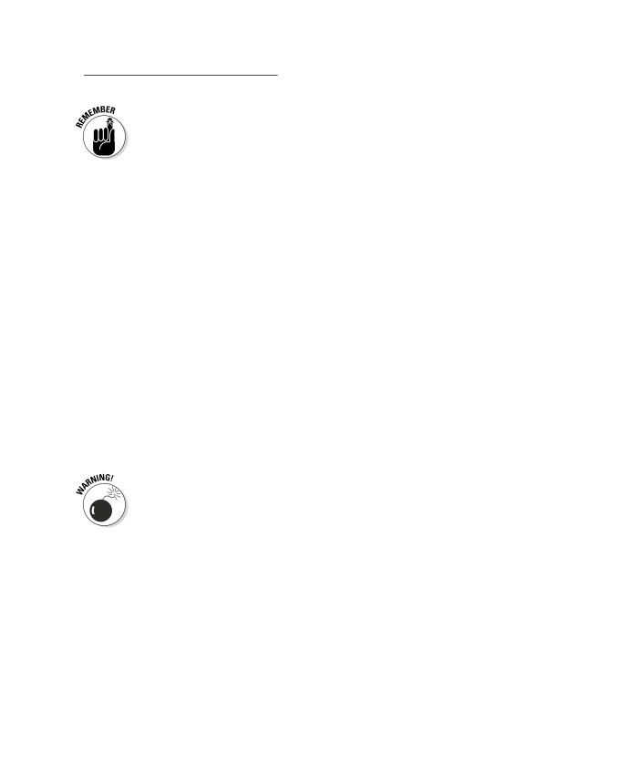
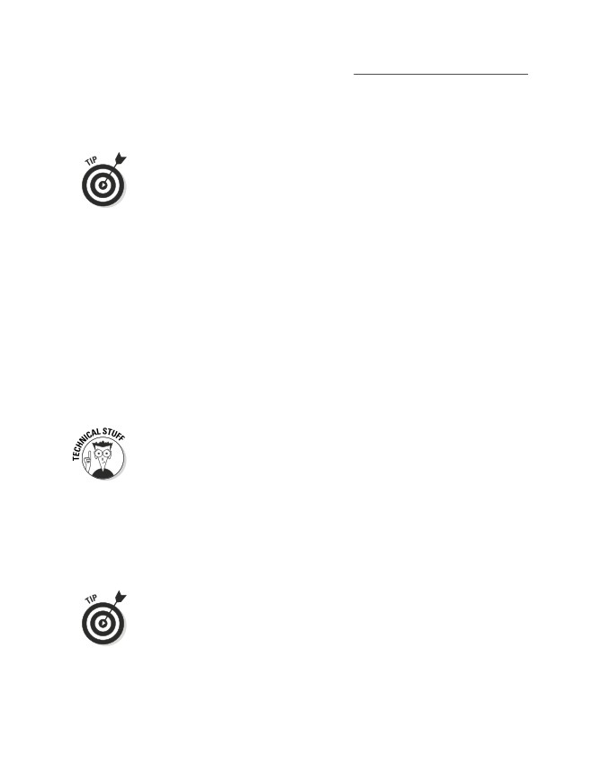
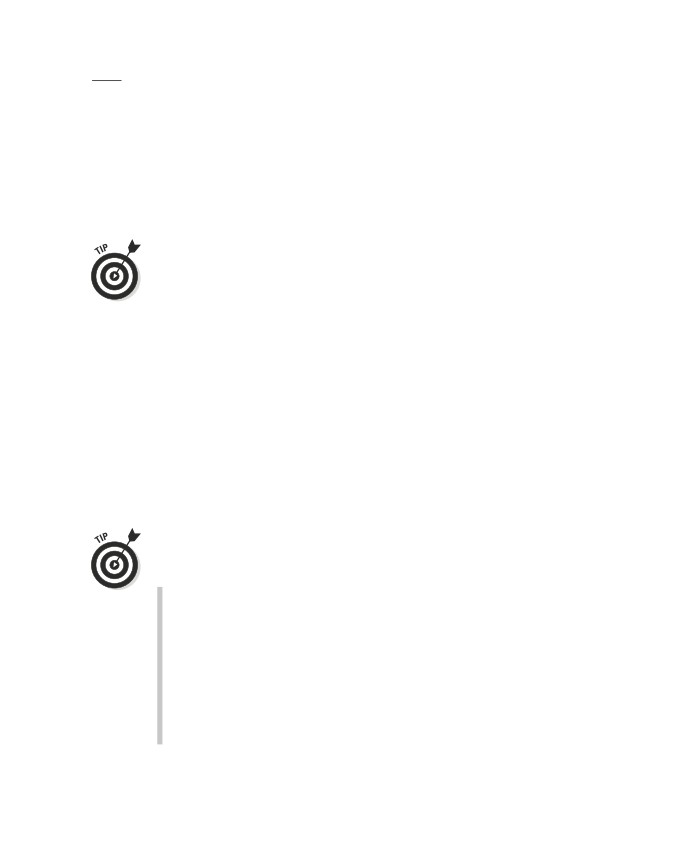
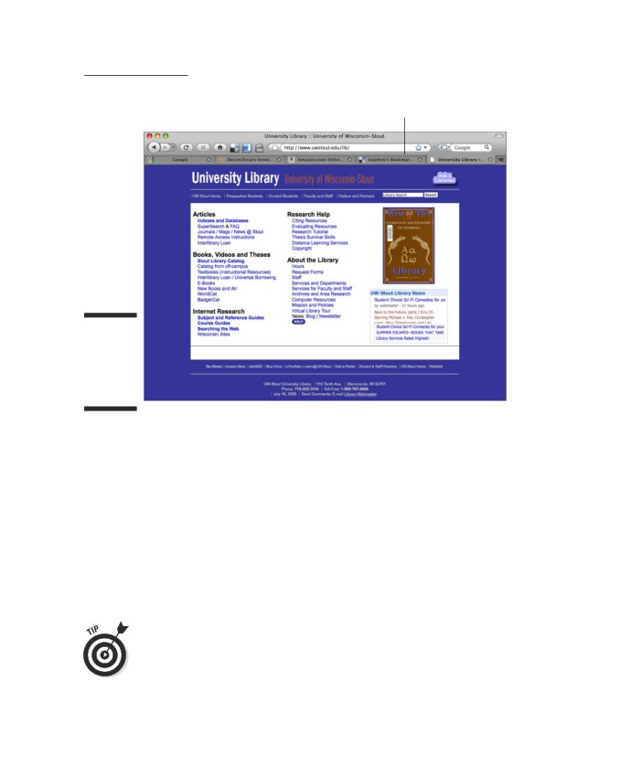
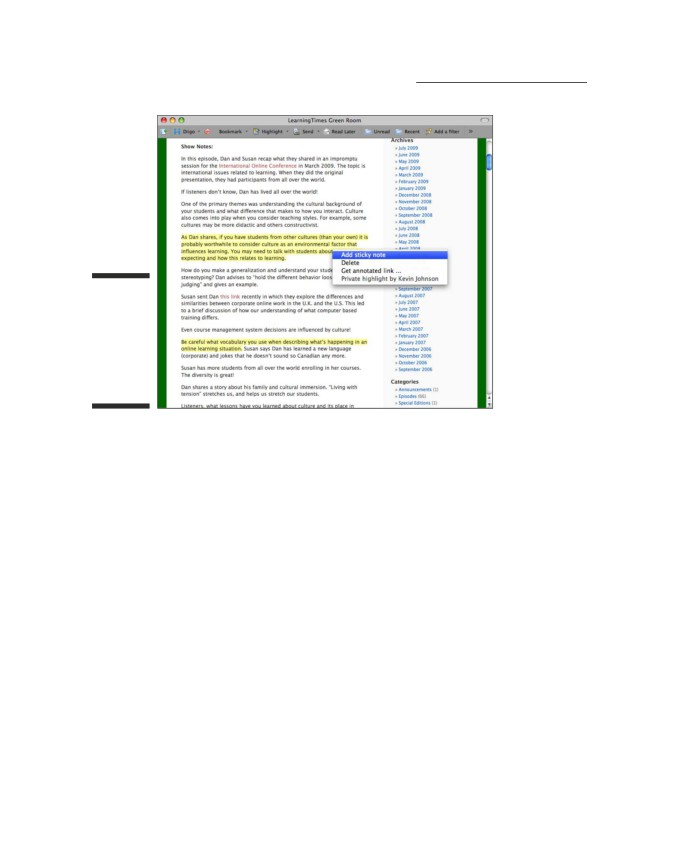
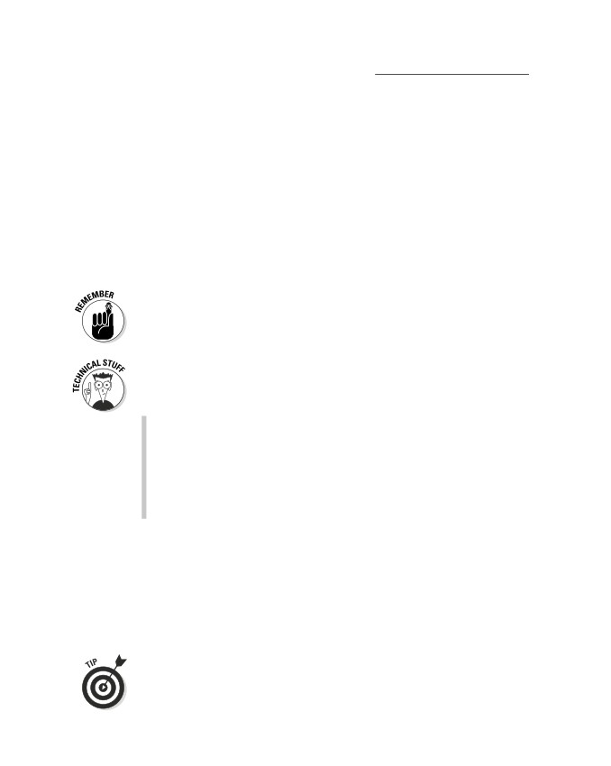
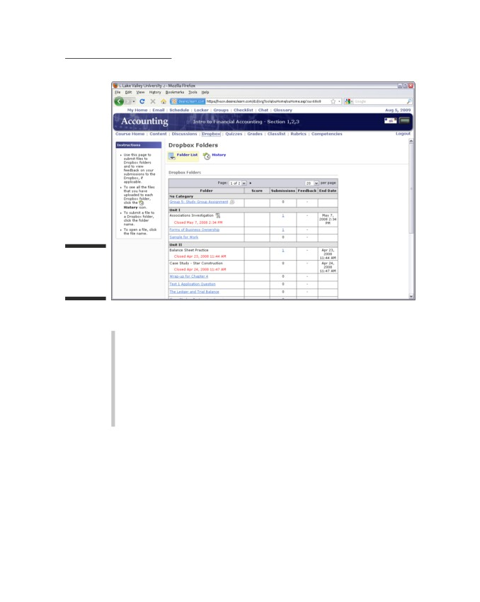

Learn to:
• Earn various degrees and certifications
online
• Apply to online schools and finance your
education
• Navigate the virtual classroom and
connect with other students
• Develop good online study habits
Kevin Johnson
CEO, The Cutting Ed, Inc.
Susan Manning, EdD
Certified Master Online Teacher
Foreword by Jonathan Finkelstein, founder,
LearningTimes.net, and author, Learning in Real Time
Get More and Do More at Dummies.com®
Start with FREE Cheat Sheets
Cheat Sheets include
• Checklists
• Charts
• Common Instructions
• And Other Good Stuff!
To access the Cheat Sheet created specifically for this book, go to
Get Smart at Dummies.com
Dummies.com makes your life easier with 1,000s
of answers on everything from removing wallpaper
to using the latest version of Windows.
Check out our
• Videos
• Illustrated Articles
• Step-by-Step Instructions
Plus, each month you can win valuable prizes by entering
our Dummies.com sweepstakes. *
Want a weekly dose of Dummies? Sign up for Newsletters on
• Digital Photography
• Microsoft Windows & Office
• Personal Finance & Investing
• Health & Wellness
• Computing, iPods & Cell Phones
• eBay
• Internet
• Food, Home & Garden
Find out “HOW” at Dummies.com
*Sweepstakes not currently available in all countries; visit Dummies.com for official rules.
Online
Education
FOR
‰
DUMmIES
by Kevin Johnson and Susan Manning, EdD
Foreword by Jonathan Finkelstein
Online Education For Dummies®
Published by
Wiley Publishing, Inc.
111 River St.
Hoboken, NJ 07030-5774
Copyright © 2010 by Wiley Publishing, Inc., Indianapolis, Indiana
Published simultaneously in Canada
No part of this publication may be reproduced, stored in a retrieval system or transmitted in any form or
by any means, electronic, mechanical, photocopying, recording, scanning or otherwise, except as permit-
ted under Sections 107 or 108 of the 1976 United States Copyright Act, without either the prior written
permission of the Publisher, or authorization through payment of the appropriate per-copy fee to the
Copyright Clearance Center, 222 Rosewood Drive, Danvers, MA 01923, (978) 750-8400, fax (978) 646-8600.
Requests to the Publisher for permission should be addressed to the Permissions Department, John Wiley
& Sons, Inc., 111 River Street, Hoboken, NJ 07030, (201) 748-6011, fax (201) 748-6008, or online at http://
www.wiley.com/go/permissions.
Trademarks: Wiley, the Wiley Publishing logo, For Dummies, the Dummies Man logo, A Reference for the
Rest of Us!, The Dummies Way, Dummies Daily, The Fun and Easy Way, Dummies.com, Making Everything
Easier, and related trade dress are trademarks or registered trademarks of John Wiley & Sons, Inc. and/
or its affiliates in the United States and other countries, and may not be used without written permission.
All other trademarks are the property of their respective owners. Wiley Publishing, Inc., is not associated
with any product or vendor mentioned in this book.
LIMIT OF LIABILITY/DISCLAIMER OF WARRANTY: THE PUBLISHER AND THE AUTHOR MAKE NO
REPRESENTATIONS OR WARRANTIES WITH RESPECT TO THE ACCURACY OR COMPLETENESS OF
THE CONTENTS OF THIS WORK AND SPECIFICALLY DISCLAIM ALL WARRANTIES, INCLUDING WITH-
OUT LIMITATION WARRANTIES OF FITNESS FOR A PARTICULAR PURPOSE. NO WARRANTY MAY BE
CREATED OR EXTENDED BY SALES OR PROMOTIONAL MATERIALS. THE ADVICE AND STRATEGIES
CONTAINED HEREIN MAY NOT BE SUITABLE FOR EVERY SITUATION. THIS WORK IS SOLD WITH THE
UNDERSTANDING THAT THE PUBLISHER IS NOT ENGAGED IN RENDERING LEGAL, ACCOUNTING, OR
OTHER PROFESSIONAL SERVICES. IF PROFESSIONAL ASSISTANCE IS REQUIRED, THE SERVICES OF
A COMPETENT PROFESSIONAL PERSON SHOULD BE SOUGHT. NEITHER THE PUBLISHER NOR THE
AUTHOR SHALL BE LIABLE FOR DAMAGES ARISING HEREFROM. THE FACT THAT AN ORGANIZATION
OR WEBSITE IS REFERRED TO IN THIS WORK AS A CITATION AND/OR A POTENTIAL SOURCE OF FUR-
THER INFORMATION DOES NOT MEAN THAT THE AUTHOR OR THE PUBLISHER ENDORSES THE INFOR-
MATION THE ORGANIZATION OR WEBSITE MAY PROVIDE OR RECOMMENDATIONS IT MAY MAKE.
FURTHER, READERS SHOULD BE AWARE THAT INTERNET WEBSITES LISTED IN THIS WORK MAY HAVE
CHANGED OR DISAPPEARED BETWEEN WHEN THIS WORK WAS WRITTEN AND WHEN IT IS READ.
For general information on our other products and services, please contact our Customer Care
Department within the U.S. at 877-762-2974, outside the U.S. at 317-572-3993, or fax 317-572-4002.
For technical support, please visit www.wiley.com/techsupport.
Wiley also publishes its books in a variety of electronic formats. Some content that appears in print may
not be available in electronic books.
Library of Congress Control Number: 2009940873
ISBN: 978-0-470-53620-9
Manufactured in the United States of America
10
9
8
7
6
5
4
3
2
1
About the Authors
Kevin Johnson is the CEO of The Cutting Ed, Inc., a consulting company that
specializes in helping clients envision education and training for the 21st cen-
tury. He has more than 20 years’ experience working in education and figuring
out how to use technology to his advantage.
Kevin’s start with technology began as a 14-year-old teaching himself to pro-
gram. Completing his bachelor’s degree at Eastern Illinois University and his
master’s at the University of Illinois, Kevin developed curriculum and taught in
academic and corporate environments for the next 13 years. Due to his desire
to save paper (not to mention not wanting to fight for the copy machine), he
started providing lecture notes and other resources to students on CDs. As
the Internet emerged, he began teaching Web development courses. It was a
natural transition to move from burning CDs to placing course content on the
Web. Before long, Kevin was interacting with his students electronically and
his interest in online education began.
Kevin stays triple-busy pursuing his doctor of education degree in Instructional
Technology and Distance Education. As you might guess, he is studying
online!
Susan Manning is best known as a teacher’s teacher. She develops faculty and
prepares them to teach online. Susan teaches online courses for the University
of Wisconsin-Stout and the University of Illinois’ Illinois Online Network in online
learning, instructional design, technology tools, the synchronous classroom, and
group work online. She has taught hundreds of faculty, including international
faculty from Saudi Arabia, Denmark, Vietnam, and Russia. Because Susan’s teach-
ing career began with adult students learning English as a second language, she
continues to teach immigrants at Waubonsee Community College. These stu-
dents remind her that basic human interaction and communication skills always
trump technology.
Susan’s online career began more than 10 years ago when she was asked
to investigate the possibility of training literacy volunteers online. Knowing
that she needed additional training and skills development, Susan became
an online student and earned her certification as Master Online Teacher
from the University of Illinois. Additionally, she holds a doctorate in
Adult Education from Ball State University, a master’s in College Student
Personnel from Bowling Green State University, and a bachelor’s degree in
Communications from Truman State University.
Susan can be heard regularly on The LearningTimes GreenRoom podcast
examine issues and topics related to learning.
Dedication
We would like to dedicate our first book to our families. We didn’t get this far
without good guidance from our parents and couldn’t have worked through
the development of this book without awesome support from our husbands
and children.
Authors’ Acknowledgments
We didn’t write this alone! We first want to say thanks to the entire editorial
staff at Wiley for making us sound so smart, especially Georgette Beatty, Erin
Calligan Mooney, and Christy Pingleton. Georgette Beatty, you really should
go into teaching because you have the patience and presence of a true educa-
tor. This was a wonderful learning experience for us. We also had help, encour-
agement, and insights from the following people (listed alphabetically):
Dan Balzer, a great friend with international appeal. Because he has lived in
various corners of the globe, Dan was a natural to give us insights and ideas
regarding international students and online education.
Eileen Cable, our technical reviewer, for her tireless review of our work. A librar-
ian by trade, we bet she wanted to hide in the stacks with some of the chapters!
Virginia Fleming from Pennsylvania Leadership Charter School, who read and
checked our information for accuracy and let us play with her in the virtual
classroom so we could capture that wonderful screenshot in Chapter 16.
Christie Gilson, friend and Assistant Professor in the Education Department
at Moravian College. We thank her for reading and providing input on acces-
sibility issues specific to online education.
Kay Johnson and the others from Florida Virtual School who read for us and
provided us insights concerning K-12 online education.
Diane Stegmeyer, Susan’s friend and neighbor, who patiently stepped us through
the admissions and registration processes from a variety of perspectives.
Joan Vandervelde, Online Professional Development at University of
Wisconsin-Stout, who graciously read for us and provided insights for the
K-12 portions.
Thanks to the following agencies and organizations that helped us with
screenshots: Angel Course Management System, ASCD, Desire2Learn,
EBSCO, Elluminate, Florida Virtual School, Nova Southeastern University,
Pennsylvania Leadership Charter School, Skype, University of Illinois Global
Campus, and University of Wisconsin-Stout.
Publisher’s Acknowledgments
other comments, please contact our Customer Care Department within the U.S. at 877-762-2974, out-
side the U.S. at 317-572-3993, or fax 317-572-4002. Some of the people who helped bring this book to
market include the following:
Acquisitions, Editorial, and
Composition Services
Media Development
Project Coordinator: Katherine Crocker
Senior Project Editor: Georgette Beatty
Layout and Graphics: Ashley Chamberlain,
Acquisitions Editor: Tracy Boggier
Timothy Detrick, Joyce Haughey,
Melissa K. Jester, Christine Williams
Copy Editor: Christine Pingleton
Proofreader: Evelyn C. Gibson
Assistant Editor: Erin Calligan Mooney
Indexer: Valerie Haynes Perry
Editorial Program Coordinator: Joe Niesen
Special Help
Technical Editor: Eileen Cable
Victoria M. Adang
Editorial Manager: Michelle Hacker
Editorial Assistant: Jennette ElNaggar
Cover Photo: iStock
Cartoons: Rich Tennant
Publishing and Editorial for Consumer Dummies
Diane Graves Steele, Vice President and Publisher, Consumer Dummies
Kristin Ferguson-Wagstaffe, Product Development Director, Consumer Dummies
Ensley Eikenburg, Associate Publisher, Travel
Kelly Regan, Editorial Director, Travel
Publishing for Technology Dummies
Andy Cummings, Vice President and Publisher, Dummies Technology/General User
Composition Services
Debbie Stailey, Director of Composition Services
Contents at a Glance
Foreword
xvii
Introduction
1
Part I: Introducing a Different Kind of Classroom
7
Chapter 1: Heading Online for Your Education
9
Chapter 2: The Traits and Benefits of Online Education
23
Chapter 3: The Technology and Technological Skills You Need to Succeed
41
Part II: Preparing to Be a Student
63
Chapter 4: Discovering What’s Available Online
65
Chapter 5: Doing Your Homework: Evaluating Schools
83
Chapter 6: Applying to School and Securing the Cash
101
Chapter 7: Getting Accepted and Prepping for Class
115
Part III: The Virtual Classroom: Being
an A+ Student
131
Chapter 8: Navigating the Classroom
133
Chapter 9: Meeting the People in (And around) Your Classroom
149
Chapter 10: Communicating Clearly Online
165
Chapter 11: Developing Good Study Habits for Online Courses
181
Chapter 12: Getting a Handle on Group Dynamics
203
Chapter 13: Understanding Netiquette and Ethical Behavior
217
Chapter 14: Finishing and Submitting Your Assignments
231
Chapter 15: Transitioning after School
247
Part IV: Special Considerations in Online Education
263
Chapter 16: Educating Students from Kindergarten through High School
265
Chapter 17: Connecting with International Students
281
Chapter 18: Accessibility in Online Education
295
Part V: The Part of Tens
309
Chapter 19: Ten Myths about Online Education
311
Chapter 20: Ten Nationally Recognized Online Schools
317
Index
323
Table of Contents
Foreword
xvii
Introduction
1
About This Book
1
Conventions Used in This Book
2
What You’re Not to Read
2
Foolish Assumptions
3
How This Book Is Organized
4
Part I: Introducing a Different Kind of Classroom
4
Part II: Preparing to Be a Student
4
Part III: The Virtual Classroom: Being an A+ Student
4
Part IV: Special Considerations in Online Education
5
Part V: The Part of Tens
5
Icons Used in This Book
5
Where to Go from Here
6
Part I: Introducing a Different Kind of Classroom
7
Chapter 1: Heading Online for Your Education
9
Examining the Characteristics and Advantages of Online Education
10
The nature of online education
10
A few pros of online education
11
Knowing the Technology and Computer Skills You Need to Succeed
12
Seeing How to Go About Becoming an Online Student
13
Finding available courses
13
Evaluating schools
14
Applying to school and getting the money you need
15
Getting accepted and getting ready for class
16
Being a Star Student
16
Making your way around your classroom
17
Meeting the instructor, fellow students, and
other important folks
17
Communicating with clarity
17
Strengthening your study habits
18
Working well in a group
18
Understanding online manners and ethics
19
Completing and turning in assignments
19
Transitioning after you’re done with school
20
Looking at a Few Special Situations in Online Education
20
Students in kindergarten through high school
21
Students from abroad
21
Students with disabilities
22
Online Education For Dummies
x
Chapter 2: The Traits and Benefits of Online Education
23
What Makes Online Education Different from Traditional Education?
23
Connecting to coursework and people via the Internet
24
Working when it’s convenient
26
No loafing!
27
Who Benefits from Online Education?
28
Adults beyond traditional college age
28
Traditional college students
31
Seniors and retirees
32
High school and homeschooled students
33
Getting a Grip on Potential Pitfalls
34
Online education isn’t easier
35
You can’t have spontaneous, face-to-face discussions
35
Determining Whether You’re Ready to Join the World of Online
Education
36
Assessing your own discipline
36
Knowing your learning style
37
Being patient and tolerant
39
Chapter 3: The Technology and Technological Skills
You Need to Succeed
41
Checking Your Technological Readiness
41
Meeting minimum hardware requirements
42
Meeting software requirements
46
Establishing a reliable Internet connection
49
Testing Your Technological Abilities
50
Reading and scrolling efficiently
51
Typing quickly and accurately
51
Organizing folders
52
Navigating the Web
54
Downloading and installing software
55
Using e-mail
56
Staying Safe Online
57
Making secure payments
57
Remembering and protecting passwords
58
Ensuring personal security
60
Part II: Preparing to Be a Student
63
Chapter 4: Discovering What’s Available Online
65
Examining Different Types of Online Programs and Courses
65
Earning traditional credit
66
Obtaining certifications
68
Continuing your education with a few classes for fun or profit
69
Finding Out Which Institutions Offer Online Programs and Courses
70
Four-year colleges
71
Two-year colleges
73
Table of Contents
xi
Other institutions for certificates, professional
development, and training
74
Virtual schools for children and teens
74
Checking Out Different Structures of Online Courses
76
Just you and the monitor (fully online) versus
blended courses (partly online)
76
Instructor-led courses versus self-paced courses
77
Asynchronous courses versus synchronous
(real-time) courses
80
Finishing Your Schooling Faster with
Accelerated Programs and Courses
81
The benefits and challenges of accelerated programs
81
Tips for successfully completing accelerated classes
82
Chapter 5: Doing Your Homework: Evaluating Schools
83
Focusing on What You Need in a School
83
Considering the program you’re interested in
84
Determining whether or not a program is affordable
85
Checking out class size (and the student-to-instructor ratio)
85
Knowing how much time you can commit
and how it may be spent
86
Planning ahead: Figuring out whether your credits will transfer
88
Finding an Accredited School
89
Recognizing the two types of accreditation
89
Seeing the benefits of accreditation
92
Determining whether an online program is accredited
92
Other factors that contribute to an institution’s credibility
93
Talking to the Right People to Get the Answers You Need
94
Talking to an academic advisor about the school
95
Asking a faculty member about the program
98
Chatting with other students about their experiences
99
Narrowing Your Options
100
Chapter 6: Applying to School and Securing the Cash
101
Applying to an Online Program
101
The basic application forms
102
Your personal essay
103
Letters of recommendation
106
Test scores
107
When it’s all due
107
Lending a helping hand: The recruiter, advisor, or counselor
108
Calculating the Costs of Online Classes
108
Figuring Out How You’re Going to Pay for Online Classes
111
Do you need financial aid?
111
What types of financial aid are available?
112
Applying for Federal Financial Aid
112
Knowing whether you’re eligible for funds from Uncle Sam
113
Filling out and submitting the FAFSA
113
Online Education For Dummies
xii
Chapter 7: Getting Accepted and Prepping for Class
115
Finding Out Whether You’ve Been Accepted or Rejected
115
Registering for Classes
117
Creating a plan with your academic advisor
117
Picking your first classes
118
Gathering the information you need to register
120
Understanding registration processes
120
Taking action if a course you want is full
121
When in doubt: Talking to your academic advisor
122
Getting Oriented
122
Determining whether an orientation is
available and/or required
123
Distinguishing types of orientation programs
123
Participating in orientation
125
Buying Books
127
Knowing which textbooks you need
127
Deciding where to buy your textbooks
128
Buying new or used — that is the question
129
Part III: The Virtual Classroom: Being an A+ Student
131
Chapter 8: Navigating the Classroom
133
Reaching Your Virtual Classroom
133
Using the right address and setting some Internet options
134
Logging in and checking out the portal
135
Finding your course’s home page
136
Locating and Understanding Critical Documents
138
The syllabus
139
The calendar
140
Finding out how you’re graded
142
Modules and More: Understanding a Course’s Content
Organization
145
Attending Virtual Office Hours
146
Discovering the value of virtual office hours
147
Accessing the virtual office
148
Chapter 9: Meeting the People in (And around) Your Classroom
149
Getting to Know the Folks Who Are Front and Center
150
Acquainting yourself with your instructor
150
Interacting with fellow students
154
Seeing Who’s Behind the Scenes
156
Noting classroom guests and observers
157
Calling on technical support
158
Receiving academic support
161
Developing your personal support system
163
Table of Contents
xiii
Chapter 10: Communicating Clearly Online
165
Checking Out Methods of Communicating Online
165
Instructor-to-class communication in news
and announcements
166
Student-to-student communication in discussions
167
One-on-one communication via private e-mail or messaging
168
Creating and Putting Forward an Online Persona
170
Depicting positive personality traits online
171
Developing relationships
174
Participating in Discussions
174
Understanding why you’re asked to discuss
175
Organizing discussions in different ways
175
Figuring out discussion requirements
177
Avoiding overposting
178
Tapping into Social Networks
178
The benefits of communicating outside the virtual classroom
179
Avoiding distractions
180
Chapter 11: Developing Good Study Habits for Online Courses
181
Setting Aside Time to Work
181
Working at your peak times
182
Checking in every day for a short time
182
Calculating how much time you need to finish longer tasks
183
Blocking off enough study time each week
185
Navigating the Web Efficiently
185
Keeping multiple browser windows open
185
Avoiding time wasted by chasing links
187
Using social bookmarking tools
188
Reading Wisely
190
Finding the stuff you need to read
190
Deciding whether to print online reading material
192
Increasing the font size in your browser to help
you read more easily
192
Taking notes on what you read
193
Keeping track of everything you’ve already read
194
Visiting the Library
195
Accessing the library
196
Doing research online
197
Watching tutorials on the library site
200
Working Offline
201
Chapter 12: Getting a Handle on Group Dynamics
203
Making Your Online Group Successful
204
Introducing yourself in a group forum
204
Establishing a leader and other roles
205
Setting up a group schedule
206
Online Education For Dummies
xiv
Meeting in real time
207
Using collaborative tools
208
Being patient
212
Resolving Conflicts
213
Understanding the conflicts you may
encounter (and handling them)
213
Bringing problems to your instructor’s attention
215
Chapter 13: Understanding Netiquette and Ethical Behavior
217
Defining and Using Netiquette
217
Communicating politely and respectfully
218
Avoiding stereotyping
221
Recognizing the Importance of Online Ethics
221
Being honest in the written word
221
Showing integrity by following through
222
Respecting privacy and confidentiality
222
Asking before you repurpose prior work
223
Avoiding Plagiarism
223
Defining plagiarism and related concepts
224
Getting the facts on plagiarism
224
Citing sources properly
225
Checking your own work
227
Looking at the penalties for plagiarism
228
Chapter 14: Finishing and Submitting Your Assignments
231
Understanding the Ramifications of Rubrics
232
Breaking down rubrics
232
Using rubrics to your advantage
234
Writing 101
235
Checking out different writing styles
235
Knowing what’s expected in your writing
237
Demonstrating critical thinking
238
Completing Different Types of Assignments
239
Mastering papers and projects
239
Participating in discussions
241
Taking quizzes and tests
242
Submitting Assignments
244
Drop-boxes and e-mail attachments for papers and projects
244
Post, Emily! Submitting discussion posts
244
The “submit” button on quizzes and tests
245
Tips for submitting any assignment
246
Chapter 15: Transitioning after School
247
Developing an ePortfolio
247
Understanding how to use an ePortfolio
248
Checking out typical components of an ePortfolio
249
Table of Contents
xv
Choosing a method for creating an ePortfolio
254
Designing a successful ePortfolio
256
Transferring your existing portfolio to the Web
258
Getting Help with Finding a Job
259
Utilizing career services at your school
259
Perusing general job search sites
260
Establishing networks while studying online
261
Part IV: Special Considerations in Online Education
263
Chapter 16: Educating Students from Kindergarten
through High School
265
Understanding Why Kids Are Going to School Online
266
Wanting to be online
266
Needing to be online
266
Seeing the Differences between K-12 and Adult Online Education
267
Safety concerns with children
267
Enhanced parental involvement
269
More real-time opportunities
270
The need to work offline
271
Checking Out Different Kinds of Virtual Schools for Kids and Teens
272
State-funded schools
272
Private online schools
277
Going through the K-12 Enrollment Process
278
Finding the right classes
278
Confirming credits before taking classes
279
Understanding articulation agreements
280
Chapter 17: Connecting with International Students
281
Taking First Steps toward Going to a U.S.-Based Online School
281
Getting a grip on the benefits of attending a
U.S.-based online school
282
Proving language proficiency (if necessary)
283
Transferring credits from schools abroad
286
Handling costs and payments
287
Don’t forget your books!
287
Accessing the Internet around the World
287
Considering residential expenses
288
Getting connected outside your home
288
Being aware of restrictions
290
Making the Most of Your Class Time
290
Understanding what’s different about classes
in the United States
290
Adjusting for differences in time zones
291
Joining study groups
292
Online Education For Dummies
xvi
Chapter 18: Accessibility in Online Education
295
Determining Whether the Courses You Want to Take
Are Accessible
296
Do the courses follow any accessibility standards?
296
Are the courses tested for accessibility?
299
How will the school help me if I’m unable to access
information in the courses?
300
Disclosing a Disability to Your Chosen Online School
301
Understanding why and when you need to disclose
301
Figuring out what information to disclose
302
Keeping privacy in mind
303
Using Assistive Technology Online
305
Reading Web pages with screen readers
305
Transcribing and captioning audio and video files
306
Considering accommodation options
for synchronous sessions
307
Part V: The Part of Tens
309
Chapter 19: Ten Myths about Online Education
311
Online Education Is Anytime/Anywhere
311
Only Kids Take Online Courses
312
An Online Course Is a Great Way to Learn
How to Use Your Computer
312
You Must Be a Computer Geek to Take an Online Course
313
Online Education Is Easier Than Traditional Education
313
Online Education Is Lower in Quality Than Traditional Education
314
Online Education Is Always Independent
314
Online Education Is Less Personal Than Traditional Education
315
You Need a Webcam for an Online Class
315
Everyone Cheats Online
316
Chapter 20: Ten Nationally Recognized Online Schools
317
California State University, Chico
317
Capella University
318
Florida State University Online
318
Florida Virtual School
319
Kaplan University
319
Nova Southeastern University
320
Penn State Online
320
University of Phoenix
321
Walden University
321
Western Governors University
322
Index
323
Foreword
e are all already learners. We learn in all kinds of ways, and we learn
W
every day in ways large and small. Whether we are in conversation
with colleagues, friends, or family; reading or watching the news; attending
a seminar or meeting; or stopping to ask someone for directions; we are
absorbing and processing new information.
And if you are one of the many people who access the Web as part of your
regular routine to search, shop, socialize, or send messages, you’re already
learning online.
The leap from here to the more formal world of online education — engaging
in online classes, pursuing a degree online, or continuing one’s education in
a virtual classroom — is not very large, but it does help to understand the
landscape; to be prepared mentally, emotionally, and technologically; and to
make some good decisions.
In the course of my day facilitating online learning programs, one element
always emerges as a key indicator of the success of the online experience:
the motivation of the learner. As learners, we need to understand why
we’re engaging in the process, why it matters to us, and what outcomes we
hope for and expect. If you are reading this, you are probably already quite
motivated. You are taking steps to continue your formal education and to
enhance your life in ways that matter most to you.
The other main ingredient of successful online learning experiences is a
humanely designed, appropriately stimulating, instructionally sound, and well-
supported online program offering. It’s not always obvious when peering in
from the outside whether you have found such a program, which is why some
guidance from the likes of the professionals who wrote Online Education For
Dummies is so handy.
When I first started helping others move their instruction and learning online,
I often was greeted with doubts that Web-based learning could be “as good
as” face-to-face experiences. I don’t know about you, but not every in-person
class I took deserved a trophy. Thankfully, there is now ample evidence —
much of it in the form of success stories from alumni — that online learning
experiences can be even better than offline equivalents. With strong learner
motivation and good design, facilitation, and support, any learning program
can be great.
Everyone has his or her own learning style. My own personal preference when
it comes to learning online is for approaches that feature knowledgeable,
authentic, and supportive guides who accompany the learner through new
or unfamiliar terrain. That is exactly what you have in Online Education For
Dummies. Enjoy your journey.
Jonathan Finkelstein
Founder, LearningTimes.net
Author, Learning in Real Time
Introduction
ccording to a report published by the Alfred P. Sloan Foundation in 2008,
A
nearly one in five college students experienced some sort of Web-based
instruction. That’s a lot of students learning online! And, considering that
college is no longer limited to advantaged 18- to 22-year-olds, that means a
lot of those online students may be older and less familiar with the tools that
come with the territory. That’s why we’ve written this book — for the many
learners who find themselves in school, online, and confused.
The ups and downs of the global economy have sent more learners back to
school to retool or add credentials to their resume. However, balancing work,
family, civic commitments, and school is an arduous task at best. Online edu-
cation allows learners to address their professional development needs at a
time and in a manner that may be more flexible with their lifestyles. This may
be part of the reason that online enrollments have mushroomed over the
past few years.
Five years ago when we tried to explain to people that we taught college
courses online, we were met with, “How does that work?” Today, we hear
stories of family members or colleagues taking courses online, but many
questions still remain. There’s a bit of controversy, too, in that students may
not have a choice but to take a course online, and too often they are left to
flounder with inadequate guidance from advisors and faculty.
Regardless of age or experience, students who know what they want and
are willing to work hard are the ultimate winners in the world of education.
Online Education For Dummies helps students become winners in the online
classroom by explaining just how it works. We take you from the decision-
making process of determining whether this venue is right for you, through
applying and enrolling, to the skills you need to succeed.
About This Book
Online Education For Dummies is not a highly academic book written for schol-
ars. It’s a book for everyday students who find themselves faced with online
possibilities. You can trust this book when you need to quickly understand
something about online education. Consider these examples:
✓ If you’re a working professional who needs to earn an additional degree
or certification for career advancement, we can show you how to put
together your application materials and get started in a program.
Online Education For Dummies
2
✓ If you want to go to school full-time but don’t have the funding, we can
tell you who to talk to regarding financial aid.
✓ If you want to take online courses but are unfamiliar with the technology
involved, we can walk you through the kinds of tools you’ll use to sup-
port classroom discussion and submit your assignments.
✓ If you’re a high school student thinking about non-traditional schooling,
we can give you the information you need. We also cover students with
disabilities and international students.
Depending on who you are and what you need in terms of online education,
you can easily skip around this book to find exactly what you need. (But
don’t worry — we won’t complain if you want to read it from cover to cover!)
Conventions Used in This Book
We use several standard conventions throughout this book:
✓ New terms are italicized. We try to use as little jargon as possible, but
because online education utilizes some slightly new vocabulary, some
terms are unavoidable. Italicized words are followed by definitions in
layman’s terms. (We also italicize any words we want to emphasize.)
✓ Key words in bulleted and numbered lists are bold, so you know what’s
most important.
✓ You’ll see a lot of Web addresses in monofont; how could you not when
we’re talking about online education? Also keep in mind that when this
book was printed, some Web addresses may have needed to break
across two lines of text. If that happened, rest assured that we haven’t
put in any extra characters (such as hyphens) to indicate the break. So,
when using one of these Web addresses, just type in exactly what you
see in this book, pretending the line break doesn’t exist.
✓ We’ve alternated the use of gender-related pronouns throughout the
book (with no preferential treatment intended). That’s because teachers
and students come in both varieties!
What You’re Not to Read
Of course, our egos hope that you read and digest every word. But, the realists
in us know that you’re busy and might want to read only the essential material.
So, if you need to skip a few things due to time, here are a few suggestions:
Introduction
3
✓ Sidebars (in shaded gray boxes) contain information that is interesting
but not critical to understanding online education. You can skip these
boxes, especially if you understand the context of the surrounding material.
✓ We use the Technical Stuff icon for any topic that may require a little
more explanation as to what it is and how it works. However, provid-
ing an understanding of technical details isn’t the purpose of this book.
Therefore, paragraphs marked with this icon can be skimmed over
quickly or skipped entirely if you prefer.
Foolish Assumptions
As a way of helping us focus on what to write, we made several assumptions
about you, dear reader, when writing this book:
✓ You know how to use a computer for the basics. We hope this is true
about you. If it isn’t true, perhaps you’ll want to skim Chapter 3 and then
decide whether online education is really for you.
✓ You’re considering going back to school and are leisurely looking at
alternatives. Maybe you’re curious about how online education works
and want to get a sense before you select a school or program. In that
case, you have plenty of time and may read the book cover to cover.
✓ You know what you want to study. We know that not everybody knows
exactly what they want to study or what career they want to have upon
graduation. We’ve done our best to speak to those who want to par-
ticipate in a full-fledged online program as well as those who want to
explore options and possibly only take one or two classes total.
✓ You’re faced with an online course, have no idea what you’re in for,
and need the information quickly! This is where the majority of online
students find themselves the first time. If you’re already enrolled, you
may want to jump right to Part III and learn what you need to excel.
✓ You’re an online instructor (or thinking about becoming one) and are
curious about the various ways in which online courses are structured
and how students and staff interact in cyberspace. This book can help
you see online education from the student’s perspective, and it may
inspire you to try a new idea or two. Heck, it may even inspire you to
consider taking an online course as a way of growing professionally.
✓ You’re an online instructor and you need your students to be better
prepared for taking online courses. Perhaps your students are coming
to your virtual classroom unprepared, with false expectations about
online learning. In this case, consider recommending this book to your
school bookstore to help your future students get settled into your
online course quicker.
Online Education For Dummies
4
How This Book Is Organized
Online Education For Dummies is organized in five parts. The parts are orga-
nized so that you can start by looking at the big picture of online education,
and then walk through the decision-making and application processes, get
into courses and succeed, and ultimately move out of the educational realm
to apply your newfound skills and knowledge.
Part I: Introducing a Different
Kind of Classroom
In this part we give you the basic landscape of online education. In particular,
we discuss what you may need to consider about online education to see
whether this is truly a fit for you. In addition, we give you an overview of the
technological competencies you should have before taking an online course.
Part II: Preparing to Be a Student
If you haven’t gone to school in the past ten years, you’re in for a surprise!
Almost everything is online, from course catalogs to applications to live advi-
sors. This part walks you through the processes you need to follow to select
an appropriate program or course, apply, register, and enroll.
Part III: The Virtual Classroom:
Being an A+ Student
This part is where we talk about the specifics of how online courses work.
Drawing from years of helping new students get acclimated to online courses,
we take you through the common activities and processes you need to know
as an online student. This includes communication skills, identifying impor-
tant documents and resources in a course, and understanding your role and
tasks as a student. Even if you’ve taken an online course previously, you may
be surprised at the details we address.
Introduction
5
Part IV: Special Considerations
in Online Education
One of the truisms about online education is that it offers more educational
possibilities for students who may not have access to a more traditional
educational system. This includes younger students (those in kindergarten
through high school), international students outside the United States, and
students with disabilities. Online classrooms are diverse, and we address
special needs in this part of the book.
Part V: The Part of Tens
Every For Dummies book concludes with a short summary of key information
and tips. In our Part of Tens, we have included ten myths about online educa-
tion and ten top online schools.
Icons Used in This Book
As is customary in any For Dummies book, we’ve used a few standard icons.
Here’s what the symbols mean and how you should interpret them.
Any information marked with this icon is worth remembering and taking away
from this book.
We use this icon when we feel the need to provide more background informa-
tion on a topic — material that’s interesting, but not essential to your
understanding.
We use this icon to mark strategies and techniques we’ve learned from being
online students ourselves or from our former students.
This icon denotes things you should be cautious of. Taking note of this info
can help you avoid unnecessary headaches.
Online Education For Dummies
6
Where to Go from Here
We understand that your situation is specific to you and that you may not
necessarily need the same information as other readers. Feel free to look
over the table of contents and decide what chapter might best meet your
needs. Our recommendation is that if you’re brand new to the idea of online
education, flip to Chapter 1 for an introduction and move through the book
sequentially. If you’re already taking an online course, head to Part III for
pointers on succeeding in your class.
We truly hope that you not only enjoy reading the book, but that it also helps
you make some very important decisions, provides you with the right
questions to ask on your academic journey, and better prepares you for
your online adventures.
As educators, we encourage our students to provide us with feedback on
how we’re doing. We encourage you to do the same. Please submit sugges-
tions to authors@thecuttinged.com. Your suggestions could help us
update future versions of the book to ensure that future readers are even
better prepared for taking online classes.
We wish you luck in your online journey and prosperity in your future
careers and academic adventures.
Part I
Introducing a
Different Kind of
Classroom
In this part . . .
f you’re considering the possibility of taking an online
I
course but really have no idea what that means, we
can help. In this part, we give you the basic landscape of
online education. We explain the different kinds of online
courses out there and introduce you to some of the bene-
fits of online education. We also address the dark side and
a couple of the potential pitfalls of online education.
Because it’s natural to question whether online education
is right for you, we describe the kinds of personal quali-
ties and attitudes that online students need to succeed.
Finally, we overview the kinds of technological competen-
cies you should have before taking an online course. By
the time you finish this part, you’ll know where you fit in
the world of online education!
Chapter 1
Heading Online for Your Education
In This Chapter
▶ Seeing what online education is all about
▶ Walking through the process of becoming an online student
▶ Finding out what it takes to succeed in online classes
▶ Looking at special populations that may benefit from online courses
ello, and welcome to the world of online education. We are very excited
H
that you picked up this book to help you understand online education
and what it takes to succeed in the online classroom. In this book, we explore
the ins and outs of online education. We share personal stories from both
instructor and student perspectives as a way of helping you understand what
is expected of students and the sometimes false expectations of new online
students.
You may have some specific questions about online education. For example:
✓ What is online education, and how does it differ from the traditional
face-to-face classroom?
✓ What institutions offer online programs/courses and how do I find them?
✓ What type of computer and technological skills do I need to take an
online class?
✓ What kind of work will I be expected to do, how will I complete that
work, and how will I be graded?
✓ What resources are available if I need help?
Our hope is that we have created a resource that answers these questions
and more in order to help you succeed as an online student. In this chapter,
you begin your journey into the virtual world of online education.
Part I: Introducing a Different Kind of Classroom
10
Examining the Characteristics and
Advantages of Online Education
Online education is about connecting the student to educational materials by
way of the Internet. Online education combines a student (you), a curriculum
(determined by the school or instructor), and an Internet connection. In this
section, we introduce a few traits and advantages of online education; we
cover both topics in more detail in Chapter 2.
The nature of online education
The information for an online course and the way in which you prove that
you are learning may vary widely. A few common formats include
✓ Reading material, engaging in online discussions with your classmates,
and then submitting papers or projects at the end of the term. This is
probably the most common design. You complete the work when it’s
convenient for you, but within the guidelines established by the instructor.
For instance, if he says you need to post discussions by Monday at mid-
night, you can work through the weekend and get your ideas on the board
before you begin your work week. These courses are often facilitated by
an instructor (they’re referred to as instructor-led) who not only shares his
expertise in the field, but helps guide you through the entire online
learning process.
✓ Reading material and then taking a test. This is our least favorite method,
and many students find it horribly dull. However, for some subjects, you
can zip through the basic background information quickly and move on.
You typically have very little interaction with your peers. As a matter of
fact, in some self-paced courses, you have no interaction with peers and
little interaction with the instructor.
✓ Reading materials, logging into a real-time Web conference, and lis-
tening to the instructor or interacting with peers. You take a test or
submit papers later to demonstrate your understanding. This synchronous
(real-time) method of online education is becoming more popular, but it
requires you to adjust your schedule to accommodate the class, just as
you would a traditional class. These courses are also instructor-led, but
sometimes include peer presentations as well.
In Chapter 2 we provide more examples of how the nature of online education
is unique. However, we want to emphasize an attitudinal shift in online educa-
tion: The learner (you!) must assume responsibility for learning the material.
There’s no cyber-prof in the room to nag you or tell you when it’s time to log
Chapter 1: Heading Online for Your Education
11
in. Of course, wonderfully encouraging and compassionate faculty want to see
you succeed and communicate with you regularly to keep you engaged, but
the nature of online education requires the student to take charge and
complete the work.
So what kind of student thrives in this kind of educational landscape?
✓ A student who needs flexibility in when courses are offered: If you
don’t have a free moment until 11 p.m. because of competing life demands,
but you really want to learn, an online course you can complete at 1 a.m.
may work. (We hope you get to sleep in until later in the morning!)
✓ A student who comfortably sets his own agenda and manages his time
well: If you’re good at crafting a plan and sticking to it, online education
may be for you. While the instructor may provide a schedule and dead-
lines for assignments, you have to work them into your lifestyle.
✓ A student with strong reading and writing skills: Because much of
what you need to know comes through textbooks or Web pages, you
need to be a decent reader prior to taking an online course. In addition,
the way you show that you know the material requires writing summa-
ries and short essays. Clear, concise written communication skills earn
students A’s.
✓ A student who’s comfortable with technology: Later in this chapter we
say more about this topic, but the bottom line is that an online course
requires familiarity with your computer. This isn’t the place to learn
about the computer.
A few pros of online education
Online courses have been steadily growing in popularity for the last few
years. Here are just a few reasons why online education is so popular:
✓ You can work around your schedule. Who isn’t triple-scheduled these
days with demands of work, family, and community? Few of us have
large blocks of time available for classes, but we may have an hour here
or there. With an online course, you can log in and work when it fits into
your schedule. You may find that studying for an hour first thing in the
morning or over your lunch break is just what you need to get you back
into the academic groove.
✓ You can save time and money by not having to commute to school.
Even if your local college is 5 miles from your home, the process of pack-
ing up your gear, getting to the school, finding parking, and walking to
the classroom takes thirty minutes. Save the gas money and time, and
study from home!
Part I: Introducing a Different Kind of Classroom
12
✓ In some cases, courses are accelerated and you complete the degree
or program sooner. A mixed blessing, many online programs have accel-
erated a traditional semester-long course into eight weeks. While you
may only take one course at a time (two per semester), these courses
move fast! The good news is that these kinds of programs typically run
year-round and get students through degrees and certificate programs
faster than they would otherwise. (Flip to Chapter 4 for more information
on accelerated classes.)
✓ Some of the pettiness and bias in traditional classes gets left behind in
the online world. No one knows whether you are shy, speak with a lisp,
or have multiple tattoos when you’re an online student. What others
care about are your ideas and how you communicate these ideas about
the course material. Many students find this liberating.
Knowing the Technology and Computer
Skills You Need to Succeed
Many non-traditional or adult students shy away from online education
because they’re afraid their computer skills aren’t good enough or they worry
that they need a state-of-the-art computer. Don’t let these thoughts scare
you away from reaching your academic goals. Most institutions provide tech-
nological support and detailed lists of hardware, software, and competency
requirements. Family, friends, and your local library also can serve as great
backups when technology breaks or your Internet access is lost.
Don’t get us wrong though: A few minimum requirements must be met to
adequately learn online. Chapter 3 describes the technology you need and all
the skills necessary to be an online student. In short, students taking online
courses should have access to the following basic hardware and software:
✓ A computer with monitor, keyboard, and mouse
✓ Access to a reliable Internet connection
✓ A Web browser (for example, Internet Explorer, FireFox, or Safari)
✓ A printer
✓ Speakers, microphone, or a headset with microphone (optional, but may
be required by some programs)
✓ Word-processing software
✓ Presentation software such as PowerPoint or Keynote
Chapter 1: Heading Online for Your Education
13
Additionally, you should be able to handle the following basic tasks before
taking an online course:
✓ Opening your Internet browser and navigating to a given Web-site
address (URL)
✓ Sending and receiving e-mails with attachments
✓ Opening a word-processing application and formatting, saving, and
retrieving documents
✓ Reading and scrolling Web pages efficiently
✓ Typing quickly and accurately
✓ Organizing folders on your computer’s hard drive or an external
flash drive
✓ Downloading and installing software
✓ Running virus protection software
Seeing How to Go About Becoming
an Online Student
After you have an idea of what may be involved in online education, as well
as the technological competencies you need, you can turn your attention to
finding the right program and school and getting your seat in the class. You
also need to know the process for applying to a school and how you can get
ready for class. We introduce the basics in this section.
Finding available courses
We assume you know what you want to study — for instance, you know whether
you want art history or business administration. That said, do you want to take
a course or two, or do you need a degree or certificate? We ask this question
because it influences how you go about finding an online course. Setting your
sights on a degree means investing more time and money in the learning pro-
cess. If you’re like most people, the stakes seem a little higher when money is
mentioned, and you want to make the best decision.
Here are a few possibilities, and you may want to explore all three:
✓ If all you need is a course or two in one area, check with your local
two-year school. Many two-year colleges offer online courses at a frac-
tion of the cost of traditional four-year institutions.
Part I: Introducing a Different Kind of Classroom
14
✓ If you’re looking for a graduate-level course in your professional area,
go back to where you earned your undergraduate degree and see
whether they offer online courses. You already have a relationship
with the institution, and you may find the application and admission
processes are streamlined.
✓ Use a standard search engine to explore the possibilities through
major online institutions. We list ten top online schools in Chapter 20.
Chances are very good that one of them can serve your needs. Just be
prepared to receive solicitations the minute you submit a Web-based
form asking for more information!
Jump to Chapter 4 for a more detailed explanation of the process of finding
the courses and programs available online.
Evaluating schools
Regardless of whether you want one course or a degree program, you must
select a school that is respected and accredited. Don’t sink your money into a
diploma mill that teaches nothing and wastes your time. In Chapter 5 we detail
how to determine a school’s accreditation, but we can tell you up front that
it should be obvious. When you visit the Web site for the school or review its
printed material, you should see accreditation credentials listed.
After accreditation, you may want to consider other factors when you evalu-
ate online schools (see Chapter 5 for more details and lists of questions to
ask academic advisors, instructors, and other students):
✓ General style of the courses: Are these self-paced courses where you
read and take tests, or do they engage the learner in discussions and
active participation? You need to find a course that meets your expecta-
tions of what learning should be ideally. Also, consider whether you will
work on your own schedule or whether your courses are scheduled with
real-time meetings conducted via Web conferencing.
✓ Class size: How many students does the school squeeze into the virtual
classroom? If you’re one of 20, that’s a great ratio. If you’re one of 50,
expect the instructor to be harried and the quality of your interaction to
be markedly different.
✓ Completion and retention rates: This is a very telling statistic. How
many students actually complete the courses or degrees? If only 20
percent of starters get to the finish line, the courses may be poorly
designed, too difficult, too boring . . . you get the picture. This is an area
worth exploring with a counselor or advisor.
✓ Faculty background and training: Who teaches at this school? What kinds
of credentials do they possess, including technology training? Surprisingly,
you don’t need to consider whether the faculty are full-time or part-time,
Chapter 1: Heading Online for Your Education
15
because many online faculty are actually subject-matter experts with
impressive professional credentials in their disciplines. The most critical
issue is whether they know what they’re doing when teaching online.
✓ Student support services available: Who is going to help you get regis-
tered, select the right courses in the right sequence, figure out the tech-
nology, and so on? What if you need accommodation for a disability?
Quality schools and programs address these student services from the
beginning; you know you have a whole team behind you.
Applying to school and getting
the money you need
If you’re an adult learner, you may remember the lengthy college applica-
tion process where you filled in forms, wrote an essay, took exams, and so
on. Your high school guidance counselor probably walked you through the
steps. Some of that process is the same online, just Web-based. Other pro-
cesses are slightly different. For example, you may not need entrance exams
like ACTs and SATs. Transcripts can be sent electronically.
Chapter 6 provides an overview of the whole process. It may surprise you
that applying to an online school and then following through with registra-
tion still involves a guidance counselor of sorts. In the digital world, this usu-
ally involves continual communication with a representative from the school.
For example, if you need to know more about a program, you may be asked
to fill in a Web-based form. That form generates a phone call, and you quickly
have a personal counselor or advisor working with you.
Not only do you have to think about the application process, but you also
have to consider the cost of classes. College isn’t cheap. However, just as you
may consider financial aid for traditional courses, you should explore this
area for online programs (see Chapter 6). Your financial options may include
✓ Scholarships based on academics, demographics, or some other criterion.
These do not have to be paid back.
✓ Grants awarded by the federal government based on financial need.
To qualify, you must first complete the same financial aid paperwork as
✓ Loans, either through the government or private lenders. When you
need to pay these back and at what interest rate depends on the lender.
Are online courses less expensive than traditional on-ground courses? Yes,
probably. Tuition may be the same, but you save money by not having to pay
transportation costs. Other expenses, such as child care, may or may not
affect you. For example, one parent may be able to study while children nap or
Part I: Introducing a Different Kind of Classroom
16
do their own homework; another may need childcare to keep a busy toddler
occupied so he can focus on schoolwork.
If you study more than part-time at a regionally accredited institution that
receives federal financial aid, you may be eligible for assistance. You have to
be part of a degree or certificate program, however. Check with the school
for the details of what may be available, as well as its process. This is where
selecting a school with a full suite of student services pays off, literally.
Getting accepted and getting
ready for class
After you’ve applied to an institution, your application and supplemental
materials (transcripts, letters of reference, and personal statements) are
reviewed by the institution. Of course, being the smarty that you are, you’re
accepted. You receive notice of your acceptance via e-mail; however, some
institutions follow up with a more formal acceptance letter via standard U.S.
mail. If for any reason you’re not accepted, don’t panic. Would-be students
may not be accepted for any of several reasons, many of which are merely
administrative. In Chapter 7 we discuss in more detail what to do once you’re
accepted and strategies for moving forward if your application is rejected.
Once you are accepted, you must enroll in courses. This process is also
completed using the Web. Most institutions, even those teaching face-to-face,
require students to log on to a Web site where they access the institution’s
course catalog and register for desired classes. These sites also provide you
with a list of the required textbooks chosen for each class. If you don’t know
which class or classes you should take first or in what order you should take
them, contact your academic advisor to work out these details.
Imagine that you’re in between registering and actually starting class. What’s
left to do? Get oriented! Any decent school will provide you with an orienta-
tion experience. This may be a series of prerecorded tutorials to guide you
through common technology processes. Or, it may be an invitation to attend
a live Webinar to see and experience the same. Orientation in its simplest
form may consist of you receiving a document with printed procedures. See
Chapter 7 for full details.
Being a Star Student
After you register for classes, it’s time to begin learning. This can be a little
nerve-wracking, especially if you haven’t been in school for awhile. However,
like most things in life, a little preparation goes a long way. We help you with
the basics in this section.
Chapter 1: Heading Online for Your Education
17
Making your way around your classroom
To really succeed in the online classroom, it helps to be prepared and take
the necessary time to become familiar with your classroom. In many cases,
institutions will even open your virtual classroom one or two days before
classes officially begin. Be sure to take advantage of this opportunity by log-
ging into your course and becoming familiar with the following aspects:
✓ General course structure
✓ Instructor announcements
✓ Instructor contact information
✓ Syllabus
✓ Calendar
✓ Course policies (including grading)
Flip to Chapter 8 for plenty of help with navigating your classroom.
Meeting the instructor, fellow students,
and other important folks
You may think you’re alone on your academic journey just because you’re
not physically in the same room or building as your instructor and class-
mates. Nothing could be further from the truth. As a matter of fact, some
of our students have shared with us that they feel more connected to their
online peers than they feel about the people they work with on a daily basis.
When taking online courses, you have a plethora of academic and technical
support. Not only do you have your instructor and peers, but most institu-
tions also connect you with academic advisors, technical support staff, guest
speakers, and more. Check out Chapter 9 for more information on meeting all
the people in and around your classroom.
If you ever do feel alone, don’t hesitate to reach out. One way to stay con-
nected to peers is to form a virtual study group that meets synchronously
each week to discuss course content and upcoming assignments. You can
do this through several free online tools like Google Chat or Skype.
Communicating with clarity
Though you may have opportunities to communicate with your instructors
and peers via voice and/or video, most communication occurs in text. Therefore,
communicating clearly, concisely, and respectfully in writing is important.
Part I: Introducing a Different Kind of Classroom
18
Online courses utilize two standards of writing: formal and casual. Being able
to follow the instructor’s cue and write according to the standard of each par-
ticular course is important. For the most part, though, initial discussion posts
and assignments use formal writing skills, whereas responses to peers, ques-
tions, and cyber-lounge posts are much more conversational.
Chapter 10 has full details on how to communicate clearly online.
Strengthening your study habits
With freedom comes responsibility. This statement couldn’t be more true
when it comes to developing good online study habits. As an online student,
you have more freedom to choose the days and times that you study and
complete assignments. This may sound great until family and friends want to
go see the latest action film or your child begs you to read his favorite book
for the 400th time. Developing a strict schedule for studying is important in
order to keep up with readings and assignments.
Not only is it helpful to have a set schedule for studying, but you also need to
establish efficient and effective study skills to maximize productivity. Looking
for patterns within your course schedule, bookmarking important sites such
as the library, and writing initial posts offline are all things you can do to use
your time more efficiently. Flip to Chapter 11 for information on developing
good study habits for online classes.
Working well in a group
Yep, you read correctly: group work. The fact that your instructor and peers
aren’t in your geographical location doesn’t get you out of completing group
assignments. Research shows that working in groups is tremendously benefi-
cial, and being able to do it in an online setting takes skills, patience, and a lot
of communication.
As with any group-based task, there are a few things you can do to help make
group work more efficient and effective (as you find out in Chapter 12):
✓ Communicate as soon as possible and as often as possible.
✓ Summarize the project, and break it into manageable tasks.
✓ Delegate tasks to group members.
✓ Establish roles.
✓ Document progress.

Chapter 1: Heading Online for Your Education
19
Most conflicts among group members are about one or more members of the
group not doing their share. Documenting progress, or lack thereof, and keep-
ing your instructor in the loop helps keep each member accountable and
helps your instructor better facilitate conflict resolution when necessary.
Understanding online manners and ethics
One problem with communicating mostly by text is that anyone can misin-
terpret what is written. Therefore, you should keep humor to a minimum and
avoid posting questionable content. You also need to recognize when and
where to address individuals when problems do arise, including your instruc-
tor. For example, have you ever been in a face-to-face course when someone
inappropriately questioned an instructor? In most cases the instructor wins,
and the student ends up looking like a fool. The same is true in the online
environment. If you need to question your instructor or another peer, post
the question or concern privately and respectfully. In return, your instructor
should also communicate concerns privately, along with other personal infor-
mation such as your grade and assignment comments.
Part of being respectful and honest is posting original content and giving
credit where credit is due when posting someone else’s work. You should
cite sources in formal assignments and in everything you post, e-mail, or
present. If the idea isn’t yours, cite it! If you have a question as to whether
or not to cite something, or you’re unfamiliar with the proper way to cite
sources, ask your instructor or a librarian. We discuss this topic and others
related to ethical behavior in Chapter 13.
Institutions often provide instructors with tools to check assignments for
originality. These tools include comparing your assignments to a database of
other assignments, Web content, and dissertations. Know your institution’s
guidelines for quoting/citing sources and developing original work. Some
schools consider repurposing an assignment from one class for another pla-
giarism. The penalties for plagiarism can be quite severe, including removal
from a program. Again, if you have a question about whether or not you can
do something, ask. Don’t assume.
Completing and turning in assignments
Some people believe that when you take an online class you simply read
something and then take a test. This is partially true, but not as prevalent
as you may think. Online instructors use a variety of assessment techniques
to determine your level of understanding. As an online student, you may be
Part I: Introducing a Different Kind of Classroom
20
asked to answer questions about the readings, write an essay that analyzes
and evaluates research, give an oral presentation, or create a project to share
with the class. All of these are formal assessment techniques that require you
to create something in a scholarly manner with proper citation and style for-
matting, depending on your instructor’s directions.
How you submit each type of assignment can also differ. You may be asked
to post your assignment in a public discussion forum for others to read and
respond to. Alternately, you may be asked to submit your work via a pri-
vate, virtual drop-box that only the instructor has access to. Other types of
submission methods exist, too. The method for submission depends on the
assignment, the purpose of the assignment, and your instructor’s preference.
Most online classes use a variety of submission methods.
We discuss how to finish and submit different types of assignments in detail
in Chapter 14.
Transitioning after you’re done with school
Many students go to school to either start a new career or to get a promotion
at their current job upon graduating. Reminding yourself why you’re going to
school and tracking your progress can help you stay on track and prepare for
that transition. Some degree programs require students to develop and main-
tain an electronic portfolio, also known as an ePortfolio. Think of this as an
electronic resume that allows invited visitors to see your academic/work his-
tory, example assignments, and other pertinent information. Find out more
about this and other topics related to transitioning in Chapter 15.
Looking at a Few Special Situations
in Online Education
Online education opens access for learners who struggle in other contexts. In
this section, we show how certain groups of students can be served through
online courses. We begin with a discussion of where the youngest group,
homeschooled and high school students, fit in, and then move to interna-
tional students and those with disabilities.
Chapter 1: Heading Online for Your Education
21
Students in kindergarten
through high school
Sometimes young learners want or need a different structure for learning
than traditional schools offer. This includes kids who fall into these broad
categories (among others):
✓ Child actors and athletes who need to travel: Whereas these kids
used to have private tutors, now they can stay on top of coursework by
enrolling in online schools.
✓ Kids who live in areas where the schools can’t offer advanced or spe-
cialized courses: This describes a good number of rural communities.
Online courses can fill in the gaps.
✓ Learners hoping to avoid some of the high school influences of drugs
or gangs: Online students can focus on the academics.
✓ Students who fail a class and jeopardize graduating on time: The
process of making up coursework used to mean summer school; now it
includes online courses.
In many cases, states support online education for kids in kindergarten through
high school via charter schools. Students within the state can take online
courses to supplement or augment traditional curricula. Or, they may choose
to forego traditional education altogether and take online courses exclusively.
In Chapter 16, we discuss online education for kids of all ages, including how
it differs from online education for adults, the variety of online schools
available for kids, and the K-12 enrollment process.
Students from abroad
The Internet blurs geopolitical borders by allowing people to communicate
with anyone around the globe. This benefits students from every country in
the world as they enroll in online courses offered through schools based in
the United States. The resulting international diversity enriches the academic
experience for everyone involved.
Why would someone in another country want to take an online course from
the United States? Here are just a few reasons:
✓ The United States has a reputation for excellence in higher education,
but studying here is very expensive. Online education erases one of the
expenses by removing the hassle of relocating to the United States.
Part I: Introducing a Different Kind of Classroom
22
✓ International students, like their U.S. counterparts, can balance work
and family with school easier if they stay in their home countries with
their established support systems (family, babysitters, church, and so
forth). Earning the same degree online often means higher wages and
improved lifestyles for international students, without the resulting
costs of moving.
✓ Finally, international students don’t have to apply for student visas if
they study online. No political issues are involved!
One possible downside to studying online as an international student at an
online school based in the United States may be the issue of English. Because
online courses demand strong reading and writing skills, students whose first
language isn’t English may struggle with courses from a U.S.-based school.
We talk about online education for students outside the United States in
detail in Chapter 17.
Students with disabilities
Online classes provide a great alternative educational opportunity for students
with disabilities. People with physical disabilities can avoid the hassle of getting
to campus and navigating the physical classroom. For students with learning
disabilities, technology can assist in activities such as prolonging test times
and spell-checking documents. However, depending on a person’s specific
impairment and the institution’s knowledge regarding the creation of acces-
sible content, online education may still present some difficulties.
State and federal laws continue to be created that require public institu-
tions to develop all materials in an accessible manner. However, not all those
responsible for creating online courses are aware of these regulations or trained
on how to implement the guidelines. Therefore, Web sites, course management
systems, and course content can sometimes lack design structures that meet
accessibility standards. In Chapter 18, we provide a list of questions you can
ask to help determine whether an institution is prepared to accommodate your
learning needs.
The law provides students with disabilities rights to equal access to infor-
mation in a comparable format to their peers who are without a disability.
However, with this right comes responsibility. In order to receive appropri-
ate and reasonable accommodations, students must voluntarily disclose
and document their impairment before accommodations will be made.
Accommodations are based on each individual’s needs and are usually deter-
mined with the help of the institutions’ disability services department staff.
Find out more about this process in Chapter 18.
Chapter 2
The Traits and Benefits
of Online Education
In This Chapter
▶ Comparing online education to its traditional counterpart
▶ Looking at who’s learning online
▶ Watching out for a few potential disadvantages
▶ Considering the traits you need to succeed
sk almost anyone in the civilized world to describe school, and they
A
will probably tell you about a physical place — a shelter with a roof,
desks, and chairs — along with people who assume specific roles like teacher
or student. The teacher decides what is to be taught, passes on the informa-
tion to students, and awards scores to indicate their progress. The students
sit attentively, do the work prescribed by the teacher, and perform tasks or
take tests that measure how much they’ve achieved. That’s the old-fashioned
model of a school, one that is familiar to most people. Even a one-room
Amish schoolhouse fits that description.
Online education is nothing like that! In this chapter, we sort through what
makes the online experience different from traditional education. Looking at
who is learning online and what they’re getting from the experience, along
with doing some honest self-assessment, may help you determine whether
this type of education is right for you.
What Makes Online Education Different
from Traditional Education?
You may find it hard to remember life without the Internet, but it hasn’t been
that long since the only choices for learning were attending a traditional
school or taking correspondence classes by mail. In response to an increas-
ing demand for alternatives, some colleges began offering classes in the
Part I: Introducing a Different Kind of Classroom
24
evenings or on weekends to accommodate working adults, but their format
remained similar to the one we’d known for a century. All that changed when
the Internet became available to everyone! In this section, we compare the
traditional school setting to the world of online education.
Connecting to coursework and
people via the Internet
Online education is about connecting the student to educational materials by
way of the Internet. As we show you throughout this book, online education
can happen in a variety of forms and fashions, but the underlying use of the
Internet and its technologies are fundamental. Lessons, communication, and
assessment (grading) all happen by way of the World Wide Web. In the fol-
lowing sections, we describe the two major models for this communication
and assessment: instructor-led and self-paced.
You’re not alone: Instructor-led and -facilitated courses
The most common model of online education is instructor-led or instructor-
facilitated. That means there is an instructor who determines the content and
pace of the instruction. In a sense, this is really no different from a traditional
classroom experience. In a quality online course, you interact frequently
with that instructor, either privately through e-mail or publicly in discussion
areas, just as you would have open discussions in a traditional classroom or
private conversations on the side. We talk more specifically about how online
discussion works in Chapter 10.
Sometimes online teachers are known as facilitators. In contrast to what you
may think of as traditional education with a professor lecturing and students
soaking up the information, a facilitator provides resources for students to
consider, and then facilitates their understanding through a series of discus-
sions or activities. Although facilitation happens in traditional classrooms
too, it takes on a special significance in online education. Typically,
instructor-led courses require students to interact with one another and
everyone follows the same schedule, so they’re always aware that others are
taking the course with them. We explain more about who you’re likely to find
in your online classroom in Chapter 9.
In most cases, instructors are present in the online environment just as they
are in a traditional one. However, what they do with their time in the environ-
ment might be a little different than what you would expect an instructor to
do in a traditional classroom. Instead of lecturing, the instructor might post
a series of narrated slides she created. Or, she might draw out additional
responses in discussion instead of telling the class the answers.
Chapter 2: The Traits and Benefits of Online Education
25
Okay, sometimes you’re alone: Self-paced courses
Another prevalent model of online education is self-paced. That means
computer-based instruction is delivered to you without an instructor
attached. You access the lessons, follow the instructions, and return the
required products, for example, a completed test on the material demonstrat-
ing your understanding. A computer scores the test. You work through this
at your own pace with no intervention or guidance from a teacher, and you
have no way of knowing whether other students are even in the class with
you. You could be the only student or one of a thousand.
In the business world, self-paced learning is the most common form of online
education. A lot of corporate training is delivered through Web-based pro-
grams that look similar to PowerPoint slides, sometimes with audio or video
attached. At the end of the presentation, you typically find a self-test worked
into the program. As the student, you make the decisions and control the
pace of the instruction with a simple click of the mouse.
Here’s an example: At one time, state employees were required to complete
ethics training that was delivered online. Some employees completed the
training in 20 minutes whereas others needed two hours, depending on how
fast they read and how comfortable they were with technology. The program
summarized basic information about state laws regarding campaigning,
accepting gifts, and so on. Then the employees were instructed to consider
different scenarios and select the most ethical responses. The results were
stored, and each employee received a compliance certificate.
Can you imagine the cost of calling together all employees to complete the
same training in classrooms? Not only would time be lost on the job, but
facilities would need to be considered, and travel time could possibly be
involved. The self-paced model was much less costly.
The roots of distance education
You may be curious as to the origins of dis-
Liberal Arts of New York and the International
tance education. Online education is just an
Correspondence School proffered correspon-
extension of what began in 1728 when Caleb
dence lessons, the old-fashioned version of
Phillips started selling shorthand lessons in
self-paced learning. Meanwhile in Europe, the
the Boston Gazette. In the United States, as
University of London was the first to offer dis-
soon as the postal service was up and run-
tance learning degrees in 1858. Learning any-
ning, schools such as Chautauqua College of
time and any place is not new!
Part I: Introducing a Different Kind of Classroom
26
In a self-paced course, you work at your own pace with little or no instructor
input. In an instructor-led course, you follow an established schedule and
interact with the other students and the instructor.
Working when it’s convenient
In our opinion, this is one of the best features of online education: You get to
work when it’s convenient for you. Say you’re a supervisor assigned to the
third shift, and you work from 11 p.m. to 7 a.m. You may be able to squeeze
in a morning class, but chances are your biorhythms put you in a groggy
state after work. You could sleep a little and then wake up and take a night
class before your shift, but then when are you going to do your homework?
And, what about tomorrow night when your son has a Little League game?
Wouldn’t it be great to work your course around your schedule? In many
cases, online education can accommodate your personal schedule. In the fol-
lowing sections, we define two types of timing for online courses: asynchro-
nous learning and real-time (synchronous) learning.
Asynchronous learning
One of the most common questions related to online education is “When do
classes meet?” To answer that, you have to understand the meaning of asyn-
chronous. When a class is asynchronous, it does not meet at an appointed
time. There is no synchronization of schedules. You don’t have to be at class
at any given time, such as 9 a.m. or 6:30 p.m.
That’s not to say that there isn’t any schedule at all. Your asynchronous class
may have a very definite schedule of when assignments and activities are due.
For instance, every week an assignment may be due on Monday at midnight.
When you work on that assignment, however, is entirely up to you. If working
at 5 a.m. when the baby wakes for a feeding is good for you, then that’s when
you go to class! On the other hand, if you prefer to study after the 11 p.m.
news, you can go to class then. By not having synchronized schedules, stu-
dents can attend to coursework when it’s convenient.
You can see that asynchronous learning represents a big difference between
online education and traditional education. While you may complete home-
work on your own schedule, very few traditional schools allow you to show
up when it’s convenient! On the other hand, most online schools assume you
will work when it’s convenient, while submitting assignments according to
the prescribed schedule.
Synchronous (real-time) learning
Some online education requires a coordinated or synchronized schedule,
hence the term synchronous learning. In this situation, you’re provided a
schedule of times to be available and explicit instructions concerning the
software you need to connect with others.
Chapter 2: The Traits and Benefits of Online Education
27
Real-time learning most closely approximates traditional education; the meet-
ing time is specific. Courses use synchronous time a few different ways:
✓ Some instructors require classes to meet so that they can lecture in
real time. This also allows them to interact with students and determine
whether students are following along in class.
✓ Other instructors host online office hours or informal times when
they’re available to answer student questions. These instructors may
not have a specific agenda for that time, but are open to whatever the
student needs.
✓ As we discuss in Chapter 12, you may be involved in a group project.
Synchronous meetings are an excellent method to get a lot of work done
in short order.
Keep in mind these synchronous or scheduled meetings don’t require you to
be in the same physical place. While you may have to get online at a certain
time, you can do so from the comfort of your home, office, or hotel room.
And, you can wear your pajamas if you want to, and no one will be the wiser!
The business world loves synchronous meetings. Companies have been
saving time and money by offering part of their employee education through
synchronous Webinars and online conference meetings. Although staff may be
in different cities, everyone shows up at the same time online. Common Web
conferencing software includes
No loafing!
One surprise that online students report has to do with not being able to
loaf or fade into the background in an online course. Face it, in a traditional
course, you could go to class, sit in the back of the room, and never utter a
word. The teacher may or may not know you are present. In an online course,
that’s not likely. Chances are good that an instructor is tracking your logins
and the quality and quantity of your discussion postings. If you don’t log
in for a period of time, many instructors will come looking for you. You’ll
receive an e-mail or possibly a phone call asking about your inactivity.
Establish a regular schedule for logging in and working on the course. We rec-
ommend three to four times a week. That way your instructor won’t have to
look for you.
Part I: Introducing a Different Kind of Classroom
28
Who Benefits from Online Education?
Ask a few of the 3.9 million students who took online classes in 2007, and
they will tell you about the substantial benefits of online education. Yes, you
read that number correctly! In fact, the Sloan Consortium (Sloan-C), which
published that fact and conducts other research about online education,
states that more than two thirds of all institutions offer some type of online
course. Business is booming, but who is enrolling? This section explains what
kinds of students find online classes advantageous.
Adults beyond traditional college age
If you’re working, raising a family, or trying to manage many different roles,
chances are you feel a little stretched when it comes to time. Busy adults,
such as the ones in the following sections, flock to online courses because
they can determine when and where to study.
Professionals enhancing their careers
Want to move ahead in your career? Earning an advanced degree or picking
up courses that directly relate to your job can help you do so. Not only do
you acquire the knowledge and skills you need, but you also appear to be
much more motivated to employers. Consider these examples:
✓ Sandra’s boss wanted to move company sales online, but no one in the
office understood how to manage Web pages and the Internet. Sandra
enrolled in a series of online courses at the local community college and
became a very valued asset in her office.
✓ Karl worked as a train engineer. His job took him all over the continent
and made it difficult to enroll in a traditional class. Wanting to move into
a managerial role, online classes fit his lifestyle perfectly. He was able to
complete a degree and stay on track!
✓ Caryn earned a masters in nursing online while working as a surgical
nurse at a local hospital. Her additional degree made it possible for her
to teach nursing courses and supervise others. That meant more money!
✓ Michael was a successful mortgage seller but wanted to branch into human
resources. Although he had taken college courses, he hadn’t yet earned his
bachelor’s degree. Finishing his degree online allowed him to look for work
in his field of interest as competitively as any other graduate.
If you’re looking for career advancement and think that taking an online
course might benefit you from a time-management perspective, look for a pro-
gram that caters to working adults. Take advantage of the opportunity to talk
to a live representative either via the phone or online chat and ask how many
Chapter 2: The Traits and Benefits of Online Education
29
students complete the course. That will give you a good idea of how many
students are satisfied as well as how attentive the school and faculty are to
making sure their offerings work for students. See Chapter 5 for more informa-
tion on researching different schools.
Busy parents
Raising a family isn’t easy. Your children need and deserve your time and
attention. They also need to be fed, bathed, have their homework checked,
run to tennis class, and more! But what if you’re a parent and want (or need)
to return to school? What are the benefits of online education over tradi-
tional schooling for you?
✓ Child-care savings are possible. On the one hand, we don’t recommend
trying to be a serious student with small children running around; you
can’t concentrate adequately when your attention is divided between
keeping your child safe, loved, and engaged versus completing a discus-
sion question. However, it’s reasonable to think that there will be quiet
times when you can concentrate on your schoolwork and not have to
pay for a babysitter. Save the babysitting money for those times when
you have to take an online test and absolutely cannot be distracted.
✓ You don’t have to spend time commuting. You can study from home or
from your workplace (with permission, of course), but you don’t need
to add travel time to school. That means more time for the family, ulti-
mately. Many parents study at the dining room table while school-age
children work on their own homework. “School” starts right after the
dinner plates are cleared.
✓ Speaking of school-age children, studying in their presence sends a very
powerful message about lifelong education, your values, and the need to
balance work, family, and school. Yes, maybe they can see that if you go
to night class twice a week. However, we think it is qualitatively differ-
ent when your children witness you logging in daily and really keeping
abreast of what’s happening in class.
So, as a busy parent, when are you supposed to fit in your schoolwork? For
parents of very young children, naptime means class time. Many parents who
take online classes dedicate those quiet moments to getting on the computer
and completing class assignments.
What if you’re not home with your child during the day, but at work from nine-
to-five? You have a few options:
✓ Get up earlier and work for an hour each morning before you wake up
the kids.
✓ Make arrangements with your boss to work online at your desk during
your lunch hour.
Part I: Introducing a Different Kind of Classroom
30
✓ If you’re a commuter (and not driving!), consider what coursework you
can do during that time. Your “green” friends might not appreciate your
printing off the whole course to read on the train, but what about your
textbook? How about working through a discussion question the old-
fashioned paper-and-pencil way, and then posting it online later?
✓ Pull out the laptop when your children do their homework. Not only will
you stay current in class, but you will model excellent study skills for
your kids!
✓ Stay up an hour past your children’s bedtime to catch up on your class.
Only by setting a schedule can you manage work, family, and school. That’s
true for traditional education, too — to survive, you must establish a regular
schedule for study and stick to it. (True story: Your humble coauthors went
back to school online because we were working parents, and it was the only
way we could manage.)
People with transportation issues
No travel is involved with online education, so students with transportation
concerns can take classes easily. For example:
✓ If you live in a very rural area and have to drive in wintry weather, com-
muting even 20 minutes to the local community college can become a
dangerous ordeal in February. Contrast that to staying warm and toasty
at home while you complete coursework. And you pay less in fuel, park-
ing, and maintenance on a vehicle to boot.
✓ What if you have a medical condition that makes driving impossible, and
you’re reliant on others for transportation? Again, if you study online,
you are completely independent and not in need of travel assistance.
✓ Not everyone lives where buses and trains can easily transport them to
the local college. Online education cancels the need to find and fund pri-
vate transportation or to hitch a ride with strangers.
✓ If you carry this a little further, you can see that online education opens
the possibility to take classes from anywhere in the world. This may
seem kind of silly to consider, but you can live in Iowa and take a class
from a university in California with no travel costs incurred. In one uni-
versity class coauthor Susan taught recently, she had students log in
from Great Britain, Korea, and Dubai as well as North America.
People with disabilities
Typically, disabilities come in two major fashions: physical challenges and
difficulties processing information (learning disabilities).
If you are physically challenged, whether by mobility concerns, deafness,
or blindness, you may find the online environment to be more conducive to
studying. Here are a few highlights:
Chapter 2: The Traits and Benefits of Online Education
31
✓ Mobility: Persons who use wheelchairs or other assistive devices, such
as crutches, canes, or walkers, can stay at home and study. No need to
worry about whether sidewalks and building entrances are accessible.
✓ Blindness: If you are a person who is blind and you use a screen reader
such as JAWS to complete your coursework online, you may have to ask
for assistance with some areas of your coursework, but your campus
should have staff who can help you work around any difficulties.
✓ Deafness: Unless audio is a major portion of the course, such as in a
language listening course, persons who are deaf can typically read their
way through a class. When audio or video is part of the content for a
course, alternative text versions are typically available.
Students who have documented learning disabilities can also succeed in
the online environment. Most institutions have a department that students
with accommodation needs can turn to. This department not only supports
students, but also trains faculty and staff on how to make the necessary
accommodations needed for all students to be successful in the online envi-
ronment. For example, if you need additional time for testing, that can be
easily addressed online.
Flip to Chapter 18 for more details on how people with physical and learning
disabilities can handle online courses.
Traditional college students
According to Sloan-C’s report “Staying the Course: Online Education in the
United States, 2008,” more than 80 percent of the people enrolled in online
courses in 2007 were undergraduate students. You can probably figure that
means a sizable number are in the traditional 18- to 24-year-old age group.
There are some real advantages to studying online for students of this age.
Supplementing coursework
A slight variation in online education is called blended, hybrid, or Web-
enhanced coursework. That means that some of your resources and activi-
ties are shifted from the traditional classroom to the online environment. For
example:
✓ You might be expected to review a PowerPoint presentation online prior
to coming to the traditional class.
✓ You might take all your quizzes online rather than in the classroom.
✓ You might be asked to participate in an online discussion between class
meetings.
In some cases, faculty who teach blended courses eliminate one of the class
meeting times. For example, if your class meets on Mondays, Wednesdays,
Part I: Introducing a Different Kind of Classroom
32
and Fridays, your instructor may only have you meet on Mondays and
Wednesdays in the face-to-face environment and transfer the Friday materi-
als online. For a traditional age student, that means having a few additional
hours available for other activities.
Taking extra credits
How would you like to finish school early and put that shiny, new degree
to work sooner? If you have time in your schedule and can accommodate a
credit overload, you may find that taking an extra online course could help
you speed through your academic program. Or you could use summer time
to catch up online.
Consider the example of Allison. Each summer she came home to her par-
ents’ house for the summer and worked as a lifeguard at a nearby camp.
However, she also enrolled in six credit hours through her university. She
was not a full-time student, but the extra work did require a little discipline.
After three summers, she had shaved off nearly a complete year of college!
Before you try taking summer courses from a different school, be sure to
verify whether the credits transfer.
Sleeping in
If you’re a classic college student (unmarried and without children), not all
of your time is spent studying. You may have a job, or you may be involved
in campus activities that take up a considerable amount of time. We won’t
address what you do with your social time, but it’s a significant factor in
most 18- to 24-year-olds’ lives.
Not many traditional-age college students like waking up for an 8 a.m. class. If
you study online, you can establish a schedule that works best for you. That
means you can sleep in if you need to. As long as you manage your time effec-
tively, it’s possible to be a student online and have a social life (and maybe
a job!).
Seniors and retirees
Senior citizens and retirees enjoy very active lifestyles these days. That includes
tion that provides technology training to seniors, estimates that more than 35
percent of seniors use the Internet. Some of them are taking online courses for
personal enjoyment or to “retool” for careers after retirement.
Seniors benefit from online education for the same reasons everyone else does
(see the previous sections for examples), but convenience and not having to deal
with transportation issues rise to the top. In addition, seniors have an advantage
over most others in that they seem to be better at managing their time.
Chapter 2: The Traits and Benefits of Online Education
33
For young retirees, online education could provide an avenue to retrain for
a new career. In particular, military personnel who find themselves looking
for work in their forties can begin to prepare for their future without having
to leave base. For example, First Sergeant Earl earned a special endorsement
for teaching while stationed in South Korea; the university was in the United
States. Once he was discharged and returned to the states, he had the cre-
dentials he needed for a successful job search.
Teachers, especially college faculty, like to retrofit themselves for teaching
through retirement, as well. By enrolling in online courses, retiring faculty
can update skills and acquire new understandings of the teaching and learn-
ing processes so they’re more marketable as part-timers or adjuncts. A
retiree can still travel and teach (with a great Internet connection, of course).
High school and homeschooled students
Perhaps the hottest area of growth and development in online education
impacts high school and homeschooled students. It’s so hot that Chapter 16
is dedicated to this topic, but we review the basics here, in particular, the
benefits of online education for kids.
In 75 percent of school districts in the United States, one or more students
were enrolled in an online or blended online course. (These estimates come
from a Sloan-C 2008 follow-up of a survey of U.S. school district administra-
tors.) Three out of four kids are learning online? Why not? In today’s digital
age, learning online has distinct benefits for young students:
✓ It advances kids’ technology skills. Consider that most white-collar jobs
now require technology skills. With the globalization of business and
industry, collaborating with colleagues around the world is common
for knowledge workers. Children who acquire computer-mediated com-
munication skills already understand how to collaborate online. Online
education teaches twenty-first-century skills.
✓ It helps homeschooling parents plan their curricula. In North America,
homeschooling is inconsistently regulated. Having a quality source for
instruction, such as the Florida Virtual School (see Chapter 20), allows
parents to select and supervise the curricula. While state-supported
schools still meet state mandates, parents can determine the most
appropriate courses for their children.
✓ It allows kids to work at their own pace. Virtual schools for kindergar-
ten through 12th grade are more likely to be self-paced with parental
supervision. In other words, if your child is gifted and can finish algebra
in eight weeks, she can move on to her next course without waiting. If
your child needs more time, that can be accommodated as well.
✓ It facilitates the management of health issues. For kids with medi-
cal needs or disabilities, online education allows the family to manage
Part I: Introducing a Different Kind of Classroom
34
health concerns without disrupting learning. For example, a child with
severe diabetes can monitor blood sugar levels by snacking while learn-
ing. In a traditional classroom, the child would probably have to go else-
where to snack, resulting in lost instructional time.
✓ It offers greater scheduling flexibility. Reducing the time children
spend in school increases time for other activities. In some cases, teens
work significant internships, acquiring additional skills that comple-
ment their online education. For kids who excel in the arts or athletics
and need additional time for practice, online education fits their life-
styles. Not only can they schedule learning before and after workouts
and rehearsals, but schooling doesn’t stop because of travel to perfor-
mances and events.
✓ It fills specialized needs that traditional high schools can’t. One high
school can only offer so many classes, particularly in rural areas. The
availability and expertise of teachers and school district financial con-
straints sometimes determine what courses students take. For students
looking for more variety, online education can serve it up. Students
aren’t limited to what’s available at their own school, but can tap into a
wide network of available courses. They may find many of these courses
at a state-supported virtual school, which directly ties into graduation
requirements because those courses and programs follow the same
state mandates.
Advanced Placement (AP) courses allow high school students to study
more challenging subject matter at a higher level than traditional high
school courses. Additionally, these courses often count for college
credit. Virtual high schools put AP courses within reach of those whose
schools don’t offer them. Even students who don’t study entirely online
can have access to the kinds of classes they want and need through
these online programs. Of course, buyer beware: Check with your local
district to be sure they’ll accept the online credits.
Want to look further at online education for K-12 students? Visit the
International Association for K-12 Online Learning at www.inacol.org.
Getting a Grip on Potential Pitfalls
Working online isn’t without its pitfalls. One of those pitfalls, especially for
kids attending online schools, is cyberbullying; we cover how to deal with
this pitfall in Chapter 16. The following sections describe a couple more reali-
ties you should consider before enrolling in an online course.
Chapter 2: The Traits and Benefits of Online Education
35
Online education isn’t easier
Contrary to popular belief, online education isn’t easier than traditional edu-
cation. As we explain earlier in this chapter, most online education is instruc-
tor-led and follows a specific schedule. While you may have the opportunity
to choose when and where you study, you don’t get to choose the content. If
you’re taking an online history course, you’re going to study the same mate-
rial that you would if you sat in a traditional classroom. The subject matter
isn’t “watered down.” However, there are significant differences in the way
you get the information and what you do with it.
Because online education requires students to take more responsibility for
their own learning, it can be more challenging! You may have to work a little
harder to understand the concepts, and chances are you’ll be asked to do
more then read a chapter and take a test. You’re required to use critical
thinking, to share your ideas in writing (not just by talking), and to demon-
strate that you understand the material in ways other than by taking tests.
We talk more about this in Chapter 14, but you should be prepared to prove
that you’re learning!
Also, online education is more challenging for those who struggle with time
management and study skills. Some students find it easier to attend a face-
to-face class because the teacher’s physical presence motivates them to
complete assignments. If that describes you, you may struggle with an online
course. (We show you how to assess your own discipline and determine your
chances of online success later in this chapter.)
If you’re considering enrolling in an online course because you think it will be
an easy, independent study, think twice! Read the course materials very care-
fully before enrolling. Chances are good that your course will require a sub-
stantial amount of dedicated time and that you will have to adhere to definite
deadlines.
You can’t have spontaneous,
face-to-face discussions
Earlier in this chapter, we talk about asynchronous learning — accessing
course materials and completing assignments on your own time. When this
term is applied to discussion, a common feature of online courses, one student
may post a comment at 1 a.m. and another may not respond until 5 p.m. That
means discussion takes longer and isn’t spontaneous. As an online student,
Part I: Introducing a Different Kind of Classroom
36
you have to learn to be patient in these circumstances. (We discuss the impor-
tance of patience and tolerance for online success later in this chapter.)
Given the time delay, it can be more difficult to sustain a conversation in
asynchronous settings. Absent of body language and immediacy, misunder-
standings can also take on a life of their own. If you read something John
posts and don’t get what he means, you may inadvertently take the discus-
sion off course at 1 a.m.! By the time someone notices and you all get on the
same page, valuable time is lost. The focus may be lost as well.
Determining Whether You’re Ready to
Join the World of Online Education
So, do you think you’re a good candidate for online education? In the follow-
ing sections, we review some of the characteristics and qualities that will
make you successful. See how you measure up!
Assessing your own discipline
One of the first areas you need to assess is the quality of your self-discipline.
Some of us have more discipline than others. Use the following questions to
assess your level:
✓ Are you a self-starter? When it comes to completing a task, whether
or not you think you’ll enjoy it, are you one who starts without a lot of
prompting? If you are, you’re more likely to succeed online. When you
get assignments from your instructor, you will have to establish a per-
sonal schedule for getting those assignments completed. The first step
is starting! Procrastinators don’t do well in online education.
✓ Are you persistent? What if your computer crashes and you can’t com-
plete an assignment as instructed? What if it’s supposed to be done on
a word processor and you break four fingers? How likely are you to give
up when tasks are challenging or things don’t go as planned? There are
times when technology fails, group members disappear, and documents
get lost. Persistence and addressing problems creatively and expedi-
ently can carry an online student through these challenges. Just be sure
to communicate with the instructor early in the problem stage. Let her
know what you’re prepared to do to remedy your calamity. (By the way,
in the case of broken fingers, ask if you can record assignments in an
audio file.)
Chapter 2: The Traits and Benefits of Online Education
37
✓ Do you manage your time well? What tools and strategies do you use to
manage your time? Do you utilize a personal calendar? Do you schedule
times or routine activities? Managing your time online will make you
a successful student. You will need to dedicate study time and follow
through with regular logins. You may also be juggling work and family.
Online education requires effective time-management skills.
✓ Can you work alone? Even though a lot of online work is done in groups
or collaboratively with other students, the majority of your time online
will be independent. Can you follow through with tasks by yourself? Or do
you need others to be present? To succeed in an online course, you need
the ability to work alone and to think independently. For example: When
a problem has you stumped, it’s important to try to find answers indepen-
dently before asking the instructor. It shows that you have an indepen-
dent spirit that solves problems without whining — no one likes a whiner!
It also shows a great deal of initiative — a quality that’s always valued.
Knowing your learning style
Think back to how you learned in traditional school. There are a variety of
ways that individuals access and process information. In this section we talk
about learning styles and how they present themselves online. Knowing how
you learn best can help you select the kinds of classes and practice study
skills that are most effective for you.
Learning styles can be described most simply by three preferences: visual,
auditory, and tactile or kinesthetic. This means that you prefer to take in
information using your eyes, ears, or through physical movement. Your brain
then helps you process information using your preference.
Here are several online learning style inventories you can take to help you
determine how you best learn (you can find others through a traditional Web
search of learning style inventories):
abiator/lsi/lsiframe.html
LSI.htm
✓ Vark at vark-learn.com/english/index.asp
Visual learners
People who prefer to learn visually like to read and look at images. They
like to work with words that are on a page. In the online environment, visual

Part I: Introducing a Different Kind of Classroom
38
learners prefer to read content or articles, look at charts and images, and
take in information through their eyes. The page may be either a real text-
book or a computer screen. For the record, most people are visual learners.
Those of you who like to access information visually will do very well with
reading requirements. If you don’t find enough graphics or images to help
you learn, ask your instructor whether she knows of alternatives. Sometimes
textbooks come with corresponding Web sites that offer PowerPoint presenta-
tions and other supporting materials.
Auditory learners
Auditory learners prefer to hear information, and their brains process the
sounds. Have you ever met someone who listens attentively to you but never
takes notes and still remembers what you have told them? Chances are that
person is a very auditory learner. Their ears take in the information and the
brain stores and processes it. Auditory learners love to hear stories, by the
way. In an online course, auditory learners immediately gravitate toward pro-
grams with sound, such as slides with narration or videos.
Those who are auditory learners may struggle a little with the text-heavy
nature of many courses. However, these days more faculty are including pod-
casts and audio files as well as video introductions into their courses. They
also may narrate PowerPoint presentations to help auditory learners better
understand the material.
A podcast is an audio file that you can subscribe to through a service like
iTunes. However, you don’t have to have an iPod or MP3 player or use a sub-
scription service. Most of the time, your instructor will give you a link from
which you can download the file. Then you can listen to it right from your
computer. Sure, you can make it portable and listen on the road, but it isn’t
required. In fact, if your instructor creates vodcasts (podcasts with visuals like
PowerPoint slides), you’ll need a fancy MP3 player to view them away from
the computer, in which case watching them on the computer is cheaper.
Need a couple strategies for working with an auditory preference? Read out
loud to yourself. When you read your classmates’ posts, give them each a
separate “voice.”
Don’t be afraid to look for additional materials on your own. Can’t quite under-
stand Newton’s Third Law? You’d be surprised what you can find on sites like
for middle school kids but still make sense and entertain at the same time.
Tactile or kinesthetic learners
Perhaps you are best described as someone who likes to take action before
reading the instructions or listening to directions. If so, you may be a tactile
or kinesthetic learner! People who are kinesthetic like to put their bodies
into motion in order to learn. It’s too simplistic to say that this means the
Chapter 2: The Traits and Benefits of Online Education
39
individual has to move in order to take in or process information, but when
opportunities allow the individual to put new ideas into practice, learning
becomes easier. For example, say you want to learn a concept related to
chemistry. You may read about it or listen to a lecture, but once you begin
to experiment, it makes more sense. It’s the action of doing that helps embed
that new information.
Clicking a computer mouse doesn’t count as movement. However, regardless
of when or where you’re working, you can get up and walk around, eat while
you work, take frequent breaks, and otherwise keep your fidgeting and move-
ment going while you work.
Being patient and tolerant
Seldom are we told that patience and tolerance are necessary qualities for
academic survival. However, the classroom has gone global, and technology
is now a factor. In the following sections, we describe the facets of online
education that require your patience and tolerance.
Online education differs from traditional schooling in many ways. It’s the
twenty-first-century method of acquiring information, putting it into practice,
and interacting with other learners. Having some doubts is natural, but only
if you enter into the virtual classroom with a sense of wonder and possibility
will you really learn.
Trying new learning methods and technologies
Online education stretches most learners. Many of the procedures and pro-
cesses feel awkward, and the instructor may throw in new technology tools.
How well you adapt to these additional challenges can make a difference in
your overall survival online. Following is a short list of some of the tools or
methods you may face online (see Chapter 3 for more details on technology
and the technological skills you need):
✓ Group work: Very common online. Instructors pair up students or
assign them to small discussion groups to work out a problem.
✓ Wiki: A Web page that different people can edit. It’s a simple tool that is
used in group work. If you can edit a Word document, you can handle
a wiki.
✓ Blog: A Web page that you may use two ways. You may just be asked to
go to a blog and read the entries. Or, you may be asked to keep a blog —
kind of like a public journal — of what you experience in the class.
✓ Webinar: A live session where you can hear a presenter and see images.
Instructors who have live office hours often use similar software.
Part I: Introducing a Different Kind of Classroom
40
✓ Chat or IM: Instant communication when you need to ask a question or
work out a group decision.
✓ Podcasts: Audio files that you can download and play on your computer
or on your portable MP3 device.
Recognizing different kinds of people in the classroom
Think back to your traditional education. Chances are there was someone
in the class who was a know-it-all. There may have been a teacher’s pet. And
how about a class clown? Guess what? They’ve moved online.
If you were particularly annoyed with a certain personality type when in a
traditional class, you should prepare to meet the same person online. This
time, however, you’ll recognize their characteristics through writing behav-
iors. The know-it-all will answer everyone else’s posts with an American
Psychological Association (APA)-formatted reference. The teacher’s pet will
suck up with glowing acknowledgments of the teacher’s presence. The class
clown will always have a pun.
There are probably many more ways to describe people. Suffice it to say, this
is where tolerance comes back into play. It’s important to get along when
online, refrain from engaging in hurtful communication, and focus on your
own work, not everyone else’s. Check out Chapters 9, 10, and 12 for plenty of
pointers on working well with others online.
Counting to ten when you’re upset
When something doesn’t go your way in the online classroom, count to ten
before reacting. If you read a comment that seems unkind or downright
mean, don’t blast off a nasty response. We say much more about netiquette in
Chapter 13, but the bottom line is that you need to write civilly in the online
world. Emotions are often incorrectly “read” into written communication, and
this causes definite problems.
This is where the asynchronous nature of online education is a real advan-
tage, too. If John writes something that is borderline offensive on Thursday
evening, Kelly can wait until Friday to see whether others have noticed and
diplomatically said something. If not, she can then respond with a cooler
head.
Chapter 3
The Technology and
Technological Skills
You Need to Succeed
In This Chapter
▶ Making sure you have the right technological equipment
▶ Confirming your technological abilities
▶ Communicating safely online
hen it comes to technology and taking online courses, there are two
W
essential components to being successful: technological inventory
and technological competencies.
✓ Your technological inventory includes things like your actual computer
and the programs that you use to surf the Internet, write documents,
and perform other daily tasks.
✓ Technological competencies refer to the basic skills you need when
taking an online course.
Don’t let these words scare you. Knowing what is expected up front will help
you be more successful later. We explain what you need for online education
success in this chapter.
Checking Your Technological Readiness
The first thing you need to take an online course is a reliable computer that
meets your course’s or program’s minimum standards. Most new computers
meet many institutions’ minimum standards for hardware and software out
of the box. More technical courses, such as those focusing on media devel-
opment, may require you to purchase more specific hardware and software.
And, of course, you need a dependable connection to the Internet.
Part I: Introducing a Different Kind of Classroom
42
In the following sections, we explain what you need to meet minimum hard-
ware and software requirements for most online classes, and we describe the
importance of a fast, reliable Internet connection.
Meeting minimum hardware requirements
Each online course has minimum hardware requirements. These standards
are determined by the technology used within the course. Courses using a
lot of audio and video materials require better hardware than those relying
solely on text-based materials.
Most institutions have a Web page where they display the minimum and
recommended hardware requirements. If, after a few minutes of searching,
you’re unable to find the computer requirements page on an institution’s
Web site, don’t hesitate to pick up the phone and call your advisor. Once you
start classes, your instructor will provide you with a list of any additional
requirements that go above and beyond the institution’s advertised list.
Table 3-1 is an example of what you might see on an institution’s computer
requirements page. The columns note different types of hardware and what’s
required for both PCs and Macs.
Table 3-1
An Example of Hardware Requirements
Hardware
PCs — Windows
Macs
Processor
1-2 GHz
G3 800-G4 125 GHz
RAM (random
1-2GB
1-2GB
access memory)
Hard drive
20-30GB of free hard disk
20-30GB of free hard
space
disk space
Monitor resolution
1024 x 768 resolution
1024 x 768 resolution
Speakers
Sound card with external
Sound card with exter-
speakers or headphones
nal speakers or head-
phones
Microphone
Required in order to attend
Required in order to
instructors’ virtual office
attend instructors’ vir-
hours; a headset with
tual office hours; a head-
microphone is highly rec-
set with microphone is
ommended.
highly recommended.
Webcam (optional)
640 x 480 video pixel reso-
640 x 480 video pixel
lution
resolution

Chapter 3: The Technology and Technological Skills You Need to Succeed
43
As we introduce different hardware components in the following sections,
keep in mind that this information is simply an overview. Each operating
system uses its own navigation to find information, so as we talk about
whether your computer meets certain requirements, you may need to refer-
ence your computer’s manual or an additional resource to help you deter-
mine how to locate needed information. We suggest looking into other For
Dummies books specific to your computer — you can peruse available titles
at www.dummies.com/store.html.
If you plan to purchase a new computer to take an online class, check with
the institution to see whether you can purchase the computer at a discounted
price. Many institutions have deals with computer manufacturers to provide
their students with discounted hardware and software. If the institution
doesn’t offer discounts, you should still find out what its minimum require-
ments are before making a purchase. It’s a good idea to print the minimum
requirements and take the printout with you to the retail store of your choice.
Doing so can help the salesperson guarantee that you purchase a computer to
meet your educational needs.
Processor speed
The processor speed refers to how fast your computer is able to process
information and provide you, the user, with the output result; it’s measured
in gigahertz (GHz). The more complicated the task, the longer it takes the
computer to provide you with an output. Online courses that use more com-
plicated materials, such as audio and video files, require a faster processor
speed — in other words, more GHz.
Computers purchased within the last two years should have no problem
meeting the processor speed requirements. If your computer is an older
model, you should double-check to be sure its processor is fast enough.
Most computers have a screen that summarizes its physical makeup.
✓ If you’re using a computer with Windows Vista, you can click on the
Start button at the bottom left of your screen and then right-click on
Computer. If you have the Computer Icon on your desktop, you can also
right-click directly on it (see the sidebar “A quickie on right-clicking,”
later in this chapter) and choose Properties. This will take you to a
screen that summarizes the computer’s operating system version,
processor speed, and the amount of memory it has (see Figure 3-1). It
should be noted that other versions of the Windows operating system
may require different steps to find the same information.
✓ Mac users can click on the Apple (top left of the menu bar) and then click
on the About This Mac option to see a similar summary (see Figure 3-2).
Part I: Introducing a Different Kind of Classroom
44
Figure 3-1:
A summary
of the
physical
makeup of
a computer
with
Windows
Vista.
Figure 3-2:
A summary
of the physi-
cal makeup
of a com-
puter with
Mac OS X.
Memory
The role of computer memory is to assist the processor by temporarily stor-
ing instructions and other information for faster processing. Computer pro-
grams, also known as applications — Microsoft Word, for example — require
computers to have a specific amount of memory available for their use.
Memory is measured in gigabytes (GB).
Chapter 3: The Technology and Technological Skills You Need to Succeed
45
Your computer’s current memory capacity can be found on the same page
as the processor speed (see the preceding section and Figures 3-1 and 3-2).
Most newer computers come with plenty of memory right off the shelf.
However, if your computer is a few years older, it may not meet the minimum
requirements for taking an online course. If this is the case, talk to either the
institution’s technical support team or a computer retailer about increasing
your computer’s memory. Depending on how old your computer is, increas-
ing its memory may be all you need.
Hard drive
Your computer’s hard drive is where all your files are stored. This includes
the files required to run the computer’s operating system and your installed
applications. Think of the hard drive as a digital filing cabinet. How much
information can be stored on your computer’s hard drive depends on its size.
Newer hard drives are measured in GB or terabytes (TB). Older hard drives
were measured using megabytes (MB).
Institutions may require that you have a hard drive with enough space to
install additional programs and store your documents such as homework
assignments.
Monitor
The monitor is what displays your computer’s output. A monitor’s display is
based on two components: size and resolution. Monitors come in a variety of
sizes based on their diagonal measurements in inches. For example, a 20-inch
monitor measures 20 inches from the top left corner to the bottom right
corner. However, a 20-inch monitor has only an 18.8-inch viewable display.
This matters because the picture is developed using pixels, and the number
of pixels that can fit in a given space is measured in terms of width by height.
For example, a monitor with a 640 x 480 resolution means that there are 640
pixels across the screen and 480 pixels from top to bottom. The larger the
monitor size, the bigger the pixels need to be to fill the space. Most institu-
tions require you to have a monitor with a minimum resolution of 1024 x
768. A 17-inch monitor is best; however, monitors between 15 and 21 inches
should also be suitable. Even the 13.3-inch monitors on our laptops display
1024 x 768 pixels just fine.
Speakers and microphones
Many online courses use audio and video files to support the curriculum. In
order to hear the speech portion of each of these files, you need a good pair
of speakers or a headset. Most computers come with speakers upon pur-
chase. These should work fine. However, your family and other housemates
may prefer that you use a headset to reduce distractions. Don’t rush out and
buy anything expensive. The headset you use to listen to your music player
Part I: Introducing a Different Kind of Classroom
46
will work just fine. Your computer should have a built-in sound card and a
round headphone jack for plugging into. The headphone jack may be located
on the front or the back of your computer. Or, if you use a laptop, the jack
may be on one of the sides. Most headphone jacks have a small icon of a
headset either above the jack or directly next to it.
Some instructors also may ask you to participate in a Web-based confer-
ence using Internet applications. These applications allow instructors and
students to communicate in a variety of ways, including via voice over
the Internet. To do this, you need to have a microphone. Many comput-
ers, especially laptops, have built-in microphones. These can work, but we
recommend that you purchase an inexpensive headset that incorporates a
microphone. Look to spend about $25 for the basic set.
Webcam
Some programs or courses may require you to have a Webcam, which is a
camera for your computer. When you turn it on, the members of your audi-
ence see you sitting in front of the computer, as if they were looking through
your screen. Webcams may be required for a couple of reasons. First, you
may be required to give synchronous presentations, and you may be asked
to share an image of yourself during the presentation. Usually, in this situa-
tion a Webcam is optional. However, an institution may require a Webcam if a
proctoring service is used for testing. Some proctoring services have you log
in to a Web site and share your Webcam so they can confirm your identity
and monitor your environment during a test.
Some newer computers have Webcams built directly into the monitor. If
your computer doesn’t have a built-in Webcam, you can purchase one for
$50, maybe less. When purchasing a Webcam, the most important thing is to
make sure it’s compatible with your computer’s operating system. Webcams
that work with Mac computers don’t necessarily work with Windows Vista
machines. If a Webcam is required by your institution and you’re not sure
which one to buy, contact the institution’s technical support team. They can
probably recommend one or two.
Meeting software requirements
Once you have your hardware equipment, you need to install the right soft-
ware (if you don’t already have it on your computer). Software applications
are the programs used to complete specific tasks. The two most important
applications you need to have installed on your computer to take an online
course are an Internet browser and a word-processing program. However,
other applications may also be required by either the institution or an indi-
vidual instructor, depending on the course content.
Chapter 3: The Technology and Technological Skills You Need to Succeed
47
To check software requirements for a course, check the course description.
Most institutions advertise software requirements here if they go beyond the
standard requirements to give you plenty of time to purchase the software
before class begins. Don’t forget to check the online bookstore for possible
discounted purchasing.
Internet browser
The application that allows you to connect and interact via the Internet is
called an Internet browser. Every computer purchased at a standard retail
store these days comes with an Internet browser. Windows-based machines
come with Windows Internet Explorer (IE) and Macs come with Safari pre-
installed. These browsers, in most cases, work just fine. (We explain how to
obtain a reliable Internet connection later in this chapter.)
For those who enjoy other browsers, such as Firefox, they should work as
well. If there are browser limitations, the institution should note those in the
required software section of their Web site. For example, some older pro-
gramming technology only works with Internet Explorer.
Unfortunately for Mac users, many Web-based tools — including those used in
online courses — require Internet Explorer in order to function appropriately.
This is becoming less and less of an issue and hopefully won’t affect your abil-
ity to register for an online course. However, be sure to check the institution’s
software requirements before registering.
E-mail access
Before you even start courses, you’ll communicate with registration and
advising staff via e-mail. Once your application is accepted, some institutions
will provide you with an e-mail account and instructions on how to access
that account. These institutions often require that this account be used for
all school business. On the other hand, allowing students to use an external
e-mail account of their choice is becoming increasingly popular. We recom-
for school communication. This helps separate your personal materials from
your school communications. We also recommend that you choose an e-mail
address that’s more professional in nature than some personal addresses —
for example, KevinJohnson@gmail.com rather than TheGoofster@gmail.com.
Using a free Gmail account has two advantages: Namely, it’s free, and sec-
ondly, it can be accessed via the Web or other e-mail applications, such as
Microsoft Outlook or Mac’s iMail. Google provides step-by-step instructions
on how to set up your account depending on your e-mail client of choice. The
Part I: Introducing a Different Kind of Classroom
48
other advantage to using Gmail is that Google accounts come with a suite of
complimentary resources, such as an online calendar and photo gallery.
Word processing
The assignments that you don’t complete directly online will most likely be
completed using a word-processing program such as Microsoft Word. For
example, you may be asked to write an essay and turn it in directly to your
instructor. To do this, you would use a word-processing program to write
your paper, save the file, and then upload it to your instructor.
If you don’t have a word-processing program installed on your machine and
your institution doesn’t require a specific program, you may want to consider
installing the free, open-source program titled Open Office (www.open
office.org). This program requires a little more work to install, but it’s
compatible with most commercial products on the market today.
If you would feel more comfortable with a commercial product, we recom-
mend Microsoft Word. See whether you can get a student discount on com-
mercial software through your institution, or try JourneyEd.com (www.
journeyed.com). At JourneyEd.com, with proof of student status, you can
get large discounts on software and hardware. Student status can be proven
using a student I.D. or via letter from an advisor on the institution’s letterhead.
Other retailers may offer student discounts and just not advertise them. So
never feel bad about asking whether a student discount is available.
Plug-ins
Plug-ins are applications or programs that have a very specific function.
These programs are usually free but need to be downloaded from the
Internet. Some plug-ins do come installed on new machines, but you’ll most
likely be required to download some additional plug-ins throughout your
educational career. Your institution will tell you exactly what plug-ins you
need or your computer will notify you when you need a specific plug-in and
help you find it. Here are two popular plug-ins:
✓ FlashPlayer: Flash is a popular format for videos shared over the Web.
To view these videos, you may need to download the FlashPlayer plug-in
specific to your Internet browser. Even though the institution will most
likely provide links directly to required plug-ins, you can get a jump on
things by downloading FlashPlayer at get.adobe.com/flashplayer.
✓ Java: Even if your course doesn’t require it, chances are some of the
online games you want to play and other cool Internet applications
require the Java plug-in. The only problem is that Java is updated fre-
quently. To get the latest version, go to www.java.com.
Virus protection software
Whenever you’re surfing the Internet, you should consider using virus pro-
tection software. Virus protection software, such as McAfee (www.mcafee.
Chapter 3: The Technology and Technological Skills You Need to Succeed
49
com) or Norton Anitvirus (www.norton.com ), protects your computer from
malicious applications created to harm your computer hardware and files.
Once installed on your computer, antivirus software can monitor incoming
communications and attachments from other computers. It can also check
Web sites you’re visiting to see whether they pose any danger. When viruses
are found, the software alerts you to the danger.
Because computer viruses are always changing, you need to purchase an
application that keeps up with those changes. Some programs have the option
to update automatically, whereas others require you to manually update the
software. We recommend that you update your antivirus software at least
once a week.
To reduce the risk of getting viruses, follow these guidelines when surfing the
Internet:
✓ Stay away from sites you don’t know.
✓ Don’t open e-mail attachments from people you don’t know.
✓ Don’t open e-mail attachments that seem suspicious, even if they’re
from people you know. For example, don’t open attachments that have
no name in the subject line or that seem goofy or out of context.
✓ Turn off your computer (or at least your Internet connection) when
you’re not using it.
Additional programs
Depending on what class you’re taking, your instructor may require you to
acquire and install additional programs. For example, if you’re taking a busi-
ness class, you’re likely to need a spreadsheet application, such as Microsoft
Excel. Or, if you’re a doctorate student, you may be required to install SPSS
for calculating research statistics. Courses that require additional programs
often have you purchase these applications via the online bookstore. By
doing this, students usually receive a discount on the software compared to
typical retailers’ prices.
Establishing a reliable Internet connection
When taking an online course, the Internet is your lifeline to your instructor,
peers, and course materials. Therefore, reliable Internet service is essential
for your success. Not only do you need a fast, reliable Internet connection at
home, but you should also have alternative options just in case your connec-
tion fails.
If you’re taking an online course that uses only text-based materials, dial-
up connections may be okay. However, courses in which you use other
Part I: Introducing a Different Kind of Classroom
50
materials, such as audio and video files, will take what seems like forever to
download and play. Courses that use technologies such as Web-conferencing
programs also will require a faster connection. We recommend a fast, broad-
band connection such as DSL or cable to help you connect and accomplish
work in much less time.
Before signing a contract with an Internet service provider (ISP), make sure
the one you choose is able to deliver the speed and service availability
needed to take an online course. Some institutions will tell you the minimum
upload and download speeds you need to connect to their system. Even if
you don’t know what this means, you can still ask prospective service provid-
ers whether they’re capable of meeting those requirements.
It has been our experience that some satellite companies have a difficult time
connecting to institutions where students are required to log in to systems
using a more complex authentication process. The delay between earth and
satellite causes the system to time out, which means that it is unable to com-
plete a task within a specific amount of time. The result is that you can’t log in.
If you live in an area that has limited options for connecting to the Internet
and are concerned that the connection speed may not be adequate, you
should do two things:
✓ Contact the institution and explain your situation. See whether their
technical support staff has any ideas.
✓ Be sure to arrange for a 30-day, money-back trial with any prospective
Internet service providers. This allows you to test the system with-
out having to a commit to a one- or two-year contract before knowing
whether it’s going to meet your needs.
Trust us when we tell you that there will be times when an assignment is due
and your Internet connection, even one that’s typically reliable, will die. This
can be frustrating and keep you from being able to turn in assignments and/
or participate in synchronous meetings. Therefore, it’s important to have a
backup plan for accessing your course. Some ideas for backups include your
public library, office, or a nearby cyber café. Of course, a laptop with wireless
Internet connection capabilities is required to connect from a nearby coffee-
house, unless they also provide the computer.
Testing Your Technological Abilities
Once you have the right hardware, the right software, and a reliable Internet
connection, you’ll need a few technological skills to match. Understanding
your technological competencies up front can help you determine whether
it would be a good idea for you to take an introductory computer course or
read some computer books before enrolling in an online class. The following
sections describe the skills you’ll need.
Chapter 3: The Technology and Technological Skills You Need to Succeed
51
Reading and scrolling efficiently
Much of the information you receive when taking an online class is provided
to you directly on the screen. Although printing it is always an option, you’re
not always provided with a word-processing file that you can save and print
easily. Therefore, you need to be able to read on-screen information quickly
and know how to scroll when text goes off the screen. To scroll, simply find
the scrollbars on the bottom and right side of your window. The bottom
scrollbar allows you to scroll left and right, whereas the scrollbar on the
right provides the ability to scroll up and down.
Having your window maximized to fit the entire screen is also helpful
because it reduces the need to scroll. If you’re a Windows user, you can
maximize the screen by clicking on the maximize icon in the top right of your
active window. Mac users can click on the green plus button on the top left of
the active window. Both of these buttons are located in the active window’s
border.
Knowing how to zoom text within your Web browser may be helpful as well.
For most browsers, you can find zoom in and zoom out options under the
View menu. However, your Internet browser may work differently.
Another important tip is to take breaks. This helps reduce eyestrain, which
can lead to higher levels of productivity in the long run. A simple two-minute
break to get a drink of water or use the restroom will do wonders for your
efficiency.
Typing quickly and accurately
Because most communication in online courses occurs via text, you need to be
able to type quickly and accurately. Speed and accuracy are even more impor-
tant during synchronous meetings where you may be trying to answer ques-
tions in real-time. (We explain synchronous learning in detail in Chapter 2.)
Being able to type quickly reduces the time it takes to complete assignments
and participate in online discussions. Though spellcheckers are a wonderful
tool, accurate typing skills are always more desirable. Spellcheckers with auto-
matic correction often “correct” misspellings erroneously, replacing the word
you intended with a similarly spelled one that changes the meaning of your
sentence. So, no matter how well you type or how much you use spellcheck-
ers, always proofread your work before submitting it.
Whether you have your fingers properly placed on the keyboard or use the
two-finger, hunt-and-peck method doesn’t matter. No one will know how you
type. However, if you need practice, you may want to consider a typing pro-
gram that helps you learn how to type and provides timed tests that report
Part I: Introducing a Different Kind of Classroom
52
your speed and accuracy. Examples include Mavis Beacon Teaches Typing at
typing.com.
Dictation programs are on the market for those who may experience carpal
tunnel syndrome or have arthritis. These programs allow you to use a micro-
phone and word-processing program to translate your speech to text. These
are great programs, but you should know that their accuracy rate is about 85
percent, which means you still need to use the keyboard and mouse to cor-
rect mistakes. Two common speech-recognition software programs include
products/preferred.asp) for Windows-based machines and MacSpeech
Organizing folders
Have you ever gone looking for a file on your computer and not been able to
find it? This tends to happen for two reasons:
✓ Students are unorganized and save their files in different places on their
hard drives.
✓ Students save different files on several devices, forgetting which flash
drive or folder the file was saved in.
We recommend that you have one place where you save all your course files,
whether it’s your computer’s hard drive or a flash drive (see the nearby side-
bar for more about these devices), and perform backups frequently. We also
recommend that you organize your digital files the same way you would orga-
nize physical files in a filing cabinet, using folders and subfolders.
Image a three-drawer filing cabinet. In the top drawer, you want to store
personal information. In the middle drawer, you want to store your work
files. And in the third drawer, you want to store your school files. In the
digital world, we think of these drawers as folders. Therefore, you might
create three folders on your hard drive with the titles “Home,” “Work,” and
“School,” respectively.
Now imagine opening the bottom drawer where you want to store your
school information. Inside the physical cabinet, you might create a hanging
folder titled with the name of the institution. For example’s sake, assume
you’re attending Smarty Pants College. Then, inside that hanging folder, you
might create a file folder for each of the courses you take at that institution.
Your digital file structure should follow the same concept. Therefore, inside
Chapter 3: The Technology and Technological Skills You Need to Succeed
53
your “School” folder, you need to create a subfolder called “Smarty Pants
College” and then a sub-sub-folder inside that for each of the courses you
take, for example, “ENG101.”
By having a standard organizational structure on your hard drive, you can
quickly and easily save and retrieve information when needed. Consistency
is the key. Figure 3-3 is a screenshot of the drive structure where Kevin saves
his school files. Notice for each term he creates a folder for each course.
Within each of those he then creates four subfolders: “Admin” for administra-
tive files such as the course syllabus, “Assignments” for course assignment
files, “Discussions” for original discussion posts, and “Resources” for addi-
tional files provided by the instructor throughout the term of the course.
Figure 3-3:
An example
of a com-
puter’s file
structure.
Toting your files on a flash drive
Flash drive. Jump drive. Thumb drive. Memory
computer and save files to it (and get them off
stick. What are they? These are external
later). These devices are inexpensive and very
devices that connect to your computer and
portable. They’re so small you can stick one on
allow you to store a ton of information. They
a key chain. Buy one! Consider it exclusively for
are all USB, or universal serial bus, connec-
online courses, so that you always know your
tions. To the average user, this just means that
files are safe if your computer crashes.
you can plug such a device into almost any
Part I: Introducing a Different Kind of Classroom
54
To create a new folder in Windows, right-click inside the directory where
you want to put the new folder. Choose the option New and then Folder.
A new folder with the name “Untitled” will appear. Simply type over the
name to rename the folder to your liking. To create a new folder on the Mac,
Command-click (right-click if you have a two-button mouse) inside the direc-
tor where you want to put the new folder. Choose “New Folder” and replace
the default name of “Untitled” with the name of your choice. We recommend
that folder names be short and without spaces or special characters.
Navigating the Web
Being able to access and navigate the Web is one of the most important skills
you need to take an online course. Specific navigation skills you should have
include:
✓ Opening your Internet browser: Locate and click on your browser’s
application icon in your Start Menu (Windows) or taskbar (Mac).
✓ Navigating to a given URL: Type the HTTP address in the address bar
com. In most cases, you can leave off the “http://” and simply type the
address — for example, google.com. The browser will automatically
assume you mean an HTTP address.
✓ Navigating to the previous page: Use the browser’s back button at the
top of the screen, which has an arrow pointing to the left.
✓ Opening a hyperlink in a new tab or window: Right-click on the link
and select whether you want a new tab or window.
✓ Switching between open tabs or windows: To open a new tab or
Window, click on the File menu and choose the New Window or New
Tab option. To switch between tabs, either click on the desired tab with
your mouse or hold down the Control (Ctrl) key and press the tab key
on your keyboard. To switch between windows, click on the desired
window on the task bar.
✓ Refreshing the current screen: Click the refresh button on your browser
or press the F5 key on your keyboard.
✓ Resizing the browser window: Click and drag the bottom right corner
to resize the window to your liking, or use the resize button in the top
right (Windows) or left (Mac) of the browser window.
✓ Locating and opening downloaded files: Navigate to the Downloads
folder and double-click on the downloaded file.
✓ Conducting a Web search using Google or another search engine:
search box. Then click on any of the links provided on the search results
page.
Chapter 3: The Technology and Technological Skills You Need to Succeed
55
A quickie on right-clicking
Just in case you’ve never heard the term “right-
out there, we recommend that you locate your
click,” a PC mouse has two sides. Most of the
computer’s Control Panel (Windows) or System
clicking we do when surfing the Web is left-
Preferences (Mac) and change the primary
clicking (and right-handed users do this with
button to the right-side where your index finger
their index finger). But the other side works,
is positioned. For you, when we say “right-
too! You usually use the right side when you
click” we really mean “left-click.” Confused
want to display a menu of options that can
yet?
be executed depending on the location of the
Mac users, you can’t right-click, can you?
cursor. So when we say “right-click” you should
Instead, use Control + Click or place two fingers
hover over the words or icon, and then click on
on the track pad while hitting the click bar.
the right half of the mouse. For the “lefties”
If any of the preceding skills are unfamiliar to you, don’t worry. None of them
take long to master; it’s just important that you know how to do them. If you
need help, you may want to check out the latest edition of The Internet For
Dummies by John R. Levine, Margaret Levine Young, and Carol Baroudi (Wiley).
Downloading and installing software
Earlier in this chapter we discuss the possibility of having to purchase or
download and install software. It’s important that you know how to do this.
Most commercial software programs purchased at a retail store provide
step-by-step instructions, and the process begins automatically when you
insert the program disk into your computer. However, software downloaded
directly from the Internet (such as plug-ins) may require a few extra steps to
install. Typically, you need to download and save the software to your hard
drive, browse and locate your file, run the file by double-clicking on it, and
follow the step-by-step instructions displayed on the screen.
By finding out what software is going to be needed early in the process, you
can better determine whether you can install it yourself or you need assis-
tance. If you need assistance, you can try calling technical support at the
institution, but depending on the program needing to be installed, they may
not be able to help you. (Chapter 9 details what technical support can help
you with.) However, you can always find a local retailer that has technical
staff on hand who can help you for a fee.
Whenever purchasing or downloading software, it’s important to know what
operating system your computer uses, how much memory it has, and how much
hard drive space is available. Refer to the earlier section “Meeting minimum
hardware requirements” to determine your computer’s profile information.
Part I: Introducing a Different Kind of Classroom
56
Using e-mail
One of the most common forms of communication occurs by using electronic
mail, also known as e-mail. E-mail is used to communicate with peers and
your instructor. Some institutions will provide you with a new e-mail account
for school use. Others may require you to provide them with a personal
account. In this situation, we recommend opening a free e-mail account with
use only.
Here is a list of common tasks that you should be able to complete specific to
e-mail:
✓ Opening your e-mail application: Locate and click on your e-mail client/
application in either the Start menu (Windows) or Taskbar (Mac) — for
example, Microsoft Outlook or iMail. If you’re using a Web-based e-mail
account, open your Internet browser, navigate to your e-mail provider’s
Web site, and log in using your username and password.
✓ Checking for new messages: Click the Send and Receive or Get
Messages button.
✓ Checking your SPAM box for misplaced messages: Click on the Spam
folder and open for any mislabeled messages. Click the Not Spam or
Send to Inbox button to reclassify the message.
✓ Composing new messages and addressing them to one or more recipi-
ents: Click the Compose New Message or New Message button. Type the
recipients’ e-mail addresses in the To textbox, separating each address
with a space, comma, or semicolon, depending on your e-mail applica-
tion. Enter an e-mail in the BCC (Blind Carbon Copy) textbox if you want
to send a message to multiple people but don’t want the recipients to
see who the message is being sent to.
✓ Attaching a document to a message: Click the Attach Document button,
browse for the desired file, and click the option to attach the file to your
document.
✓ Opening messages with attachments: Click on the desired message in
your Inbox. Click on the attachment and download the file to your com-
puter. Locate the Downloads folder and double-click on the file.
✓ Editing a document and resending it as an attachment: Edit the docu-
ment, click File➪Save As and save it to the desired location on your hard
drive. Return to your e-mail application and click Compose New Message
or Reply within an existing message. Follow the procedures for attaching
a document to a message.
Chapter 3: The Technology and Technological Skills You Need to Succeed
57
If you need help learning how to use your e-mail, there are a few resources
you can explore. If your application is on your computer, you can use the
application’s built-in Help feature, found on the Menu bar at the top of the
screen. If you use a Web-based mail system, you will most likely have a Help
link somewhere on the screen that will transport you to a Web site with
detailed descriptions and screenshots on how to use the application.
Staying Safe Online
As you start using the Internet more, it will become even more important to
understand when and where to provide certain information. In the following
sections, we explain how to make secure payments, remember and protect
your passwords, and ensure your personal safety.
Making secure payments
You need to be sure you’re truly protected when making online payments.
This may be when registering for classes, purchasing books, or ordering study
supplies online. Before entering your credit card or contact information into
any Web page, be sure that you trust the vendor and that you’re entering your
information on a secure Web site. There’s a quick way to assure that the Web
site you’re viewing is secure: Look at the Web site address. If there’s an “s”
after the “http” in the address, then you are visiting a secure site.
For example, if you visit Amazon.com to look at things to buy, you can see
This is because you are simply looking, and you aren’t being asked to share
private information. However, when you’re ready to check out and make
to https://www.amazon.com. This means that you’re now connected
securely, and any information you share is private between you and
Amazon.com.
The following screenshots provide examples of unsecure and secure Web
sites. Figure 3-4 shows an example of a Web site that’s currently on an unse-
cure page. Notice how the Web site address, also known as the URL, begins
with “http.” Figure 3-5 shows a secure page of the same Web site. Notice how
its URL begins with “https.” The “s” means secure. Don’t forget to check for
this before sharing private information, especially financial information. As
this example shows, Web sites don’t need to secure every page, only those
where private information is being entered or displayed.
Part I: Introducing a Different Kind of Classroom
58
Figure 3-4:
Unsecure Web site
An example
URL of an
unsecure
Web site.
Secure Web site
Figure 3-5:
An example
URL of a
secure Web
site.
Remembering and protecting passwords
One thing that never fails when you become a part of the Internet commu-
nity is the number of logins and passwords needed wherever you go. It’s not
uncommon for online students to have three or four different passwords just
to access school information, depending on the technologies used.
Thinking of a password can be fun! Most institutions require 6 to 10 digits for
a password, and many ask for a combination of letters, numbers, capitals, and
possibly symbols. For your own security, don’t choose the obvious; instead,
think of something unique to you, similar to a vanity license plate. You’ll have
a chuckle every time you log in. For example, a ghost hunter might select
“ICg0sts2!” (I see ghosts, too!). “2kds1DG*” might be perfect for someone with
2 small children and 1 big dog.
When it comes to passwords, here are a few dangerous practices to avoid:
✓ Don’t write your passwords on a sticky note that you attach to your
monitor or on a piece of paper that’s the first thing you see when you
open the top drawer of your desk. This is a common, but dangerous,
practice. Be sure to keep your information safe from the public’s view.
✓ Don’t have your computer remember your passwords for you. This
is especially true if you use a laptop that you take different places with
you. If your computer is stolen, the person who stole it now has access
to your secure information.
✓ Don’t use the same password for all protected sites. Though it seems
harmless and efficient, having the same password for everything makes
you vulnerable if your information is ever comprised. Choose a different
password for each site, and change your passwords frequently.
Chapter 3: The Technology and Technological Skills You Need to Succeed
59
One way to remember all your passwords is to store them in one location. Of
course, this location needs to be secure; otherwise, you’re providing prying
eyes with all the information needed to steal your identity. We suggest creat-
ing a single word processing or spreadsheet file in which to keep all your login
information. Save that file securely with a password. Then, you only have to
remember one password instead of many.
Most word-processing and spreadsheet products have a security feature. For
example, Microsoft products, such as the 2003 versions of Word and Excel,
have a protect document option under the Tools menu. When you choose
this option, you are asked to supply a password that will be required the next
time you open the document. Figures 3-6 and 3-7 provide visual examples of
what protecting a word-processing document might look like:
✓ Figure 3-6 shows the first step in how to save and password-protect
a document in Microsoft Office 2007 (Windows). To do this, click on
File➪Save As➪Tools➪General Options.
✓ Figure 3-7 shows the second step in saving and password-protecting a
document in Office 2007 (Windows). Type your desired password in
the “Password to open” textbox and click OK. You will be prompted
to retype your password as a way to confirm that no accidental key-
strokes were pressed.
Never give your password information to anyone, even technical support staff.
They may have to reset your existing password in order to solve a particular
problem, but they should have access to everything they need without asking
you to share your password.
Figure 3-6:
An example
of a menu
option used
to protect a
document.
Part I: Introducing a Different Kind of Classroom
60
Figure 3-7:
An example
of a screen
used to
enter a
password
in order to
password-
protect a
document.
Ensuring personal security
In the previous section we discuss protecting your personal information and
your passwords, and ensuring that you only provide certain information on
secure Web sites. There’s another type of security you should be aware of
when participating in an online course: your personal security. We don’t want
to scare you; we simply want to remind you to stay safe when communicating
online. Here are some important guidelines:
✓ Don’t reveal too much about yourself: Almost every online course
asks students to participate in an ice-breaker activity. Many times this
includes revealing personal information about yourself, including your
family, hobbies, and geographical location. Be sure to share this kind of
information wisely. For example, feel free to say that you’re married with
two kids and live in Illinois. However, don’t post your children’s names
or their elementary school photos. Disclosing medical conditions is also
inappropriate. Your classmates really don’t need to know you have irri-
table bowel syndrome.
✓ Guard your contact information: You may need to provide contact
information to your instructor or peers when working on a group proj-
ect. Again, only provide information that’s necessary to complete the
project. For example, you may want to give out your e-mail address
and possibly even a phone number, but not your street address. If your
Chapter 3: The Technology and Technological Skills You Need to Succeed
61
instructor needs to mail information to your home, he should have
access to that information via the academic institution. If asked to pro-
vide that information, feel free to politely question why it is needed and
who it will be shared with.
✓ Stay safe when meeting classmates in person: Occasionally we find stu-
dents who live in the same geographical location enrolled in our classes.
In this situation, students often ask whether they can meet face-to-face
to complete group projects. As instructors, we think this idea is fine;
however, be safe when meeting classmates for the first time. We recom-
mend always meeting in a public place, such as a restaurant or café,
during common business hours. As a precaution, you may also want to
notify your instructor that you’re planning to meet, and provide the day
and time. Afterwards, you can provide your instructor with a summary
of what you accomplished.
Part I: Introducing a Different Kind of Classroom
62
Part II
Preparing to Be
a Student
In this part . . .
f you haven’t gone to school in the past ten years,
I
you’re in for a surprise! Almost everything is online,
from course catalogs to applications to live advisors. But
fear not: This part takes you through the common pro-
cesses involved in becoming an online student. Read this
part to make sure you’re making the right decisions
before you invest your time and money.
We start with searching for a school or program and pro-
vide ideas for what to look for and questions to ask. Once
you find a school you like, we then help you with the
application process. Don’t know how to pay for your
online education? We have you covered there, too. Finally,
we help you register for courses and get oriented to
online education before you begin your first class.
Chapter 4
Discovering What’s
Available Online
In This Chapter
▶ Sorting through the various types of online programs and courses
▶ Looking for courses in a variety of institutions
▶ Surveying different online course structures
▶ Establishing strategies for taking accelerated online courses
fter your appetite for learning online has been whetted, where should you
A
go to find the right course offering? You may be surprised at the variety of
institutions that offer online courses and how these courses have been packaged
together for degrees. This chapter walks you through the many places you can
find different kinds of online courses, and the various ways in which they are
organized. Finally, we look at accelerated courses and how they work online.
Examining Different Types of
Online Programs and Courses
Let’s face it, most of us avoid school because it means hard work. However,
there are good reasons to continue learning, including job promotions,
higher earning potential, elevated status, and personal enrichment. The
surprising thing is that school and learning are becoming synonymous with
online education. That said, in this section we discuss aspects you should
consider when looking at online programs and courses.
How important is it to you to earn college credit for your work? Do you have
the time and resources to take enough courses to complete a degree? Or do
you only need a few courses for professional development or skills enhance-
ment? Would a specific certification be the professional seal of approval you
need? Maybe you want to learn something to help you in your personal life,
like faux painting or dog training. How you answer these questions deter-
mines the kinds of online programs that are best for you.
Part II: Preparing to Be a Student
66
Earning traditional credit
If you’ve decided to take an online course, chances are good that you’re look-
ing to earn some sort of traditional credit for your work. As you should! This
section describes the kinds of credit you can get for your efforts — specifi-
cally, credits toward undergraduate or graduate degrees and high school
credits. You can earn traditional college credits at two-year and four-year
higher education institutions (which we cover later in this chapter) if you
have completed your high school education. If you’re still working on high
school, you can earn credits through accredited online programs that serve
your unique needs.
Credits toward undergraduate and graduate degrees
Yes, you can earn an entire degree online! You can find programs that award
associate’s (two-year), bachelor’s (four-year), master’s, and even doctoral
degrees online. You also can use online classes to supplement in-person
coursework at a traditional institution. If you follow our suggestions for
searching for a course at different institutions (they appear later in this chap-
ter), you’ll probably see this in the marketing information you find.
Schools package courses together for an online degree just like they do for
a degree you would earn in a traditional fashion. The degree consists of
required courses you must take and a handful of elective courses. Only when
you earn the necessary number of credit hours in the right mix of required
and elective courses do you get the degree conferred. How many hours
depends on the type of degree you’re seeking, the state you’re studying in,
and the individual institution. However, in general, these are the expectations:
✓ An associate’s degree typically requires around 60 credit hours and may
represent the first two years of a bachelor’s degree.
✓ A bachelor’s degree requires 124-128 credit hours.
✓ A master’s degree requires 32-36 hours beyond a bachelor’s degree.
Some programs require as many as 44 credit hours.
✓ A doctorate requires around 60-75 credit hours beyond a bachelor’s,
plus successful completion of a comprehensive examination and a writ-
ten dissertation of original research.
When you enroll in a college course, the number of credit hours you’ll
receive upon completing it should be evident in the course schedule or
the marketing information. Schools are typically very good about stating
how many credit hours they attach to a particular course, because this can
make a difference in the total number of hours awarded that count toward a
Chapter 4: Discovering What’s Available Online
67
degree. A typical semester course awards three credit hours. By looking at
the course number, you can tell whether those credits are undergraduate or
graduate hours:
✓ Anything with a 100-400 number (for example, PSY101) indicates under-
graduate credit, which is what you need for an associate’s or bachelor’s
degree.
✓ Courses with numbers 500 and above grant graduate level credit, suit-
able for master’s degrees and doctorates.
You may have heard radio ads claiming you can finish your degree in as little
as 18 months. These programs target adults who have previously earned
some undergraduate credit and are now ready to complete a bachelor’s
degree. This newer twist in online education is actually a continuation of a
former adult education model. These models started a couple decades ago
and established a night and weekend schedule for working adults. Some pro-
grams “accelerated” their courses by compressing a 16-week course into 8
weeks, but not always. The point was that you could go to work during the
day and catch up on coursework on the weekend. Today’s model of online
education offers even more convenience in that you don’t have to push it all
off to Saturday or Sunday. Because you work from the comfort of your home
or office, you can engage in learning throughout the week.
One factor you may experience in online degree programs is the use of cohort
groups. Simply put, this means when you begin a series of courses toward
the completion of a degree, you progress with the same group or cohort of
students through the entire degree. If John is in your first class, John should
be in your last class — and every class in between! Many people believe that
the bonds formed among a cohort group of students are more supportive and
therefore more likely to influence students to positively persist through pro-
grams. If John is your friend, he might talk you out of dropping out when times
get tough! Plus, from an administrative perspective, cohorts are easier to track
and often allow an institution to offer more start dates so that students don’t
have to wait several months to begin taking classes.
High school credits
High school credit functions a little like college credit in that you need to
earn the right number of course credits and the right types. This varies from
state to state in the United States, however. For example, in one state you
may need four years of English, whereas you may be able to get by with only
three in another state. Depending on what state you live in and whether
you’re homeschooled or attending a traditional school, you could earn all or
part of your high school credits through online schools.
Part II: Preparing to Be a Student
68
Make sure that any online high school courses you investigate will count
toward graduation in your state! Start by checking your local school district’s
policies in accordance with the state requirements. A trip or phone call to the
district office should get you the information you need, but you can also
search your state’s department of education for policy statements concerning
online education.
Obtaining certifications
Maybe you’re interested in a career change or you want to branch into a new
direction within your current field. A certification or endorsement may be
just what you need, and you can earn many of these online.
Certificates are like miniature degrees that signify continuing education fol-
lowing a planned and purposeful curriculum. They offer only what you need
for a specific professional field or task. For example, if you study for a cer-
tificate in Web site development, you don’t have to take computer science
courses in Cobol programming, but you do need graphics and multimedia
instruction. If you’re studying for a certificate as a dental assistant, you don’t
have to take an English composition course, but you need courses in radiol-
ogy and diagnostics. Just the facts, ma’am.
Typically, a certificate is much shorter than a traditional degree. If you think
of an associate’s degree as a two-year degree (60 hours) and a bachelor’s
degree as a four-year degree (124-128 hours), the certification is a one-year
degree. For example, you can earn a certificate in medical transcription for
an average of 44 credit hours. Interested in private security? A certificate is
available for as few as 50 credit hours.
Another point to keep in mind is that some certificates can lead to other
degrees. For example, if you earn a certificate in elearning, some of those
courses may count toward a master’s degree at the same institution. Ask the
school officials about this if you think the certificate may take you further!
More and more institutions offer certification online, including traditional two-
and four-year institutions. Quality programs are truly beneficial in that they
allow students to extend their professional development while continuing
to work full-time. Every institution defines its own requirements for degrees
and certificates. You need to compare carefully when looking at multiple pro-
grams. Drill down and see what courses are required and whether they hold
your interest.
One of the best sources of information for a certification program is your pro-
fessional association. Read professional newsletters and ask practitioners
about the kinds of certificates and credentials valued in that field.
Chapter 4: Discovering What’s Available Online
69
Continuing your education with
a few classes for fun or profit
Online courses are not limited to degree or certificate programs. You can
actually have fun online! For example, you could take a course in feng shui, an
ancient Chinese practice of orienting objects to achieve desirable outcomes.
You also can further your professional skills or ensure that you’re meeting
critical standards in your field by taking just a handful of classes. Whenever
you enhance your professional skills, you stand to profit through promotions
and salary boosts.
Personal interest
Ever wonder about your genealogy but don’t know how to start researching
and documenting your heritage? There’s an online course for that. How about
picking up a second language? Digital photography? These examples show
the diversity of online courses.
What kinds of institutions offer such courses? To be honest, you may find a
course for free or very little money by starting up your favorite search engine
(such as Google or Yahoo), and typing “online course + [name of topic]”. Try
it; you’ll be surprised! These courses may not be supported by an institu-
tion, and you won’t earn credit, but you will get the information you seek. For
example, coauthor Kevin recently took an online photography course where
he learned the nuances of digital photography. He paid a fee to the photogra-
phy school and completed the work online.
If you’re looking for an institution to back you, you may find that your local
college (two or four year) offers quite a few online courses geared toward
personal interests. Topics may include the ones listed earlier in addition
to art history, nutrition, parenting, and much more. These courses are usu-
ally part of the institutions’ “community development” catalog or non-credit
courses.
Professional development
In many fields, professionals are encouraged or required to complete profes-
sional development courses on an annual basis. For example, in the state of
Illinois, per state funding guidelines for grant-funded adult education pro-
grams, faculty are required to complete six hours of professional develop-
ment per fiscal year. So if you want to keep your job, you have to get those
six hours of training somehow! If you’re a practicing medical or dental profes-
sional and want to maintain your licensure, you have to earn a prescribed
number of continuing education credits per year. These kinds of courses
may be found at institutions that award degrees in those fields. For example,
if you need credits for teaching, a college that awards degrees in education
would be a logical place to look.
Part II: Preparing to Be a Student
70
In addition, more and more professional associations offer professional
development online. They know professionals appreciate the convenience of
learning anytime, anywhere. You can find many opportunities by conducting
a search for “[your field] + online courses.” For example, the Young Adult
Library Services Association offers its members online courses related to
their professional needs. You can find these opportunities by searching for
“[your association] + online courses” in your preferred search engine.
Just make sure that any professional development course credits you earn
will be accepted by the professional association that requires you to earn
them. To find out, visit the association’s Web site and search for statements
concerning acceptance of online credit. For example, if you’re a dentist and
you visit the American Dental Association’s continuing education page, you’ll
see a clear statement regarding states’ limits on the number of hours that can
be earned through self-paced online courses.
Compliance training
In business and industry, compliance training accounts for most course offer-
ings. What kind of compliance? It could involve ethics training, safety and
material data, or emergency preparedness. Other examples include what to
do with forms, processes for requisitioning funds, or must-know policies. All
of these are courses you may find online. The most common provider is your
company’s human resource department.
Compliance training works very well as a self-paced course, so you shouldn’t
be surprised if you’re in a course all by yourself. However, keep in mind that
your participation, what pages or content you read, and how well you do in
follow-up tests may be reported back to the company. We discuss self-paced
courses in more detail later in this chapter.
Finding Out Which Institutions Offer
Online Programs and Courses
Whether you’re interested in taking one or two online courses or completing
an entire degree online, the process of searching for online education offer-
ings isn’t much different from researching traditional education options. First
you need to determine what kind of institution best meets your needs. Are
you seeking a bachelor’s degree or higher? Then you need at least a four-year
school. In this section, we walk you through your choices according to the
type of institution so you know what to look for.
Chapter 4: Discovering What’s Available Online
71
Four-year colleges
Many four-year colleges and universities, both public and private, offer bach-
elor’s degrees and graduate degrees online. They may also offer certificates
and personal enrichment courses. Some are traditional schools with real
brick-and-mortar campuses; others are completely virtual with no physical
place to go. We discuss how to get course information from both of these
types of schools in the following sections.
Hold on there! Before you go randomly searching, considering the following
recommendations may save you time:
✓ If you’re completing a degree you previously started at a traditional
school: We recommend that you go back to the institution where you
were a student, and talk to them about what may be available online.
Jump to the section “Brick-and-mortar schools.”
✓ If you’re starting an entire degree from scratch: You have to decide which
of the two types of institutions we talk about in the following sections you
want to earn it from: brick and mortar or wholly online. Read both of the fol-
lowing sections to find out how to get necessary information.
✓ If you simply need a course or two for personal interest or profes-
sional development: We recommend that you look at your local state
institutions. Not only do you keep your money in-state, but you’re closer
if you need to drive to the campus for any reason.
Brick-and-mortar schools
If you type “online courses” into a search engine (such as Google, Yahoo,
or MSN), only some of the schools in the resulting list will be traditional
institutions with physical campuses. For example, you might find Colorado
Technical University or DeVry University. They offer their programs and
classes both on a traditional campus and through online counterparts.
Traditional brick-and-mortar schools, such as your local state university,
don’t seem to pop to the top of the search results. They’re competing against
the online giants and their marketing dollars aren’t going as far. However,
these are still worthy of consideration — you just have to follow a different
process to get the information you need:
1. Rather than conduct an open search, we recommend you go directly
to the local school’s Web site. Once there, look for links to Online
Learning, Online Education, Online Courses, Distance Learning, or
Distance Education on the home page. If that isn’t obvious, look for a
link to Academics or Future Students, and see whether online courses
are mentioned there.
Part II: Preparing to Be a Student
72
2.
It helps to know what kind of degree you’re looking for and the
school, college, or academic department it typically falls under.
For example, if you want to become a teacher, look in the College of
Education or something similar. If you want a degree in business, look
for the College of Business or something to that effect.
3.
Once you find your way to the correct department, you can begin
sorting through the course listings. Look for links to course schedules
rather than the course catalog.
A school’s catalog tells you what courses you need to put together for
an entire degree, but it may not tell you whether the entire degree is
available online.
4.
See whether the school gives you the opportunity to sort through the
ways in which a given class is offered. The best schools state clearly
and unquestionably when a class is offered online or in a blended
format. (We talk about blended learning — a combination of online and
traditional teaching methods — a little later in this chapter.)
5.
Once you have an idea that the school offers online courses or a
degree in which you’re interested, follow up. Send an e-mail or make
a telephone call to the department you’re interested in. Ask for more
information.
Wholly online schools
When you look up “online courses” on your favorite search engine, other
names besides those of traditional institutions pop up. Schools like
University of Phoenix, Kaplan University, Capella University and other wholly
online four-year schools have grown in popularity, and are now mainstream
in the media and online search worlds.
Listings from the major players will come up in a general search for “online
courses” plus the field you’re interested in, as well as agencies that market
online programs for a variety of schools. An example of an agency is
resents universities you may recognize as well as some that may be unfamiliar.
In most cases, you’re asked to complete an online form with your name,
e-mail address, and some other basic information such as the type of pro-
gram you are considering. You will then receive more information by e-mail.
This is a direct method of finding out what’s available, but it has some
drawbacks.
✓ You’re put on everyone’s mailing list, and your e-mail inbox grows
exponentially.
✓ You begin receiving phone calls during the dinner hour.
Chapter 4: Discovering What’s Available Online
73
✓ You may hear from institutions that are not accredited (Chapter 5
explains the importance of accreditation).
✓ You may have so many choices that it becomes overwhelming!
Two-year colleges
If you’re looking for a two-year (associate’s) degree, you’ll have an easier
time with your search process than you will with other types of institutions.
Why is this? The short answer is that two-year brick-and-mortar colleges
(also known as community colleges or junior colleges) have had the most
experience with online courses. In fact, according to the researchers at
the Sloan Consortium, a professional group of institutions and individuals
focused on quality online education, almost half of the students enrolled in
online courses in 2007 were studying at two-year colleges. They have a his-
tory, and they do it well.
The search process for online courses at a two-year college is very similar to
what you would experience for a four-year school, but you’re more likely to
be able to go directly to course listings that specify online delivery. In short,
you might see a glowing icon that says, “Online Courses Here!” on the com-
munity college’s home page. That means you won’t have as much difficulty
finding information about what online courses are available.
If you don’t see an obvious link to Online Learning, Online Education, Online
Courses, Distance Education, or Distance Learning, follow the same steps
that you would for a four-year brick-and-mortar school (we list these steps
earlier in this chapter).
College: One word, two meanings
College of Lake County and College of Education
offer degrees with the same foundations
both use the word “college,” but in different
but distinct expertise. This is often the
contexts. Here’s the lowdown:
case at larger institutions where degrees
are more highly differentiated. An example
✓ The word college can be part of the name
would be a College of Business within a
of the institution. In North America, smaller
university that offers degrees in entrepre-
schools, two-year schools, and schools
neurship, administration, marketing, and
that focus on undergraduate education are
accounting.
often named as colleges.
✓ The word college can also describe a
group of departments or programs that
Part II: Preparing to Be a Student
74
Other institutions for certificates,
professional development, and training
Finding an online certification program is very similar to searching for online
courses through two-year or four-year institutions. Again, you have to know
what you’re looking for, and you have to know what kind of institution will
serve you best.
Say you want to earn a certificate in medical transcription. Using your stan-
dard search engine, you’ll find that you can earn such a certificate through
two- and four-year schools, some with brick-and-mortar operations, and
others that are wholly online. (You’ll even find programs that are sold by
companies and don’t offer traditional credit, but we don’t recommend those.)
Here are a few pointers to help you decide:
✓ Is your area of study mostly introductory and associated with a two-
year degree, such as medical transcription or allied health? If so, look
to a two-year school.
✓ Is your area of study more closely aligned with a field requiring a
bachelor’s degree? This would include fields like computer science or
education, where certificates and endorsements often mean job promo-
tions. In this case, look to a school that can offer graduate degrees.
✓ Do you need to earn Continuing Education Credits (CEUs) to maintain
a license or for employment? Maybe a professional association in your
field has recommended schools. Start with the association’s Web site.
✓ Has your employer recommended specific skills training (for instance,
database management)? Your human resources department may
already have a subscription to a provider that delivers such training
online. This is big business!
When you search for any individual course, read the prerequisite information
carefully so you know whether that course is available to you independently,
or whether you can only take it if you’re enrolled in a specific degree or certifi-
cate program.
Virtual schools for children and teens
A growing number of high school and homeschooled students are seeking
online education, either to make up credits, work ahead, or study completely
online as a homeschooled student. Where would you find a virtual K-12
school?
Chapter 4: Discovering What’s Available Online
75
✓ If you’re a traditional high school student and need to make up lost
coursework (called credit recovery), go to the school office. Seriously,
start with the local office and see whether they know of state programs
that might meet your needs.
✓ If you can’t get the answer that way, we recommend you search for
“your state + virtual school” in any of the major search engines. For
example, entering “Texas + virtual school” led us to the Texas Virtual
school” led us to Illinois Virtual High School at www.ivhs.org.These
are both state-supported virtual schools.
By the way, most state-supported virtual high schools require their
faculty to have the same state credentials as any other public school
teacher. Hiring state-certified instructors guarantees faculty that are
familiar with state standards and helps students better prepare for suc-
cessfully completing standardized tests and graduating.
✓ If you don’t find a Web site that is directly state-supported, you may
see a link to a private group. K12 at www.k12.com and Connections
Believe it or not, a majority of the K-12 online education has been out-
sourced to private agencies. School districts contract with these groups
to provide online courses. For the money, they get trained faculty teach-
ing well-developed, interactive courses.
Make sure whatever K-12 program you examine will count for credit — you
don’t want to waste your time on courses that won’t count toward your high
school diploma! A good school will be able to tell you immediately what
counts or doesn’t count toward your state’s requirements.
Imagine you’re looking for specific online courses through a virtual school.
Once you get to the school’s Web site, you should be able to find a link to
Courses or Curriculum. To be truthful, K-12 Web sites are easier to navigate
than those of colleges! You can read the course description, application pro-
cedures, and more from these sites. As always, make sure you only consider
an accredited program!
Flip to Chapter 16 for more about online education for children and teens.
Part II: Preparing to Be a Student
76
Checking Out Different Structures
of Online Courses
Once you know that you can find a class you need at your institution of
choice, your next consideration should be the structure of the class. By
structure, we mean whether the course is completely online or a blend of
online and face-to-face time, instructor led or self-paced, and real-time or
asynchronous. If you have recently searched for a college course, you may
already recognize that quite a variety of structures is available. This section
helps you sort through some of the differences.
Before we get to the different course structures, it’s worthwhile to establish a
baseline for classes in general. Every course typically has two components:
✓ Content: The guts of the course, or what you are to learn. The content
of an accounting course is accounting. The content of a history course is
the history of whatever you are studying, and so on.
✓ Evaluation: A nice word for figuring out what grade you earn. In many
cases, testing determines your grade, but it may also be determined by a
final paper or project.
Ideal courses also include a third component: Practice. In other words, some-
where between content and evaluation, the student gets to practice what is
being learned, either through homework assignments, short papers, or other
activities.
Just you and the monitor (fully online)
versus blended courses (partly online)
One big consideration for courses should be whether they’re completely
online or a blend of online and traditional class time.
✓ A completely online course means just that. You complete all the work
online. You could enroll in a course at a school that’s physically located
across the globe because you wouldn’t need to travel. (You can find
other benefits of fully online classes in Chapter 2.) Because of the popu-
larity of online courses, institutions readily identify which classes are
online.
✓ Blended learning is a different form of online learning and is becoming more
popular. Blended courses are a combination of online screen time and tradi-
tional seat time (the amount of time a student sits in a seat in a classroom).
Faculty appreciate blended formats because they can move portions of
instruction online, thus freeing up class time for other activities.
Chapter 4: Discovering What’s Available Online
77
For example, the instructor may ask you to read articles, complete quizzes,
or watch pre-recorded lectures online. In the class time on campus, she may
have groups work on projects, conduct a lab, or host a class discussion.
The major advantages of blended learning are human contact and
accountability. Students aren’t likely to slip through the cracks or pro-
crastinate when a teacher has real face time with them every week. And
yet, the student can work on other course materials in the asynchronous
realm and may benefit from the independence and reflective thinking
that often accompanies online courses.
An obvious disadvantage of the blended format is that you need to live
close enough to drive to campus for the regularly scheduled meetings.
If you enroll in a course at a college that is three hours from home, this
could be a significant nuisance, not to mention an undue expense.
Some colleges fail to advertise the blended requirements of traditional classes
appropriately. For example, you could enroll in a business management
course that meets Mondays and Wednesdays, only to learn during the first
week that you’re also required to log in twice a week and complete activities
online. For this reason, we strongly advise you to ask about the structure of a
course before enrolling and putting your money down. If the academic advisor
or registrar can’t answer your question, go directly to the instructor.
Instructor-led courses versus
self-paced courses
In Chapter 2, we briefly outline the difference between instructor-led and self-
paced courses, but we look a little deeper at the differences in the following
sections.
Instructor-led courses
An instructor-led course is just what you think it is; an instructor determines
what happens with the content, pace of instruction, and evaluation. Here are
a few distinguishing traits of this type of course, which is the most common
type out there:
✓ In an instructor-led course, there is a distinct schedule, and the whole
class works through the content at the same time. While you are read-
ing and completing activities for “module two,” so is the rest of the
class. Typically, you find the schedule posted as a calendar or within the
class syllabus (see Chapter 8 for more about these documents and how
to locate them in your online classroom). If you’re a procrastinator, an
instructor-led course can keep you on task.
Part II: Preparing to Be a Student
78
✓ Not only do you interact with your peers, but you have regular com-
munication with the instructor. The instructor is present and virtually
“visible” through regular announcements and interaction in public
discussions.
Be sure to read the regular announcements posted by the instructor.
Doing so not only keeps you on task and on time, but also helps you
avoid looking silly by asking a question she has already addressed.
You also see the instructor through private communication. As you com-
plete assignments and turn them in, the instructor communicates with
you and provides feedback. This may come via private e-mail or by way
of the electronic grade book. This communication reminds you that the
virtual classroom has a live instructor, and you are not alone. (We discuss
all the different methods of online communication in Chapter 10.)
✓ You don’t see the whole course at once. This fact may be one of the
most distinctive features of an instructor-led course. Many instructors
prefer to “time-release” the content according to when the students
need it. In other words, if you’re in the fourth week of an eight-week
course, you may not be able to see the content for weeks five and
beyond. You only see the week you’re working on. This strategy keeps
all the students in the same place, and prevents discussions from
becoming disjointed and confusing.
If you find yourself in a course that uses the time-release method and
you know in advance that you’ll be traveling, let your instructor know
the dates you’ll be on the road. Ask whether it’s possible for you to view
some of the content in advance so that you won’t fall behind if you expe-
rience technological difficulties getting connected to the Internet.
Earlier in this chapter, we mention three basic components of an online
course: content, evaluation, and practice. An instructor-led course is more
likely to have the practice component than a self-paced course because some-
one is available to check your homework and smaller assignments. Your learn-
ing can be evaluated through means other than traditional testing. If you think
about it, it takes the capacity of a real human to read someone’s essay and
determine whether it makes sense. A computer can’t possibly evaluate that
kind of assignment as well as an instructor. If practicing what you’re learning
is important to you, an instructor-led class is just for you.
Self-paced courses
In a self-paced course, you’re on your own to determine your schedule, so
if you’re a self-starter, you may find this type of course to your liking. The
content, or what you are to learn, is predetermined. When you access the
course, you usually find that it has been divided up into modules or units.
You click on the first unit, read the content, and move through the course at
your own pace. You can spend more time in the challenging areas and breeze
through those that are easier for you.
Chapter 4: Discovering What’s Available Online
79
In a business setting, self-paced courses are often prepackaged with very
simple software interfaces. The window loaded on your screen might look
like the one in Figure 4-1.
Figure 4-1:
The inter-
face of
a typical
self-paced
course.
Source: “Leadership: Effective Critical Skills,” PD Online course, Alexandria, VA: ASCD. ©2009 ASCD. Reproduced with permission.
Learn more about ASCD at www.ascd.org. ASCD® and PD Online™ are trademarks of ASCD.
These courses have navigational tools to help you move through the content.
You’ll probably see arrows at the bottom to help you advance and a menu on
the left. You use these tools to help you move through the content at your
own pace.
Just because a course is self-paced doesn’t mean there isn’t an instructor
standing by in the wings to help you with questions or concerns. Consider
the case of Alex. Wanting to learn better keyboarding skills, he enrolled in
an online course through his local community college. The introductory
information came from an instructor who guided Alex through the process of
downloading and installing special software for working through the lessons.
All the lessons were made available when the course started, and they could
be completed any time during the eight-week period. There were no sched-
uled meetings, and Alex could work at his leisure.
Part II: Preparing to Be a Student
80
Even self-paced courses often have instructors assigned to monitor what’s
happening. What you want to know is what that person does. Will you have
regular contact throughout the course or just at the beginning or end? Can
you call with questions? When you identify a potential self-paced course, see
whether the instructor has an e-mail address available and ask! If no instructor
is assigned to the course, be wary.
What about evaluation? How does the person in charge know that you
learned the content? In the business world, most often this comes through
traditional testing. After you read or listen to a portion of the content, you
take a short quiz that’s embedded in the program. These quizzes test your
ability to recall or apply what you’ve just heard.
Determining whether the course you
want is instructor-led or self-paced
How do you know the difference between an instructor-led course and a
self-paced course when you’re doing the research we describe earlier in this
chapter? This is where you need to drill down to course descriptions. See
whether they include terms like “instructor-led.” If nothing is mentioned but
the name of the instructor is listed, e-mail that person and ask whether the
course is self-paced. This information helps you succeed because you know
what to expect. It also makes you look very savvy in the instructor’s eyes!
Sometimes schools don’t mention that the courses are instructor-led, and a lot
of students sign up thinking they’ll be taking independent-study courses. It’s
worth asking about before you register so you don’t waste time or money.
Asynchronous courses versus synchronous
(real-time) courses
As we explain in detail in Chapter 2, most online courses are asynchronous
in nature. This means you do the work when it’s convenient for you. As long
as you meet the deadlines for assignments, all is good. However, instruc-
tors may also have synchronous components to their courses, such as
weekly meetings, and some instructors require attendance or participation.
For example, when coauthor Susan teaches, she hosts a weekly office hour
during which she reviews assignments and introduces extra material. While
her students aren’t required to attend, they like the personal contact. These
sessions are recorded so those who can’t attend can watch a movie of the
synchronous event.
This information should be available in the course description that we explain
how to find earlier in this chapter. However, be sure to ask an academic advi-
sor about this possibility if you don’t see any reference to synchronous ses-
sions. Better safe than sorry!
Chapter 4: Discovering What’s Available Online
81
Finishing Your Schooling Faster with
Accelerated Programs and Courses
Teachers (your humble coauthors included) would love for you to believe
that learning is fun, but the truth is that it can be a major headache and very
disruptive to real life! For that reason, you might really appreciate the speed
at which you can finish schooling online.
Now that colleges and universities have discovered a ready market of busy
students who want to learn on their own time, they want to enroll and keep
those customers. A great way to achieve this is to make sure the courses
hold the students’ interest and move quickly. With this in mind, many insti-
tutions offer accelerated courses, which are traditional 16-week semester
courses that have been condensed into half the time. In fact, eight weeks is a
common length for an online course.
In this section, we describe the pros and cons of accelerated online educa-
tion and provide a few pointers for surviving such programs and courses.
Do course catalogs and descriptions specify which courses are accelerated?
Nope, not necessarily. It’s up to you, smart reader, to do the math. If you see
a 3 credit hour course with start/end dates indicating that it runs 8 weeks, it’s
accelerated. A traditional course would extend a semester, or 16 weeks.
Also, if you see marketing materials that recommend only taking one course
at a time, it’s probably because the courses are accelerated and very
demanding. After all, you’re fitting 16 weeks’ worth of content into less time.
The benefits and challenges
of accelerated programs
The good news is that accelerated courses generally teach you information
you can apply right away. Have you ever heard the phrase “use it or lose it”?
That’s the mantra of instructional design for accelerated courses. Courses
require students to apply the content right away through ongoing assign-
ments. The more you use the information, the more likely you are to learn
and retain it.
Obviously, if a course is accelerated, you get more information in less time.
In theory, you can complete a degree in half the time. However, the reality
is that how much information you take in depends on your own capacity to
absorb information. In other words, if your jug (brain) is full of holes (dis-
tracted or disorganized), it won’t matter how much water (knowledge) you
pour in. You’ll never hold it all!
Part II: Preparing to Be a Student
82
So it is with accelerated courses. Yes, you receive more information in less
time, but you have to be sure you have the time and the study strategies to
process this information.
Tips for successfully completing
accelerated classes
So how do you succeed in an accelerated course? Here are a few handy guidelines:
✓ Enroll in only one course at a time until you know what you can
handle. You may even find degree programs that limit the number of
courses you can take simultaneously at first for this very reason.
✓ Establish a definite schedule for study. Procrastination doesn’t work
well online, even for self-paced courses. We recommend daily logins.
(We provide general guidelines for good study habits in Chapter 11.)
✓ Set reasonable goals for participation. You don’t have to answer every
post. Check your course requirements, and exceed them slightly, but
not extremely!
✓ If you’re really crunched for time and have discussions to read, hit the
first posts from the original authors. Unless your instructor says “you must
read every post,” you can get by skipping a few responses here and there.
✓ Develop a method for saving links and resources you want to go
back to later. For some people, this means keeping a running docu-
ment where they paste links and URLs. For others, it means opening an
account on a social bookmarking tool like delicious (delicious.com).
The point is that you don’t have to read everything immediately.
✓ Save projects from one course to the next. This isn’t necessarily so you
can repurpose them, but so you can draw on the resources, methods,
and so on that you’ve previously utilized.
✓ Work ahead if you can. Take advantage of a slow week to get a head
start on the next one.
✓ Keep in mind the intensity will only last 8 weeks! There’s great com-
fort in knowing that it won’t go on forever, even if you love the class.
✓ If you’re working on a degree that involves a thesis, try to connect all
your assignments to your thesis. Pick a topic early in your studies, and
investigate different angles throughout the various courses.
✓ Set time aside at the beginning of the course for the basics. Read your syl-
labus, become familiar with the course navigation, and begin reading the text.
✓ Take advantage of synchronous tools. Using the phone, Web confer-
encing tools, and so forth is more productive than writing e-mails when
you’re conducting group work, especially during the organizing process.
Chapter 5
Doing Your Homework:
Evaluating Schools
In This Chapter
▶ Determining whether a program or course meets your needs
▶ Finding an accredited school
▶ Asking the right questions when interviewing schools
▶ Selecting schools to apply to
ne of the hardest decisions you have to make when deciding to go
O
back to school is which institution to attend, especially when consid-
ering online education. Unlike the early days of online education, you’re no
longer constrained to only the one or two colleges and universities in your
surrounding area. Nowadays, you can choose one of many throughout the
United States, not to mention those that are available to you internationally.
No matter what school you choose to attend, a few universal guidelines apply
that can help you in the decision-making process. This chapter provides
important information on what to look for and questions to ask as you evalu-
ate various schools.
Focusing on What You Need in a School
When considering the financial investment of going to school, you should
view yourself as a consumer. Approaching education in this manner helps
you organize your thoughts and prioritize your wants and needs.
Consider the process of buying a car. When money is tight, what you really
need is a reliable vehicle that will get you from point A to point B. Though
you may want power doors and windows, keyless entry, heated seats, a navi-
gation system, and a sunroof, you don’t really need them. Therefore, you’re
forced to prioritize features according to what you must have, what you’d
Part II: Preparing to Be a Student
84
like to have, and what you can do without. You also have to decide how
much you can afford to spend. By making these decisions before heading to
the dealership, you ensure a smoother interaction with the salesperson and
protect yourself from being swindled into buying more than you really need
or can afford. You also help the salesperson better match your needs with
the right car.
Preparing to go to school, especially online, is very much like purchasing a
vehicle. You need to prioritize your needs and determine how much you’re
able to pay, whether it be now or by making loan payments later. For example,
if you’re a working parent with limited resources for child care, fully online
courses with no face-to-face obligations may be your top priority.
In the next section, we help you develop a checklist of elements to consider
when looking to participate in online programs or courses. These consider-
ations include evaluating the program/course offerings, types and sizes of
classes, how much time they take, and whether your previously earned
credits will transfer.
Considering the program
you’re interested in
The first thing you must decide is what you want out of your education. If you
want to advance professionally, check with career professionals about the
kind of degree you need. For example, if you’re a registered nurse (RN) who
wants to teach, you may be required by your state board of health to have a
Masters of Nursing. You can’t get that at a two-year college. Similarly, if you
want to be a paralegal, you don’t need a law degree. Knowing specifically
what you want can help you choose an institution with the right degree and
concentration that meets your needs. The concentration is the specific area
within the field you want to focus on. For example, within education, concen-
trations include curriculum and instruction, organization and leadership, and
instructional technology and distance education, to name a few.
For those of you who aren’t sure yet what you want to do professionally
and want to explore multiple options, consider an institution where you can
get diverse experience. One suggestion is to enroll in the general education
courses that are required by almost every major and take elective courses in
a variety of fields that you may be interested in.
Secondly, decide whether you want to attend any of your courses on a tra-
ditional campus. If so, research the schools in your surrounding area to see
whether they offer a program that meets your academic goals. Otherwise,
you need to look for programs that are offered fully online.
Chapter 5: Doing Your Homework: Evaluating Schools
85
When researching a school (for pointers on this, see the later section
“Talking to the Right People to Find the Answers You Need”), remember to
find out whether the institution requires students to be on campus during
any part of the program. Many institutions require a face-to-face orientation
program at the student’s expense. This can be a very helpful experience for
the student, but attendance incurs travel and other expenses.
Determining whether or not
a program is affordable
Education isn’t cheap. Therefore, cost may be a big determining factor as to
whether you’re able to attend a specific institution. Even though different
institutions offer similar degrees and courses, they may vary in cost by a
large margin, especially among community colleges, public universities, and
private institutions. Not only is it important to know whether you can afford
to pay for tuition, but you must also find out whether the program you want
to enroll in has additional fees for supplies and services. If you choose to take
advantage of financial aid (see Chapter 6), you need to know the estimated
cost of your program and what the monthly payments will be upon gradu-
ation. We provide some questions specific to cost later in this chapter and
detail financial aid options in Chapter 6.
Checking out class size (and the
student-to-instructor ratio)
Once you narrow your search to a few selective institutions that meet your
academic needs, you can start focusing on other important details, including
class size. You want to consider schools that offer classes that aren’t too big
or too small, but are just right. In the online environment, class size really
matters. If the class is too big, the instructor may have a difficult time provid-
ing enough adequate feedback and managing course discussions, leaving you
with little or no guidance. If the class is too small, you may struggle to keep
the dialogue going and the course may seem dull and monotonous. From the
instructor’s perspective, we like class sizes between 18 and 25 students.
If you’re looking for a more independent program with less interaction, a
smaller class size may fit your learning style better. However, most research
indicates that interaction, communication, and collaboration are all important
pieces to successful online programs. Independent models tend to be more
common in the corporate education setting, though some do exist in the aca-
demic setting. If a high level of independence is important to you, be sure to
discuss this with your academic advisor up front.
Part II: Preparing to Be a Student
86
When online education first hit the scene in the mid 1990s, many institutions
saw it as an opportunity to make a lot of money by putting several hundred
students in one class because they weren’t restricted by physical space. This
was disastrous. Instructors were so overwhelmed by the numbers that they
were unable to provide any kind of personal attention or quality feedback in
a timely manner. Courses became self-paced, and the instructor was simply
used as a contact person for answering questions.
A lot has been learned since then, but some institutions still have unrealis-
tic class sizes that prevent instructors from providing quality instruction.
Therefore, find out how many students will be in your class before enrolling.
In an academic setting, we recommend classes have one instructor for every
18 to 25 students.
Knowing how much time you can
commit and how it may be spent
One of the most underestimated aspects regarding online education is the
amount of time needed to complete a course. The exact amount of time it takes
to successfully participate in an online course is different for each person.
A common calculation for determining how much time you should expect
to focus on coursework is to take the number of credits the course is worth
and triple it. For example, a three-credit course should require a minimum of
9 to 12 hours of your time per week. This calculation is assuming the course
runs 16 weeks. Therefore, if you’re considering an accelerated program (see
Chapter 4 for more information), think about how much more time this adds
and determine whether your schedule allows for that level of commitment.
Several factors can affect how much time you spend on your online educa-
tion. We outline those aspects in the following sections.
The technology learning curve
Most institutions have some kind of formula for determining how much time
students will need to spend on assignments in order to earn the respective
number of credits for a course. However, they don’t consider an individual’s
computer proficiencies, which can have a dramatic impact on the time it
takes to complete assignments. Students who take longer to navigate the
Web or learn new technologies need more time to complete assignments.
When investigating programs and courses, ask about what technologies are used
and how consistent those technologies are from week to week and class to class.
This helps you understand what kind of learning curve you may need to account
Chapter 5: Doing Your Homework: Evaluating Schools
87
for when scheduling your time. Newer technologies take more time to become
familiar with on top of your workload.
At first, learning the technology of online education takes time. However, over
time and with repeated use, it gets easier and faster. Even learning newer tech-
nologies becomes easier and begins to take less time.
Real-time meetings
Even though synchronous meetings have some great advantages, they’re
time consuming and can frustrate students if they are unaware of them
ahead of time. Therefore, it’s important to know up front whether or not the
program or course you’re considering requires live meetings, and if so, what
day and time those meetings are held. Then you can determine whether your
schedule would allow you to take the class, as well as what kind of work and/
or child-care arrangements you’d need to make.
Be sure to confirm the time zone as well. Most synchronous sessions are in
the evening, but 7 p.m. Eastern Time is only 4 p.m. Pacific Time, and that may
pose a challenge with work and commuting schedules.
Coursework requirements
Finally, and most importantly, you must be sure you have enough time in your
schedule to complete the coursework. This includes reading text, reading and
posting to peer discussions, and managing other important documents such as
the syllabus, assignment details, and so forth. It also includes the time it takes
to actually complete assignments, quizzes, and group projects.
In the face-to-face environment, the rule of thumb is for students to spend
two or three hours working on schoolwork for every hour they are in class.
For a class that meets for three hours a week, the total time spent in class and
studying would be nine to twelve hours a week. In an online class, students
should expect to spend approximately the same amount of total time. Time
not spent in a physical classroom is spent participating in online discussions
and completing other assignments.
The preceding calculation assumes the class is a standard 16-week course. In
an accelerated program, the same amount of information is presented in half
the time, dramatically increasing the amount of time required. Depending on
the course, the workload could double, although that’s not always the case.
You might need to set aside 15 to 20 hours a week for a three-credit course in
an accelerated program. Now you know why we recommend taking only one
course at a time when participating in an accelerated program!
Part II: Preparing to Be a Student
88
Planning ahead: Figuring out whether
your credits will transfer
It pays to think about the future when deciding to enroll in a college or uni-
versity. Maybe you’re going to start your degree online and finish it at a tra-
ditional school, or maybe you plan to do the opposite — start at a traditional
school and later transfer to an online program. Consider future possibilities and
make sure the institution you choose supports those possibilities. For
example, if you’re a freshman and want to take your general education
courses through a community college’s online program, make sure your
course credits will transfer to a four-year institution when the time comes.
Bringing in credits from a traditional institution
Many online programs accept credits from other accredited institutions.
However, several variables are used to decide whether credits are transfer-
rable. For example, some graduate programs simply require an undergraduate
degree from an accredited school and individual course credit isn’t a concern.
However, other graduate programs require specific prerequisite courses that
may or may not have been a part of your undergraduate curriculum.
Another variable is time. Coursework completed recently is more likely to be
accepted for transfer. If several years have passed, the institution may ask
that you retake certain courses.
Whether you have taken classes recently or long ago, be sure to have your
transcripts audited before making your final decision about which school to
enroll in. You may have to pay a nonrefundable application fee, but it’s worth
it to know up front whether your credits are going to transfer.
Once you are told that credit is transferrable, be sure to get an official tran-
script of exactly which credits will transfer. This should be a formal document
on the institution’s letterhead with an official seal, signed by an administrator.
This provides you with protection in case you need proof of transfer due to
administrative staff changes within the organization.
Switching from one online school to another
If you want to switch from one online school to another, the process should
be exactly the same as that described in the preceding section. Again, the
fact that your credits were earned from an accredited institution doesn’t
guarantee that they’ll fully transfer, but accreditation will definitely be a
minimum qualification.
Chapter 5: Doing Your Homework: Evaluating Schools
89
Down the road: Will a traditional institution
accept the online school’s credits?
After taking courses or finishing a degree online, you may want to continue
your education. Depending on what institution you decided to attend, many
people reviewing your transcripts won’t even know the program or course
you were last enrolled in was online. This is especially the case for institutions
that have both on-campus and online course offerings. Therefore, transferring
courses from an online institution to a traditional, campus-based institution
should be no problem. However, the same concept of preparing early
applies here.
If you’re transferring credits from an entirely online program and you fear
your credits won’t be as transferable, don’t worry. As long as you do your
homework when choosing an online institution, you should have no prob-
lems transferring credits — assuming the credits are aligned with the pro-
gram you want to transfer into.
If you know when you enroll in an online program that you plan to transfer to
another institution in a couple years, research both the online institution and
the traditional school or schools you have your sights set on, and find out
whether the credits you earn will transfer from one to the other. Doing a little
more research and legwork up front may save you several headaches down
the road.
Finding an Accredited School
Going back to school often means investing in your future. That investment
isn’t cheap, so you want to be sure you’re getting your money’s worth.
First and foremost, you should look for a school that’s accredited. Accreditation
is a process by which a school is determined to have met predetermined
quality standards. These accreditation standards are determined and moni-
tored by nongovernmental agencies that have been authorized by the U.S.
Secretary of Education.
In this section, we discuss ways of determining an institution’s credibility and
quality.
Recognizing the two types of accreditation
Schools themselves can be accredited, and programs within schools can be
accredited. (And yes, an accredited school can have accredited programs!)
Part II: Preparing to Be a Student
90
The first type of accreditation is institutional accreditation, which means that
all the parts of the institution work well together to meet its overall mission.
There are both national and regional accreditation-granting organizations.
Though national accreditation may sound like a higher level of accredita-
tion, regional accreditation tends to be more credible. There are six regional
accrediting agencies in the United States that serve institutions within their
respective regions. (See the nearby sidebar, “Regional institutional accredit-
ing agencies” to find out which agencies cover which states.)
The second type of accreditation is called specialized or programmatic accred-
itation. This means that a specific program within the school has successfully
completed the accreditation process relevant to its field. For example, if you
look at Eastern Illinois University’s education program, you will find that it
is accredited through the specialist level by the Commission on Institutions
of the North Central Association of Colleges and Schools and by the National
Council for Accreditation of Teacher Education for the preparation of elemen-
tary and secondary teachers and school service personnel. This means that
this college meets general academic quality standards, plus standards spe-
cific to the education of future teachers. Most specialized accreditors only
confer the accreditation status to programs within a regionally accredited
institution. However, this isn’t always the case. A few will accredit institu-
tions that are not regionally accredited.
Regional institutional accrediting agencies
Here is a list of the six regional accreditors rec-
Pennsylvania, Puerto Rico, and the
ognized by the U.S. Department of Education as
U.S. Virgin Islands. Web site: www.
being qualified to confer accreditation status
msche.org.
on institutions that meet their predetermined
✓ New England Association of Schools and
quality standards. Different agencies provide
Colleges, Commission on Institutions of
accreditation to different types of institutions.
For example, one agency may accredit voca-
Higher Education (NEASC-CIHE): Servicing
tional institutions, whereas another agency
Connecticut, Maine, Massachusetts, New
may accredit postsecondary degree-granting
Hampshire, Rhode Island, and Vermont.
institutions. For a complete list of regional and
Web site: cihe.neasc.org.
national agencies, and their scope of recogni-
New England Association of Schools
tion, as recognized by the U.S. Department of
and Colleges, Commission on Technical
Education, you can visit the department’s Web
and Career Institutions (NEASC-CTCI):
Servicing secondary institutions with
accred/accreditation_pg7.html.
vocational-technical programs at the 13th
✓ Middle States Association of Colleges
and 14th grade levels, postsecondary insti-
and Schools, Middle States Commission
tutions, and institutions of higher education
on Higher Education (MSCHE): Servicing
that provide primarily vocational/technical
Delaware, the District of Columbia,
education at the certificate, associate, and
Maryland, New Jersey, New York,
baccalaureate degree levels in Connecticut,
Chapter 5: Doing Your Homework: Evaluating Schools
91
Maine, Massachusetts, New Hampshire,
✓ Western Association of Schools and
Rhode Island, and Vermont. Web site:
Colleges, Accrediting Commission for
ctci.neasc.org.
Community and Junior Colleges (WASC-
ACCJC): Servicing community and junior
✓ North Central Association of Colleges and
colleges located in California, Hawaii,
Schools, The Higher Learning Commission
the United States territories of Guam and
(NCA-HLC): Servicing Arizona, Arkansas,
American Samoa, the Republic of Palau,
Colorado, Illinois, Indiana, Iowa, Kansas,
the Federated States of Micronesia, the
Michigan, Minnesota, Missouri, Nebraska,
Commonwealth of the Northern Marianna
New Mexico, North Dakota, Ohio,
Islands, and the Republic of the Marshall
Oklahoma, South Dakota, West Virginia,
Islands. Web site: www.accjc.org.
Wisconsin, and Wyoming, including schools
✓ Western Association of Schools and
of the Navajo Nation. Web site: www.nca
Colleges, Accrediting Commission for
higherlearningcommission.org.
Senior Colleges and Universities (WASC-
✓ Northwest Commission on Colleges and
ACSCU): Servicing senior colleges and
Universities (NWCCU): Servicing Alaska,
universities in California, Hawaii, the United
Idaho, Montana, Nevada, Oregon, Utah, and
States territories of Guam and American
Washington. Web site: www.nwccu.org.
Samoa, the Republic of Palau, the Federated
States of Micronesia, the Commonwealth
✓ Southern Association of Colleges and
of the Northern Mariana Islands and the
Schools, Commission on Colleges (SACS):
Republic of the Marshall Islands. Web site:
Servicing Alabama, Florida, Georgia,
www.wascsenior.org.
Kentucky, Louisiana, Mississippi, North
Carolina, South Carolina, Tennessee,
Texas, and Virginia. Web site: www.
sacscoc.org.
When looking at colleges and universities, investigate whether the institution
is accredited and, if so, at what level. Don’t be surprised if you find that com-
munity colleges are accredited at the institution level but not at the program
level. It simply depends on the programs the institution offers and the level of
program completion they provide. For example, most community colleges
provide enough math courses to fulfill general studies prerequisites, but do
not offer a degree in mathematics. Therefore, they’re not likely to have an
accredited math program.
In order to earn and maintain accreditation status, an institution must par-
ticipate in an ongoing process that reviews its resources, programs, assess-
ments, and self-evaluation. The bottom line is that an accredited school has
to document how it is meeting quality standards. The initial accreditation
process can take upwards of two years to complete. After that, the cycle
repeats approximately every ten years, depending on the guidelines set forth
by the accrediting agency.
Part II: Preparing to Be a Student
92
Seeing the benefits of accreditation
Accreditation status is important for both you and the institution. From the
institution’s perspective, it provides credibility and status within the academic
community, and becomes an important marketing tool. Accredited schools
also have the ability to attract more higher-qualified students, like you.
The benefits from your perspective as a student include the following:
✓ You know that quality standards have been reviewed and met.
✓ You can market yourself to prospective employers who look for
applicants from accredited schools and programs.
✓ You enhance your chances for graduate school. Having an existing
undergraduate degree from an accredited institution is often a minimum
requirement when applying for graduate school. Although it doesn’t
guarantee that your credits will transfer, it definitely helps.
✓ You have an increased likelihood of receiving financial aid. Students attend-
ing nonaccredited institutions may be ineligible for student assistance
such as federal/state aid and tuition reimbursement programs.
Determining whether an online
program is accredited
Most institutions are proud of their accreditation status and want to show it
off. Therefore, determining whether an institution is accredited usually isn’t
difficult. In most cases, you can find out by visiting the institution’s Web site
and clicking on the About Us or Academics link. If you can’t find it on the
Web site, your academic advisor will definitely be able to share this informa-
tion with you.
The demand for alternative education delivery methods to meet the needs of
busy adults has increased dramatically over the last decade. Unfortunately, as
a result, several institutions have tried to quickly capitalize on this by creat-
ing diploma mills, which are nonaccredited institutions offering quick, online
degrees without quality standards or properly trained faculty. Here are few
things to look for that may identify an organization as a diploma mill:
✓ The institution has a name very similar to a more well-known university.
✓ The institution is not accredited by an agency approved by the U.S.
Department of Education.
✓ Students can earn degrees in very little time compared to other institutions.
No one can get a degree in 30 days. Trust us!
Chapter 5: Doing Your Homework: Evaluating Schools
93
✓ There are no admissions criteria. For example, if you’re researching a
Bachelor of Nursing program that doesn’t require a RN degree or any
clinical experience, be careful.
✓ The cost to attend the institution is much less than any other college or
university offering the same program.
In response, an equally aggressive movement has arisen to establish quality
standards for online courses. Organizations such as Quality Matters (www.
qualitymatters.org) provide schools with benchmarks and a process
they can use to assure quality in the way they offer online courses. Schools
may conduct other internal reviews. Because accreditation by one of the six
regional agencies is institutional and includes traditional classroom educa-
tion as well as online classes, be sure to ask every school you’re interested in
about how they monitor the quality of their online programs.
Other factors that contribute to
an institution’s credibility
As you conduct your research regarding an institution’s accreditation status,
you should also look for other signs that the institution is a credible one.
In this section, we provide you with some additional criteria for evaluating
online programs and courses. These include the awards and recognition
they’ve received, as well as the research conducted at the school. In most
cases, institutions highlight this information on their Web sites as a way of
enhancing their marketing efforts.
National awards and recognition
One of the best indicators of quality is recognition from nationally recognized
professional organizations. Two types of awards are bestowed specifically
to online academic programs or individual courses. The first type of award
focuses on academic integrity and a program’s overall curriculum, gradua-
tion rate, and/or contributions to the field. These awards are sponsored by
leading professional organizations within the field of the program’s subject
matter.
Several awards may also be earned specific to the development and imple-
mentation of individual online courses. For example, Capella University’s
SPC1000-Public Speaking course received the 2007 Blackboard Greenhouse
Exemplary Course Award, an award that’s well-recognized in the field of
online education. To earn this award, an organization must demonstrate that
their online course has met specific quality standards based on research and
best practices within the field of online education.
Part II: Preparing to Be a Student
94
Other awards that you may keep an eye out for are those bestowed on fac-
ulty. Faculty awards for work within the field or excellence in teaching are
both indicators of quality.
Leading research efforts in the field of distance education
Another indicator of quality is whether the faculty study the impact of
online education. For example, The University of Wisconsin in Madison,
Nova Southeastern University in Ft. Lauderdale, and Indiana University
in Bloomington are all well-known for their research in online education.
Although this research is usually conducted locally and within the College
of Education, the results can be used to train faculty from other depart-
ments and institutions around the world! It can tell you a great deal about
the school’s attitude towards distance education: Those who research online
education tend to support online education!
Consortium membership
One final consideration is membership in a consortium, or group of like-
minded institutions. Membership doesn’t guarantee quality or accreditation,
but those who join are more likely to offer legitimate programs and services.
By joining a consortium, schools have access to training, research in the
field, and cutting edge practices that help ensure quality.
Nationally, the best-known consortium is the Sloan Consortium (www.sloan-c.
org), a group of institutions committed to enhancing their own understanding
and practices related to quality online education.
Several institutions have pooled resources regionally, as well. For example,
Connecticut and Florida both have statewide consortia.
Talking to the Right People to
Get the Answers You Need
Now that we’ve given you some things to think about in choosing an aca-
demic institution, it’s time to introduce you to some important people to talk
to: your academic advisor, the faculty, and other students. In this section, we
provide you with a list questions you can pose to each of these people.
Communicating with a variety of people who have both an internal connec-
tion (faculty and staff paid by the institution) and an external connection
(students) can help you get multiple perspectives regarding the prospective
program or course. These discussions may happen over the phone or via
e-mail. Either way, it always helps to be prepared and have your questions
written ahead of time.
Chapter 5: Doing Your Homework: Evaluating Schools
95
When discussing topics that impact your academic standing or financial
status, request that any decisions made be documented in writing or docu-
ment the conversation yourself. For example, after an advisor tells you that
previous coursework will transfer, send an e-mail summarizing your discus-
sion and request a confirmation reply. This covers you in case your advisor
changes and you need to justify your actions to someone else.
Talking to an academic advisor
about the school
The first contact person you will have with any institution is an academic
advisor. This person’s role is twofold. His first task is to serve as a liaison
between the public and the institution. Recruitment of new students is usu-
ally a primary task of this person, although some institutions separate this
role and have dedicated recruiters who point you to an academic advisor
when you express further interest in attending the institution.
The second and more important task an academic advisor undertakes is
helping you plan your academic adventures. The academic advisor will
answer questions, collect your application, and step you through the enroll-
ment process. The academic advisor should be available to help you not only
during your initial application and enrollment process, but throughout your
academic career when needed. Take advantage of this person and try to get
as much information out of him as possible before deciding to enroll. Again,
the more prepared you are before meeting your advisor, the better. So, here
are some questions you should be ready to ask:
✓ What courses are available? This may seem like a simple question, but
it’s an important one. Knowing what courses are available and when
helps you determine when you can start taking classes and in what
order. For example, if you are required to take an introductory course
as a prerequisite to all the other courses in a program, you must know
when that course is offered next.
✓ What prerequisites do I need? Here comes that planning ahead theme
again. Determining each course’s prerequisites tells you the order in
which you need to take courses. Paying attention to these details helps
you avoid missing a term because you have to wait for one of the pre-
requisite courses to be offered.
If you need additional prerequisites because some of your previous
credits didn’t transfer, you’ll need to know whether they provide those
courses. If not, you may have to take the courses somewhere else first.
Part II: Preparing to Be a Student
96
✓ What is your student retention rate? This question is very telling.
Having a small number of students drop out for one reason or another is
fairly common for all academic programs. However, programs that have
a retention rate of less than 85 percent should raise a red flag.
A good follow-up question to ask is whether the program documents
why students drop out. If so, ask about the most common reasons for
dropping out. This can tell you whether students are dropping out due
to personal reasons or the program itself. If a large number of students
drop out because the program is too difficult, it requires more time than
expected, or the technology used is too difficult for students to learn on
top of coursework, be cautious about enrolling in the program.
✓ What kinds of student services are available? This question is
extremely important for students taking online courses. You want to
be sure the institution can provide you with a variety of resources at a
distance. For example, you should ask whether the institution provides
access to services such as the library, academic tutoring, and career
development upon graduation.
Be sure to ask how these services are provided. Some institutions provide
online students with the same services as their on-campus students only
if they come to campus. Find out whether the institution is prepared to
provide these services from a distance using a variety of technologies.
✓ What kind of placement rate do graduates report? Asking this question
is a great way to find out how reputable the program is. It can also help
you evaluate the job market in the field you’re considering studying.
✓ What are the faculty’s qualifications? Whether the courses are taught
by full-time, tenured faculty or by adjunct is less important than the min-
imum qualifications for teaching in the program. (See Chapter 2 for an
explanation of the differences in faculty personnel.) Getting a feel for the
faculty’s qualifications helps you understand the skills and knowledge of
those who will be providing instruction.
✓ When do I have to decide and register? When asking this question, be
sure to get an idea of multiple deadlines so that you don’t feel pressured
into making a decision immediately. Note that some institutions may
offer a discount for starting earlier if their current enrollment is not as
high as they would like it to be. Even so, be sure to take as much time as
you need to make the right decision for you.
✓ How long is each term? Students commonly ask this question because
they want to know whether school will interfere with an already-scheduled
vacation, family wedding, and so forth. The nice thing about online edu-
cation is that as long as you have a computer with Internet access, you
can still go to school. However, if you’re planning a vacation where you
won’t have access to the Internet (or you really don’t want to interrupt
your honeymoon to study), don’t be surprised if the institution or
Chapter 5: Doing Your Homework: Evaluating Schools
97
individual instructor asks you to take the class another time.
Participation is such a large part of online education that if you’re
unable to participate, taking the class may not be worth it.
✓ When do classes begin? Some institutions provide only three start-
dates per year: one each for the fall, spring, and summer semesters.
Other institutions, especially those offering accelerated programs, allow
students to start classes more frequently. If you need to take advantage
of financial aid, make sure the aid is available when you want to start.
Timing can affect whether or not you can receive aid. (Flip to Chapter 6
for more about the financial facts of online education.)
✓ Are there any additional fees? It’s important to know whether you’ll be
expected to pay additional fees beyond the application and tuition fees.
These additional charges may include fees for hardware, software, or
campus services. Campus services may include items such as a campus
e-mail address, server space for storing files, an ePortfolio subscription,
or other similar services. They should not include standard fees for
services only provided to campus students, such as health care or gym
access — things you obviously won’t be able to participate in.
✓ What is the cost for books or other required materials? Books are not
cheap, and some people are surprised at how much a single textbook
can cost. You’ll be better able to budget if you know what the average
cost of books and supplies will be per term. Textbooks and supplies are
updated often, so you may not get an exact number, but you should be
able to get a good estimate.
✓ How many students can be admitted per course? Remember our earlier
discussion about the benefits and challenges of courses that are too
small or too large? This question can help you determine whether your
instructor may be inhibited from providing quality feedback due to the
sheer number of students in the class.
✓ How long does it take to graduate? The answer to this question will
depend on how many classes you take at a time and whether the institu-
tion requires you to follow a prescribed sequence of courses. You may
also want to find out whether there’s a maximum time frame for getting
your degree. Some programs require students to complete their degree
within six years.
✓ What if I need to take a break? Life happens, and sometimes students
need to temporarily drop out of school due to other commitments. You
should know what the institution’s policy about this is and how it will
affect your graduation date, financial aid disbursement, and so on. You’ll
also want to know how long you can stop taking classes and when you
can reenter. Understand that stopping and restarting your education may
delay your graduation for several months, depending on how frequently
the classes you need are offered.
Part II: Preparing to Be a Student
98
Asking a faculty member
about the program
When you talk to your academic advisor, ask to speak to a faculty member
about the program you want to enroll in. Someone teaching within the pro-
gram can give you a different perspective specific to the curriculum, assign-
ment types, and time commitment necessary to successfully participate in
the program.
If the institution doesn’t want to let you talk to an instructor, consider
researching other institutions. The availability of the instructional staff
before you register can be indicative of their availability once you’re enrolled.
However, on the other hand, be patient and give your advisor enough time to
locate an instructor who is available to speak to you.
✓ What kind of training is required of faculty members who teach for
this school? This is a great question because it allows you to find out
whether instructors are required to take classes specific to online
education.
Most programs require instructors to have subject matter expertise.
However, not all of them require instructors to have any experience with
teaching online. Institutions that require or provide additional training
specific to this topic tend to have more well-rounded instructors that
are better prepared to teach online.
✓ What can I expect in terms of workload? This question may seem
repetitive, but asking a faculty member within the program gives you
an idea of the instructors’ expectations regarding how much time you
should plan to spend on classwork.
✓ What are the standards for faculty response time? By asking a faculty
member this question, you’re kind of putting them on the spot to see
how committed they are to responding quickly to questions via e-mail
or phone. You should get an answer something like this: “The faculty
at this institution are required to respond to student inquiries within
48 hours. However, many faculty, including myself, are committed to
student success and check our e-mails and log in to the course a couple
times a day. This ensures a speedy response so that students can move
forward with their studies.” You may not get quite that level of commit-
ment, but you definitely don’t want to hear that the faculty only check
their e-mails a couple times a week, either.
✓ How do I get help when I need it? This question is a great follow-up to
the preceding question. It lets you see whether the program you want to
enroll in has an established process for getting help. When asking this
question, you want to hear something like this: “Within every course,
students will find the necessary contact information for the instructor,
Chapter 5: Doing Your Homework: Evaluating Schools
99
technical support, and academic advising, including e-mail addresses,
phone numbers, and other important information needed to contact us
for help. There’s also a public discussion forum in the course where you
can ask your peers questions, as well as your instructor. This way stu-
dents can participate in answering each other’s questions, and they may
be able to respond faster than the instructor simply because there are
more of them.”
Chatting with other students
about their experiences
To get a true understanding of what you may experience in the program,
ask your advisor whether you can have the contact information of an exist-
ing student or a recent graduate of the program. This person will be able to
answer your questions in a manner that no one else will, and the information
you get will most likely be the most valuable to you in your search. However,
don’t be surprised if some institutions are hesitant to do this. It’s not neces-
sarily because they don’t want to share the information; they simply want to
protect the privacy of their students. You’ll want them to do the same for you
if you enroll.
You’ll notice that the following questions are more open-ended than those
we’ve had you ask previously. This is so that you can have a more informal
conversation.
✓ What has your experience been like? Asking this question provides the
student you are interviewing a wide range of options and allows him to
think about what his most important experiences have been. By asking
this question, you may find out about academics, time commitment, or
even about the overall support network provided by the institution.
✓ What has been the best part? You really want to listen to the answer to
this question and how enthusiastic the interviewee is about answering
it. Someone who’s excited to tell you all about the wonderful things the
program has to offer can be very encouraging.
✓ What has frustrated you? In order to get a holistic picture of the pro-
gram, you must ask what an individual sees as both the positive and
negative aspects of the program. However, be careful with this ques-
tion. Even though it’s an important one, you don’t want the interview to
focus too much on the negative. You want open, honest answers that
are direct and to the point. As human beings, we all have the capacity to
find the negative in anything. Try to stay focused on the big picture and
not the micro details, because every student’s experiences are different.
100 Part II: Preparing to Be a Student
✓ How would you rate the quality? Getting a student’s perspective on the
quality of a program is priceless. It lets you know whether that person
would recommend the program to others, and why. Asking this question
to a graduate who has recently entered the work field can also help you
determine whether the information and skills learned in the program
were transferrable to the workplace.
✓ What is the faculty like? By asking this question, you get one person’s
perception of the qualifications and teaching abilities of the faculty.
Again, remember to stay focused on the big picture. Try to steer clear of
finding out every negative or positive aspect of every instructor (though
it doesn’t hurt to find out which instructor you should look forward to
having).
Narrowing Your Options
Okay, so you’ve been introduced to a variety of people, asked your questions,
and documented your answers. Now what? It’s time to decide which insti-
tution you’re going to attend. Following is a list of items to consider when
making your final decision. Consider making a chart that helps you evaluate
the pros and cons of each institution based on these items:
✓ Academics: Does the program meet my academic goals?
✓ Cost: Can I afford to attend the institution or is financial aid available? If
financial aid is required, what will my payments be when I have to start
paying my loans back? Will I be able to afford them?
✓ Workload: Is the workload feasible based on my current work/life situa-
tion, or can my schedule be rearranged to accommodate the program’s
anticipated workload?
✓ Time: Is the length of the course or program something I’m able to sus-
tain based on the anticipated workload? Can I graduate in a reasonable
amount of time?
✓ Resources available: What kind of resources are available if I need help
(library, technical support, academic help, advising, and so on)? Are
these resources adequate based on my anticipated needs?
✓ Independence: How independent will I be within the program? Will
there be group work? How involved are the instructors? Will I be able to
work at my own pace?
✓ Overall match: Overall, does this program match my personality and
learning preferences?
Chapter 6
Applying to School and
Securing the Cash
In This Chapter
▶ Understanding the process of applying to school
▶ Getting together the forms and documents you need
▶ Considering how much school costs and how you’ll pay for it
nce you’ve decided what you want to study and where, the next step is
O
to apply to a school. (Of course, some people apply to more than one
school at a time, but Chapter 5 helps narrow the selection.) The first part of
this chapter guides you through the application process. We introduce you
to the forms you’ll use as well as some strategies to make your application
land on the top of the applicant pool!
The rest of the chapter addresses the million-dollar question: How much
is your education going to cost and how are you going to pay for it? (Okay,
the tuition and other expenses may not actually cost you a million bucks,
but when you’re adding everything up, it may feel like it.) We give you an
overview of tuition costs, as well as details about the federal financial aid
program.
Applying to an Online Program
By the time you’ve decided which college or university to apply to, you’ve
likely filled out a Web-based information form in order to receive more details
about the school’s offerings (see Chapter 4 for more details on this). After
you jump through those preliminary hoops and give schools your e-mail
address, they share the application process. You receive an e-mail with links
to forms and instructions, including fees that may be involved. Often, you
have the opportunity to receive paper versions of the same, too.
102 Part II: Preparing to Be a Student
This process is very similar to that of brick-and-mortar colleges: It includes
filling out application forms, writing an essay or two, and submitting docu-
ments that show your achievements and education to date. In the following
sections, we describe a typical application process, one that isn’t specific to
any individual institution. This way you can see the kinds of information most
colleges ask for and prepare accordingly.
In the following sections, we’re talking about applying to online schools only.
If you want to enroll in an online program through your local two-year college,
they will probably ask you to complete the traditional application process,
which may include testing for math or English placement.
If you apply to more than one school at a time, you have to fill out specific
forms for each institution. However, you may be able to send the same resume
or essay to more than one school.
The basic application forms
Your journey begins with paperwork! Forms come in a couple of types: digital
and paper. Instead of working with paper-and-pencil versions, you may be
completing Web-based forms. The institutions that rely on paper applications
may direct you to a site where you can download and print your own forms.
Preliminary demographic information
Every college needs basic information about you. This includes
✓ Your contact information: Your home address and e-mail addresses
(since now you live online as well as on-ground) and telephone numbers
✓ Personal information: Your ethnicity, and citizenship, military, and
marital status
✓ Your academic plans: The type of degree you plan to pursue
✓ Your previous education: High school data and any college credits you
may have earned
If you apply to a traditional school that happens to offer online degrees, this
information is identical to what you would provide if you wanted to attend
traditional classes. Therefore, you may also be asked about extracurricular
activities, honors, family background, and work experience. If you apply to
an institution that specializes in online degrees, you’re less likely to be asked
about these extras.
Chapter 6: Applying to School and Securing the Cash
103
Transcripts of your previous education
You need to provide transcripts of your educational experience. Typically these
need to be sent directly from the institution to the college to which you’re apply-
ing. In other words, self-made copies on your home inkjet won’t suffice. The
good news is that, in many cases, the college to which you’re applying will
accept an unofficial copy temporarily as a way of keeping the ball rolling.
This is called a conditional enrollment, which means that assuming every-
thing else is in order, you are accepted to start the program without delay.
However, you’re given a deadline for supplying the institution with an origi-
nal copy of your transcript. To do this, contact the high school or other col-
leges directly and ask them to send these credentials electronically. Follow
up to be sure they were sent. If the credentials are not received in a timely
fashion, you may be prohibited from enrolling for the next term. Also, during
this waiting period, you won’t receive financial aid.
A resume
For many graduate programs, schools request a resume to accompany your
application. They want to see the connection between your work experience
and your academic plans. Don’t worry if these don’t exactly match up, especially
if you’re transitioning to a new career. If you’re stuck on what to write or how to
organize the resume, we recommend checking out Resumes For Dummies, 5th
Edition, by Joyce Lain Kennedy (Wiley).
Financial aid paperwork
We include this here in the list of documents that you may need, but we say
much more about this in the section, “Figuring Out How You’re Going to Pay
for Online Classes,” later in this chapter.
Application fees
You didn’t think you could apply without an application fee, did you? Yes,
there are applications fees even though it seems you’re doing all the work.
Fees vary from school to school. Most range from $50 to $100.
Your personal essay
Some institutions require a personal essay as part of the application process.
Not only does this allow them to find out more about each applicant, but it
gives the institution an opportunity to see your writing skills and creativity.
This is especially true for applicants to graduate programs. You can’t earn a
master’s degree without writing, and by the time you get that far in school,
the school expects you to know what you’re doing!
Part II: Preparing to Be a Student
104
Other institutions no longer require a personal essay. For instance, schools
that offer bachelor’s completion programs assume that students who apply
learned to write in their first two years of college, which they would have
completed prior to enrolling in the online program. Likewise, private schools
that don’t offer remedial courses expect students to already know how to write.
If you’re required to put your thoughts to paper, take a look at the next
sections for a glimpse of topics you may be asked to write about, some hints
about what a good essay includes, and a couple of essay excerpts.
What you may be asked to write
If you’re applying for an associate’s or bachelor’s program or anything at the
undergraduate level, chances are good that you’ll be asked to give a written
statement describing your past work experience or extracurricular activities.
This gives the school an opportunity to get to know you a little better.
Beyond that introductory information, you may be asked to develop a longer
essay. These essays are typically a page or two in length. Here are several
common undergraduate essay questions:
✓ Evaluate a significant experience in your life and how it affected you.
✓ Discuss some issue of personal significance and why it is important.
✓ Identify and describe a person who has had a significant influence on
you, and explain the influence.
✓ Choose your own topic.
Choosing your own topic may allow for creativity, but it does not excuse bad
writing. You still have to follow standard conventions and show good gram-
mar and organization. Be careful not to get too abstract if you choose your
own topic.
Graduate essays are completely different. In a graduate essay, the schools
probe your motivation to continue your education as well as your profes-
sional experience. They want candidates with prior professional exposure
because this enriches the classroom experience. Working gives you stories
to share and insights to offer. For example, if you seek an advanced degree in
education, you may be asked to provide a philosophy statement that weaves
together your personal beliefs about education with your work experience.
If you’re going straight from college with an undergraduate degree into gradu-
ate school, write about volunteer or internship experience you can relate to
your studies. After all, there must be some compelling reason you want to
stay in school! Tell the reader what it is that has led you to love that field and
how your experiences fit.
Chapter 6: Applying to School and Securing the Cash
105
What the readers are looking for
Schools can tell a lot about your academic preparation and personal motivation
from your written work. If your work is filled with grammatical errors or lacks
basic organization, they’re going to know that you need remedial help. On the
other hand, if your writing mechanics (grammar, punctuation, and spelling)
are fine, readers can move on to how creatively you address the topic, your
ability to analyze and think critically, and your overall written communication
skills. That’s good!
What other pointers should you remember? Check these out:
✓ Readers are not looking for formulaic essays. Following the five-
paragraph rule with an introduction plus thesis statement, three sup-
porting paragraphs, and a conclusion is easy. Try to work a little beyond
that. The people who read these essays read a lot of essays, so yours
needs to be unique.
✓ Make sure your introduction and conclusion are strong. Readers like
pieces that start with a punch and end with a bang.
✓ Details count! Be sure to support any opinions or assertions with
details. Avoid vague, unsubstantiated comments. For example, if you
say a lot of people take online courses, back it up with information from
a trusted source (for example, “Sloan-C says 3.9 million students were
enrolled in online courses in the fall of 2007”).
✓ Reference research methodology and theory when possible. Impress
readers by sharing your knowledge of research in the field you are
studying and how you apply it currently in your work.
✓ Tell the truth. Academic honesty starts with the application process. If
you trust this school to give you a decent education and a degree, they
should be able to trust you to do your own work and tell the truth. For
example, don’t write about how facing a catastrophic illness defined
your personal views if you’ve enjoyed excellent health your whole life.
It’s these kinds of lies that snowball.
For much more detailed information about writing a college application essay,
read College Admission Essays For Dummies by Geraldine Woods (Wiley).
Samples of writing
Here is an excerpt of a writing sample for a graduate essay. The writer was
asked to explain how obtaining a master’s degree from that school would
benefit a wide audience.
“For the past seven years, I have supported faculty and subject matter
experts in both academic and corporate settings. Currently, as a Dean of
Part II: Preparing to Be a Student
106
Instruction, I develop schedules for both students and faculty, provide
faculty training, and supervise our institution’s faculty peer-coaching pro-
gram. My highest priority is to assist faculty in meeting quality standards
in the areas of instructional design and instruction. To accomplish this
goal, our organization emphasizes a systems approach to design and a
variety of teaching methodologies to meet the needs of multiple learn-
ing styles. By accepting my application, you not only affect the lives of a
single learner, but a community of educators.”
An excerpt of an essay for an undergraduate program in which the author
explains her goals might look like this:
“In North America, there is an unwritten rule that the senior year of high
school is sacred. It is a time of morphing between childhood and young
adulthood, of academic accomplishment and recognition, and of social
development. So when my parents announced two months before my
senior year that we were moving halfway across the world to serve in a
relief agency, imagine my reaction! And yet, having to pull up stakes and
establish a new identity in South Africa left an indelible impression on
me. Not only did I find a new voice in myself, stronger than I had believed
possible, but I learned that listening teaches more than talking. All these
experiences and lessons have led me to want to earn degrees in cross-
cultural communication and social justice.”
Letters of recommendation
The application process includes letters of recommendation. These should
come from people who know your work academically or professionally. If
you’re a high school graduate, you can easily ask a teacher, school counselor,
or coach to write a letter for you. If you’re a working professional and have a
good relationship with your boss, ask her! Not only does it alert her to the fact
that you’re returning to school, but she’ll probably be flattered to think you
value her opinion. You may also want to ask a trusted colleague. It’s good to
get a variety of views. Be prepared to supply up to three different letters.
Be sure your references understand your academic and professional abilities
and accomplishments. Friends and relatives may not be the best choice for
this task, unless they’ve had direct experiences working with you.
Even though they adore you, the people who write your recommendation let-
ters may not follow through promptly. Be sure to check with them to make
sure their letters are sent in a timely fashion. To help speed up the process,
provide each person with a self-addressed envelope and a description of the
program you are applying to.
Chapter 6: Applying to School and Securing the Cash
107
If someone asks what you want them to say, tell them typically a letter
includes:
✓ Information about your relationship: For how long have they known
you and in what capacity?
✓ An overview of your professional abilities and accomplishments:
Here’s where you could say you want them to mention certain skills or
abilities. You may want to give them a resume to work from.
✓ Your previous academic experience, if any: Again, if your reference
doesn’t know this, give it to her in a resume.
✓ A general statement of why the program would benefit by accepting
your application: This is a nice way to close the letter.
Test scores
ACT, SAT, GRE, MCAT, PDQ, ASAP . . . acronyms like these invoke fear in
most college applicants. Excluding the last two, these are the monikers of
standardized academic tests sometimes used to predict a student’s success.
Some programs require these test scores as part of the application pro-
cess. However, many online institutions have dropped the test requirement
because they know that your high school GPA or the number of credit hours
you’re transferring into their program are better indicators of future success.
If you need to take and submit the scores from one of these tests, make
arrangements well in advance of when you want to start your academic program.
It typically takes six to eight weeks to receive test results. When you take the
test, you can indicate which schools you want to receive your scores, and the
testing company will send your scores directly to those schools.
If English is not your first language, you may be asked to submit English pro-
ficiency scores from either the TOEFL (Test of English as a Foreign Language)
or TOEIC (Test of English for International Communication). We address this
further in Chapter 17.
When it’s all due
When all this is due depends on the school. If you apply to a traditional school
offering online courses that run on a typical semester schedule, there may be a
deadline for admission. However, if you apply to a school that starts programs
every few weeks, the deadline (and your start date) are whenever you get your
paperwork sent it, and are subsequently accepted and enrolled. There are
108 Part II: Preparing to Be a Student
some conditions related to financial aid, so be sure to ask the academic advi-
sor or admissions personnel about this when you first contact the school if it
isn’t obvious.
Lending a helping hand: The recruiter,
advisor, or counselor
To gather information about online schools, you sometimes have to complete
online forms (we cover this in Chapter 4). After you submit your contact
information, you may receive a phone call. The people who call you are
recruiters, and their job is to hook you into the process by answering your
questions, providing information, and then referring you to other helpful
personnel. If you’re applying to one of the well-known private online schools,
you should know that these people are highly trained in sales and marketing.
Don’t be put off by that, but ask questions. We make suggestions regarding
what questions to ask in Chapter 5.
Sometimes a recruiter works with you all the way through the application
process, but more often she refers you to an academic advisor or counselor.
An academic advisor first helps you get together the necessary paperwork.
She gives you a list of documents that you need, such as the application,
transcripts, resume, and so on.
When it comes to transcripts, you tell the institution where they should come
from. As we discuss in the earlier section “Transcripts of your previous edu-
cation,” temporary copies can help keep the ball rolling. Your responsibility
is to follow through to make sure transcripts are sent and received.
Though academic advisors have a lot of answers, some decisions have to be
made by others. For example, whether or not previous credits will transfer
is a decision that will most likely be made by a dean or other administrator
within the program you’re applying to. However, the academic advisor serves
as the facilitator by providing the dean with your transcripts and reporting
any decisions to you. The academic advisor also helps facilitate introduc-
tions between you and other staff, such as the Financial Aid Officer.
Calculating the Costs of Online Classes
There’s no easy way to break the news: School isn’t cheap! According to a
New York Times article from 2008, “college tuition and fees increased 439
percent from 1982 to 2007, while median family income rose 147 percent”
Chapter 6: Applying to School and Securing the Cash
109
(not adjusted for inflation). The reasons behind these increases are beyond
the scope of this book, so we focus here only on what it’s going to cost.
It’s impossible for us to tell you that a two-year degree, for example, will cost
you $15,000 because we don’t know whether you want to go to school at a
private institution, a four-year institution that awards associate’s degrees, or
a two-year school. In addition, as soon as we give you a price tag, tuition is
going to rise (it never falls), making the number obsolete! Therefore, we look
at the cost of one course in 2009.
For this baseline, consider the following costs for an undergraduate, three-
credit-hour accounting course:
✓ At a well-known, private online institution: $460 per credit hour
($1,380 total)
✓ At a public university that offers this course online: $282.50 per credit
hour in-state or $847.50 out-of-state
✓ At a two-year community college in the Midwest that offers this course
online: $85 per credit hour in-district and in-state, $262.56 out-of-district
but in-state, or $289.59 out-of-district and out-of-state ($255 to $868.77
total, depending on where you live)
In the foregoing example, you save money by taking the course through the
local community college, but not everyone has that kind of option.
Now consider a three-credit-hour, graduate-level course in education:
✓ At a well-known, private online institution: $535 per credit hour
($1,605 total)
✓ At a public university that offers this course online: $294.75 per credit
hour for in-state residents; $884.25 for out-of-state residents and
international students
Of course, remember that the more classes you take at once, the more you’ll
owe at once. And, the tuition costs can vary based on the institution and pro-
gram of study. For example, we’ve seen nursing programs exceed $600 per
credit hour.
Next we break down the costs. We can’t give exact numbers, but Table 6-1
shows some typical costs and where you may see differences.
110 Part II: Preparing to Be a Student
Table 6-1
Traditional versus Online Costs
Cost
Traditional
Online
Tuition
Costs vary depending on type of
Expect to pay the same amount
institution (public or private, four-
as traditional education.
year or two-year).
Typically schools charge by
credit hour.
Fees
Fees can include technology
You’re less likely to have the
fees, student activity fees, a fee
same fees online. Some schools
for the health service, and so on.
charge for the services you use
These vary greatly depending on
(for example, technology) while
the type of institution.
others charge no fees.
Books
Textbooks are very expensive.
Costs for online textbooks are
Spending $100 or more on one
the same. You may be able to
textbook is not uncommon.
buy discounted or used books,
but you might incur an additional
cost of shipping and handling.
Some sellers offer free shipping
above a certain dollar amount.
Room and
You could live at home and incur
You can definitely live at home
Board
no additional room and board
and incur no additional room and
charges. However, if you’re a
board charges.
traditional student enrolling in
a residential college, they may
require you to live on campus
for at least the first year. In that
case, you can add $6,000 or more
to the price tag.
Travel
If you’re commuting to school,
No additional cost! Work from
consider the cost of fuel and
the convenience of your home.
wear and tear on your vehicle or
However, some programs may
public transportation costs.
require an annual trip to their
main campus (some doctoral
programs and other graduate
degrees) so this would be
a cost.
The end result is that you won’t save money in tuition and fees if you go to
school online, but you may save money in room and board and travel costs,
depending on how you run your own comparison. What you save on
books depends on the seller and whether they offer free shipping.
Chapter 6: Applying to School and Securing the Cash
111
Figuring Out How You’re Going
to Pay for Online Classes
Cash, check, or charge? Paying for school is never that easy. It’s an expensive
proposition and one that no one can afford to take lightly. Once you deter-
mine what you want to study and where you want to go, you have to come up
with the cash. This section introduces you to the idea of finding financial aid.
What financial aid can pay for depends on the type of aid received. For the
most part, aid can pay for tuition and fees, and possibly textbooks. If you’re an
online student, it can’t be used to pay for your housing.
Every school has a financial aid officer who can help you throughout the
financial aid process. The financial aid representative may even approach
you when you first inquire about the program! That person walks you
through the various types of aid available at that specific institution, and
what you need to do to possibly receive aid.
We should say from the beginning that every school has its own process.
Therefore, we keep this discussion on a level that may be applicable to the
majority of schools.
Do you need financial aid?
While earning a degree or a certificate at a two-year college is very afford-
able, graduate degrees and bachelor’s completion programs at larger institu-
tions carry a heftier price tag. If you’re a working adult, imagine adding an
additional $20,000 in debt! Few people have that kind of cash readily avail-
able, nor can they absorb those kinds of payments into their budget over the
short term (the years you’re studying online).
For that reason, you have to pursue the options! Further, many institutions
ask you to complete financial aid paperwork when you apply regardless of
your expressed need. Why is this? The institution wants you to finish the degree.
It tries to remove any barriers it can, including problems paying for school.
In all fairness, you may be able to afford the education without outside assis-
tance. Good for you! In that case, just complete the required forms and relax.
And what if you’re not sure whether you need assistance? The federal paper-
work helps determine this need. The government has a snazzy formula that
takes all your expenses into account balanced against what you have saved,
including money from a 529 savings account (the special one for educa-
tion). Also, you can find an abundance of financial aid calculators and tools
through a simple Web search, including resources on the Free Application for
112 Part II: Preparing to Be a Student
Federal Student Aid (FAFSA) site. And, that friendly financial aid counselor
the school assigns will have additional resources.
You only need to fill the financial aid paperwork out once, regardless of how
many schools you’re considering. However, if you receive aid, don’t forget to
reapply each year.
What types of financial aid are available?
Financial aid comes in a few varieties. In most cases you use this aid for
tuition and fees for online courses, assuming you’re attending an accredited
institution. The financial aid counselor can tell you whether there are any
restrictions. Here, we look at some possibilities and see how they differ.
✓ Scholarships: Gifts of a prescribed amount based on merit or circum-
stance. Scholarships are available for graduate and undergraduate
study. You don’t have to pay back scholarships. If the scholarship
comes from the school or an outside agency, such as the Future Farmers
of America club, it may be restricted to a certain field of study or for
use only at the school giving the scholarship. Federal aid may restrict
whether the scholarship is available for graduate study.
✓ Grants: Awards of a prescribed amount based on financial need. Some of
these come from the federal government whereas others may come from
the state. The two most common grants are federal programs: Pell and
supplemental educational opportunity grants. Federal grants typically
aren’t available for graduate study. You don’t have to pay back a grant.
✓ Loans: Money you borrow. Loans can be secured privately through
your local bank or federally through Subsidized Federal Stafford and/or
Direct Loans. These federal student loans do not accrue interest while
you’re in school. Obviously, these loans must be paid back. Any unsubsi-
dized loans you secure accrue interest from the time they’re disbursed.
Therefore, if you’re able to pay your tuition solely from the subsidized
loans, consider declining unsubsidized loans.
Applying for Federal Financial Aid
Applying for financial aid requires diligence and an attention to detail. You fill
out the form, and the government tells you how much aid you’re eligible for,
based on financial need. While the process requires attention to detail and
searching documents (like old tax returns) for the numbers you need, it’s not
that awful. And the bright spot is that you only need to apply once through
the government, and that information is then forwarded to the institutions
you specify.
Chapter 6: Applying to School and Securing the Cash
113
Knowing whether you’re eligible
for funds from Uncle Sam
In order to receive financial assistance from the federal government, you
must meet certain criteria. The amount of assistance is based on a compli-
cated formula based on anticipated need and expenses such as tuition, hous-
ing, books, and so forth.
Criteria for eligibility include U.S. citizenship, a high school diploma or GED,
and satisfactory grade performance. There are other legal requirements as
well, such as having a social security number (SSN), which should also be
reviewed before completing the application.
Financial aid recipients are required to adhere to certain academic stan-
dards. Depending on the type of aid, students must attend at least half time
and be enrolled in a certificate or degree-seeking program. Performance stan-
dards set by the academic institution must also be met. Students failing to
meet these standards can be denied federal assistance.
Filling out and submitting the FAFSA
Every financial aid application begins with the Free Application for Federal
Student Aid (FAFSA). Not only is the FAFSA required for federal financial aid,
but it’s also the benchmark for any other kind of aid consideration. Aside
from basic demographic information, this form collects the details about
your income or your parents’ income and assets. How long it takes you to get
the information together depends on how organized you are in general. Some
people can find their tax returns in the snap of a finger while others have to
rummage through the entire basement! Leave yourself enough time to com-
with more information. Figure 6-1 familiarizes you with the look of the site.
Take caution if someone is trying to charge an application or service fee.
Applying for financial aid should be free. Also, answers to questions you may
have about the process and help filling out the application should be available
free of charge from the institution or Federal Student Aid.
The FAFSA is available online, and you can complete the application process
digitally. It takes approximately four weeks for the government to process
written applications. This does not count the time your institution may
need to process payments and so forth based on your application results.
Completing the application digitally speeds up the process. Therefore, if
you’re applying shortly before classes begin, apply digitally!
114 Part II: Preparing to Be a Student
Figure 6-1:
The FAFSA
portal.
Once your FAFSA has been received and processed, you’ll receive an e-mail
from the government indicating your student aid report has been sent on to
the school(s) you specified. The school takes over and administers the aid.
Starting the process of looking for financial aid early is very important.
January 1 is a crucial deadline, because this is when students for the next
academic year can submit FAFSAs for consideration. Each institution has addi-
tional deadlines. Be sure to meet every deadline. If you don’t, you may have to
wait a full year before you can apply again.
Traditional institutions and online institutions follow the same processes, so it
may be worth your while to pick up a few resources, such as the book “Getting
Financial Aid 2009 (College Board Guide to Getting Financial Aid)” by The College
Board (available through major booksellers). You may also want to look at
the Student Aid Web site at studentaid.ed.gov. Another student-friendly
resource is students.gov, the student gateway to the government portal.
Chapter 7
Getting Accepted and
Prepping for Class
In This Chapter
▶ Discovering whether you’ve been accepted
▶ Enrolling in classes
▶ Getting oriented to the online learning environment
▶ Shopping for and buying books
ou’ve done your research, applied to an institution (or two, or more),
Y
and now you’re waiting to hear back. What happens next? In this chapter,
we discuss what to do once you are accepted. This process includes registering
for classes, becoming familiar with the online environment, and purchasing
your textbooks. Time to get started.
Finding Out Whether You’ve
Been Accepted or Rejected
Many online institutions take less time to respond than a traditional academic
institution does. When you apply to traditional institutions, sometimes you’re
required to wait at least two months to find out whether you’ve been accepted.
Depending on whether the online institution accepts unofficial transcripts to
conditionally admit you (admit you based on copies of your transcripts with
the condition that you request original copies be sent by a predetermined
deadline), you may know within just a few days whether you’ve been accepted.
Institutions notify students of their acceptance in different ways. Some schools
choose to notify their students via a phone call from the academic advisor.
Others notify students via e-mail. This not only speeds up the process, but
reduces the need for paper, as well. Very few institutions choose to notify
students via standard U.S. mail. If the institution’s Web site or application
documentation did not provide you with a timeline for notifying students of
Part II: Preparing to Be a Student
116
acceptance, contact your academic advisor. You can also contact your advisor
once you’ve submitted your application to get a progress update.
One advantage to online programs is that the institutions offering them aren’t
restricted by physical space, so they can enroll more students. This doesn’t
mean the standards are lower for accepting students; it simply means that the
institution doesn’t need to limit the number of seats available within the
program to the number of seats in a physical classroom.
You’re such a smartie that we know you were accepted by multiple institutions.
So, now what? How do you choose the program that is right for you? Refer to
Chapter 5, where we talk about narrowing your options when searching for
institutions. You should use the same checklist now for deciding which school
is best for you!
Unfortunately, on the flip side of acceptance to a school is rejection. An appli-
cation can be rejected for several reasons. Talking to your academic advisor
will help you narrow down the reason why your application was rejected.
Some of the reasons applications are rejected include the following:
✓ A data entry error may simply have been made.
✓ Previous academic history did not meet the prerequisites for the course
or program being applied for.
✓ Previous academic grade point average did not meet the minimum stan-
dard for the course or program being applied for.
✓ Required deadlines were not met within the application process.
✓ Official transcripts were not received by previously attended academic
institutions.
✓ Program enrollment has reached its maximum for the current term.
If your application is rejected, don’t assume this status is permanent. As you
can see from the preceding list, many of the reasons applications are rejected
are easy to resolve quickly. Yes, you may have to delay your enrollment by
one term, but don’t let that deter you from accomplishing your academic
goals. Here are a couple of steps you can take:
✓ Sharpen your academic prowess: If your application has been rejected
because of your past academic performance, you may be asked to take
remedial courses or student success classes as a way of proving your
commitment and establishing your academic abilities. These courses
may be available at the institution for which you are applying or you
may be required to take these courses somewhere else. Also, in this
situation, some institutions will place you on academic probation and
conditionally accept your application. You are then required to maintain
a specific GPA in order to enroll in future terms.
Chapter 7: Getting Accepted and Prepping for Class
117
✓ Meet the necessary prerequisites: If your application is rejected because
you didn’t take the prerequisite courses, you’ll have to postpone your
application until you have successfully met those requirements. Contact
your academic advisor to find out who offers these courses and when
classes begin. In this situation, be sure to ask your advisor whether your
application will remain on file or whether you’ll have to resubmit it once
you have successfully met the prerequisite requirements.
Registering for Classes
Even if the physical task of registering for classes is an easy one, you want to
be sure you’re enrolling in the correct courses and taking them in the right
order. This section helps you determine your academic path and provides
strategies for staying on course during the registration process.
Creating a plan with your
academic advisor
Your academic advisor’s role is to guide you through the registration process,
get you started, and keep you on track throughout your academic career. The
first task your academic advisor should help you do is create a roadmap of
your academic career. This is a checklist of all the classes you must take within
your program and the order in which you must take them. This list should also
include other program requirements needed for graduation. Though each
program is different, some example items include the following:
✓ All courses in program listed sequentially in the order they should be
taken by term
✓ Recommended electives listed in sequential order by term
✓ Thesis, final project, and/or portfolio deadline listed, if applicable
Who cares what order you take courses in as long as you take them all, right?
Well, not always. Some courses may not be offered every term. If you take
courses out of order, you may find yourself in a position where the course
you need as a prerequisite to the remaining courses in your program isn’t
available. This can force you to have to stop out for a term and delay your
graduation date. It can also impact financial aid matters, because you may be
required to take a minimum number of credits per term in order to receive
financial aid. If you’re forced to reduce your classload due to poor planning,
you may not be able to receive your financial aid reimbursement for that term.
118 Part II: Preparing to Be a Student
Even if communication with your advisor isn’t required, and you have a very
detailed roadmap, touch base with him after each term and before enrolling in
the new term. This is especially important if you have failed a course or had to
stop out for any reason and are ready to begin again. It ensures you’re still on
the right track and program requirements haven’t changed since your initial
enrollment. A quick e-mail exchange with your advisor should suffice.
For students who simply want to take a few classes for personal interest or
professional development, the academic advisor still plays an important role.
The academic advisor can serve as the first point of contact for administrative
help such as registering for courses, paying for courses, or recommending
other courses that meet your interests.
Picking your first classes
Most academic programs require students to take an introductory course
before getting into more detailed topics. Online programs are no different. If
you’re enrolled in a degree program, you’ll most likely have to take an intro-
ductory course as your first course. Students often complain that this is a
waste of time and money if they’re simply going to focus on each topic dis-
cussed in the course in more detail in future classes. However, the introduc-
tory course serves several purposes, including helping students get familiar
with the field, institution, and studying (in case it has been awhile since you
last had homework, or you need to develop college-level study habits). In the
online environment, the introductory course also helps you become familiar
with the technology used.
If you’re not enrolled in a degree program or have a choice regarding the
order in which you take classes, think about possible learning curves and how
much you can take on. For example, if you haven’t been in school for awhile,
this is your first college course, or technology makes you a little nervous,
you may want to take an introductory course or one with fewer credits that
requires less time dedicated to coursework.
Choosing between traditional model and cohort model classes
Whether you’ll be enrolling in courses that follow a traditional model or a cohort
model is something to consider when looking at degree or certification program
structures during the interviewing process that we describe in Chapter 5.
The structure-model decision is determined by the institution and/or depart-
ment sponsoring the program, and in most cases you won’t have a choice of
models. Here are the differences between the two:
✓ Traditional model: In a traditional model, you may be required to take
an introductory class as your first course, but then you break off from
the pack and choose your own path. This is where paying attention
to prerequisite requirements and details such as how often a course
Chapter 7: Getting Accepted and Prepping for Class
119
is offered throughout a year is important. Freedom is nice, but with it
comes responsibility.
The traditional model is great for students who want more control over
their own destination. They can choose what classes to take and in what
order. However, this model does require more planning. If you choose
this model, it’s important to communicate with your academic advisor
often so that he can insure you’re on the right track.
✓ Cohort model: A cohort model (which we introduce in Chapter 4) is
one where you start and stop with the same people in every class. The
only time students mix in this model is if the program allows students to
choose elective courses throughout the program.
For example, say you want to get a Master of Education degree. Jane
Smith is in your first course with you — EDD101: Introduction to
Education. Jane is in the next three courses with you as well. However,
after taking the four core courses, it’s time for you to take specialty
courses. You may choose to focus on elementary education, while Jane
decides to take courses in special education. At this point, you part
ways and see each other at graduation. In a cohort model, everyone who
starts at the same time should finish at the same time, whether they take
the same classes or not.
For many students, the cohort model is best because they like the fact
that their entire academic career is already planned out. Plus, it’s not
uncommon for students to become lifelong friends after “surviving” an
entire degree program together. However, some students prefer diversity
and would rather have different classmates from one course to the next.
Whether to participate in a traditional model or a cohort model is really
only a concern for those participating in a degree program. If you’re taking
classes for professional development or out of interest, you’ll participate in
a more traditional model where you choose what classes you take and when.
However, you may still need to meet prerequisite requirements. If a course
you want to take has a prerequisite you’d rather forgo, talk to your advisor,
who may forward your request to the instructor. If the instructor is willing to
consider your petition, he may ask you to provide proof that you understand
the concepts presented in the prerequisite course. For example, you may
have to submit your resume or take a proficiency exam. But don’t be sur-
prised if the instructor requires you to take the prerequisite course.
Deciding on other types of class structures
In Chapter 4 we introduce you to a variety of other course formats that you
may want to consider when registering for courses. For example, if you’re
enrolled in a program that’s geographically close, you may want to consider
a blended program where you’re provided some face-to-face opportunities
with the instructor and your classmates. If distance is an issue, but you like
having voice interaction with others, a predominantly synchronous class
120 Part II: Preparing to Be a Student
may suit your learning style better. But, if your work/life schedule provides
limited study time, you may be better off taking a self-paced course.
As nice as it is to have choices, remember that course formats can be different
from class to class within the same program depending on the program,
course content, and instructor preference. Therefore, it’s important to get a
sense of the entire program’s expectations when conducting your research.
Gathering the information
you need to register
Whether you register online, via mail, or over the phone with your academic
advisor, you need to have the following information at your disposal for each
class you want to take:
✓ Course Term: The term name and year including start and stop dates,
for example, Fall 2010, Aug. 10-Dec. 13, 2010.
✓ Course Title: The name of the course provided in the course catalog.
This is often an abbreviated title due to the character restrictions of
most catalog applications. An example of a full course title is English
101: Composition 1; a catalog may abbreviate it as ENG101 Comp1.
✓ Course ID/Course Reference Number (CRN): The Course ID is usually
a letter representing the department followed by a course number.
For example, E101 is the course ID for English 101: An Introduction to
Writing. The CRN is an extension of the Course ID that usually includes
a cohort identification and section number. For example, E100 OL1
002 could be the online version for English 101 and the second sec-
tion offered to cohort 1. (We discuss cohorts in the earlier section,
“Choosing between traditional model and cohort model classes.”)
✓ Instructor: The name of the instructor teaching the section of the course
you’re enrolling in.
Most of this information can be found in your course catalog or the checklist/
roadmap document you create with your academic advisor. However, you
won’t be able to find the CRN or specific instructor for the courses without
going to the institution’s course schedule page. This page is usually connected
with the registration Web site so that you can determine your desired course
section and register right there. Contact your advisor and ask him to show
you where to find this information.
Understanding registration processes
Though your advisor helps you determine your academic path and is avail-
able for questions when needed, actually registering for classes will most
Chapter 7: Getting Accepted and Prepping for Class
121
likely be your responsibility. Academic institutions use a variety of Web-
based applications and interfaces for registration; some institutions give you
the option to register via the phone or good old-fashioned snail mail.
The two biggest differences between registering online and mailing in your
paperwork are time and technology. It can take two weeks or more to mail in
your registration, receive confirmation, and process the financial paperwork.
Because of the added time it takes to process information, and the fact that
institution staff simply enter the information into the same system that you
would if you were registering online, some institutions don’t allow you to reg-
ister via mail.
Some institutions use the phone as a way for you to dial-in to an automated
registration system. You dial a number, enter a Student ID and numeric pass-
word provided by your academic advisor, and register for courses using the
same course information as previously listed.
But hey, you’re signing up for an online class! The technology route is for
you. It’s also a great exercise for practicing Web navigation. What better time
to start sharpening those skills? Figure 7-1 illustrates an example of what an
online registration system might look like. In this example, you can see that
all education (EDD) courses are about to be listed because all other fields
are blank or have “all” chosen. If you know the course number or title, you
may be able to search for those specific fields directly. Upon clicking Class
Search, you would get a list of all the courses that match your search criteria,
including each course’s title, ID/CRN, instructor, start date, end date, and
possibly more. Registering for a course is as simple as clicking on it.
Remember that each institution uses different registration technology and
it make look different than what you see in Figure 7-1. However, the general
information about each course will be the same.
Taking action if a course you want is full
One advantage of a cohort model (which we describe earlier in this chapter)
is that you’re almost always guaranteed a seat in every course you need.
When a cohort fills up, either a new cohort is started or students are asked to
wait one term and start during the next rotation of courses.
If you’re in a traditional program and the course you want fills up, contact
your academic advisor. Sometimes, he can tell you whether enough other
students need the course to justify opening another section. Also contact
the instructor of the course. Instructors are often given the ability to admit
additional students beyond the standard enrollment. If all else fails, work
with your advisor to find another course in your program and update your
academic roadmap accordingly.
122 Part II: Preparing to Be a Student
Figure 7-1:
An example
of an online
course
registration
system.
Courtesy of Nova Southeastern University
When in doubt: Talking to
your academic advisor
How many times can we tell you to contact your advisor when you need
something? Three, four, six, ten? We do so because this relationship is truly
critical! Your advisor’s job is to help you succeed. Take advantage of this and
ask for help when you need it.
The assistance your advisor provides is priceless. However, never rely on one
person blindly. All humans make mistakes. Be sure you understand what’s
going on at all times and ask questions when they arise. One of the best ways
to do this is to prepare everything yourself, such as your registration sched-
ule, and ask your advisor simply to review it and provide feedback.
Getting Oriented
Institutions typically offer orientation sessions for new students enrolling in
their first online course — whether enrolled in a degree program or single
course. These sessions are usually a one-time event with resources that you
can access throughout your academic experience as needed. Research shows
Chapter 7: Getting Accepted and Prepping for Class
123
that students who participate in an orientation program are more likely to
succeed academically. Therefore, many online institutions provide orienta-
tion programs, even to those who are only taking one online course. Some
institutions require students to participate, whereas at other institutions par-
ticipation is voluntary.
Trust us when we tell you that participating in an orientation program is
worth your time and effort. It has been our experience that students who don’t
participate in an orientation program often are more confused and frustrated
because they have to learn how to navigate within the environment while also
focusing on academic deadlines.
To help you avoid becoming one of those frustrated and lost students, in the
following sections we discuss how to determine what kind of orientation is
available and how to participate in the process.
Determining whether an orientation
is available and/or required
Hopefully, you asked about orientation during your initial interview when
researching online programs (see Chapter 5 for more about this process).
However, you may not have discussed the details needed to register for and
participate in the orientation. This information should be provided with your
acceptance information. If not, you should contact your academic advisor
immediately. The sooner you know, the sooner you can start planning.
If you didn’t discuss this during the interview process, again, contact your
academic advisor immediately. Knowing whether you’re expected to partici-
pate in an orientation program and whether it’s offered online is important.
It’s also important for you to know the timing of the orientation and whether
missing it would delay you from starting your program.
Some institutions require you to participate in an orientation program as a
degree requirement. It would be a shame to skip orientation and not find out
until you’re ready to graduate that you’re ineligible because you never took
the orientation.
Distinguishing types of
orientation programs
Orientation programs for online courses are provided via two delivery
methods. Some institutions require students to attend an orientation at the
campus, whereas others offer an online equivalent.
124 Part II: Preparing to Be a Student
Face-to-face orientation
An institution may ask for you to attend an orientation on campus for a
number of reasons. Being on-site provides a secure way of confirming your
identity and gives you the opportunity to meet some of your faculty and
support staff face-to-face. You can confirm that your paperwork is in order
(financial aid, registration, and other important documents) and get to know
some of your peers. This experience also helps you feel more connected to
the institution itself.
Other benefits of face-to-face orientation include the following:
✓ Live computer demonstrations: Most likely, you get to learn about the
online environment in a computer lab where someone actually demon-
strates how to log in, navigate within the system, and perform other tasks
needed to successfully participate in the institution’s online classes. You
may even get to log in yourself to ensure that you feel comfortable doing
this on your own before returning home. This experience is priceless! It’s
a good thing, too, because in this situation, you’re responsible for travel,
lodging, and food expenses; you may as well make the most of your orien-
tation experience.
✓ Q&A opportunities: You’re introduced to policies and procedures in
an environment where you can ask questions and receive immediate
answers. You also get to hear the questions asked by your peers and
the answers to those questions as well.
Online orientation
In contrast to a face-to-face orientation, you may be offered an orientation
that is completely online. Online orientation programs are usually created
one of four ways:
✓ Web pages on the institution’s Web site: Institutions that don’t require
students to participate in an orientation program may simply develop
Web pages and provide students links to those pages in their accep-
tance documentation. These pages may be compiled on one site (usu-
ally the technology support department’s Web site) with a navigation
system, or they may be randomly scattered and referenced as needed
within your course. For example, separate links to technical information
may lead you to a different site than links to library resources, which
may lead you to a separate set of resources maintained by library staff.
In this form of orientation, no one knows your progress.
✓ Self-paced orientation inside the course management system: This
method is very similar to the preceding one in that the materials are
available immediately and 24/7, but it’s a little more authentic in that
you get to work within the course management system you’ll use for
coursework. The institution can track student completion through
the course management system.
Chapter 7: Getting Accepted and Prepping for Class
125
✓ Instructor-led orientation inside the course management system: Some
institutions require a more formal orientation program. These institu-
tions hire an instructor to facilitate an online orientation very similar
to the other online sessions of the academic courses you enroll in. The
orientation lasts a couple weeks, at most. The advantage to this struc-
ture is having an instructor available to answer questions when needed.
The disadvantage to this structure is that you may not have access to
the materials once the course is complete. Another disadvantage is that
these orientations have specific start and stop dates. If your acceptance
to the institution came after the orientation class began, you may have
to wait until the course is offered again before enrolling in courses
required by your degree program, unless the institution allows you to
concurrently enroll in both the orientation and program courses.
✓ Synchronous Web conference facilitated by an instructor: Synchronous
Web conferencing tools may be used by some institutions to hold live
sessions where the facilitator can take participants on a virtual tour of
a course management system, a virtual library, and other utilized instruc-
tional tools. The advantage of this method is that you have a live person
you can ask questions of, and orientation is accomplished quickly and
expediently. The obvious disadvantage is working with scheduling
challenges.
Figure 7-2 provides an illustration of what an online orientation program may
look like. In this example, nursing students are provided with a virtual guide
(talking avatar) that welcomes them to the program and provides resources
to important program information, including policies/procedures, technical
support, academic services, and other important information. In this specific
orientation, students also get to watch a welcome video from the program’s
dean and the university’s president. Students have access to these materials
at any time by going to a Web site that is linked to the student’s login portal.
Participating in orientation
No matter what type of orientation program your institution offers, be sure to
play an active role. We can’t stress enough how beneficial participating in an
orientation program can be. This is a great time to learn how to navigate and
use your institution’s technology in a safe environment without the pressures
of homework and assignment deadlines. In the following sections, we explain
how to register for orientation (if needed) and provide pointers on how to
make the most of your session.
Registering for the orientation (if necessary)
To track which students have participated in the orientation, you may be asked
to register for it as if you were registering for a class; your school will provide
instructions on how to do so. As a matter of fact, institutions that require this
component track it on your transcript as a way of easily determining whether
126 Part II: Preparing to Be a Student
you’ve successfully met graduation requirements. Other institutions, espe-
cially those where the orientation program is not required, may not have a
registration system.
Figure 7-2:
An example
of an online
orientation
program.
Courtesy of University of Illinois Global Campus
Don’t get too excited about the thought of the orientation program being
listed on your transcript. It’s not going to boost your Grade Point Average
(GPA). Most orientation programs, even those that are required, are zero-
credit requirements. This means they can keep you from graduating, but they
don’t affect your academic standing.
Taking a virtual tour and noting important information
Most orientations, whether they’re face-to-face or online, provide students
with some kind of virtual tour of the learning environment. These tours can
be developed using still screenshots of an example course, video, or applica-
tion sharing in a live environment.
During a virtual tour, students are provided with a visual demonstration of
how to log in, navigate within the course management system, and perform
common, daily tasks. These may include reading new announcements from
the instructor, checking for new posts within the discussion forum, replying
to a peer’s post, checking internal e-mail, submitting assignments, and using
other software required by your academic program.
As you participate in the orientation program, be sure to note important infor-
mation for future reference. Keep this information close to you when studying.
Here are a few vital pieces of information to write down:
Chapter 7: Getting Accepted and Prepping for Class
127
✓ Contact information for technical support, including e-mail and phone
number (see Chapter 9 for more about technical support)
✓ The URL to the institution’s course management system where your
classes will be housed
✓ Steps for logging in and navigating to your virtual classroom (see
Chapter 8 for general tips)
✓ How to navigate and log in to the library (see Chapter 11 for basic
guidelines)
✓ How to start a new discussion post inside your course’s discussion
forum (see Chapter 10 for an introduction)
✓ Any additional tips provided for student success
This tour is one of the most valuable assets of the orientation program. If this
resource is something you can get to anytime, be sure to note its location for
future reference. You should also bookmark important external resources
linked to from within the orientation. Finally, don’t forget to bookmark other
important sites, such as your institution’s home page, the course management
system login page, the library, and the technical support home page.
Browsers allow you to determine whether you want a bookmarked page to be
displayed on the toolbar, where you see it every time you open the browser,
or in the regular list of bookmarks. Put the login page on your toolbar so you
can find it easily!
Buying Books
After registering for your courses, you need to find out what textbooks and
other supplies are required for your courses. This section helps you determine
how to find out what supplies you need and how to purchase those supplies.
Knowing which textbooks you need
Most brick-and-mortar schools have switched to an electronic registration
system. As a result, institutions have also connected their registration systems
to electronic bookstores. Therefore, after completing your course registration
process, you see a button labeled “Buy Your Books Now” that links to the insti-
tution’s online bookstore. Clicking on this link not only takes you to the virtual
bookstore, it also creates a list of textbooks and supplies you need based on
the courses you’re enrolled in. Clicking this button doesn’t obligate you to pur-
chase your books from this site. It’s just the best way to find out what books
and supplies are required for your courses. Some institutions may provide a
syllabus link in their course listings, which often includes required materials.
128 Part II: Preparing to Be a Student
However, it’s important to check the date that the syllabus was updated before
using it as a reference for purchasing books and supplies.
Deciding where to buy your textbooks
Just because your institution’s registration system is connected to an online
bookstore doesn’t mean that’s where you have to purchase your gear. You
have choices! Granted, purchasing your textbooks and supplies from your
institution’s online bookstore can be quick and convenient for many reasons:
✓ You know you’re getting the right books and supplies.
✓ The process for purchasing the books and supplies is integrated with or
linked to the registration system, making the purchase a quick one.
✓ The books and supplies are delivered right to your door (with a
shipping fee of course).
But, are you getting the best deal, especially when it comes to textbooks?
Sometimes purchasing textbooks via the institution’s bookstore is more
expensive. Determining where you can purchase your textbooks at the best
price takes some legwork. First, you need an accurate list of all your required
textbooks. You can find this information through the institution’s registration
system or the online bookstore. Be sure to write down the following informa-
tion before searching elsewhere:
✓ Title of the textbook
✓ Edition of the textbook (some newer editions are really different from
their older editions)
✓ Year of publication
✓ Author(s) of the textbook
✓ ISBN of the textbook
Local bookstores are a great place to start your hunt for a bargain. By pro-
viding bookstore staff with the preceding information, especially the ISBN
number, they should be able to quickly look up prices for you. They should
even be able to do this over the phone, saving you the time and gas it would
take to drive all over town.
Another gas-saving technique is to check out other online bookstores, such
as Amazon.com. Because online bookstores have a larger market to cater
to, they often purchase items in high quantities, allowing them to discount
the price to consumers. Another advantage to online bookstores is that they
deliver the books right to your door. Depending on the amount of your
purchase, you may qualify to have the books shipped for free.
Chapter 7: Getting Accepted and Prepping for Class
129
We recommend that you shop around and look for the best deal before auto-
matically purchasing a textbook from the institution. You may even want to
purchase your textbooks for the same term from multiple vendors. When
doing this, though, be sure to pay attention to taxes and shipping costs to
make sure you’re really getting the best deal.
Whenever you’re looking for textbooks outside the institution, mention that
you’re a student. Some bookstores provide educational discounts to students.
If your institution doesn’t provide you with an ID (some online institutions
don’t), see whether the vendor will accept a copy of your registration as
proof, or contact your advisor.
Buying new or used — that is the question
Most academic and online bookstores give you the option to purchase either
new or used textbooks. Whether a textbook is available as a used book is
based on whether the same book has been used in the past and whether stu-
dents sold the book back to the bookstore at the end of the term.
So, should you purchase new or used books? New books are for you if:
✓ You like to be the first to highlight and write comments in the margins.
✓ You don’t want to read what others thought was important (old high-
lighting and notes).
✓ You have lots of money. New books are more expensive!
✓ New books smell good to you (like new cars).
Of course, every issue has two sides. Used books are good for you if:
✓ You want to save money. You can save upwards of 40 percent of your
total costs by purchasing used textbooks.
✓ You see value in reading what others have written in the margins.
✓ You don’t care about reselling. It’s hard to resell a used book. Buyers are
more reluctant to purchase a book with more than one previous owner.
Buying used books offers some obvious benefits. But, do you know what
you’re getting when you buy them online?
Sites like Amazon.com or Half.com provide a venue for people to sell books
they no longer need. To sell on these sites, a seller must first create a profile.
Each of a seller’s items is described by providing the book’s overall condition
and any special conditions or damages endured by the book. For example, you
may read an ad that says something like this: “Book in great condition with
highlighted text in 3 of the 13 chapters. No writings in the margin and no bent
Part II: Preparing to Be a Student
130
pages. This book is a steal.” Some ads even have pictures of the book, which
allow you to see proof of its condition. This feature is great for ensuring
you’re buying from the right person.
Another way you can determine whether you’re purchasing from an honest
person is to check the seller’s ratings. Attached to each seller’s profile is a
rating system that allows buyers to rate their purchasing experiences with
that seller. These ratings are public for other prospective buyers to see. They
allow you to see whether the seller has provided honest information about
his products, shipped them in a timely manner, and provided quality cus-
tomer service. A positive rating may look something like this: “Overall rating
99%,” and one of the buyer’s comments to go along with this seller’s rating
might look like this: “Great customer service and product was in excellent
shape. Fast shipping too. A+ seller.”
Before purchasing a used book online, be sure to look at the seller’s overall
rating and the comments left by other buyers. This saves you a lot of future
headaches and helps guarantee a positive purchasing experience.
Believe it or not, there is yet another method for getting physical textbooks:
renting. Yes, renting. There are a few companies out there that have a system
for renting textbooks and then returning them at the end of the term for less
money than purchasing the book. For example, one of Kevin’s textbooks cost
com), he can rent the book for 130 days for $47.52.
The wave of the future: Digital textbooks
Digital textbooks are available for permanent
sonal digital assistant (PDA). These are usually
download to your computer or temporary use by
permanent downloads and often a few dollars
logging in to a Web site. For example, the same
cheaper than the print version.
book Kevin can rent for $47.52 in the preced-
Some institutions are switching to digital text-
ing section, he can also get electronically from
books. You purchase the book as a computer
file and read it on your computer or a digital
com) for $64.82. This price includes digital
reader such as the Amazon Kindle or Sony
access to the book for 180 days and the ability
Reader. These devices store hundreds of books
to highlight and take notes using the site’s pro-
in digital format and are the size of a standard
prietary tools. Even though this is cheaper than
notepad. Not all titles are available via digital
buying the book, it requires an Internet connec-
readers, but they’re starting to gain momentum.
tion and has an expiration date.
Programs and individual courses that use digi-
tally formatted textbooks will give you additional
information during the application or enrollment
electronic books that you can download and
process on how to purchase the books and the
access from your computer, cellphone, or per-
required reader when registering.
Part III
The Virtual
Classroom: Being
an A+ Student
In this part . . .
ust as you expect a certain amount of culture shock
J
when moving to a new country, becoming an online
student can feel very foreign. In this part, we drill down to
the nitty-gritty of how online courses work. We begin with
the process of navigating your classroom and an explana-
tion of who you might interact with online, such as your
instructor and the other students. We cover the various
means of communication and give ideas for how to write
and submit A+ assignments.
Within this part, we help you understand your role as an
online student. This may be a little different from what
you experience with traditional courses; however, there
are common themes, such as academic integrity, working
in groups, study skills, and more. Finally, we leave you
with ideas for creating an ePortfolio to document your
academic accomplishments, and we help you with ideas
for transitioning beyond your online courses.
Chapter 8
Navigating the Classroom
In This Chapter
▶ Getting into your virtual classroom
▶ Finding and reviewing the documents you need to succeed
▶ Determining how the content in a course is organized
▶ Meeting folks during office hours
n the first day of a traditional class, the instructor usually passes out
O
papers, explains the class, reviews grading, and talks a little about what
the class entails. In online education, the same kinds of resources are avail-
able, but you get them in a different fashion. After you register for one or
more online classes (see Chapter 7), you’re ready to log in and find your way
around the virtual classroom, which is where students and faculty gather
together to learn. The beauty of this virtual classroom is that you don’t have
to dress up, you don’t have to fight for parking, and you can come to school
whenever it’s convenient!
This chapter walks you through a typical login experience and helps you
become familiar with some of the materials and activities your instructor
may have for you.
Reaching Your Virtual Classroom
Your calendar tells you that class starts today. What does that mean? Do
you need to log in at 8 a.m. to complete a task? We assume you’re excited to
begin with online education but a little anxious as to what to do first. It’s not
as easy as showing up to the right classroom, and all of this is new! In the
following sections, we explain how to use the right Web address, set some
Internet options, log in to the school’s home page, and find the link for each
course you’re taking.
134 Part III: The Virtual Classroom: Being an A+ Student
Some institutions let you log in a day or two early just to start looking around. If
you’re given this opportunity, take advantage of it. If you don’t have time to log
in early, at least log in on the first day so your instructor knows you’re present.
Using the right address and setting
some Internet options
Sometime prior to the start of a course, the school sends information about
how to log in to your virtual classroom. In some cases, you may receive this
a week in advance; in other cases, it may arrive hours prior to the start of the
course. It all depends on the school. This communication includes a specific
URL (Web address), a username, and a password. You type that URL (for
of whatever URL shows when you open your browser. Hit enter and the Web
page should change to your school page.
Hopefully, the correspondence from your school also includes instructions
explaining how to set your browser for optimal performance (see Chapter 3
for the basics on browsers). In most cases, you want your Temporary Internet
Files (found within Internet Options in the Tools menu) set so that the browser
checks for newer versions of stored pages every time you visit those pages
(see Figure 8-1).
Figure 8-1:
A view of
browser
settings in
Windows
XP.
Chapter 8: Navigating the Classroom
135
Every browser and operating system has a different method and look to it. In
Figure 8-1, we show you how Windows XP looks when you’re trying to set the
Temporary Internet Files. Follow these steps:
1. Notice there are seven tabs at the top. Click on the first tab: General.
2. That mini-page is broken into three categories: Look to the middle for
the area labeled Temporary Internet Files.
3. Look within that area and you’ll see three rectangular buttons. The
one on the far right is labeled Settings.
4. Click on Settings and make sure the first option, “Every visit to the
page,” is selected.
Logging in and checking out the portal
After you find your virtual classroom, log in for the first time by using the
username and password provided by the school. These words or codes are
case sensitive, meaning you cannot capitalize at will. Type the information
exactly as it is on the paper (or on the screen if it was e-mailed to you).
Generally, your login doesn’t take you directly to your course; rather, it
takes you to a home page that includes additional information and a link to
your course. (If you’re taking more than one course, you’ll see a link for each
one.) This first home page, called the portal, may include information like
announcements to all students, links to the library, or tutorials on common
processes. It may even be the same page you used to register for classes.
Figure 8-2 shows a sample of a portal from which a student would access her
course(s).
If your portal looks nothing like the one in Figure 8-2, don’t worry: What you
see when you log in depends on the course management system software
your school uses. There are several major vendors in North America and
worldwide: Blackboard, WebCT, Desire2Learn®, and Moodle, for example.
Whether you know which course management system your school uses may
make for interesting cocktail party conversation with other online students,
but it doesn’t really matter in terms of getting your work done. If your school
doesn’t blatantly tell you in their correspondence, you will see the logo when
you log into the course. Vendors love to let you know who they are!
136 Part III: The Virtual Classroom: Being an A+ Student
Figure 8-2:
Desire2
Learn Home
Page: A
portal you
might see
when first
logging in.
Courtesy of Desire2Learn Incorporated
Many institutions ask students to change their passwords as soon as they log
in, and this is typically done from the portal. This is for your own security. We
recommend changing your password, but not immediately. First, take some
time to look around your new environment, specifically finding and printing
your technical support and instructor contact information before changing your
password. That way, if for some reason you get locked out of the system, you’ll
know who and where to call! (Flip to Chapter 3 for the basics on passwords.)
Finding your course’s home page
As we note in the preceding section, your course management system soft-
ware (for example, Blackboard, WebCT, Desire2Learn, or Moodle) determines
exactly what you see on the application’s home page when you log in. But in
all cases, you see a link to your course, most often identified by the course
name and catalog number (refer to Figure 8-2). Once you find the link to your
course, click on it to be taken to the main page, also sometimes called the
home page, of your course.
Chapter 8: Navigating the Classroom
137
You may not be able to see the entire course at once. Some instructors like
to show only what is needed in the beginning so students don’t become over-
whelmed. This is new, after all! However, your interface probably has links to
some standard materials, such as a welcome message from your instructor,
the syllabus, the calendar, and other information we look at more specifically
later in this chapter. So that you know you’re in the right place, Figures 8-3
and 8-4 show what you might see when logging into two different systems for
the first time:
✓ Figure 8-3 shows a home page of a course taught on Angel. Notice that
you see courses you have access to along with groups and announce-
ments. Announcements might be reminders of deadlines, notes about
additional resources, or basic processes that relate to everyone. This
kind of opening page lets you choose to go where you need with the
information that will help you succeed.
✓ Figure 8-4 shows a home page of a course taught on Moodle. In this case,
you see links to content right away. You can jump directly to the lessons
of the course and information about assignments. Announcements may
be off to the side or contained within a special forum.
Figure 8-3:
A home
page of
a course
taught on
Angel.
Copyright © 2009 ANGEL Learning
138 Part III: The Virtual Classroom: Being an A+ Student
Figure 8-4:
A home
page of
a course
taught on
Moodle.
Locating and Understanding
Critical Documents
After you know how to get to the right home page for each course you’re
taking, you want to collect a few major documents you need. Think of this as
a treasure hunt. Hopefully your instructor has been kind enough to put an “X
Marks the Spot” on the course’s home page, but just in case it’s not that easy,
this section walks you through what to look for — including the syllabus, cal-
endar, and details on grading — and where to find it.
Start a notebook for each online course you take. Find the documents in the
following sections and keep copies in both printed form and in a folder on
your computer’s hard drive. The printed copy is more portable, and if your
computer crashes (it happens), you’ll have the instructor’s name and contact
information and can continue working on the course at a different computer.
You can also keep printed articles and resources as they become available in
your course. It’s not very “green,” but many people still prefer to have a paper
copy for easier reading and note taking. Most of us still like to scribble in the
margins!
Chapter 8: Navigating the Classroom
139
The syllabus
In order to teach this particular course, your instructor has to determine its
goals, objectives, assignments, and much more. By putting these in writing,
she creates a syllabus. Every course needs a plan. The syllabus communi-
cates that plan and is therefore one of the most important documents in your
course. You can think of this document as a general map of where you’re
headed in a course.
A link to the syllabus is often front and center on the home page. It may be a
button to the left or an icon in the middle of the page, but it’s generally very
visible. A typical syllabus includes information on:
✓ Course basics: The name of the course, credit hours, goals and objec-
tives, and required textbooks
✓ Instructor contact information: Name, possibly biography, address,
phone, e-mail, and other contact information, such as time zone and
availability
✓ Course content: Topics to be covered and possibly a schedule or calen-
dar (see the next section for more information)
✓ Grading: How you’ll be evaluated, the kinds of assignments you’ll do,
the rationale for those assignments, and the distribution of points (we
cover details on grading later in this chapter)
✓ Policies: Academic honesty, the general expectations of logging in and
participating, whether late work is acceptable, netiquette expectations,
and other policies that help you understand how the instructor runs the
class
✓ Resources: Links to technical support, the library, the bookstore, aca-
demic advising or tutoring, disability services, and other resources stu-
dents may need
Think of the syllabus as an informal contract between you and the instruc-
tor. She has the responsibility to teach you as she planned, and you have the
responsibility to follow through with what is expected. To use the syllabus to
your advantage, read it and become familiar with what is expected of you. Pay
special attention to how you’ll be graded and the general expectations of log-
ging in and participating.
140 Part III: The Virtual Classroom: Being an A+ Student
The calendar
Even though a course might be advertised as “anywhere and anytime,” you
still have to complete assignments according to a calendar. Even self-paced
courses have deadlines!
You can typically find calendars on the home page. On all calendars, you see
the dates on which assignments are due. You may also find important dead-
lines and dates listed on the syllabus. Specific calendar forms depend on the
course management software, but they typically fall into two camps:
✓ Those that give you a graphic view (see Figure 8-5): This calendar
is found on the home page and is in a traditional chart format almost
anyone can recognize.
✓ Those that list assignments (see Figure 8-6): This form lists the assign-
ments in a linear fashion. It may be found on the home page, or as a link
elsewhere.
Figure 8-5:
A graphic
calendar
view.
Chapter 8: Navigating the Classroom
141
Figure 8-6:
A calendar
view that
lists assign-
ments.
Most of us keep multiple calendars and rarely synchronize them. The calen-
dar in the kitchen doesn’t include the business trip you have planned, and
your office calendar doesn’t say anything about needing cookies for the PTA.
Coordinate all your calendars so you know when major assignments are due
and how these intersect with business and family. For example, look ahead
to see whether a group project is coming up in your class and make sure you
don’t plan a family weekend getaway in the middle of it. Consider transferring
all calendar items into your favorite calendaring program, such as Microsoft
Outlook. When you do this, you can set up reminders to alert you when
assignments are due or synchronous sessions are scheduled.
When coordinating your calendars and figuring out deadlines, pay attention to
what time something is due and what time zone the course calendar refers to.
Course management systems will timestamp all your submitted assignments
for the instructor’s record. For example, assignments due at midnight Eastern
Time are due at 9 p.m. Pacific Time. This is a big difference and can have a
dramatic affect on your grade if assignments are turned in late.
As you’re coordinating dates, be sure to think about whether you need a cal-
endar in digital or paper form. While coauthor Susan keeps an electronic cal-
endar on Google Calendar, she also has several paper versions printed and
hanging in front of her monitor. There’s no shame in printing!
142 Part III: The Virtual Classroom: Being an A+ Student
Don’t depend on your instructor to remind you of due dates. Similarly, don’t
assume she uses the calendar feature within the course software. Instead, take
responsibility for writing down and coordinating dates.
Finding out how you’re graded
If you’re going to invest a major portion of your free time in studying, we
assume you want to be rewarded with a good grade. In the following sections,
we describe a few key documents related to grading: the grading scale, any
rubric used for your course, and the late policy.
The grading scale
You want to identify how you’ll be graded and what you need to do to earn
the highest score. Somewhere in your course, possibly in the syllabus but
also as a separate link on the home page, should be a grading scale. Figure
8-7 shows the major components that should be included: a list of general
assignments, the available number of points for each assignment, and the
grade distribution based on the total number of points you earn. Notice the
example doesn’t include grades D or F. We were thinking of a graduate level
course where typically anything lower than a C is considered failing.
Discussion** (8 weeks, 10 points per week)
80 points
Weekly quizzes (8 weeks, 5 points each)
40 points
Weekly articles added to wiki (8 weeks, 5 points each)
40 points
Weekly reflections (8 weeks, 5 points each)
40 points
Midterm paper**
40 points
Final project**
80 points
Total possible points
320
** More detailed rubrics provided within course
Figure 8-7:
A view of a
320-297 = A
typical grad-
296-278 = B
ing scale.
277-262 = C
When you first look at a grading scale, focus on the types of assignments, what
percentage of points go with each assignment, and any projects or assign-
ments that seem to be worth a lot more than others. Also pay attention to the
proportion of points assigned to ongoing or routine activities, such as weekly
discussion or chapter tests.
Chapter 8: Navigating the Classroom
143
You can learn a lot from the example in Figure 8-7. If you read this document
carefully, you can conclude:
✓ Discussion is very important in this course. It’s worth 25 percent of the
grade! A rubric also is mentioned. Reading the rubric will tell you exactly
what is expected from the discussion portion of the course. (See the
next section for more on rubrics.)
✓ Quizzes are as important as weekly reflections, but only half as impor-
tant as discussion. The instructor may be using quizzes as a way to
make sure you keep up-to-date with the facts of the course so you don’t
fall behind. This way you can also test yourself so you know where to
focus your energy.
✓ The final project is worth a quarter of the grade, but there is no final
exam. Plus, the paper is evaluated using a rubric. That means you
should start looking for the rubric! It also means you should start orga-
nizing your time to break this big project into smaller pieces.
✓ A’s don’t come easily. You need 93 percent to get an A.
Rubrics
A rubric is an evaluation plan or a scoring tool that helps the instructor deter-
mine how well your paper, project, or participation lines up with the ideal.
Rubrics are typically found in the instructions for the assignment or linked to
the instructions. Rubrics typically include several categories that are deemed
important to the final product. For example, in written work, the quality of
your ideas is assessed along with your ability to think critically and write in a
grammatically acceptable form. The rubric communicates what’s important
by the relative weights given to the categories. Look at the example rubric in
Table 8-1, which is for the discussion portion of a course.
When you look at a rubric, you want to determine what’s important and
where the instructor is going to turn her attention. Most rubrics have cat-
egories that organize the evaluation. Then within each category, you’ll see
details about what an excellent paper or project would include. This rubric
tells you the following:
✓ The development of ideas is twice as important as mechanics (5 points
versus 2 points).
✓ Proper citation is expected, according to the “content” description.
✓ You must respond to at least two peers in order to get full credit.
Reading the rubric in detail before completing the assignment can help you
prepare and self-check your assignments before turning them in for grades.
We guarantee you can earn higher grades by reading and following the rubric!
See Chapter 14 for more information about rubrics.
144 Part III: The Virtual Classroom: Being an A+ Student
Table 8-1
A Typical Discussion Rubric
Categories
Exceptional
Content
The content is complete and accurate and
offers new ideas for application through clear
evidence of critical thinking (how does this
work?). The discussion is well supported with
details from the readings, which are cited prop-
erly. Postings are characterized by originality
and relevance to the topic and encourage fur-
ther discussion on the topic. 5 points
Interaction
Routinely responds to other students (at least
twice) and offers additional insights and
considerations that extend collective under-
standing. Communication encourages further
responses, raises questions, or politely offers
alternative perspectives. 3 points
Mechanics
Writing is free of grammatical errors and fol-
lows acceptable standard English conventions
(spelling, punctuation, and so on). Posting is
submitted prior to the deadline. 2 points
The late policy
As much as you plan to be on time with all your assignments, occasionally
life gets in the way. Be sure you understand what the late policy is for your
online course. The late policy may be included in the syllabus or with each
assignment. Some instructors accept work past the deadline, while others
don’t. In every case, if you know you won’t meet the deadline and have a
good reason, contact your instructor! Explain the circumstances and politely
ask for an extension.
Notice, we said “and have a good reason.” Good reasons would include some-
one becoming seriously ill, your wife having a baby earlier than expected, a
death in the family, or a natural disaster such as flooding. Good reasons would
not include a NASCAR race you attended, an impromptu trip to the beach, or
Mother’s Day. In those situations, you could have planned in advance to get
your work in on time.
Chapter 8: Navigating the Classroom
145
Modules and More: Understanding
a Course’s Content Organization
Take a look at any standard textbook, and you’ll see that it’s divided into
chapters. Each chapter covers a different topic. In some cases, Chapter 4
only makes sense if you’ve read Chapters 1, 2, and 3. In other textbooks, you
can jump around from chapter to chapter and the content still makes sense.
Online courses are organized in a similar fashion. They’re also broken down
into smaller pieces, or “chapters.” Your instructor probably organizes what
you’re going to do in the class according to weeks or topics. This way, you
focus on one chunk of information at a time. Some instructors, though, orga-
nize content for a class by different functions: discussions, assignments, quiz-
zes, tests, and the like.
You can see evidence of how the course is organized by checking out the
course’s home page.
✓ Figure 8-8 shows the organizational pattern on the screen. The box to
the left labeled “menu” tells you that the information has been chunked
into smaller units called modules. Each module probably contains just
enough data for one or two weeks. In these courses, everything you
need to complete the module can be found within the week or topic
heading.
✓ In other courses, materials and assignments may be provided according
to function. This situation requires a little more clicking on your part.
For example, if there’s no obvious link to modules organized by week or
topic on the course’s home page, you may have to click on a link titled
“Discussions” and then another link labeled “Week 2 Discussions” in
order to participate in Week 2’s class discussion. Next, you may need
to go back to the course’s home page and click an “Assignments” link to
locate Week 2’s assignments. In most cases, this structure is determined
by the course management system, not the instructor.
The way a course is organized affects the placement of certain documents
related to assignments and testing, especially rubrics, handouts, and
resources. Your instructor may leave handouts and resources in a couple
locations:
✓ She may put all of them within the module for which they’re needed.
For example, Module One’s handouts would be in Module One’s folder,
including the instructions for an upcoming assignment and the details
on grading, including the rubric.
✓ On the other hand, your instructor may put all the rubrics and
related documents together in one location and call this “Grading” or
“Assessment.”
146 Part III: The Virtual Classroom: Being an A+ Student
Figure 8-8:
A sample
home page
that shows
module
organiza-
tion.
What can you learn from this? No two instructors are the same, and you may
need to click around to find the materials you’re looking for. Hopefully, your
instructor will at least be consistent and you’ll be able to find things more
quickly after spending a little time becoming familiar with your virtual class-
room. Finally, there’s no harm in asking the instructor! Just say the Dummies
people got you thinking there might be something you’re missing.
Attending Virtual Office Hours
If you take a traditional on-ground course, your instructor will tell you
about “office hours.” These are established times when you can drop by
the instructor’s office and discuss any concerns. For example, if you really
bombed the last test, you may want to go over the answers or talk about
where you missed the point. Similarly, in the virtual world, instructors con-
duct virtual office hours as a means of staying connected to their students. In
the following sections, we describe these office hours and their benefits, and
we provide pointers on how to access virtual offices.
Chapter 8: Navigating the Classroom
147
Discovering the value of virtual office hours
In the online world, the instructor may have an office in another state or
country! For that reason, the office hours are virtual, meaning they’re con-
ducted online. Using synchronous software, the instructor makes herself
available for conversation or communication at a specific time.
Instructors approach office hours a couple ways:
✓ Some make themselves available for questions and comments, and if no
one shows up, they just work at their computer.
✓ Others have a specific agenda and use the time to provide additional
information you may not otherwise cover in class. For example, coauthor
Susan regularly previews technology tools her students may find helpful.
In many cases, these virtual office hours are recorded so if you can’t attend
the “live” meeting, you can watch the recording later and get the same infor-
mation. The instructor posts a link after the meeting so you know where
and how to access the recording. However, even if your instructor’s office
hours are recorded, nothing beats the live interaction — so attend if you
can. You won’t regret it.
You may need a few private moments with the instructor to ask a ques-
tion about a grade, comment on a personal situation, or talk about any-
thing you don’t want the rest of the class to know. If that’s the case, let
the instructor know in advance by way of an e-mail. You can then sched-
ule a private conversation.
Lots of students and instructors enjoy virtual office hours because they afford
a kind of real-person connection that the asynchronous environment doesn’t.
This is your opportunity to interact with live voices! Yes, with a simple micro-
phone/headset device (available at any office supply store; see Chapter 3 for
details), participants can talk to one another! The instant gratification of com-
munication during virtual office hours is very powerful in reinforcing a sense of
belonging and presence within the class. It gives both faculty and students an
opportunity to strengthen the learning community bonds.
Virtual office hours are also great for reinforcing course content. Coauthor
Susan is able to demonstrate new technologies by sharing her screen with
her class. Students get to see a live demonstration of how to use the technol-
ogy and step-by-step instructions for doing so.
In addition to providing virtual office space for instructors, your institution
may provide students with virtual office space. This space is open 24/7 for stu-
dents who want to meet with other students in order to complete group proj-
ects, discuss content, and so forth. These spaces are often restricted by
course enrollment and recorded for security purposes. They provide a great
vehicle for collaborating on assignments in an interactive environment. We
discuss this issue in more detail in Chapter 12.
148 Part III: The Virtual Classroom: Being an A+ Student
Accessing the virtual office
If your college provides virtual office space to instructors and/or students,
you will see a special login place within your course, typically on the home
page. Often the software needed for office hours is different from your course
management system, but they should be integrated. For example, you might
have a course offered in Moodle with office hours occurring in Elluminate,
but a link in your course should take you seamlessly to your new destination.
Figure 8-9 shows a typical virtual office space. Notice there’s a space for shar-
ing slides or images in the center. To the left are a list of participants, a place
for chat with text, and an audio button allowing for voice chat. These features
are fairly standard with Web conferencing software.
Figure 8-9:
A sample
interface for
an online
office hour.
Courtesy of Elluminate, Inc.
No matter what technology is used for virtual office space, the institution
should also provide links to tutorials on how to navigate to, and interact
within, the synchronous environment. These tutorials may be a part of your
institution’s orientation materials, which you’re hopefully able to refer to at
any time. (Check out Chapter 7 for more about orientation programs.)
Chapter 9
Meeting the People in (And
around) Your Classroom
In This Chapter
▶ Working well with your instructor and classmates
▶ Introducing the folks behind the scenes
emember the first day of school when you couldn’t wait to find out who
R
your teacher was and who was in your class? In the online classroom,
that same kind of excitement (or nervousness) exists. Unless you’re enrolled
in an independent study with no interaction with anyone but your professor,
you want to figure out who else is in (and around) your classroom and how
they relate to you.
People in the online classroom tend to fall into two camps: those who are
very visible and those who work behind the scenes.
✓ The visible people — your instructor and the other students: You want
to identify how your instructor works and the ways in which he commu-
nicates with you. You also want to get to know the other students and
how you work with them as a member of the community.
✓ The people behind the scenes: Not everyone in the online classroom
works front and center. You may encounter guest lecturers, administra-
tive staff monitoring how the class is progressing, or technical staff. All
these people help make sure the system works and that you get the best
educational experience for your money. Plus, your personal support
system of family and friends cannot be discounted.
This chapter helps you sort out all the people you meet in your online
experience.
150 Part III: The Virtual Classroom: Being an A+ Student
Getting to Know the Folks
Who Are Front and Center
During your time in class, the people you interact with most frequently are
your instructor and the other students. They’re the folks who shape your
overall online experience the most, so knowing what to expect from them
and how to conduct yourself around them is important. We explain what you
need to know in the following sections.
Acquainting yourself with your instructor
An instructor, simply stated, is the person who’s in charge of your online
classroom — he runs the show. In the following sections, we explain the
credentials and training that instructors need, describe where to find your
instructor in the online classroom, and provide pointers on communicating
effectively with your instructor.
What you call your instructor may vary from course to course or school to
school. Typically, professor denotes full-time, tenured faculty, whereas instruc-
tor or adjunct instructor signifies that the individual may not have full-time
employment. A facilitator is another term some schools use to describe the
instructor role, especially within the online learning environment. If the titles
of instructor or facilitator have any significance (they don’t always), it’s to
denote that the students have a lot more responsibility in making connections
in the learning and the facilitator helps this happen. Throughout this book, we
use the terms instructor and facilitator interchangeably to describe the role,
regardless of title or rank.
Necessary credentials and training for instructors
The same requirements and qualifications for teaching in a traditional face-
to-face class apply to teaching online. In the two-year or community college
system, that may mean having a master’s degree in the discipline; in a four-
year university, institutions may require an instructor to have a doctorate
degree in order to teach graduate level courses. In a virtual high school, the
instructor needs to meet the state’s requirements for certification or licen-
sure, which begin with a bachelor’s degree.
Online institutions also request that instructors complete some kind of online
training in order to teach. The best schools go beyond showing instructors
what buttons to push and include more information about how online learn-
ing is different from traditional classroom education. By exploring what
makes online learning unique, your instructor can better manage the virtual
classroom and teach more effectively. In fact, most higher education faculty
aren’t hired for their teaching skills; they’re hired for their subject matter
Chapter 9: Meeting the People in (And around) Your Classroom
151
expertise (for instance, if an institution needs a geology professor, it finds
someone with knowledge in geology). Therefore, if your online instructor has
additional training in “how to teach,” he’s probably more advanced in under-
standing how to help students learn than he might be if he were teaching in a
traditional classroom. As a student, you win!
How do you find out about your instructor’s credentials? Typically, you can
find a listing of faculty somewhere within the institutional Web site. This may
be organized by program or discipline. Each instructor probably has a Web
page that welcomes students and includes credentials. When in doubt, this is
a great question to ask as you search for the right school. We talk a little more
about this in Chapter 4.
Where you “see” your instructor
Rather than standing in front of a traditional class, lecturing and directing
students’ behavior, the person in charge of your online classroom makes
information available and creatively gets students involved in thinking about
and working with those concepts. He guides students toward understanding
the material.
In the virtual world, you don’t have the advantage of looking at your instruc-
tor, live and in person. Yet, a good online instructor lets his presence be
“seen” in several ways:
✓ Your instructor may communicate with the whole class by posting
ongoing announcements and news. You can typically find these post-
ings on the main page when you log in (see Chapter 8 for details on
logging in and navigating your classroom), but some instructors com-
municate this kind of information through e-mail. Instructors make
announcements to keep students on task, remind them of deadlines, or
enrich their understanding with additional resources and links.
✓ You may see your instructor busy in the discussion area. Many online
courses require students to interact with each other by posting answers
to discussion questions and extending the conversations through
replies to one another. Often, instructors facilitate these discussions by
raising additional considerations, asking for clarification, or extending
questions that probe deeper into the material.
How much your instructor gets involved in discussions depends on the
nature of the class and his own style. If you’re a graduate student in an
advanced seminar, chances are you and your classmates are going to
need very little guidance to explore course themes. However, if you’re
taking an entry-level psychology course, your instructor may be much
more active in guiding the discussion.
✓ Ultimately, you see your instructor through the grades and feedback
he provides. As assignments are scored, instructors comment and leave
notes in grade books. The instructor may also e-mail you this information
Part III: The Virtual Classroom: Being an A+ Student
152
privately. This feedback helps you close the loop so that you understand
not only what you know, but what you still need to figure out.
Giving quality feedback takes a great deal of time, so be sure to read the
comments your instructor leaves for you. For example, if your instructor
tells you to be more careful with how you cite research (or suggests that
you start citing!), check your course for tutorials and additional links to
citation resources. If you really want to earn points, send a sample cita-
tion back and tell the instructor where you learned to format it. That
shows you are paying attention and value the input.
Communicating effectively with your instructor
Your instructor communicates with you as a member of the class and pri-
vately, but how should you communicate with the instructor? To start, find
out how he prefers to be addressed. Some instructors expect you to address
all correspondence with their title, such as Professor Manning. Some prefer
Dr. Manning, but check to see that you have the correct title! Others are more
casual and ask you to call them by their first name.
You can usually get a sense of how the instructor prefers to be addressed
based on e-mail he may have sent to you prior to the start of the class or course
documents such as a welcome page or announcements he may have left in the
course. Look at how he signs those pieces of correspondence. Does he refer to
himself as Professor or does he sign his first name? Follow the instructor’s lead.
What’s in a doctorate title?
What’s the difference between a PhD and an
degree requiring 2 to 4 years of course-
EdD when you read academic titles?
work beyond a master’s degree and origi-
nal research in the field of specialty. Some
✓ PhD is short for Doctor of Philosophy, and
argue that the EdD is more practice-based,
is a terminal degree (meaning you can’t get
whereas, the PhD is more research based.
higher than this). It generally requires 2 to
In addition, as you might expect, the EdD is
4 years of coursework beyond a master’s
specific to educators.
degree and original research in the field of
specialty. People in hard sciences (sciences
Other fields have their own terminal degrees.
considered to be more scientific), such
For example, the terminal law degree for pro-
as chemistry and computer science, earn
fessionals is the JD, which stands for Juris
PhDs. PhDs are also conferred upon those
Doctor. Another example is the MFA, which is
in the social sciences such as sociology,
the terminal degree for those in applied arts. A
psychology, and education. These fields are
third example is the MLS or MLIS for librarians,
often referred to as the soft sciences.
which stands for Master’s degree in Library
Science or Library and Information Sciences.
✓ EdD stands for Doctor of Education. This is
very similar to a PhD in that it’s a terminal
Chapter 9: Meeting the People in (And around) Your Classroom
153
You should also figure out whether your communication should be public or
private.
✓ Public communication: If you have a question about how the course
works or where you can find some information, initiate communication
in a public forum such as your discussion area. Be sure to read any
FAQs or announcements before you ask, however, because many times
teachers answer questions in advance.
If you choose to initiate communication publicly, be sure to ask and not
immediately jump to the conclusion that the information isn’t available.
To avoid making instructors sound fickle, diplomacy goes a long way.
For example, rather than say, “You haven’t included instructions on . . .”
an instructor would much rather read, “I can’t seem to locate the
instructions on . . ., although I’m sure you included these.”
✓ Private communication: If your question deals with grades or personal
issues, initiate a private e-mail. By all means, if you have a criticism or
you find something in the course that isn’t working, use diplomacy and
communicate privately. Examples may include typographical errors
or hyperlinks that don’t work. For example, you could write, “I realize
you have no control over Web sites that aren’t part of this class, but I
just wanted to let you know that one of the links appears to be broken.”
That’s much better than, “Hey, you’re sending me on a wild goose chase!”
Instructors like contact with students; otherwise, they wouldn’t be in this
business. You don’t need to send a daily e-mail, but in some situations you
should definitely communicate with your instructor:
✓ If you’ll be away: Let your instructor know if you have an emergency
that will take you away from the course for more than a couple days. Be
sure to let the instructor know how you plan to make up for lost time or
keep up with the course.
✓ If you experience technical difficulties: Tell your instructor if your
computer has crashed and you’re operating from a different venue, or if
you’ve experienced some technical issue and have reported it to tech-
nical support personnel. (We discuss technical support in more detail
later in this chapter.)
✓ If you get major feedback: When you receive individualized feedback
from the instructor on a major project, consider acknowledging it and
addressing any follow-up questions he may have asked. You don’t have
to do this for typical weekly assignments!
✓ If you’re an overachiever: If you’re one of those students who really
excels and wants to work beyond course requirements, contact
your instructor and ask for some additional resources and guidance.
Obviously, teachers love these kinds of questions!
154 Part III: The Virtual Classroom: Being an A+ Student
✓ If you’re having trouble: On the other hand, if you’re struggling with
the course, either because the content is too difficult or life is getting
in the way, let your instructor know at the first warning signs. This may
be a situation in which the instructor diplomatically suggests you take
the course at another time, but you save face by letting him know in
advance and not failing without warning.
Interacting with fellow students
In the online education environment, you deal with your fellow classmates
daily. Learning online is rarely an isolated, independent event and can be
quite social! In the following sections, we explain how to get to know the
other students and how to get along.
Introducing yourself and getting to know your peers
When you first register for an online course, you’re given an identification
name that you use to log in to your virtual classroom. This name is often a
variation of your first and last names. For example, John Smith might have a
login name of jsmith3. Some virtual classrooms attach this identification to
all discussion posts, assignment submissions, and e-mails.
Always sign your work and begin to build your online persona under your
identification name. For example, at the end of all of coauthor Kevin’s posts
(under the name kejohns), he writes “Have a GREAT day! Kevin Johnson,
Urbana, Illinois.” Without that signature, other students may never associate
Kevin Johnson with the username kejohns, which makes the online environ-
ment seem sterile and unfriendly. Plus, it’s kind of fun to see where others are
logging in from, literally.
Once you correlate usernames to your peers’ actual names, it’s easy to make
assumptions about cultural and academic backgrounds. It’s true that your peers
will come from diverse backgrounds and will be spread out around the world,
but stay away from assuming stereotypical information such as gender, race,
socioeconomic status, and intelligence. A lot of Pat’s, Chris’s, and Ryan’s have
had their gender identities switched mistakenly through stereotyping. These
stereotypes can damage the dynamics of an online classroom. As a matter
of fact, it’s this diversity and the sharing of different perspectives that, when
appreciated and celebrated, enrich the learning experience for everyone.
If you have a name that doesn’t immediately tell your classmates that you’re
female or male, or if you have a name that’s uncommon in American class-
rooms (like Uday, Kamiko, or Ping), you may choose to disclose your gender
by referring to yourself as a mother, father, sister, brother, male nurse, or
something along those lines. By doing this, you reduce the possibility of your
instructor and classmates embarrassing themselves by using assumptive lan-
guage when referencing you and your work.
Chapter 9: Meeting the People in (And around) Your Classroom
155
Another element of identity that your peers may or may not choose to share
with you is a picture of themselves. Some of your peers may choose to share
a photo of them at work, with family, or even swimming with dolphins during
their last vacation. Having a picture to go along with a name can provide an
element of connection. You may even be amazed at how you imagine your
peers’ pictures in your mind when you read their posts and e-mails.
Knowing your peers can help you understand more about who they are and
what amazing contributions they can add to the learning experience. If your
class requires a biography-type assignment, take the time to read the intro-
ductions of your peers and get to know them better. You’ll notice that some
students can log in three times a day because of their lifestyles (for example,
they’re retired or temporarily unemployed), whereas others may barely make
it to class three times a week. The biographies help explain that and allow you
to be a little more compassionate toward your classmates’ circumstances.
When it comes to writing your own profile, you want to make a good impres-
sion in a very small amount of space. Provide your instructor and classmates
with an overview of who you are without boring them with all the micro-
details. For formal profiles, it’s recommended that you write in third person.
However, for most classroom introductions, writing in first person is accept-
able and comes across as being less formal. Consider adding some of the fol-
lowing information:
✓ Name and geographic location: Provide your full name and where you
reside. You don’t have to give your full address — your city and state
are fine if you live in the states and your country/territory is sufficient if
you live outside the United States.
✓ Professional background: Provide your readers with a brief under-
standing of what you do and your professional history if appropriate.
Remember to keep it brief. Summarize your experiences into only one or
two sentences, even if you’ve been in the field for 25 years.
✓ Academic background: Let your peers know where you are in your educa-
tion and why you’ve chosen the program or course you’re in enrolled in.
✓ Personal information: Feel free to share personal information such as
whether you’re married, whether you have children or pets, or what your
favorite hobbies are. This reminds others that they are in class with other
human beings who have outside interests and responsibilities.
Playing well with others
View your online classroom as a community of peers you don’t get to see
every day — like co-workers, if you will. Just like at work, sometimes you
need to use a professional voice, and other times you can goof around.
Communicate formally when you submit assignments that are going to be read
by the whole group. If you’re required to write a summary of the main points of
the unit, for example, write in a scholarly manner, with appropriate references
Part III: The Virtual Classroom: Being an A+ Student
156
and correct grammar, and without unsubstantiated opinion. Your classmates
will figure out very quickly that you’re an A student and take this seriously. If
you don’t, you’ll quickly be read as someone who either lacks polish or just
doesn’t care. We say more about writing style in Chapter 14, but for now, rec-
ognize that people will judge you based on written communication.
On the other hand, there are plenty of times when you can lighten up. For
example, when you respond to someone else’s work, you may not need to be
as formal. An example comment would be, “Hey, Molly, you’re my idol. You
brought up some excellent examples. I really appreciated how you
”
Finally, you can just relax and shoot the breeze at times. Many online classes
have a place where you can share information that isn’t related to the course.
It might be called the student lounge or café. Don’t be afraid to help build
community by sharing work examples, personal stories, and even social
happenings such as a conference you attended. These experiences directly
benefit learning in that they connect what you are learning to real life, and
anytime you make those connections, the concepts are reinforced.
At all costs, avoid writing comments that are glib, sarcastic, or sloppy. For
example, you wouldn’t want to write, “You are such a princess!” if you mean
to suggest that an alternative view exists and the reader just isn’t seeing it.
Similarly, “i no wat ur sayin” just doesn’t work in a classroom context.
Students who take the time to get to know their peers, communicate often,
and consistently participate go a long way toward building community. The
group begins to trust one another when they realize those are real people
on the other end of the computer screen. That trust comes in handy when
you need to work together collaboratively. If one of your classmates needs
some special consideration in a group assignment, for instance, the group is
more likely to grant it to someone who has pulled his weight and contributed
previously, versus someone who has only been sitting in the background and
hasn’t cared to interact. The same human dynamics you find in a traditional
classroom play out online.
Seeing Who’s Behind the Scenes
We predict you’ll spend so much time interacting with your fellow students
and instructor, you won’t notice the following groups of people. But they’re
present and working behind the scenes to ensure your success. These people
include guests, technical and academic support staff, and friends and family.
This section helps you understand who they are and the differences they can
make in your educational experience.
Chapter 9: Meeting the People in (And around) Your Classroom
157
Noting classroom guests and observers
Much like the face-to-face classroom, you may or may not notice several out-
side guests visiting the virtual classroom. Outsiders can include guest speak-
ers, support staff, and administrators. Following are some of the people you
may see:
✓ Teaching assistants: Some online classes are large enough that the
instructor needs help facilitating the course. In this situation, teaching
assistants may be utilized to help with tasks such as facilitating discus-
sion, answering questions, and grading assignments. Students should
interact with teaching assistants in the same manner they do their
instructor.
✓ Librarians: Gone are the days of thinking about librarians as the people
who look over their glasses and shush you for being too loud in the
library. Besides, how can you be too noisy in a virtual library? There
are several instances in which you may “run into” a librarian from your
institution. Your instructor may invite a librarian to guest-lecture in your
classroom as a way of encouraging library use and helping you learn
how to conduct research for a specific assignment. Or, you may get the
chance to chat with a librarian live when you need help navigating the
virtual library. No matter the situation, your institution’s librarian is a
great resource. Communication with librarians can be more casual, but
you should still keep it professional.
✓ Guest lecturers: Hearing about different experiences from profession-
als within the field is important for students. After all, one of the biggest
benefits of online learning is that your instructor can connect you with
professionals around the world that you may not normally get to learn
from. For this purpose, your instructor may ask a practitioner to join the
class to share his experiences and answer student questions. This can
be done using discussion boards or a live event such as a conference
call or a Web conference over the Internet. In any case, do what you can
to actively participate in these opportunities. Thank the guest for shar-
ing time and talents, and then ask a question that shows a real interest
in the work.
✓ Administrative staff: Have you ever taken a class where the instruc-
tor asks you to ignore the person in the back of the room taking notes,
explaining that the person is there to observe the instructor’s teaching
abilities? The same thing happens in the online environment; you just
may not know it. Because online education is rather new, institutions
often set quality standards specific to an instructor’s ability to teach
online. The only way to know whether the instructor is meeting these
standards is to log in and observe. Administrative staff may log in to
your course and take note of the instructor’s language use, frequency of
communication, and response time to student questions. Again, you may
or may not know this is going on. Either way, the process helps assure
that you are getting the best education possible.
158 Part III: The Virtual Classroom: Being an A+ Student
Administrative staff also interact with students when they need to
resolve a conflict between the instructor and a student, when there’s a
question regarding a final grade that was assigned, or when they’re seek-
ing feedback regarding the quality of the overall program. It’s important
to know who your administrative staff are and to always interact with
them in a professional manner. Administrative staff include the depart-
ment chairperson of your program, the dean of the college, the institu-
tion’s dean of academic affairs, and the department’s administrative
assistant.
All the preceding personnel are required to follow a set of federal guidelines
to protect and respect your privacy. None of them are permitted to share con-
tact information or change your grade.
Calling on technical support
The purpose of technical support is to support and complement the learn-
ing process of both instructors and students. They won’t appear in your
course roster like your peers, but they are there to help you succeed. In fact,
technical support is so important, you’ll most likely be given that contact
information even before you log in to your course. In the following sections,
we explain how technical support staff can help you and how to ask for that
help. We also tell you when tech support can’t be of service — and how to
find solutions on your own.
Most institutions have information about how to contact technical support
somewhere on their Web site so it’s quick and easy to find. Contact informa-
tion may include a phone number, an e-mail address, or even a link to chat
with a live person via the Internet. Write down the technical support contact
information and keep it in your wallet or purse in case you need it at work,
while traveling, or when the Internet connection is down, and you can’t get to
your classroom’s Web site.
What technical support can fix
Technical support staff focus strictly on the technology they provide for
interacting with their products and services. For example, institutions pro-
vide technical support if you’ve lost your password for logging in to your
course or if you’re unable to physically access the registration Web site.
Before calling technical support, ask yourself: “Who owns the technology that
I can’t get to work?” For example, if you’re writing a paper for your class and
your word processing program keeps crashing, you have to contact the com-
pany that created the word processing application.
Chapter 9: Meeting the People in (And around) Your Classroom
159
Here’s a list of times you should definitely contact your institution’s technical
support staff. Call them if
✓ You can’t log into your course.
✓ You can get into your course, but pages don’t load.
✓ You can’t get a synchronous tool to load (like a chat window).
✓ You try to post an assignment and nothing happens, or you get an error
message.
✓ You can’t access other necessary Web sites, such as the library.
✓ You can’t remember your password, or your account has been locked
after too many failed attempts.
If the technology required by a class is working but you’re simply having
trouble learning how to use it, contact your instructor first. Your instructor is
responsible for facilitating the learning process, including the use of instruc-
tional technology. If your instructor can’t help you, he will forward you to the
appropriate support staff.
If, for some reason, technical support staff can’t resolve a problem immedi-
ately or you’ve attempted to contact them several times without success, it’s
important that you contact your instructor. In fact, some instructors like to
know any time you contact technical support — not because they want to
get involved, but because they care about whether you’re having difficulty.
Letting your instructor know that you’re having a problem and what you’re
doing about it tells the instructor you are responsible and committed. It also
allows the instructor to inform your peers in the class if the problem is uni-
versal. (If the specific problem pertains to submission of homework, go ahead
and submit your assignment to your instructor via e-mail when possible, to
provide you and your instructor with a time-stamped submission of the com-
pleted assignment.)
Asking for help appropriately
If you need immediate help, don’t use e-mail to contact technical support.
You may not get a response for up to 24 hours, and it can take even longer if
additional information is needed.
What is immediate? Your idea of immediate and technical support’s idea may
not coincide. If you find at 11:59 p.m. that you can’t post an assignment that’s
due by midnight, that’s probably not the best time to call technical support
and expect an immediate response. If at all possible, call during normal work-
ing hours. You may also want to see whether live chat support is available,
and what hours you can use that service.
Part III: The Virtual Classroom: Being an A+ Student
160
Anytime you contact technical support, provide them with as much informa-
tion as possible. The more information you can provide, the more likely your
problem can be solved immediately. Here’s a checklist of information you
should be prepared to provide when something goes wrong:
✓ Your full name.
✓ Your student ID.
✓ The course ID and full course title.
✓ Your instructor’s name.
✓ The Web page you were on when the problem occurred.
✓ A description of what you were doing immediately before the problem
occurred.
✓ Your computer’s operating system, such as Mac OS, Windows, or Linux.
Most people know the answer to this question, but they may not know
what version they’re using. Finding the version you’re using is differ-
ent on each machine, so check your manual or ask a technical support
staff member to help you find it when needed. Once you know it, write it
down for future reference.
✓ The Internet browser you were using, such as Internet Explorer, Firefox,
or Safari.
Windows-based machines come with Internet Explorer preinstalled, and
Mac-based machines come with Safari by default, but you can add other
browsers on your computer. As with the operating system, if you need
to know which version of a particular browser you’re using and you
don’t know how to find it, ask technical support to tell you how and then
document the information for later use.
✓ The names of other programs or applications that were running when
the error occurred.
If you don’t know some of the answers to these questions, that’s okay. The
technical support staff can help you figure it out. But, be sure to take notes
and learn how to find the answers for yourself in the future. This not only
helps you learn more about your computer, but also speeds up future techni-
cal support calls.
What technical support can’t do (and what you can do about it)
The technical support staff are amazing people with a wealth of technical
knowledge. However, it’s not uncommon for institutions to hire one technical
support staff to support several thousand faculty and students. Therefore,
don’t be surprised or disappointed if they have to send you elsewhere for
Chapter 9: Meeting the People in (And around) Your Classroom
161
help. Most likely, technical staff won’t provide assistance with teaching you
how to use your computer or train you on individual applications such as
Microsoft Word or PowerPoint.
Your institution may offer online workshops called Webinars that teach you
new skills. Webinars are workshops held online using synchronous technology
that allows presenters to share content with participants in real time. If your
institution offers such training sessions, take full advantage of them. These
types of sessions can provide you with new skills, such as using advanced fea-
tures of common applications like Microsoft Word or PowerPoint.
If your institution doesn’t offer this type of training, you can conduct a Web
search for other training sources available online. For example, if you’re
trying to figure out how to create a table of contents in Microsoft Word, you
can go to your Internet browser and conduct a search for “Tutorial Table of
Contents Microsoft Word.” Often, videos and step-by-step tutorials for learn-
ing how to use a variety of applications are available, including the following:
microsoft.com/en-us/training/default.aspx for numerous
tutorials.
✓ Another site that hosts a variety of tutorials is Learnthat.com at www.
learnthat.com/computers/.
Receiving academic support
For many online students, enrolling in an online class signifies returning to
school after a period of academic inactivity. In other words, as a learner, you
may feel rusty. It may have been awhile since you tested your study skills.
Even if you’ve been an active learner in some context, you’re probably going
to feel a little awkward in the online environment at first. After all, this is new
to you! What if you get into class and find that you need some additional aca-
demic support? Academic support staff can help you through any transitional
difficulties you’re experiencing, including those with writing, course material,
and basic student skills.
Obtaining assistance with writing
If you asked experienced online students, they would probably tell you
that they were surprised at first by how much writing they had to do in an
online class. But when you think about it, this is how students and faculty
communicate — with their fingers. Writing skills take on increased importance
in the online world. A typical course involves writing responses to discussion
questions, and usually a few papers on the side. We talk more about those
specifics in Chapter 14.
Part III: The Virtual Classroom: Being an A+ Student
162
If you find that you’re not earning the scores you want, or you receive direct
feedback from the instructor about your writing skills, take action! Here are a
few guidelines:
✓ Check with your instructor or academic advisor to see whether your
school offers writing services. Some institutions are prepared to offer
writing assistance to their virtual students. If this service is offered, you
may be asked to submit your writing to a tutor via e-mail and receive
written feedback about your work directly within your document. You
may also be asked to meet with a tutor synchronously over the phone or
via a Web-conference tool to review your work in more detail.
✓ Check your student handbook and see whether your school recom-
mends a specific writing service or program. In some cases, schools
maintain contracts with online services so they can refer students who
need additional assistance. This assistance involves meeting online with
a trained tutor and having that person give you specific feedback about
your writing and ways in which you can make improvements. These
tutors don’t correct your assignments or papers, but they do make
observations about the mechanics or structure of your writing.
✓ Look for assistance online. Run a quick Internet search on “writing assis-
tance” to find a multitude of Web sites that provide good advice on orga-
nizing your writing. Look for a site that’s specifically hosted by a college
or a library. A couple excellent examples include the Guide to Grammar
Purdue Online Writing Lab at http://owl.english.purdue.edu.
✓ Find assistance through in-person services. Good writing is good writ-
ing, regardless of whether you’re online. Visit an educational services
com), Kumon (www.kumon.com ), or any similar business, and see what
services they offer. They don’t work only with young children.
Don’t get sucked into a site that provides free research papers — this is the
fastest way to end your academic career. Plagiarism is never acceptable.
Finding a tutor for your topic or basic student skills
Online courses sometimes move fast, and you’re expected to keep up the
pace. If you find you’re falling behind because you’re struggling to under-
stand course material, you may decide you need a tutor. A tutor is a person-
alized teacher who helps you with specific subject matter. Finding a tutor
for a specific subject is relatively easy because that person doesn’t have to
be online. For example, if you need help in college-level math, you can prob-
ably find someone through your local newspaper or yellow pages who pro-
vides tutoring in math. On the other hand, if you find that what you need is a
refresher on time management or note-taking while reading, academic tutors
can provide help with these general student skills, also. Except for dealing
with the online technology, reading, note-taking, and studying for exams
don’t differ much between traditional and online courses.
Chapter 9: Meeting the People in (And around) Your Classroom
163
Tutors vary in terms of their credentials, experience, and fees. How do you
know what you need? Here are a couple guidelines to consider:
✓ Do you need a brush-up or major instruction? If you just need to
review, a family friend with a degree in the subject area may be willing
to pitch in. But if you feel you need serious instruction or more attention
than a volunteer has time for, look for a tutor with teaching experience
and advanced coursework in the subject matter.
✓ Are you an international student who needs help with North American
writing conventions? Students who need more extensive grammar and
mechanics help than subject matter knowledge may want to look for an
ESL tutoring service that is familiar with strategies for teaching English
as a second language.
✓ How much can you afford? A tutor associated with a corporate agency
(for example, Sylvan) costs more than a former licensed schoolteacher
who now works from home. In all cases, ask about credentials and expe-
rience. After all, you’re paying for this service.
In some cases, online students need someone to sit beside them to help with
learning the basic tasks of understanding their computers or navigation. Most
likely, you can find a computer tutor in the yellow pages, but he won’t be able
to coach you through processes specific to your course management system.
For that kind of help, you need to call your institution’s technical support
staff. See the earlier section “What technical support can fix” for more details.
Developing your personal support system
Going to school is a big commitment. It takes, time, energy, thought, and
the attitude to succeed. Though you may feel this is your adventure to own,
you must remember that every decision you make affects those around you.
Therefore, involving your family and friends in your decision-making process
helps them understand the role that they play in supporting your decision to
go to school.
Because you won’t be leaving to go to a physical classroom, your family and
friends may mistakenly perceive you as being available. For example, your
kids may want you to go outside with them to play, or your friends may want
you to host movie night. These temptations are hard to say no to. As a matter
of fact, you may feel a little guilty saying no, which can cause you to fall
behind in your coursework. That’s why it’s important for you to set boundar-
ies for yourself and others.
164 Part III: The Virtual Classroom: Being an A+ Student
One good way of setting boundaries is to establish specific days and times for
studying. During those times, go into your study space and put a note on the
door that says something like “Studying in progress. Please do not interrupt.”
If you have young children, make time to explain your situation in terms they
understand, and let them help make the “Do Not Disturb!” sign. This may give
them a feeling of ownership and pride in helping you achieve your academic
goals. When they feel good about helping you, you feel less guilty for soliciting
their help.
The most valuable thing that family and friends can do to help you succeed
is to respect your time and space when studying. Some beneficial ways they
can do this include babysitting the kids, refraining from temptations that take
you away from studying, and making dinner on study nights. It’s also nice if
your supporters can be flexible during times when your workload increases.
Supporters can also help you academically. By reading rough drafts and pro-
viding you with constructive feedback, supporters help you identify areas
of your work that need polishing before you turn it in. To help them provide
constructive feedback, provide the assignment’s description so they know
what the instructor expects. You can also ask your supporters open-ended
questions after they review your assignment to see whether or not they’re
able to answer the questions in a manner that reflects what you are trying to
convey in the assignment.
Chapter 10
Communicating Clearly Online
In This Chapter
▶ Exploring the different ways people communicate online
▶ Establishing your online identity
▶ Taking part in discussions
▶ Using social networks in learning
n a traditional classroom, hashing out new concepts and debating the
I
merits of various ideas are hallmarks of good learning. The same is true
in online education. The amount of communication that occurs between
students and faculty and the quality of those messages set a quality online
course apart from a mediocre one.
In the world of online education, people communicate through a variety of
tools, including e-mail, messaging, and discussion forums. This chapter exam-
ines how people communicate online and how important communication is
to your success as a student. We consider the persona you create and pres-
ent to others through your communication, and we examine the details of
discussion and the influence of social networks in facilitating conversation.
Checking Out Methods of
Communicating Online
In a robust online course, you can expect to see communication occurring on
several different levels. Messages are directed toward the class as a whole
from the instructor, individually from the instructor to single students (and
from students to the instructor), and from student to student. If you were
to visually plot that network of messages, a good course would look messy
because there would be so many connections between learners. This section
examines some of the primary ways people communicate in an online course.
166 Part III: The Virtual Classroom: Being an A+ Student
Instructor-to-class communication
in news and announcements
Think about the first day of school at a traditional college. Assuming secu-
rity remembers to unlock the classroom door, the instructor stands at the
front of the class and welcomes students. Entering the virtual classroom isn’t
much different. Typically a welcome message or some kind of greeting from
the instructor awaits you. This communication is intended to be read by
every member of the class. It may be posted on the course’s home page in a
“News and announcements” area, or within a specially designated discussion
forum (we describe discussions later in this chapter). This kind of introduc-
tory message lets you know that you’re in the right place. It may also tell you
what to do next. Figure 10-1 shows “Latest News” on the course’s home page,
which links to a welcome. Figure 10-1 also shows the announcement itself.
Figure 10-1:
A sample
announce-
ment from
an instruc-
tor on a
course’s
home page.
Chapter 10: Communicating Clearly Online
167
After that initial announcement, your instructor may use the same public
method for several different purposes. She may use announcements to
✓ Keep everyone on task. For example, if you’re three days into the
course and no one has been brave enough to post the first assignment,
the instructor may post an announcement to reinforce the procedures
and help students feel more comfortable trying the assignment. Again,
this announcement may appear on the course’s home page or in a dis-
cussion forum.
✓ Post transitional information. She may summarize what the class exam-
ined in the previous unit and preview what’s to come in the next unit.
Read these kinds of summaries with the idea of mentally testing your-
self. Do you know what the instructor is talking about? If not, go back
and review!
✓ Reinforce news that you should know from the institution. For exam-
ple, occasionally the school needs to shut down its servers for mainte-
nance. They may e-mail you and post a message on the portal or first
page you log into, but chances are good your instructor will remind you
again.
Read all the messages posted by your instructor, even if you’re tempted to
bypass lengthy messages in favor of getting to your next task. Instructors
include pertinent information in their messages. Plus, you spare yourself
the embarrassment of asking a question that was already addressed in an
announcement.
Student-to-student communication
in discussions
We hope the kind of communication you find most common within your
course is student-to-student discussion about the subject matter. Why?
Because a course in which students actively discuss and debate is a course
where the learners are interested! It’s also a course that demonstrates active,
engaged learning at its best.
Many online courses follow a social-constructivist format of presenting infor-
mation and then asking students to discuss and add to the concept. By writ-
ing about how the materials fit into the world or one’s profession, everyone
in the class gets a clearer picture of the subject matter. Collectively, they
“construct” their understanding. For that reason, instructors ask students to
engage in discussions with one another.
Discussing means having a conversation. This is a little different online than
in person because your fingers do the talking. We describe online discussions
in the later section “Participating in Discussions.” For now, recognize that
student-to-student communication should dominate your online experience!
168 Part III: The Virtual Classroom: Being an A+ Student
Portal schmortal
In some cases, the page from which you log in
management system may be referred to as the
to the school’s system is called the portal. In
portal. This page usually displays links to your
addition to accessing your courses, you can
individual courses and summarizes announce-
link to the library, bookstore, and other ser-
ments and calendar events in one place — par-
vices. Sometimes this is built into your learn-
ticularly important if you’re taking more than
ing management system such as Moodle, and
one course at a time. Not every school uses the
other times it’s a separate Web site created by
term “portal” to mean the same thing. However,
your institution. In other cases, the first page
use of the term “home page” to represent the
you come to after you log in to your course main page of your course is fairly consistent.
One-on-one communication via
private e-mail or messaging
Private, one-on-one communication is meant for your eyes only and may
come through your e-mail or an internal messaging feature if your course
management system supports this.
Whenever possible, use the tools that are available within the course manage-
ment system to communicate. For example, your system may have built in
“messenger” type tools; these systems act like instant messaging when the
other person is online. If the person isn’t online when you send the message,
she receives it when she next logs in. Your system may also have an internal
e-mail that doesn’t require you to give out your personal e-mail address. The
advantage of sending and receiving messages within the system is that your
academic work is all recorded in one place. You don’t have to sort through
your Aunt Tilda’s forwarded jokes to find the instructor’s note.
In this section, we describe several types of private communication:
instructor-to-student, student-to-instructor, and student-to-student.
Instructor-to-student communication
Instructors communicate with students privately for several reasons.
✓ They send feedback. Many instructors like to follow longer assign-
ments, such as papers, with comments. While these can be posted in
an electronic grade book, there usually isn’t sufficient space. Therefore,
instructors e-mail comments and feedback.
✓ They nudge. Occasionally, you may have a really nice instructor who
notices you’re not making the deadlines. She may send you a little note
to remind you to stay on task.
Chapter 10: Communicating Clearly Online
169
✓ They praise and send additional resources. Sometimes an instructor
wants to acknowledge excellent work from a student and perhaps pro-
vide additional resources that the rest of the class wouldn’t be inter-
ested in. This may be a case for private communication.
✓ They communicate grades to you. Thank goodness! Actually, your
instructor must communicate grades privately by law. Your grades and
feedback can’t be posted publicly.
Figure 10-2 is an example of private communication your instructor may
send. This was sent through an internal messaging feature. The same could
be accomplished through e-mail.
Figure 10-2:
A sample
of internal
private com-
munication.
Student-to-instructor communication
Not only can instructors send students private communication, but students
may also need to communicate privately with instructors. Why would you
want to communicate with your instructor privately? Here are some reasons:
✓ You’re in distress. Something is going on in your life that requires your
attention and is preventing you from focusing on school or completing
your assignments. The whole class doesn’t need to know about this, but
your instructor does. This is a case for private e-mail.
✓ You’re experiencing technological difficulties. Whenever you have a
problem with your computer, the software, or the system and need to
work with technical support, it’s a good idea to also inform your instruc-
tor. She may not be able to remedy the situation, but at least this alerts
her to the problem.
Part III: The Virtual Classroom: Being an A+ Student
170
✓ You want to ask a question specifically about your academic work.
Instructors cannot discuss your work publicly; it’s the law! Therefore,
if you ask a question in a public forum about your performance, your
instructor can’t answer it. On the other hand, you can discreetly e-mail
the instructor to ask about your work.
When it comes to communicating with your instructor, diplomacy is the best
policy. In other words, try not to push the instructor beyond reasonable
expectations. Most institutions have faculty guidelines related to how quickly
instructors should respond to e-mails — usually within 24 to 48 hours. If you
send an SOS at midnight, don’t expect a response right away!
Student-to-student communication
Students can privately communicate with one another, too. For example:
✓ E-mail is a way to continue conversations that may be of interest to only
you and one other person. For example, if you read that your classmate
Sarah has an interest in the culture-based health issues specific to the
Polish community and you’re a Polish immigrant, you may want to
e-mail her privately to share some family stories. Having the opportunity
to continue a conversation with one of your peers keeps you from over-
posting on discussions as well (we describe the dangers of overposting
later in this chapter).
✓ We talk more about group work in Chapter 12, but one way student
groups work through projects is via e-mail. E-mail allows you to
exchange files, send updates, and establish meetings. Plus, it’s easy to
copy your instructor on the e-mail so she knows your group’s progress.
✓ Sometimes students exchange contact information such as instant
message (IM) screen names. IMs may be another way of communicat-
ing some of the same student-to-student information, but that assumes
you’re lucky enough to catch each other online at the same time.
Creating and Putting Forward
an Online Persona
A country song that was popular a few years ago told the story of a man who
presented himself online as a suave ladies man, when in fact he was a bit of
a nerd offline. Online, you can be anyone you want to be. While we don’t rec-
ommend misrepresenting yourself, you may want to carefully consider the
persona you put forward and cultivate lasting relationships with your peers
online. We explain what you need to know in the following sections.
Chapter 10: Communicating Clearly Online
171
Depicting positive personality traits online
Written text is void of the nonverbal cues people often rely on to fill in com-
munication gaps. Absent eye contact, facial expressions, and intonation of
the voice, people only have the written word from which to judge the person
on the other end of the computer connection. The persona you put forth
online comes through in your writing style. How you write, the words you
choose, and the frequency with which you post all say something about who
you are.
Are you shy? Online, you can be as forward and confident as anyone else.
Remember that the nature of asynchronous communication means nothing
happens immediately, so what you say by way of posting becomes as impor-
tant as what the next student says. It’s not like a typical classroom where the
more aggressive students get the most attention by raising their hands or
talking out loud first.
Being judged by words alone may be a wonderful feature of online communi-
cation because it means you’re less likely to be judged on characteristics like
your physical appearance or voice. Your ideas stand on their own. We say
more about writing in Chapter 14, but for now remember that the “voice” you
use — casual or academic — says a lot about how you’re perceived. If you
write like a scholar, you’ll be viewed as a scholar.
A few personality traits that come through in written communication are key
to your success as an online student. The following sections explain how to
depict yourself as a serious yet warm student who shows leadership skills
and avoids being high maintenance.
Be sure to heed these tips as you develop your online persona:
✓ Understand the impact of photos. When introducing yourself to your
class for the first time, you may consider attaching a casual photograph.
Photos are a way of sharing who you are, but they have drawbacks,
too. A photo reveals your age, weight, race, and gender; all possibilities
for bias. You should never feel pressured to reveal your identity if you
don’t want to! If your instructor asks for a photo, e-mail it privately but
request that it not be shared with the rest of the class.
✓ Use emoticons appropriately. We want to add a final word about
emoticons — the symbolic smiley faces that pepper today’s Web-based
communication. As long as you use them sparingly, a wink or a frown
can say a great deal. However, emoticons don’t belong in the text of your
academic papers. Save them for back-and-forth discussion among peers.
172 Part III: The Virtual Classroom: Being an A+ Student
Finding a mix of serious and funny
The serious student posts full-bodied, articulate responses to questions. The
responses are well researched and reference some of the assigned readings
to demonstrate the connection between theory and practice. The serious
student asks direct questions that demonstrate critical thinking as a follow-
up to her peers’ work. The rest of the class quickly identifies who the serious
students are based on the quality of their work. (We wrote that with our seri-
ous voice.)
You may think that we’re going to contrast the serious student with the class
clown. Not so! In fact, it’s possible to be genuinely funny, insightful, and seri-
ous all at the same time. If you see a play on words or detect a pun, go ahead
and write it. This doesn’t really make you a class clown.
If you think of the class clown as a “goof-off” and wonder where that person
is in online education, you may not find her. Why not? Because students who
goof off don’t last in online education! But that doesn’t necessarily mean
there’s no place to clown around in the online education environment. If your
instructor sets up a “student lounge” for posting off-topic, you can safely post
the latest hilarious viral video or clean joke of the day there.
Humor should never be insulting, sarcastic, racist, sexist, homophobic, or
directed toward any one individual or group. Because it can be easily miscon-
strued, be careful if you have a twisted sense of humor — keep it to yourself.
Adding warmth to your words
Establishing the right amount of “presence” online can be a challenge,
especially when you’re balancing multiple roles and have limited time. We
acknowledge this! You don’t have to be a social butterfly and respond to
everyone when interacting with your class. However, being a social recluse
and posting only the bare minimum probably isn’t the way to go, either.
What sets a recluse apart from a social butterfly isn’t just the amount of post-
ing but also a lack of warmth. Even if you can’t respond to many of your peers
because of time limitations, a few warm messages go a long way toward estab-
lishing you as a friendly classmate and not a recluse. To warm up your com-
munication, you may want to try these tips:
✓ Always address the person by name. “Jane, that is an intriguing point
you brought up
”
✓ Introduce just a touch of personal information. “Your analysis reminds
me of the time we vacationed in New Jersey
”
✓ Compliment freely. “I love how you wove the reference to MacBeth into
your description of the current conflict
”
Chapter 10: Communicating Clearly Online
173
Showing off leadership qualities
Leadership is a quality you might not expect to see online, but it definitely
shows! Leaders are students who:
✓ Post early (or at least on time). If you have several days to submit a
public assignment, see whether you can be one of the first posters. The
others will follow your lead.
✓ Volunteer to be leaders when assigned to groups. Just be sure you
have the time and skills to carry through. That generally means coming
up with a plan; it shouldn’t mean doing all the work.
✓ Present themselves as serious students. Our earlier discussion of seri-
ous students explains that they post thoughtfully and back up their
ideas with research. They set examples for the rest of the class.
Avoiding a reputation as a high-maintenance person
No one wants to be remembered as high maintenance. How can you avoid this?
✓ Report problems, but save the drama for another setting. Everyone has
problems. You might be experiencing computer issues, a life event, or a
broken link in the course. High-maintenance students tend to describe
each of these problems as if they had equal weight. They also tend to
post these problems publicly, when sometimes a private message to the
instructor would be a better choice. (We explain when to properly use
private messaging earlier in this chapter.)
✓ Try a few things on your own before calling a full-blown SOS. Try to
find your own resolution before posting publicly that you can’t do some-
thing. For example, if you’re assigned to read an article online and the
link doesn’t work but you know the title, try running a quick search for it
on your own. Then you can score points with the instructor by posting
that the original link didn’t work, but you found an alternative.
When it comes to pointing out typos or instructions that don’t work,
send those notes privately to the instructor. Just as you wouldn’t want
everyone in the class reading the feedback your instructor gives you on
assignments, your instructor doesn’t want the feedback you give her
shared with everyone else, either.
✓ Establish boundaries regarding what and how much you share. The
public forum isn’t the place to explain your messy divorce. Your class-
mates came to learn, not counsel. The educational experience you share
should be the basis for your interpersonal relationships.
✓ Have a backup plan or a personal technician if you start to experience
a computer issue every week. Everyone has computer issues periodi-
cally. However, we observe that high-maintenance students tend to have
them weekly. If that’s you, and you tell everyone within shouting dis-
tance, your classmates will begin to question your competency. While
you can’t see people rolling their eyes online, we believe it happens!
174 Part III: The Virtual Classroom: Being an A+ Student
Developing relationships
Think about the nature of work in the twenty-first century. Many of us rou-
tinely collaborate with colleagues in other cities, towns, and countries. We
send e-mails, attach files, and make phone calls. We depend on each other to
get work done. No one says these relationships aren’t real!
The same is true for online education. Students interact through technology
and come to depend on one another to get work done. In the process, very
real and lasting relationships form.
When you present your ideas to the class, your intellect shines, not your gray
hair, thick glasses, or skinny legs. Friendships develop based on the quality of
your ideas, as well as some of the characteristics we describe earlier in this
chapter. The serious students tend to hang together, while the ones with active
senses of humor banter among themselves. Birds of a feather flock together.
This is not to say that the online classroom is polarizing! Putting aside some
of the biases that may creep into a traditional classroom, students form
online relationships based on what and how they think. It’s not uncommon
to see a young student who is technologically comfortable befriend an older
learner when they have the same academic goals and share similar insights.
A special bond forms with cohort groups. Cohorts are groups of students who
start a degree or certificate program together and stay in the same group for
their entire time online. These students may be together for a year or more.
Our observation is that they disclose more personal information as time
passes and therefore provide more support and understanding when trouble
arises. (Flip to Chapters 4 and 7 for more about cohorts.)
Some of you may question whether these online academic relationships are real
and lasting. They are very real as long as both parties make an effort to maintain
the relationship, and it can easily move from academic cohort to friendship. As
your friend discloses information in posts or e-mails, take the time to send a pri-
vate message to commemorate a birthday or a child’s T-ball success. Or, send
a good-luck e-card right before you all hunker down for finals. Touch base after
class if you wind up in different courses, and keep up-to-date on professional
accomplishments. Most people agree that it’s nice to be remembered!
Participating in Discussions
Some instructors describe discussion as the heart and soul of online educa-
tion. For academic courses that require participation, there’s little doubt
that discussion is a cornerstone. In this section, we look at why discussion
is important, how discussions are organized, and how you can determine
what’s expected of you to succeed in online discussions.
Chapter 10: Communicating Clearly Online
175
Understanding why you’re asked to discuss
No doubt, you’ve heard the expression “practice makes perfect.” This makes
perfect sense if you’re studying keyboarding skills or French pronuncia-
tion, but seeing how this works is a little more difficult when you’re study-
ing something like economics or world literature. Furthermore, in an online
course, it’s impossible for the instructor to see students practicing, right?
Not so! Online discussion is one of the methods instructors use to witness
your learning. Here’s why:
✓ Discussion shows you are reading. When you answer a discussion ques-
tion and refer to your assigned readings or textbook, you demonstrate
to the instructor that you’re actually reading the material.
✓ Discussion shows your ability to think critically. Many instructors
want you to take the content and break it down, analyze it, put it back
together in a way that is meaningful, and add an interpretation of how
this works in the real world. This is critical thinking! When you partici-
pate in discussion, you show your ability to think critically.
✓ Discussion helps you learn better. It’s not enough to read, cite, and
move on. Instructors want you to personalize and internalize the infor-
mation. In fact, this is one of the ways adults learn better and faster.
✓ Others benefit from discussion, too. In the constructivist classroom,
everyone wins when you take a topic and develop it fully. When you add
your insights and interpretations, the rest of the class is able to consider
whether they agree or disagree and, most importantly, why.
Organizing discussions in different ways
Discussion is a conversation that occurs online and requires more than one
person. For example, John puts forth an idea to which Chris responds with
an example supporting his idea. Others join in the conversation, too. Sally
suggests an alternative view to what John has written with an additional ref-
erence to the literature. Pat asks a question for clarification, forcing John to
find another way to explain his original idea. All of this gets rolled together
for a more complete understanding of the content. By the time the discussion
runs its course, the readers and authors have looked at the subject matter
more thoroughly because of the diversity of views.
Depending on the course management software, you may see your conversa-
tions displayed as small pieces connected to one another in a couple ways:
chronologically or threaded. Each piece comes from an individual speaker
and is a piece of written text, or post.
176 Part III: The Virtual Classroom: Being an A+ Student
✓ Chronological posts: The posts may be connected in a linear fashion,
following one another in chronological order. Figure 10-3 shows what
this looks like.
✓ Threaded posts: A threaded discussion displays the conversation in a
different graphic fashion. When you look at the display, you’re better
able to see how ideas connect to one another. The dates may seem out
of order, but not if you follow the conversation as if it were in outline
form. Text that’s indented is directly related to the post above it. Figure 10-4
shows a threaded discussion.
Does it matter whether your software shows the discussion in threaded or
chronological fashion? Not really. What matters is that conversations are
occurring between students and that you can follow these conversations.
Many course management systems allow you to change how you view discus-
sions. You control whether you see them in threaded or unthreaded fashion
according to your settings. If you have this option, play around with the set-
tings until you find the system that works best for you.
Figure 10-3:
Desire2
Learn®
Discussions:
A discus-
sion in
chronologi-
cal order.
Courtesy of Desire2Learn Incorporated
Chapter 10: Communicating Clearly Online
177
Figure 10-4:
Desire2
Learn
Discussions:
A discussion
displayed
in threaded
fashion.
Courtesy of Desire2Learn Incorporated
Figuring out discussion requirements
Each instructor has her own expectations regarding discussion and participa-
tion. You may find these expectations in several places:
✓ The syllabus: Chances are good the instructor lists discussion as a
component of your grade in the syllabus. She may say something like
“Participates in discussion by posting an initial statement and respond-
ing to two other peers each week.” Read those statements carefully to
determine what is expected. (Chapter 8 describes a course syllabus in
detail.)
✓ The instructions: You most likely have a page in your course that
describes what you should do in the discussion area; you should be
able to find a link to this page from the course’s main page. The ques-
tions you’re expected to answer may be listed here. Often this is where
the instructor reminds you of how much to write and how to post. For
example, you may read, “Answer one of the follow questions in 300 to
500 words. Be sure to reference one of our assigned readings. Before the
close of the module, respond to two of your fellow students’ posts.”
178 Part III: The Virtual Classroom: Being an A+ Student
✓ The grading scheme and rubric: These may be on a separate page
within your course, or they may be woven into either the syllabus or the
instructions. A rubric spells out what counts. For example, a rubric may
state that you need an on-time post of 300 to 500 words with proper cita-
tion, and you must respond to two peers. See Chapters 8 and 14 for full
details on rubrics.
Avoiding overposting
Overposting can occur in two manners: writing too much and responding too
frequently. Both have consequences.
✓ Writing too much: When your instructor asks for 300 to 500 words and
you submit a three-page essay, you have overposted! The result is that
your classmates won’t read through your ideas, and no one will want to
discuss them. You may be penalized for overwriting, too.
Before posting, count your words. You can do this in Word 2003 and earlier
editions by going to File and then Properties. There you’ll find a tab labeled
Statistics or Word Count. You may need to isolate (highlight) the paragraph
you want counted. In Word 2007, click on the Review tab, and then click
Word Count in the lower right-hand corner of the Proofing group.
✓ Responding too frequently: You don’t need to respond to everyone’s
posts. When your instructor asks for a minimum of 2 responses to
others, she may be hoping for 4 or 5, but not 15 or 20!
Think of this in terms of the traditional classroom. How do you react to
a student who has something to say to everyone’s comments? Doesn’t
that person seem to be an attention-seeker? After a while, aren’t the
ideas a little self-serving? Do students begin to roll their eyes when the
commenter opens her mouth?
The same happens when students overpost. However, in the world of
online education, you can avoid reading what those who overpost have
to say. This is not a good thing.
We like to encourage good discussion with quality posts. Think of con-
tributing 10 percent of the comments. Discussions can grow exponen-
tially, and you don’t want to be the student whose posts no one reads
because you’re too prolific.
Tapping into Social Networks
What’s popular online waxes and wanes. Remember when everyone had to
have a Web page? Services popped up allowing for easy Web page creation.
Chapter 10: Communicating Clearly Online
179
The members of these services wanted more widgets and features, and they
began to communicate with each other. Thus, the idea of social networking
was born.
allows users to find other people like them, send messages to each other,
and share bits and pieces of information. Say you’re interested in cooking.
A social network connection in Facebook could result in recipe swapping,
sharing culinary do’s and don’ts, discussing a few favorite kitchen tools, and
even getting recommendations for good culinary schools, which could lead
to a new career! This section addresses how to use social networks to your
advantage academically and what to avoid.
The benefits of communicating
outside the virtual classroom
Because social networks are built on the principle of connecting people, and
learning is largely social in the online classroom, using a social network in
connection with your online education has several advantages:
✓ Supporting schoolwork: Social networks can be very helpful in organiz-
ing study groups, sharing notes, and communicating with your class-
mates. Some of the sites include instant messaging features, e-mail,
and shared calendars. You can also establish a group so that only class
members can interact. Within that group, you can talk about what’s
going on in your class, such as upcoming assignments, and answer each
other’s questions outside of your class site. Some faculty are organizing
class groups and using the tools to continue conversations about class
themes. If you’re already a social network user, you can easily toggle
between your personal life and school. Figure 10-5 shows a social net-
working site used academically.
✓ Help after graduation: Several social networking sites focus on profes-
sional connections more than personal ones. For example, LinkedIn
seeking to maintain job-related contacts. The site organizes information
by company so you can find other people who may be helpful in job
searches. Not only can you ask to add them to your network, but you
can give and receive recommendations. After you complete your pro-
gram or degree, you could ask classmates to become part of your net-
work so you can exchange ideas about job seeking, new prospects, and
so on.
180 Part III: The Virtual Classroom: Being an A+ Student
Figure 10-5:
A social net-
work used
academi-
cally.
Avoiding distractions
Social networks can be distracting. Isn’t it always more fun to talk socially
than to study? If you think you would like to use a social network to embellish
your online education, consider these ideas to limit distractions:
✓ Keep your profile private. Only let your immediate classmates know
your username and contact information. That way strangers won’t seek
you out.
✓ Don’t add extra widgets and tools. For example, you can add an appli-
cation that allows you to save the rain forest or play trivia games, but
these probably aren’t related to what you’re studying.
✓ Create separate accounts. If you already use a social network and your
class suggests establishing a group, consider signing up with a differ-
ent e-mail address and username. Keep your personal account and your
school account separate so you won’t be tempted to jump from school
to personal issues.
If you do comingle personal and academic accounts, be aware of how
to set privacy limits within the tool. For example, in Facebook, you can
control who sees your “wall,” whether they can post to it, and who your
other friends are. It’s good to know how to set those limits.
Chapter 11
Developing Good Study Habits
for Online Courses
In This Chapter
▶ Scheduling time to study
▶ Surfing the Web with ease
▶ Reading course materials efficiently
▶ Using the virtual library
▶ Studying offline
any students taking an online class for the first time are not accus-
M
tomed to the amount of self-discipline it takes to succeed. The most
important habits you must establish when taking an online course are setting
aside time to study and developing patterns of good studying behavior. In
this chapter we provide strategies for organizing and using your time wisely.
Setting Aside Time to Work
When taking a traditional, face-to-face course, having class in a physical
building on a specific day and time each week forces you to prioritize class
time in your schedule. Friends and family understand why you are unavail-
able to hang out, make dinner, or go to the movies.
Other than the occasional synchronous (real-time) session, in the online
environment, you are responsible for determining the days and times you
will participate in class by logging in, reading and responding to discussion,
182 Part III: The Virtual Classroom: Being an A+ Student
and performing other academic tasks. As long as you meet deadlines, your
schedule is really up to you. Therefore, you must have good time manage-
ment skills to succeed.
Once your class begins, take time to review the workload and assignment
deadlines; you can typically find this information in the documents we
describe in Chapter 8, such as the course syllabus. Use this information to
help you set a weekly schedule and make a commitment to stick to it. This
section focuses on strategies to consider when determining how to plan your
weekly study schedule.
Regardless of what you’re working on, your study time should be scheduled
(not incidental) and uninterrupted.
Working at your peak times
Knowing when you’re the most productive is important when scheduling
study time. Studying when you’re tired can lead to frustration and poor per-
formance. For some, peak times are mornings before the kids get up. Coauthor
Susan starts many of her mornings writing and grading student papers a few
hours before the family wakes up and the school-prep frenzy begins. Coauthor
Kevin, on the other hand, takes time during the late morning or lunch hour to
complete his academic tasks. Whether you’re an early bird or a night owl, set
aside time that fits your schedule and lifestyle.
Checking in every day for a short time
To help you stay on top of classroom discussions, instructor announcements,
and other basic course activities, set time aside to log in several times a week —
daily if possible. Sometimes you only need to set aside fifteen to thirty minutes
to keep up on what’s going on. During these quick check-ins, do the following:
✓ Check for new announcements from the instructor.
✓ Check the course calendar to confirm you are on track.
✓ Read new discussion posts from peers. Only respond to posts that you
have time for. If you need to take longer to think about a response, print
those posts and jot down a few bullet points as you think about what
you want to write.
✓ Print any assignments that you plan to work on soon for reference
purposes.
Chapter 11: Developing Good Study Habits for Online Courses
183
Calculating how much time you
need to finish longer tasks
Some tasks require the allotment of a significant amount of time. For exam-
ple, it may take longer to compose an original response to a discussion ques-
tion (not a reply to what someone else wrote), complete assignments like
projects or presentations, or take online quizzes.
When we talk about estimating study time, we’re not only referring to com-
puter time. The fact that you’re taking an online class doesn’t mean you’ll be
learning only when you’re in front of a computer. You’ll complete many tasks
off-line as well. What you do off-line is just as important as what you do online
when scheduling your study time. (We discuss off-line activities in more detail
later in this chapter.)
Be sure not to make too many assumptions when estimating study time.
For example, when calculating how much time it takes to complete an essay
assignment, don’t forget to count the time it takes to research the subject
before sitting down in front of your computer to write it. Students often over-
look these details and scramble to complete their assignments at the last
minute.
Though no two students require the same amount of time to complete any
one assignment, here’s a list of things to consider when calculating the time
it will take to complete an assignment:
✓ Understanding the assignment: It takes time to read the assignment
description and absorb what’s being asked of you. More time may be
needed if you have questions that need to be answered by the instructor.
✓ Prep time: This refers to the time it takes you to lay the groundwork for
the assignment. For example, some instructors require that all essays
be completed using a specific document structure. Therefore, you have
to set up a document with specific margin settings, a title page, page
numbers, and a reference page. Those less familiar with these word pro-
cessing features may take longer to do this before even focusing on the
assignment details.
If your instructor requires you to use a specific document format for
each assignment, create a template that you can use over and over
again. For example, during his studies, coauthor Kevin was required
to turn in all assignments using the institution’s standard document
structure. This included a title page with the assignment’s title, course
Part III: The Virtual Classroom: Being an A+ Student
184
ID, course title, instructor name, student name, institution name, and
assignment due date. The document was also required to have one-inch
margins and page numbers in the upper right-hand corner, be double-
spaced, and have a references page at the end. So, Kevin created a docu-
ment with all this information, leaving the assignment title, course ID,
course name, instructor, and due date blank. For each new assignment,
he opened the document and immediately clicked File, Save As, and
saved the file in the appropriate course folder on his computer with an
obvious file name. It took approximately 30 minutes to an hour to create
the original template, but only one minute to customize it for every
assignment.
✓ Research time: For most assignments, you can’t just sit down and write
without having some background information. This involves doing
research like reading chapters within your assigned textbook, conduct-
ing interviews with professionals in the field, watching a video, or con-
ducting database searches at your virtual library. Graduate programs,
especially, require you to write about more than just your opinions and
experiences. You’re required to back up your thoughts with theory and
research analysis conducted within the field being discussed.
✓ Editing: Editing refers to checking spelling, grammar, document format-
ting, and editorial style. Editorial style refers to the technical formatting
in documents, including reference citations, punctuation, abbreviations,
numbers, and more. Two common editorial styles are Modern Language
Association (MLA) and American Psychological Association (APA).
Becoming familiar with these styles can be time-consuming and require
a true attention to detail; flip to Chapter 13 for more about these styles.
✓ Learning new technology: Some assignments may require you to use
a technology you’re unfamiliar with. Therefore, it takes additional time
to learn how to use that technology. You may have to set time aside to
watch tutorial videos, practice using the technology, or read instruction
documentation.
Rewarding good study habits
Rewarding good study habits is a great way
maybe you have to schedule your study
to encourage yourself to stick to a sched-
time during your favorite television show.
ule and accomplish your goals. These don’t
Record the show and reward yourself by
have to be fancy, expensive rewards —
watching the show commercial-free once
just small incentives you look forward to
your homework is complete. Don’t forget
once you meet milestones. For example,
the popcorn!
Chapter 11: Developing Good Study Habits for Online Courses
185
Blocking off enough study time each week
Within the first week or so of an online class, you should establish a routine
for studying. At first, set aside as much time as you can to read the syllabus,
review the course calendar, and complete your first set of assignments. Make
a mental note of how long it takes you to log in, navigate your virtual class-
room, and complete assignments.
After the first week of class, plan out your weekly schedule, taking into
account both daily check-ins and the larger blocks of time you’ll need for
finishing longer tasks. In Chapter 8 we talk about synchronizing your course,
work, and personal calendars. Here, we ask you to take it a step further by
adding specific tasks to your calendar. For example, if you set aside study
time on Friday night from 7 to 9 p.m. in your calendar, you can divide that
time into parts. From 7 to 7:30 you can check in with your course, read new
posts, and confirm assignments. From 7:30 to 8:30 you can conduct research
for the essay assignment due next week. And from 8:30 to 9 you can develop
an outline for the essay based on your earlier research.
One way to help you determine how long it takes to complete a task is to
simply jot down the start and stop times when studying. This is especially
helpful within the first few weeks of a course. By doing this, you can better
estimate how much time you really need to set aside on your calendar. It’s
amazing how little time most people think tasks are going to take.
Navigating the Web Efficiently
As you become more familiar with your virtual learning environment, you’ll
begin to spend less time focusing on navigation and more time actually com-
pleting assignments. This section provides some timesaving tips on navigat-
ing the Web.
Keeping multiple browser windows open
When you’re quickly checking in with new course happenings and respond-
ing to peers’ posts, you may want to conduct some quick searches for
resources to share. Keeping your course page open in your Internet browser
while going off and searching for those resources in another browser window
can help you to quickly search for and then copy and paste information from
one window to another.
186 Part III: The Virtual Classroom: Being an A+ Student
With most Internet browser applications, new windows can either be opened
in a floating window or a tab within the existing window. Both methods are
helpful:
✓ Figure 11-1 shows multiple floating windows. To open multiple windows
in most Windows-based browsers, hold down the Ctrl key and press “n”
for “new” (Ctrl+n). Mac users hold down the Command key and press
“n” (Command+n).
Figure 11-1:
A full task
bar show-
ing multiple
floating
windows.
Floating windows
✓ Figure 11-2 shows a single window open with multiple tabs. To open a
new tab within a window in most Windows-based browsers, hold down
the Ctrl key and press “t” for “tab” (Ctrl+t). Mac users hold down the
Command key and press “t” (Command+t).We feel that the tabs are
more organized and easier to keep track of.
How would you actually go about using this? Imagine reading a discussion
post by one of your peers discussing a topic you recently researched for
another assignment. You decide that you want to share a white paper with
him that you found during your previous research. While on your course
page, you would open a new browser window (either a floating window or a
new tab on your existing window), locate the resource on the Web, copy the
URL (Web address), return to the window with your course information, and
paste the URL in your reply. This saves you from getting lost in cyberspace
by having to hit the back button endlessly to find your course site.
When viewing course information, you may come across links to external
resources. When you click on these links, they may open in the same window,
overwriting your course information. You can force the link to open in a new
window by right-clicking (Command + Click for Mac users) and choosing
either the “Open in New Window” or “Open in New Tab” option.

Chapter 11: Developing Good Study Habits for Online Courses
187
Multiple tabs
Figure 11-2:
A single
window
with
multiple
tabs.
Permission for the use of this Screen Shot granted by the Board of Regents of the
University of Wisconsin System on behalf of University of Wisconsin-Stout
Avoiding time wasted by chasing links
Occasionally, when navigating within your virtual classroom, you’ll click on
a link and it will go to a page with an error on it. This happens no matter how
hard your instructor tries to share up-to-date information or how often he
tests those links before sharing them with you. It’s just one of the challenges
of utilizing Web resources. Instead of spending a lot of time searching for that
information, notify your instructor immediately (privately, please, to spare
embarrassment; see Chapter 9 for methods of private communication) and
move on to other things.
When notifying your instructor about broken links, be sure to paste a copy
of the link in your message and tell him what page the link was on inside the
course. The more information you can provide, the faster your instructor can
address the problem.
188 Part III: The Virtual Classroom: Being an A+ Student
If you’re able to conduct a quick Web search and find the working address,
be sure to share this with the instructor via e-mail. You can also share this
with your peers if your course is set up with a public forum for questions and
answers. When posting the updated link, be sure to use language that doesn’t
make the instructor look bad or place fault on the instructor. Simply men-
tion that the link on a given page didn’t work for you and that an alternative
address was found.
Using social bookmarking tools
How many times have you come across the perfect resource on the Web and
then forgotten where you found it? This can be very frustrating, not to men-
tion time-consuming when searching for it again. We have an easy fix for you:
Social bookmarking tools are Web-based tools that allow you to bookmark
your important Web addresses and store them in cyberspace, not on your
computer (see Figure 11-3). Yes, this means another login and password, but
it’s well worth the effort. Trust us! Here are a few major benefits of social
bookmarking tools:
✓ You can categorize your bookmarks using common search phrases
called tags. Each bookmarked URL can have multiple tags assigned to it,
making it easier to find in the future.
✓ You can choose to make each bookmarked address public or private.
If public, other Internet users can see your bookmarked addresses; some
may find you because they use the same keywords you used to tag your
resources. If marked as private, only you will be able to see that book-
mark associated with your account.
✓ You can get to your bookmarks from anywhere with an Internet con-
nection. So, if you want to get some homework done while on your
lunch break at work, you don’t have to worry that your bookmarks are
on your home computer. A quick navigation to your social bookmarking
tool will bring all your tagged bookmarks to your fingertips.
Depending on your tech saviness, you can either have your social bookmark-
ing Web site open in a separate tab or window and copy bookmarks to that
site as you find them, or you can see whether a browser plug-in is available
for your browser. A browser plug-in allows you to add a toolbar to your
browser whereby you can click a single button on any Web page to add that
page’s address to your account.
Chapter 11: Developing Good Study Habits for Online Courses
189
Figure 11-3:
A social
bookmark-
ing account.
Here’s an example of a practical use for social bookmarking tools. Imagine
researching the topic of conducting business in a foreign country. As you
can imagine, tons of resources are available on the Web about this topic.
Some are good and others aren’t so good. As you browse the Net and find
resources you want to read in more detail later, you can bookmark them
and tag them with keywords (tags) such as “Business,” “ForeignAffairs,”
and “BUS120” if the assignment is for your Business 120 course. Later, when
you’re ready to review the resources in more detail, they’re all in one place.
Carry this a step further by looking at who else saved the same URL and
seeing whether they have additional resources stored in their accounts. You
may find new material for your paper or project!
By the way, you may have noticed that “ForeignAffairs” doesn’t have a space
between the words. This is because tags often don’t allow spaces. Therefore,
you can either put multiple-word phrases together or separate them with a
special character such as an underscore. If you choose the latter, your tag
would be “Foreign_Affairs.” This tends to be more pleasing to the eye.
Several social bookmarking tools are available on the Web. Most of them have
similar features. Two commonly used tools include Delicious (delicious.
com) and Diigo (www.diigo.com ). Both of these tools provide adequate
bookmarking functionality. However, Diigo offers a few additional features,
including highlighting Web text. We discuss this feature in more detail later in
the chapter.
190 Part III: The Virtual Classroom: Being an A+ Student
Reading Wisely
Because a majority of the information you receive online is text-based, your
ability to read efficiently is of the utmost importance. We’re not just talking
about reading comprehension here. We’re also talking about your overall
ability to navigate to and read important documents and posts quickly, as
well as your ability to retain what you’ve read with note-taking and keep
track of everything you’ve read so you don’t waste precious time rereading.
Finding the stuff you need to read
You can save time by knowing what information is in an online course and
where to find it. The following sections introduce you to the type of information
you find online and gives ideas for managing that information more efficiently.
News and announcements
Every instructor-led course has some kind of news and announcements
section. This is often a one-way communication from the instructor to the
students, and it’s required reading — no exceptions. Instructors use this
feature to welcome students to the course, remind them of deadlines, share
additional resources, and assure students of the instructor’s presence. (See
Chapter 10 for more information about this method of communication.)
As instructors, this is one of our most utilized features within the virtual
classroom. Our students should expect to read a new post at least once
every 48 hours — more during the first week or two of class. However, other
instructors prefer other methods of communication like e-mail or posts
within discussion forums. No matter what method your instructor uses, it’s
important that you read his posts and respond if necessary. You may be
thinking that this could be a lot to manage, but usually these types of com-
munication don’t require response and are for your benefit. Checking in with
your class on a daily basis, as we suggest earlier in this chapter, and develop-
ing good tracking techniques can really help. Tracking techniques include
filing messages in folders in your e-mail and marking discussion posts as read
(a feature found in most course management systems).
Discussion postings
The heart of any online course is the content discussions. For example, one
activity we use to engage students is to assign each student a discussion
question pertaining to the current module’s content. Students are required to
respond to their assigned question, read other students’ posts, and respond
to at least two different student posts. Students are encouraged to read all
posts, but only respond to those that interest them.
Chapter 11: Developing Good Study Habits for Online Courses
191
Using this example, simple math tells you that if you’re in a class of 20 students,
there should be a minimum of 60 posts at the end of this activity. Our experience
says that there will be closer to 200 posts. This is a good thing, assuming the
posts are evenly distributed and don’t come from 4 or 5 boisterous students.
It means that students are engaged and dialoguing about the topic. However,
it can be quite overwhelming if not managed correctly. Here are a few tips to
consider when participating in such an activity (see Chapter 10 for additional
information on discussions):
✓ Focus on your assigned question as soon as possible: As soon as you
know your assigned question, begin reading, researching, and formulat-
ing your response. The sooner you do this, the more time you have to
focus on reading and responding to your peers (and the more time your
peers have to respond to you).
✓ Set time aside to check in and read new posts: When possible, take 15
minutes every day to check-in and read new posts, as we suggest earlier
in this chapter.
✓ Respond to posts: If it’s easier for you, based on your time schedule,
respond to two students in one sitting.
✓ Check responses: Take time to check and see whether anyone has responded
to your initial post and whether a reply is needed. Also check the threads you
responded to and determine whether further discussion is appropriate.
Most discussions occur while you’re working on other course assignments in
the background. Be sure to schedule enough time to manage both.
At times, you and/or your peers will want to discuss things that don’t relate to
the course content. Most courses have a social forum for this purpose. This
keeps off-topic discussion from interrupting the flow of content discussions.
This can be a great resource, but don’t feel bad if you’re too busy to read any
new posts in this forum. Feel free to ignore them. You can always go back and
read them later when you have more time.
Assigned readings
Just like in the face-to-face environment, each online course uses a variety of
course materials to support the curriculum. You may be asked to purchase
one or more textbooks, download Internet-based resources, or link to “lec-
tures” written by the instructor. It’s not uncommon to be asked to read 60 to
100 pages per week. We estimate that our students need to dedicate approxi-
mately 2 to 4 hours to reading the assigned materials in an eight-week,
three-credit course. If you want to succeed in your course, don’t skip these
readings! Be sure to block off plenty of time in your study schedule for them,
as we suggest earlier in this chapter.
Depending on the course structure, you may find course readings in the syl-
labus, course calendar, or at the beginning of every module. For example, in
our course, you would find the readings in two places: in the syllabus and in
192 Part III: The Virtual Classroom: Being an A+ Student
an introduction page at the beginning of every module. This allows our stu-
dents to read ahead if they want (they have access to all the readings in the
syllabus) without being able to post discussions early (content modules are
opened one at a time as needed).
Deciding whether to print
online reading material
Printing is not a requirement when working online. If you feel comfortable
downloading everything to your computer and reading it from there, go for it.
Portability is probably more important. If you’re one of those students who
likes to read whenever you get a free minute, printing will definitely help.
Printed documents are easier to take on the bus, stash in your backpack or
briefcase, and pull out during downtimes. Printed documents are also easier
to highlight and jot notes on. As a mother of two very on-the-go children,
coauthor Susan is well-known for reading between chauffeur duties and
during athletic practices. (We have more to say about working offline later in
this chapter.)
Feel “green” with guilt? For the more environmentally conscious, simply print
on recycled paper and print on both sides. You can also print everything in
“draft” form and save ink.
Increasing the font size in your browser
to help you read more easily
In an effort to get as much information on a page as possible, some Web
designers use smaller fonts. Internet browsers allow you to expand the text
size so that it’s more manageable to read. You may have to use the scrollbars
more, but that’s better than eyestrain. Figure 11-4 shows how to zoom your
text inside a Web browser. In most browsers, the zoom feature is under the
View menu in the application’s toolbar at the top of the screen.
Figure 11-4:
The View
and Zoom
options
inside a
browser.
Chapter 11: Developing Good Study Habits for Online Courses
193
Taking notes on what you read
Taking notes while reading helps you organize your thoughts, recall informa-
tion, and reduce the amount of rereading. Here are some guidelines for this
task:
✓ Get the main ideas: As you read, take note of the main ideas presented
in the materials. Paraphrase this information in your own words and
quote anything that you use directly from the materials.
✓ Test your knowledge: While taking notes, ask yourself why you are
reading this chapter and see whether your notes are able to provide
you with a correct answer. Still not sure? Read the abstract or conclu-
sion, which summarizes the material. Then go back and reread for more
details.
✓ Note your opinions and experiences: As you read, if you have an opin-
ion about something or recall an experience that relates to the informa-
tion, write it down.
✓ Decide whether to write in your book: If you plan to resell your text-
book, remember that highlights and handwritten notes in the margins
decrease its resale value. Consider purchasing a notebook for each
course for the purpose of taking notes while reading.
✓ Bookmark Internet resources: As you search the Web, bookmark articles
you may want to reference again. Bookmark Web sites even if you decide
to print the information (see the next section). Nothing is more frustrating
than trying to find an article you remember reading last week.
✓ Save articles and citation information: When conducting database
searches within your virtual library, you won’t be able to bookmark
results pages. Therefore, it’s important to download the actual article if
possible and/or document the citation information for future reference.
✓ Keep track of reference information: Don’t forget to write down the
source information based on your instructor’s preferred editorial style,
such as APA or MLA. You’ll need this information to give proper credit
when referring to concepts and ideas gleaned from the source. We say
more about citation tools in Chapter 13.
By this time, it should be no surprise that there’s a digital answer to note-taking.
For those who prefer to read everything online, you can use products that allow
you to highlight and annotate documents, including PDF files and Web pages.
Some of these tools even allow you to make your notes public for others to
read. Figure 11-5 illustrates an example of a Web-based program, Diigo (www.
diigo.com), that allows highlighting. Diigo has a browser plug-in that adds a
toolbar to the top of your browser. One of the tools is a highlighter tool that
allows you to highlight text on the Web page you’re currently browsing.

194 Part III: The Virtual Classroom: Being an A+ Student
Figure 11-5:
Highlighting
a Web page
within a
browser
using a text
highlighter
tool.
Keeping track of everything
you’ve already read
In the earlier section “Checking in every day for a short amount of time,” we
discuss the need to establish a pattern of logging in. Well, this is where it
really pays off. To give you a little perspective, we want to share with you the
number of discussion posts alone that make up our classes. After eight weeks
of teaching, an average of 2,500 posts have been submitted by students and
the instructor. This includes discussion posts, announcements made by the
instructor, and social conversations held in the virtual student lounge. As
you can imagine, it’s important to know how to determine what’s new and
how to track what you’ve already read.
Most course management systems have an information section on your
course’s home page that alerts you to any new information posted since the
last time you logged on (see Figure 11-6 for an example). This summary usu-
ally includes links directly to that information. Once you click on the link,
it takes you directly to the unread information. The system automatically
tracks where you have clicked and updates the new information summary
accordingly.
Chapter 11: Developing Good Study Habits for Online Courses
195
Figure 11-6:
Your course
manage-
ment system
can alert
you to new
information.
Other course management systems provide you with more control by requir-
ing you to manually mark information as read or unread. Either way, find out
how your institution’s system identifies newly posted information and take
advantage of this feature. To find out whether your system has this feature,
review the support materials often found by clicking on a help button on
the screen, contact technical support, or ask your instructor. Because your
instructor must be able to manage a lot of information within the system
(student posts, assignment submissions, and so forth), he’s probably fairly
versed in using the tool efficiently.
Another feature your system may have is the ability to have new information
e-mailed to you. Depending on your personal preference, this can help you
keep up with new information as it’s posted, or it can be a distraction from
your daily activities. To find out whether your system has this feature, again,
review the support materials often found by clicking on a help button on the
screen, contact technical support, or ask your instructor.
Visiting the Library
During the course of your class, you’ll be expected to complete assignments
that require you to conduct research and summarize your findings. Trust
us when we say that searching on Google is not enough. As a matter of fact,
most graduate courses are now adding a “No Google” clause in their sylla-
buses to discourage students from citing sources that are not reputable.
196 Part III: The Virtual Classroom: Being an A+ Student
So, you have a choice: Jump in the car and drive to your local library, or sit
comfortably in your PJs at your computer and log in to your institution’s
virtual library. Don’t get us wrong, we love libraries and feel they’re an asset
to any community. However, as an online student, you may need access at
times when your local library isn’t open. Knowing where your local library is
and its hours of operation is a great backup plan, though.
This section explains how to access your online institution’s library, provides
some basic pointers on using an online library for research, and clues you in
on the value of library tutorials.
You should access the library whenever you need external resources to sup-
port opinions or positions and/or to provide cited materials as required by
the instructor. Your experience helps you apply theory to practical situations.
However, you shouldn’t rely on your experience alone. Instructors want you
to reference course readings and external resources so they know you under-
stand the materials.
Accessing the library
Each institution has a different way for you to access the library. Some have
a link to the library on their students’ home pages, while others have links
to the library in every course. If you didn’t learn how to access the library in
any of your orientation materials and it’s not obvious within a few minutes
of looking around, ask your instructor. When you find the link, it will most
likely take you to the library’s own home page or portal. Depending on how
the institution connects to the library, you may or may not be required to log
in using a different username and password than the one you use to access
your class. Figure 11-7 provides an example of an online library portal. Notice
there are sections with tutorials, databases, and information specific to dis-
tance education students.
The nice thing about libraries today is that most of them provide 24/7 access
to their online databases and resources. Therefore, the times that you can
access the library aren’t controlled by strict hours of operation. However, if
you think you may need help, knowing the availability of help staff is impor-
tant. Libraries use a variety of telecommunication devices to provide support
to students and faculty. For example, coauthor Kevin’s favorite method for
contacting help from his institution’s library is via the text-based, instant chat
messenger. If he has a question when browsing the library site, he simply
clicks on the “Chat with a librarian” button, which immediately connects him
to a live person.
Chapter 11: Developing Good Study Habits for Online Courses
197
Figure 11-7:
An online
library
portal.
Permission for the use of this Screen Shot granted by the Board of Regents of the
University of Wisconsin System on behalf of University of Wisconsin-Stout
If your library has a chat button, it’s usually on the library’s home page or
a static section of the site that follows you from page to page, such as the
header or sidebar navigation menu. Most live chat buttons use text to tell you
whether a librarian is available. For example, when available, the button may
read something like “Chat with a Librarian Now,” but it may say something
like “Chat is currently unavailable” when staff are not logged in. Sometimes
the button disappears completely when librarians are unavailable. Check
your library’s home page for hours of operation. You can usually find staffing
hours, including live chat hours, there.
Doing research online
As an online student, you’re going to need the library primarily to conduct
research for papers and projects. You may be surprised by the similarities
between a virtual library visit and a visit to a physical library. You determine
the kinds of materials you need, you search for them through databases
and the card catalog, and then you determine what’s worth checking out to
take home. These processes require decision making and knowledge of what
makes a source credible and useful.
Part III: The Virtual Classroom: Being an A+ Student
198
Begin the research process as early as possible. Just because you have access
to the institution’s online database doesn’t mean everything you want will be
available in a format you can download immediately. You may be required to
have materials mailed to you, get them from other sources such as your local
library, or find an alternative resource. This process can take time.
Figuring out the type of material you need
Before you begin to search for resources for a course or assignment, con-
sider the type of material best suited for your research. Scholarly literature
is often most appropriate for college-level research, so you should be able to
identify it.
Scholarly materials appear in journals. They’re academic or scholarly in
nature and may be available in print or online. Scholarly journals can be
easily accessed through academic library databases and usually have at least
some of the following features. They
✓ Have long articles (5 or more pages).
✓ Are written by scholars or authorities in their fields (and aren’t
anonymous).
✓ Have a bibliography, references, citations, or footnotes.
✓ Contain jargon (language that pertains to the field).
✓ Often (but not always) contain graphs or charts.
✓ Report original, scholarly research.
✓ Are written to relay information to other scholars in the field.
✓ Are often peer-reviewed or -refereed. This means that the article must
go through a review process of scholars in that particular field to be
accepted into the journal.
Accessing online library databases
Databases are electronic collections of information. Periodical databases
provide citations and full-text articles for journal, magazine, or newspaper
articles. Online catalogs are also databases that allow you to search for mate-
rials in a library by author, title, subject heading, keyword, or call number.
When your instructor assigns you the task of finding a journal article in your
discipline, look first in a database specific to that field. In most cases, your
institution’s library portal will have specific links to find different types of
resources, such as books, articles, reserves, and/or media, directly on the
home page. These links will take you to a search form that often allows you
to search by keywords and subject. You will also have an advanced search
option that will allow you to search by other variables, such as author, jour-
nal title, year, and so forth.
Chapter 11: Developing Good Study Habits for Online Courses
199
Conducting searches by subject or keyword
When you search for materials on a specific topic, you’ll most likely need to
begin with a subject or keyword search.
✓ When you search by subject, you’re searching for items that have been
identified with a specific and standardized heading. If a subject head-
ing is available that is closely related to your topic, this will often pro-
duce more useful and relevant results than a keyword search. Subject
headings are usually generic field titles such as Business, Education,
Engineering, Physical Science, Social Sciences, and so forth.
✓ Searching by keyword allows you to use a combination of keywords
that may appear in any of the fields within a record. The keywords you
use might appear in the titles, authors, subject headings, publishers, or
abstracts, so your results will usually be broader and may be unrelated
to your topic. Keyword searches are more flexible, though, and subject
headings may not always exist for your topics.
When doing a keyword search, it’s very important that you use only the
most relevant keywords for your topic. Don’t include words like “effect,”
“cause,” “relationship,” “pros and cons,” or prepositions (like “of,”
“at,” “to,” “in,” and so forth), because these will ineffectively limit your
search. For example, imagine you need to research the current state and
perceived effectiveness of the No Child Left Behind Act. It’s best to focus
on the act itself and leave out the extraneous details in your search.
Figure 11-8 illustrates an example of a keyword database search on this
topic. Notice how the words “No Child Left Behind” are in quotes. This
means that the search will look for and display results that have the
words in this exact order mixed with the word “Act.”
Determining the quality of your sources
When conducting research, you’ll find several sources of information about
your topic. However, don’t just accept information at face value. As you
search the Web or library databases, critically evaluate each resource to
ensure its quality. Here are a few questions you can ask yourself to help
assess the quality of the resources you find:
✓ Accuracy: Are there footnotes, citations, and/or a bibliography? Is the
information free from error?
✓ Authority: Is there an author? What are his credentials? Is the author
well-known in his respective field?
✓ Objectivity: Is there a minimum level of bias? Is the author trying to
sway the reader’s opinion? Why was the document created?
✓ Currency: When was the document created? Is the information up-to-
date for the subject?
200 Part III: The Virtual Classroom: Being an A+ Student
✓ Coverage: Is the information in-depth? Is the information valuable for
your topic?
✓ Readership: Who is the intended audience? Is the material appropriate
for college-level research?
Watching tutorials on the library site
Most libraries have links to tutorials that provide additional tips on how to
conduct database searches and check for quality. Take time to review these
tutorials. The time it takes to review the search tips alone will be returned
two-fold in the time they save you when conducting research. Pay attention to
tips and tricks on searching using Boolean commands and truncation methods
of searching. These help make searching more efficient and help you get the
information you want by reducing the number of unnecessary search results.
Figure 11-8:
An example
of a
keyword
database
search.
©2009, EBSCO Publishing, Inc. All rights reserved.
Chapter 11: Developing Good Study Habits for Online Courses
201
Working Offline
The fact that you’re taking a course online doesn’t mean that you’re learning
only when you’re logged in to your class. As a matter of fact, you may find
that you spend more time thinking about your class and working on assign-
ments off-line than online. Working off-line has a lot of advantages:
✓ Reading offline: Printing documents or reading texts away from the
computer allows you to take documents with you when you’re on the go.
It also saves on eyestrain from reading your computer screen. You can
also take notes more easily on printed materials.
✓ Writing offline: Some course management systems time out and cause
you to lose your connection if you sit on the same screen too long. This
means that you may lose all your hard work if you take too long to write
a discussion post before posting it. Therefore, we recommend that you
first type all your assignments, including discussion posts, in a word-
processing program of your choice. By doing this, you can save as you
go and then paste the final product into the course management system
when you’re finished. This process automatically creates a backup copy
of all your work. If for any reason the system fails to accept your post,
you can quickly repost by opening your document and copying and
pasting the information again.
202 Part III: The Virtual Classroom: Being an A+ Student
Chapter 12
Getting a Handle on
Group Dynamics
In This Chapter
▶ Identifying strategies for being a successful group member
▶ Resolving conflict online
o you smile or cringe when you hear the words group project? We find
D
that students have extreme views: Either they truly appreciate group
projects or they really detest them. Those who appreciate working in a group
have had positive experiences and see the value multiple people can bring
to a project. Others have had a bad experience working with peers who have
done nothing, leaving them to pick up the slack.
One of the biggest questions we get from students and other instructors we
train is “Why group work?” Besides the typical “because we said so” or the
overused cliché “two heads are better than one,” educational research sup-
ports the use of groups as a means of helping students construct and retain
knowledge. Not to mention the opportunity it gives them to learn and prac-
tice marketable skills.
This book serves as a testament to the power of distant collaboration. Not
only do we, your humble authors, live in different parts of the same state,
but the editors and other technical staff live and work out-of-state. Some
of us have no idea what the other contributors look like. Most communica-
tion occurs via e-mail and phone. So, when we ask our students to complete
online group projects, we truly are helping them learn marketable skills that
easily transfer to the workplace.
Online collaboration takes time, communication, organization, and dedi-
cation on the part of all group members. This chapter provides you with
strategies for successfully participating in online groups and communicating
effectively with peers, including in times of conflict.
204 Part III: The Virtual Classroom: Being an A+ Student
Making Your Online Group Successful
So how do online groups work? Just like in the face-to-face classroom, an
instructor may ask students to create a common document or product as
a team. Students may be able to pick their group members, or groups may
be assigned by the instructor. (In most cases, the instructor assigns groups
to save time.) Students contribute to the final product by sharing research,
writing, and editing responsibilities. The difference for online students is that
they must be organized enough to do this from a distance. The following sec-
tions talk about how to make the overall collaboration process successful.
Keep in mind that you’ll do some of the following steps at the same sitting. For
example, you may make your introduction and initial posts about establishing
roles one right after the other — before others even have time to reply.
Otherwise, the time it takes to wait for replies in the asynchronous environ-
ment can delay your progress to a point of no return. Take initiative, and don’t
be afraid to be the first to post your thoughts regarding next steps and the pro-
cess for taking those steps. In most cases, others go along with ideas presented
first as a way of moving forward with the project. Be sure to post in a manner
that is respectful and doesn’t seem pushy. Otherwise, your plan may backfire.
Introducing yourself in a group forum
After your group has been given its assignment, it’s time to introduce your-
self to your fellow group members so you can begin organizing the project.
Most likely your instructor will provide you with a private discussion forum
to communicate with one another. From the students’ perspective, these
forums look and function like any other discussion forums (see Chapter 10
for an introduction to discussions). The only difference is that only you, your
fellow group members, and your instructor can access it.
You can organize this forum by creating new discussion threads specific to
conversation topics. For example, your first thread might be titled “Group
Introductions.” Figure 12-1 illustrates an online discussion forum that’s orga-
nized in this manner.
Before you jump too deep into the content of your assignment, it’s important
to set a collaborative tone among your teammates. We recommend introduc-
ing yourself as soon as possible. Your introduction should be brief and pro-
vide essential contact information. Provide the following information in your
introduction:
Chapter 12: Getting a Handle on Group Dynamics
205
✓ Name and brief introduction: Include a brief background of any experi-
ence you may have in the subject matter, your professional goals, and
any skills that may help complete the assignment.
✓ Contact information: Include as many methods for contacting you as
possible, including your school e-mail address, phone number, and
instant messenger ID.
For security purposes, we don’t recommend providing home addresses.
If by any chance your group is able to meet face-to-face, choose a public
location, such as a library or an Internet café.
✓ Available times to meet synchronously: Provide your peers with the
days and times you’re able to meet synchronously. (We discuss having
real-time meetings in more detail later in this chapter.)
✓ Your desired role: If you have a preferred role you would like to take,
this is the time to share it. Whether you want to be the group leader,
editor, or take on some other role, let the group know. The sooner you
do this, the more likely you are to get what you want. (See the next
section for more about the roles of group members.)
Figure 12-1:
An example
of a discus-
sion forum
for a group.
Establishing a leader and other roles
After group members’ introductions, the next task you need to accomplish
is to work with your group to establish roles within the group. By establish-
ing roles up front, you reduce conflict later when bigger decisions need to
be made.
Part III: The Virtual Classroom: Being an A+ Student
206
No matter what role you assume within your group, every member is expected
to contribute equally. Therefore, tasks such as research and writing are the
responsibility of all members. Establishing roles helps organize the group by
making different members responsible for extraneous tasks such as content
structure, time management, and content review.
Here are a few roles to consider when establishing your group:
✓ Leader: The group’s leader is responsible for the overall management
of the project. The leader’s job is to facilitate the processes for setting
deadlines, delegating tasks, and staying on track.
✓ Editor: The editor’s job is to critically review each group member’s
contribution and comment on grammar, spelling, content quality,
consistency in language usage, and so on.
✓ Submitter: The submitter’s role is to format and submit the final draft of
the project to the instructor on behalf of the group.
If your group is communicating via the discussion forums, one member will
need to initiate some kind of voting process for deciding on roles. We rec-
ommend that you take the initiative and post your preferred role as soon as
possible in the appropriate discussion topic. For example, if you have leader-
ship skills and would like to volunteer for this role, simply write something
like “Hey, everyone! I’m really looking forward to working with each of you
on this project. I’d be happy to take on the leader role if no one is opposed
to it. I recommend that we post our preferred roles and vote on them by
Wednesday so that we can move forward with the project. Let me know what
you think.” If there are more workers than there are roles, that’s okay. What’s
most important is that each person’s complete workload is equal to the other
members of the group. So, the editor may do less research and actual writing
as a way of leveling the playing field.
Setting up a group schedule
Whether your group plans to meet in real time (see the next section) or com-
municate solely in an asynchronous fashion (via e-mail and your private
discussion forum), creating a group schedule is important. Your schedule
should include task benchmarks, deadlines, and formal progress check-ins.
Be sure to document the schedule and post progress information in a loca-
tion where your instructor can see it (such as inside a topic titled Group
Progress). One way of making sure everyone understands the schedule and
their responsibilities is to post the schedule within a discussion topic and
ask all members to reply to the post with a simple statement such as, “I have
read and agree to meet the deadlines provided within the posted schedule.”
This makes everyone accountable for completing their part. Table 12-1 is an
example of what a group project schedule might look like:
Chapter 12: Getting a Handle on Group Dynamics
207
Table 12-1
Example Group Project Schedule
Day
Task
Monday, January 25
Everyone conducts initial research on topic
Wednesday, January 27
Everyone submits three ideas to include in
project in private discussion forum
Thursday, January 28
Leader compiles submissions to a single doc-
Synchronous Session
ument and distributes the document via e-mail
Scheduled for
to all members before synchronous session
8:00 - 9:00 p.m. (Central Time)
Everyone votes on top five items to include in
project in Elluminate (Synchronous Session)
Friday, January 29
Leader delegates research topics to group
members in private discussion forum
Saturday, January 30
Everyone conducts research
Friday, February 5
Everyone posts draft of research in
GoogleDocs
Sunday, February 7
Editor edits draft and submits for group com-
ment in GoogleDocs
Wednesday, February 10
Everyone posts comments on draft in
GoogleDocs
Friday, February 12
Editor makes final edits in GoogleDocs
Sunday, February 14
Submitter posts final project to public forum
Meeting in real time
Completing tasks in an asynchronous environment can take awhile as you
wait for peers to reply to posts, answer e-mails, and so on. Therefore, we
recommend you find a way to meet synchronously, or in real time, especially
during the initial organizing stage. And, if you and your group have the ability
to meet synchronously multiple times throughout the project, take advantage
of it. (See the later section “Web conferencing” for details on methods you
can use to meet synchronously.)
By scheduling a definite start and stop time for your meeting and then sticking
to the schedule, you force yourselves to stay on task.
During your synchronous meetings, you should briefly introduce yourselves
and then get right down to business. Your first meeting should include an
overview of the project to make sure all members of the group are on the
same page. You should also review your established roles and begin to break
the project down into manageable tasks.
Part III: The Virtual Classroom: Being an A+ Student
208
Once everyone knows what the project tasks are, the leader can delegate them
to the group and set deadlines for each. Future meetings can be used to check
in on each other’s progress and discuss any problems or issues you may be
having. These meetings are usually very short and keep everyone on track.
Want to really impress the group and make your meeting run even more
smoothly? Create an agenda ahead of time that provides your interpretation of
the project and your recommended tasks and deadlines. The more you bring
to the table, the faster you’ll be able to get through your meeting and focus on
completing the project. Consider doing this even if roles have not been deter-
mined yet and no one has been elected as the group’s leader. A quick message
to the group via e-mail or discussion forum post to let them know you are
planning to do this will help communicate your dedication to the project’s
success and reduce the chances of someone else duplicating work.
If your Web conferencing tool has a record option, be sure to record your
meeting so that your group and your instructor can review it later if needed. If
recording is not an option, a group member should be assigned the role of sec-
retary and that person should post a brief overview of each meeting, outlining
tasks and deadlines, in your group’s private discussion forum. This helps your
group and your instructor to stay up-to-date on your group’s progress.
Speaking of your instructor, feel free to invite her to your group’s synchro-
nous meetings. She may not be able to attend, but at least you’re keeping her
in the loop. If she does attend, conduct your meeting as usual and allow her to
lurk in the background. However, don’t be afraid to take advantage of her
presence by asking questions if needed.
Using collaborative tools
As you find out in the following sections, you can use quite a few Web-based
tools to collaborate and communicate with your group. These tools are often
external to your course management system. Many of these tools are free for
public use.
The key is to either use tools that are very simple to learn or only use tools
every member of the group is already familiar with. Trying to learn a new tool
in the middle of a group project can be frustrating and distract you from com-
pleting the project on time.
Document collaboration
Suppose you and your fellow group members are asked to produce a written
document, an essay. In the “old” days, one person would write something and
forward the document to all other group members. Then, everyone would
provide feedback and send back their comments individually. The originator
would have to open several documents and do the best job possible of com-
bining the input of the others.
Chapter 12: Getting a Handle on Group Dynamics
209
No longer is this necessary, thanks to Wiki technology. A Wiki is a collabora-
tive tool that is Web-based and allows multiple people to contribute to the
same document. In a group-project situation, this means that you can collab-
orate on the same document at the same time as your fellow group members.
You go to a Web site and log in (after you have created an account), and the
Web page looks just like a common word-processing, spreadsheet, or presen-
tation program. You create a page and invite group members to join. Once
they join (and create their own accounts), you can all log in at the same time
and view the same page simultaneously. It doesn’t matter what software you
have on your individual machines because everything is handled through
that Web page! Each of you can edit and save the copy. Eventually, one of you
can save a final copy and turn it in for your assignment or link your instruc-
tor and class to the page. Wikis can be used for group projects, company
policy documents, and much more.
One of the more common Wiki applications on the Web right now is
oratively create a word-processing document, spreadsheet, presentation, or
Web form. This service is free and allows a document originator the ability to
invite others to either view only or edit the document. Figure 12-2 illustrates a
document created using GoogleDocs.
Figure 12-2:
An example
of a group
project doc-
ument using
Google
Docs.
For your essay assignment, one group member or the instructor would start
the document. Then, that person would invite the other group members to
view the document as collaborators in order to provide them the permission
needed to edit the document. Based on your group’s organizational meeting,
Part III: The Virtual Classroom: Being an A+ Student
210
the editor might add headings to the document as a way of visually dividing
it into pieces. Group members would then go in and begin filling in the blanks
as they completed their research.
Web conferencing
If your group decides to meet synchronously, a few tools are available to help
facilitate the process. Consider the following variables when choosing a syn-
chronous tool:
✓ Availability: Don’t spend extra time looking for tools if your course
provides them for you. For example, one of the institutions we teach
for provides each class with a virtual office space via Elluminate. The
space is open to students 24x7 and students access it directly from
inside their course.
✓ Functionality: Some tools are limited as to what features they offer. For
example, the telephone provides voice communication, but you can’t
share documents via the phone. Skype combines voice and text-based
chat only. Other tools, such as Elluminate, provide interactive features
that allow users to share voice, text, whiteboards, each others’ com-
puter screens, and more. Choose your tools according to what you need,
or learn to work around your chosen tool’s limits.
✓ Cost: Unless your institution gives you access to some of these tools,
you’re not likely to be able to justify the cost of purchasing comprehen-
sive services like Elluminate as an individual. Some of these tools can
cost upwards of $400 per user per year. Other tools, like Skype, are free
and can meet your needs just as easily for the project at hand.
Two available synchronous communication tools are Skype and Elluminate.
✓ Skype (www.skype.com ) is a text and audio chat program that allows
users to chat with one another either through text or voice. Currently,
Skype allows you to conference up to 50 people via chat and 5 people
via voice. The service is free when connecting computer-to-computer.
The program also allows you to dial landline and mobile numbers from
your computer for a minimal per minute fee.
To efficiently use this tool, each group member needs to establish an
account. (Yes, that means yet another login and password; see Chapter 3
for an introduction on keeping everything straight.) Once everyone has
an account, they share their account names with each other just like
phone numbers. At the time of the meeting, each group member logs in
to the group’s Wiki (see the previous section) and Skype. A designated
group member initiates the Skype conference, calling the rest of the group
members. Figure 12-3 illustrates a conference call using Skype.
Once connected, the group can use the voice feature just as if they were
talking on the phone, except this time it’s free and doesn’t cost you any
minutes. Because GoogleDocs allows multiple people to edit a document
Chapter 12: Getting a Handle on Group Dynamics
211
at the same time, one group member can be taking notes and editing
your group’s document as you talk. The other group members can see
the changes as they are made.
For conferencing tools such as Skype, users need a microphone and
speakers. We recommend a combination headset with microphone.
Figure 12-3:
A group call
with Skype.
Courtesy of Skype Limited
groups wanting a little more interaction capabilities within their Web-
conferencing tool. Multi-modal refers to the user’s ability to interact using
a variety of methods. For example, Elluminate allows users to interact
using voice, text, video, whiteboard, application sharing, and more.
Tools such as Elluminate can be very expensive. They’re often licensed
by the institution for instructor and student use. However, depending on
your group size, you may be able to use the tool for free even if your
institution doesn’t have a license. Elluminate offers a free service called
sign up for a free virtual space and invite up to two other people into
that space at one time.
To use such a space, each group member clicks on a link that takes them
to a virtual meeting space. The meeting’s organizer could prepare a few
slides in PowerPoint and load them to the whiteboard where all partici-
pants could see them. The slides would have the meeting’s agenda on it
and possibly space between each agenda item to take notes.
Each attendee uses a speaker/microphone combination (headset
recommended) to talk to and hear the other participants. During the
course of the meeting, one member of the group could share their com-
puter screen with the other attendees, projecting the shared document.
212 Part III: The Virtual Classroom: Being an A+ Student
This way everyone could see and comment as one of the members
edited the document. Figure 12-4 illustrates an example of a group meet-
ing occurring in an Elluminate virtual office.
Figure 12-4:
A group
meeting in
Elluminate.
Courtesy of Elluminate, Inc.
Being patient
Okay, time for a reality check. Even if you do everything we tell you to do in
the preceding sections, not everybody in your group will be able to dedicate
the same amount of time to your project. Inevitably, life happens: Kids get
sick, work is busy, and other life events distract your group members from
participating at the most desirable level. Therefore, patience is a must! Even
the most dedicated group members may have a different work schedule or
live in a different time zone. Therefore, communication may be delayed.
The sooner you can organize your group, the sooner you will feel more
relaxed. Once you are organized, you can work independently on your own
time schedule — just as long as you meet established deadlines (see the exam-
ple of a group schedule in Table 12-1). As you work alone, you need to trust
that your fellow group members are doing the same. That’s why having peri-
odic check-ins is important. You definitely don’t want to find out that a group
member has done nothing the day the project is due.
Chapter 12: Getting a Handle on Group Dynamics
213
Resolving Conflicts
Whenever people are asked to collaborate, the potential for conflict exists.
The ability to be patient and strategically resolve conflict is an important skill
when participating in an online course. The lack of participation of a group
member or the misinterpretation of written text can lead to frustration and
resentment — distracting you from the objectives of the course. As you read
this section, don’t just think about how to resolve conflict; consider how to
prevent it as well.
Understanding the conflicts you may
encounter (and handling them)
In our experience, conflict occurs between students in the online environ-
ment for three reasons: They disagree on the subject matter; a student says
something that others find offensive; or resentment sets in when one or more
students are perceived as not pulling their weight.
Disagreeing on the subject matter
Sometimes students disagree on the subject matter. In a classroom, you
would think this would be the most prevalent source of conflict. However,
this type of conflict rarely occurs online, and when it does (typically in a dis-
cussion forum), the instructor should step in to help facilitate a resolution.
If the conflict is initiated via text, contact your instructor and provide her
with the specific forum where she can find the post. If the conflict occurred
during a synchronous session, contact your instructor and provide her with
as much detail as possible, even if you are merely a witness to the conflict.
Use your instructor’s phone number for issues that need to be resolved
immediately. If you have to leave a message, follow up with an e-mail as well.
Some instructors, like us, get their e-mail on their cellphones and get informa-
tion faster that way than from voice mails on our office phones. Information
should be presented in a factual and professional manner.
Finding a submission offensive
One student may write something that other students consider offensive.
Very rarely are these incidences intentional. Students sometimes write before
thinking about how others might interpret their written words.
If you encounter a post that you feel is offensive, don’t assume that it was an
intentional attack. Politely respond by asking for clarification, and explain
why clarification may be needed without pointing fingers. For example, “Jane,
thanks for your response. I’d like to ask for clarification about your point on . . .
the way I read it made me think you were saying
”
Part III: The Virtual Classroom: Being an A+ Student
214
If a post is blatantly offensive, don’t fuel the fire by responding further.
Contact your instructor immediately and allow her to facilitate the resolution
process (see the next section for tips on how to communicate effectively with
your instructor in this situation). The instructor will most likely delete the
post and deal with the situation behind the scenes.
An ounce of prevention here is worth a pound of cure. To avoid offending
others, think before you write and reread your posts before submitting them.
A simple slip of the comma can really change the meaning of a sentence.
Simmering over slackers
Resentment tends to build when one or more students don’t pull their
weight. This often occurs when organization or communication within a
group is lacking. Even the most understandable situations can lead to con-
flict if not communicated correctly. For example, we have both witnessed a
student who has had a family emergency to attend to, requiring the student
to step away from class momentarily. However, because the student did not
communicate this to the group, the other group members started resent-
ing her, which began to destroy the entire group dynamics. Had the student
explained the situation to the group before removing herself, most likely,
the other students would have supported her lack of participation. Not only
would they have provided emotional support, they would have gladly picked
up her share of the work.
To avoid this situation, be sure to communicate with your group on a consis-
tent basis, even if it’s just to say “hello.” Your virtual presence will reassure
your group that you are on task and on time. On the other hand, if you find
that a group member is not participating, try contacting that person semi-
privately. We recommend that you include your instructor on all communica-
tion, especially when you’re dealing with lack-of-participation issues, hence
the phrase “semi-privately.” If your instructor wants to be less involved in the
day-to-day communication, she’ll let you know. Write an e-mail to the group
member who is not participating, and copy your instructor. Do not blind
copy the instructor because you want the instructor’s involvement to be
known by your fellow group member.
If, after two attempts, you don’t receive a response from your peer, let your
instructor take it from there. Start making backup plans for completing that
person’s share of the project and move forward. Don’t let one person’s lack
of participation hold you up from completing the project and having a posi-
tive group experience. However, continue to keep the non-participating
member in the communication loop as a way of documenting that person’s
lack of participation.
One activity the group’s secretary (or other designated group member)
should consider when first delegating tasks is to create a spreadsheet of what
is to be done, who is to do it, and when it’s due. Then as tasks are completed,
the secretary can document who actually completed the task and when.
Chapter 12: Getting a Handle on Group Dynamics
215
This encourages all group members to be responsible for completing their
part of the project and provides the instructor with a clear picture of each
member’s level of participation.
Bringing problems to your
instructor’s attention
A good instructor will most likely know when a problem is brewing from
having observed goings-on in the background, especially if you include your
instructor in your group communications as we suggest in the preceding sec-
tion. However, a good instructor will also provide the group with some time to
resolve conflicts on their own without stepping in at the first signs of a problem.
Whenever you need to contact the instructor about a group member not living
up to expectations, you may feel like a tattletale, but it’s okay. The classroom is
a good training ground for people to learn responsibility and the social reper-
cussions of not living up to that responsibility. A good instructor will be able
to handle the situation professionally in a manner that doesn’t reflect poorly
on you or other group members. Instead, the instructor will focus on the
unwanted behavior and coach the student on how to improve that behavior.
The way you approach your instructor when you’re dealing with a group con-
flict is very important. Use the following guidelines when communicating to
your instructor:
✓ Communicate privately. When you reach the point where you feel that
communicating directly with your peer isn’t working, communicate the
situation privately to your instructor so that you can focus more on you
and the next steps you should take to move forward.
✓ Be direct and use facts. Politely explain the situation, and share with the
instructor any communication you have had with your group member.
The more information you can provide the instructor, the better.
Hopefully, the instructor already has some idea about what’s going on,
but it never hurts to be thorough.
✓ Don’t complain. Your instructor understands the repercussions of
someone not participating in a group project. Complaining about the
situation only distracts you from moving forward and makes you look
needy to your instructor.
✓ Have a backup plan. Ensure your instructor that you’re ready to move
forward with a backup plan and ask whether this plan should include
the group member who is failing to participate.
✓ Ask for direction. End your communication by thanking your instructor
and confirming that it’s okay to move forward with your backup plan.
216 Part III: The Virtual Classroom: Being an A+ Student
You may be asking yourself who should ultimately be responsible for report-
ing conflict to the instructor. Generally, the leader should be the person who
contacts the instructor about problems within the group. However, some-
times, other group members have problems with the leader. In this situation,
if the other members of the group are communicating with one another, it’s
best if only one person is chosen to contact the instructor. Otherwise, if you
feel there is a problem that no one is addressing, you have a choice: You can
either report the situation to the instructor privately, or you can politely
initiate the group deciding on who should contact the instructor by posting
something like “Hi, all. It seems that we may be at an impasse, which is block-
ing our ability to complete our tasks effectively. I’d like to propose we ask our
instructor for guidance. I’d be more than happy to contact her on our behalf,
unless someone else would rather do it. I’m confident with the proper guid-
ance we can work this out and create an amazing project to turn in.”
Chapter 13
Understanding Netiquette
and Ethical Behavior
In This Chapter
▶ Employing netiquette
▶ Practicing ethics
▶ Writing without plagiarizing
emember the Robert Fulghum book All I Really Need to Know I Learned
R
in Kindergarten? In it, he states some of the simple rules from child-
hood, including to play fair and not take things that aren’t yours. In a nut-
shell, that’s what this chapter is about! Online education should be a place
where students are fair to one another and honest in their interactions. We
look at how this plays out digitally and what tools you can use to help you
stay true to your word.
Defining and Using Netiquette
Netiquette is computerese for a set of rules or standards people follow to
keep the online environment pleasant and safe. The word combines etiquette
with the Internet, and, just like its parent definition of etiquette, netiquette is
all about communicating respectfully and politely and avoiding stereotyping.
Most good instructors convey their interpretation of netiquette along with
expectations for its use in the early days of the course. You may see a list of
“do’s and don’ts” or a policy statement, and this may be referenced in the syl-
labus (a document we describe in Chapter 8). Setting those ground rules early
can prevent misunderstandings and hurt feelings later.
218 Part III: The Virtual Classroom: Being an A+ Student
Communicating politely and respectfully
What makes discussion board postings, e-mails, and instant messages polite?
A few standard conventions work on all communication fronts, no matter the
audience (Chapters 10 and 14 feature additional guidelines for discussion
posts):
✓ Always fill in the subject line for discussion postings and e-mails.
Mystery messages make people nervous.
✓ Address the reader by name, if possible. Who doesn’t love reading their
name in print, and how else will others know you’re talking to them?
✓ Make sure you sign your name at the end of your posting. Own up to
whatever you write.
✓ Follow basic writing conventions and don’t mix popular text-message
lingo with your academic work. Not only is texting inappropriate for
scholarly work, but many in your class will not understand the code.
✓ Don’t type in all caps! It’s the equivalent of shouting.
✓ Okay, if you need to add emphasis, you can do it *this* way (by adding
asterisks before and after the text you want to emphasize) or use all-
caps occasionally.
✓ Too much colored font or busy images can detract from your message.
Keep the look of your postings, e-mails, and messages simple and clean.
✓ It goes without saying that name-calling is out. Diplomacy is in. If you
disagree with something, say “I politely disagree and here is why
”
✓ “Please,” “thank you,” and other courtesies work really well online!
✓ Those little emoticons like smiley faces and winks can be used judi-
ciously in replies to one another. However, be sure you’re not punctuat-
ing every sentence with an emoticon; a little goes a long way. For that
matter, avoid overuse of !!! and ???, too.
✓ Be forgiving. Anyone can make a mistake and accidentally shout with
all caps or forget to say thank you. Rather than publicly humiliate your
peers by pointing out a transgression, politely disregard the occasional
offense. If it gets to be a habit, you can raise the question with the
offending student (privately and politely, of course!) and carbon copy
the instructor. Is it possible that your instructor will be the offender?
Not likely, although he may forget to address you by name in an e-mail,
or a reply may seem uncharacteristically short. If that’s the case, let it
go. Pointing it out will make you look like a high-maintenance student.
✓ Proofread your work before hitting the send or submit button. You’ll
save yourself embarrassment.
Chapter 13: Understanding Netiquette and Ethical Behavior
219
All the preceding guidelines go a long way toward showing respect for others,
but we make a few additional notes concerning student-to-student communi-
cation and student-to-instructor communication in the following sections.
Showing respect for other students
In the academic world, discussion should involve critical thinking, which
means ideas have to be taken apart and reconstructed. In short, not everyone
is going to agree! How you communicate those disagreements speaks vol-
umes about how much you respect the other party.
Your tone shouldn’t suggest shouting at or belittling the original author. You
should simply offer another view and the reasoning behind it. To strengthen
your point, supporting your opinions with course materials and additional
research is helpful. We demonstrate with a few examples in the list that fol-
lows. These are polite ways to disagree in discussion forums as well as e-mail
and instant messages.
✓ I hear what you’re saying, but I see it another way, and here’s why
✓ That’s an interesting point you make about the causes. Have you also
thought about (fill in the blank) because I think
✓ Respectfully, I’d like to add a few thoughts that might reshape your
thinking. Here are my ideas
✓ I’m still thinking about what you said. One of the issues (or points) I
struggle with is (fill in the blank) because
Next, we contrast the preceding tactful examples with some that could be mis-
read. Any of the following examples can be written tongue-in-cheek and with a
note of humor. However, they can also be terribly insulting. In fact, we encour-
age students and instructors to use humor sparingly. What you think is funny
may be interrupted as offensive by others. This doesn’t mean that you should
leave your personality at the virtual classroom door (Chapter 10 explains how
to put forward your online persona). It simply means to post carefully and
respectfully. Remember, online communication is void of nonverbals and can
easily be misinterpreted.
✓ You’re so wrong and don’t even know it!
✓ How can you miss the other side of the argument?
✓ What are you, goofy?
If you do feel strongly about what someone wrote, don’t reply immediately.
Draft a response and sleep on it. The next day, reread what you wrote and see
whether you need to tone it down or whether you still feel the message needs
to be sent. Swift and emotional responses almost always backfire.
Part III: The Virtual Classroom: Being an A+ Student
220
One more note: Most of your communication will occur within a course
management system or at least within the parameters of class. Therefore,
forwarding chain-letter e-mails to your class is inappropriate. If you do
make friends with one or two students and want to share something like
that, ask their permission first and use discretion.
Respecting your instructor
Of course, you know your instructor is a real person and therefore subject to
the same feelings as your classmates. While you’re exercising diplomacy with
your peers, extend the same courtesy to your instructor. Teaching is a very
public activity, and it’s impossible to get everything “right” when dealing
with technology. You may also want to approach your instructor when you
disagree with a grade. Here are a few circumstances in which you may want
to respectfully approach your instructor:
✓ When you see typos or broken links, e-mail the instructor privately.
Sometimes he has no control over these, and a link that works one
day can be broken the next. Say something like, “I’m having trouble
opening the link to X. It says ‘page not available,’ and I can’t tell if the
whole site is down forever or if I’m just hitting it at a bad time. Do you
know an alternative URL?” Or, “Dr. Manning, I noticed you have the
word ‘resource’ twice on the first line of the second paragraph on the
instructions page for the assignment this week. Just thought you’d
want to know.”
✓ If you disagree with a grade or a score, approach the instructor calmly
and with respect. After all, he has more content knowledge than you.
Asking for clarification without going overboard emotionally yields far
more positive results. In these cases, try something like, “Dr. Manning,
I wondered if I can get a little more clarification on my grade on the
last paper. I want to make sure I can incorporate the feedback into the
next round. Can you please tell me more about how I can improve in
the area of
”
Before you ask about a score, determine the overall relevance. Is it
worth haggling over 1 out of 15 points?
✓ If you need more specific feedback, ask for examples. Say something
like, “I’m trying to better understand how I can improve in the future.
Could I please have an example of what you consider an excellent post/
paper/project?” Likewise, if your instructor gives individual feedback,
take the time to read it!
Chapter 13: Understanding Netiquette and Ethical Behavior
221
Avoiding stereotyping
Many people realize that stereotyping is harmful. It may be obvious that
comments of this nature do not belong in online discussions. And yet,
sometimes we inadvertently carry our stereotypes into the classroom. For
example, if you assume that someone with the last name of Gonzales can
interpret the cultural significance of homeopathic remedies in a community
nursing course, you may be surprised to find out that that person married
into the family and is a member of the dominant culture, not the minority.
(Furthermore, Gonzales could be a surname from either a Latin American or
Asian country!)
You simply cannot stereotype. In an online course, it’s important to get to
know your fellow students as individuals. Take time to read any icebreakers
or biographies that are posted, and, rather than assert a stereotype, ask
questions.
Recognizing the Importance
of Online Ethics
In the early days of online education, the primary concern for many faculty,
administrators, and students was that it was too easy to cheat with technol-
ogy. They feared that the value of the degree would become meaningless
because you could copy papers, make up resources, and get your cousin to
do your work. Of course, the same could be said of traditional education, so a
renewed awareness of the importance of ethics has evolved.
Ethical behavior should govern how (and what) people communicate with
one another, what work people submit with their names attached, and the
extent to which they are true to their word. We examine these themes in this
section.
Being honest in the written word
Because written communication is the primary way ideas are exchanged in an
online class, what you say and how you say it must belong to you. Here are a
couple of examples in which honesty is absolutely important:
222 Part III: The Virtual Classroom: Being an A+ Student
✓ Presenting ideas: Your instructor may ask you to read an author or
theorist and then give your ideas about the work. If you answer a dis-
cussion question or write a paper for this kind of assignment, you’re
expected to give credit to the original authors when you use their ideas.
If you don’t, you’re not being honest about your work; you are plagiariz-
ing. (Later in this chapter, we discuss plagiarism in much more depth.)
✓ Being yourself: Occasionally, a student misrepresents his ability or
life experience. For example, suppose John writes that he is a certified
public accountant. Later, the class learns that John barely finished his
associate’s degree and lied about his achievement. John’s integrity is
now shot because he wasn’t honest. It’s true that you can be anyone you
want online, but if you’re in an academic setting, we suggest that you
become a serious scholar and not a dishonest participant.
Showing integrity by following through
You may be part of a study group in an online course. That means that others
depend on you to do your share of the work. If you say you’ll contribute, your
group expects you to follow through, and rightly so. If you fail to do your
part of the work and become a “social loafer,” you will quickly lose trust and
respect among your peers by your lack of integrity. Your grade will probably
suffer as well, because most instructors give credit for group participation.
(We give many more details about participating in an online study group in
Chapter 12.)
At some point in time you may need to step away from the computer and
focus on personal issues. In this situation, you may “contract” with your
instructor to extend deadlines or receive an “Incomplete” grade until you
have caught up on work by a specific date and time. You may be surprised
at how many students do this and then never finish the work. Don’t make it
your instructor’s responsibility to manage your time. Follow through with
integrity by completing the work by the determined deadline, and communi-
cate with the instructor privately regarding your status.
Respecting privacy and confidentiality
As we explain throughout this book, students develop personal relationships
in online courses. They communicate outside of the parameters of the course
management system through private e-mail and messages. You may receive
confidential information about one of your peers, and this needs to stay
between you and your friend. For example, if Jane writes about her ugly
divorce, you have no right to bring that up in a discussion forum. Even if you’re
a law student and the topic is divorce, this is Jane’s business, not yours.
Chapter 13: Understanding Netiquette and Ethical Behavior
223
The same is true for information you receive from your instructor. Your
instructor will handle your progress and grades as confidential matters.
Please do not post this communication publicly nor share it with your
friends.
Asking before you repurpose prior work
If you’re enrolled in a degree program, chances are good that assignments
you complete in one course will flow nicely into another. For example, in
an introductory course you may be asked to write a paper that requires
research on a certain topic. That background research may be very helpful
in your second class as you extend the theme. Is it wrong to take your first
paper and repurpose it for your second assignment?
The answer to that depends on your instructor. While we would say that
building on prior work is very efficient and shows impeccable organization,
your instructor may not agree with us. Therefore, always ask before you
rework an old assignment. Tell the instructor what part and how much of the
old assignment you would like to repurpose, and what new information you
plan to add to complete the new assignment.
If you don’t ask before you repurpose prior work, you may find your instructor
won’t accept the work. In some programs, instructors coordinate assignments
and will know if you try to pass off an assignment from another course. You
don’t want a failing grade!
Avoiding Plagiarism
Is plagiarism more rampant today, and has technology made it easier to
borrow another person’s ideas? Faculty wrestle with these questions rou-
tinely because, unfortunately, plagiarism happens all too frequently.
The only way you can completely avoid plagiarism is to write every word
without ever thinking about, borrowing from, or referencing another person’s
work. Examples of original work may be original poetry, a musical composi-
tion, or an essay about your summer vacation that only you could have experi-
enced. However, this isn’t the case in most academic courses in which you’re
asked to research the topic or back up your ideas, so we need to scratch
away at the topic a little further. In this section, we define plagiarism, take you
through the process of writing without plagiarism, and provide tools and tips
to guide you. We also explain what happens if you’re caught plagiarizing.

224 Part III: The Virtual Classroom: Being an A+ Student
Defining plagiarism and related concepts
Plagiarism is . . . well, without looking, coauthor Susan can tell you that pla-
giarism is stealing someone else’s ideas and passing them off as if they were
your own. Does she need to quote someone here? Is this common knowledge
and therefore something that can’t be attributed to a single source? A little
investigating may be worthwhile.
If you research the definition of plagiarism and come to the Web site
plag_article_what_is_plagiarism.html: “In other words, plagiarism
is an act of fraud. It involves both stealing someone else’s work and lying
about it afterward.”
If you want to quote a source, as we have here, you need to provide enough of
a reference so that the reader can go back and check it. Even if you’re going to
summarize or use this publication as evidence to support your own ideas, tell
readers where you found the information. The act of providing that reference
is called citing or giving a citation. This keeps academics honest. (We describe
how to cite sources properly in more detail later in this chapter.)
Two important concepts that work hand-in-hand with plagiarism are copyright
and intellectual property.
✓ Copyright is the legal status that says someone else owns the work.
You see it in the front of books, on the bottom of Web sites, and on the
back of your CD cases. It denotes that the creator is legally protected
from you or anyone else stealing his work or any portion of his work.
✓ Intellectual property is creative work. When you write a paper for
Introduction to Psychology, that paper is your intellectual property.
And once the work is in a fixed state, including blogs and Web sites, it is
automatically under copyright protection.
Getting the facts on plagiarism
Having a thorough understanding of plagiarism makes you less likely to make
a mistake. The resources noted in the following sections are places to which
you can turn to further educate yourself.
Using online tutorials
Teachers really want students to succeed, and for this reason you may be sur-
prised at the number of resources available online to help students under-
stand and avoid plagiarism. Run “plagiarism tutorial” through your preferred
search engine and see what comes up. Here are a few of our favorites:
Chapter 13: Understanding Netiquette and Ethical Behavior
225
✓ The 21st Century Information Fluency site through the Illinois Math and
Science Academy maintains a page full of additional links, resources,
and interactive self-tests to help you learn more about avoiding pla-
links.html. The page was written primarily for teachers, but it can be
used by students as well.
✓ The University of Southern Mississippi’s tutorial at www.lib.usm.
edu/legacy/plag/plagiarismtutorial.php is very straight-
forward. We like this tutorial because it allows you to ascertain your
understanding through several self-checks. You begin by taking a quiz.
Once you finish the quiz, you have to enter an e-mail address in order to
access the rest of the tutorial.
✓ Purdue University’s online writing lab (OWL) dedicates a portion of its
resource/589/01/, you can find links and activities to help you better
understand how to avoid plagiarizing as you write your assignments.
code-best-practices-fair-use-media-literacy-education
can’t be beat for background information on copyright and fair use. This
site provides information for teachers, but if you drill down to some of
the fun videos and songs, you can find a lot that applies to student work.
Finding help from the school library
Get to know your school librarian, and when in doubt, ask this person to guide
you toward understanding how to avoid plagiarism. Many school Web sites
contain their own tutorials and resources. For example, the University of
Wisconsin at Stout maintains a page full of resources and links at www.
uwstout.edu/lib/reference/citation.htm.
Citing sources properly
When you give credit to an original author within the body of your writing,
you are citing his work. Proper citation demonstrates that you have a respect
for the author’s intellectual property and understand the standard conven-
tions of citation. In this section, we describe the information that goes into a
citation, explain when to use citations, note some popular citation formats,
and list some tools to help with citations.
What goes into a citation
A citation typically includes the author’s name, the date of the publication,
and possibly the pages from which your reference came. Most often, this
information is included within parentheses after the quote or concept from
Part III: The Virtual Classroom: Being an A+ Student
226
the original author, but it can be referenced in an endnote or footnote, as
well. The citation tells the reader that you used a source to support your
work, and points the reader toward that source if he wants to follow up.
You may be curious as to why we didn’t say that the citation includes
the title and publisher (and possibly volume, journal number, and so
forth). Those details are included in the “Works Cited,” “References,” or
“Bibliography” page, the detailed listing of all the citations mentioned in the
document. That’s where the reader turns for the details needed to find the
original source.
Taking good notes results in better citations. As you prepare to write any
assignment, take careful notes as you read each source. Copy quotes exactly
and note page numbers. Summarize ideas separately. Be sure to document all
bibliographic information you need according to the style you are told to use.
When to cite
The rules for citation are pretty easy. You need to cite work when
✓ You quote the work. A quote may be a one-liner or a lengthier portion,
such as a paragraph. An example: According to Manning (2009), “Just
because you embrace online education, doesn’t mean you like gadgets.”
✓ You summarize a portion of the work. This means putting it in your
own words, not just changing a phrase here or there! An example:
Manning (2009) says it is possible to learn online successfully with rela-
tively few technology gadgets.
✓ You refer to the work. You may have previously quoted or summarized
the work, or this may be one work of many on the same issue. An exam-
ple: One of the authors who argues against frivolous use of technology
tools is Manning (2009).
If the idea was not originally yours and is not a well known fact (for example,
the fact that George Washington was the first president of the United States),
you need to provide a citation and a reference.
Citation formats
The style you use to cite sources depends on your instructor and your aca-
demic discipline. Your instructor should tell you which style he prefers at
the beginning of class or the start of an assignment. This information is often
included on the syllabus, but you may also find it within a rubric. Some of the
common styles for citing work include:
✓ American Psychological Association (APA): This format is common for
the social sciences, education, psychology, and sometimes nursing. You
can find out more about APA style at www.apastyle.org/.
Chapter 13: Understanding Netiquette and Ethical Behavior
227
✓ Modern Language Association (MLA): The humanities and arts are more
likely to use MLA formatting. Check out www.mla.org/style.
✓ American Medical Association (AMA): Students in medicine, biological
sciences, and other health-related fields may use the AMA format. See
ther information.
✓ Chicago: This is what the real world uses. When you read an article in
a weekly news magazine, its references are in Chicago style. For more
details, go to www.chicagomanualofstyle.org/home.html.
✓ Turabian: This is a generic style that can be used by any of the disci-
plines. You can explore Turabian style at writing2.richmond.edu/
WRITING/wweb/tura.html.
Tools for citing
You are so lucky: Internet tools can do the formatting for you when you need
to write a citation! (We used to have to buy the manual and learn the system
on our own.) Once you know which format your instructor prefers, visit one
of the many free Web-based services that formats your citation for you. At
most of these sites, you select the style (APA or MLA, for instance) and then
the type of media you need to cite. Is it a book, a periodical, or a Web site,
and how many authors are listed? In addition, you fill in other information
like the date or page numbers and eventually you push a submit button.
Voilà! The site tells you the appropriate formats for inclusion within the text
and for the end of the document in a “Works Cited” or “References” page.
Here are a few of our favorite tools. You may also find your school’s library
has a tool built into its Web page. Whichever tool or method you use, double-
check the results.
✓ North Carolina State University Libraries citation tool at www.lib.
ncsu.edu/lobo2/citationbuilder/citationbuilder.php
Checking your own work
If the best defense is a good offense, then the best way to avoid plagiarism
is to learn how to write correctly. However, even good writers question
their own work. After you finish an assignment, take the extra time to verify
your sources and citations. You can do this using online tools or by having a
friend check your work.
228 Part III: The Virtual Classroom: Being an A+ Student
Using online tools
vice that schools subscribe to so that faculty can check student work for pos-
sible plagiarism. Before your instructor sends your papers through the cycle,
why not check your own work? Here are a couple of tools:
html), you can sign up for a free account and run your papers through
the same database Turnitin uses. The service tells you if there are areas
of your paper that are suspicious, so you can make changes and be ethi-
cally correct about your work.
✓ Another free tool that is simple to use is Plagiarism Checker (www.
dustball.com/cs/plagiarism.checker/). You input your writing
and send it through the tool, which probably uses a common search
engine to look for matches. If it finds something that appears to be pla-
giarized, it warns you, but it doesn’t necessarily tell you how to fix the
mistake.
Finding a classmate to help
If you prefer to rely on the human eye rather than a digital check, you can ask
a friend or classmate to help. In fact, you and a classmate could agree to read
one another’s papers and ask each other questions of verification. This prac-
tice not only provides a service, but you also learn a lot about plagiarism
when you have to look for it in someone else’s work. In the end, you come out
a better writer for having done this.
Looking at the penalties for plagiarism
Can you accidentally plagiarize? Is this possible? Quite a few schools say
no; there are no accidents, just sloppy writers. After all, the cornerstone of
academia is the idea that students create new understandings of their own,
based on integrity and truth. If you plagiarize, your ideas are not your own
and there is no truthfulness.
If you mistakenly fail to cite someone else’s work and someone notices, you
may be in serious trouble. Every institution has an academic integrity or aca-
demic honesty policy for students. You can find this in the student handbook
and in the orientation materials. Your instructor may link you to the policy as
part of the syllabus or resource materials in your course. Trust us, the policy
exists, and by enrolling, you agree to abide by it!
Chapter 13: Understanding Netiquette and Ethical Behavior
229
Every institution also has a process for handling possible infractions. While
the details change from one institution to another, the basic procedures
include:
✓ Notification of the concern. Your teacher may call you or e-mail you to
discuss the problem.
✓ Documentation of the problem. The instructor takes screen shots of
what you may have posted and any communication surrounding the
incident, along with the plagiarized source.
✓ A hearing. You have the right to a judicial hearing if you want one. This
may involve a university judicial hearing officer and is most likely to
be held via a telephone or Web conference for an online student. You
would need to compile and present a case as to why the plagiarism
occurred.
Sanctions for plagiarism range from failing an assignment to being expelled
from school. The degree of plagiarism and whether this is your first offense
often determine the outcome. In some cases, the instructor may keep it at
the class level, give you a failing grade for the assignment, and choose not to
have it become a part of your permanent academic record. In other cases,
the instructor has little say in the matter and must refer it to a different
administrator.
Your attitude and how you deal with the instructor and the process can play
a role in what happens. Consider the difference between apologizing and
taking responsibility versus blaming the instructor or the software. Also, if
you are invited to schedule a hearing and fail to respond, recognize that the
judicial officer has to make a decision without your input.
230 Part III: The Virtual Classroom: Being an A+ Student
Chapter 14
Finishing and Submitting
Your Assignments
In This Chapter
▶ Reading and interpreting rubrics to your advantage
▶ Writing for the best grade
▶ Understanding the variety of possible assignments
▶ Turning it all in
rom earlier chapters in this book, you know the drill: how to log in,
F
who’s in class, and how and why you should communicate clearly with
everyone else. But how do you get a grade? You’re not there just to have fun
and converse with strangers, are you?
Instructors have several methods of determining how you’re doing in class.
They may assign papers or projects, or ask you to take a quiz or test. Some
determine how you’re doing on a weekly basis through your participation in
discussions. Hopefully, your class will utilize all these methods!
With technology, getting work to your instructor may require taking a couple
extra steps or following different procedures than the traditional classroom
environment. This chapter walks you through the basics of getting your
assignments turned in so you can get the grade. After all, if you do the work,
you deserve the score! We also review the use of rubrics and how to write dif-
ferent types of assignments effectively to help insure the best outcome.
232 Part III: The Virtual Classroom: Being an A+ Student
Understanding the Ramifications
of Rubrics
Instructors have a challenge explaining to students what they want. In online
courses without live communication, it’s difficult for students to ask — and
for the instructor to answer — the many little questions that come up with an
assignment. For that reason, instructors have a clever way of telling you what
they want: They use rubrics. Rubrics are scoring systems instructors use to
evaluate student work. This section gives you the lowdown on rubrics along
with insights on how you can use them to your advantage.
Breaking down rubrics
Rubrics sometimes come in chart form, although they may be formatted as
lists as well. A rubric makes giving the teacher what she wants doable by
categorizing for you the important parts of an assignment that the instructor
will judge and making statements about what earns full points. You may find
rubrics in a couple locations:
✓ On the home page: At the start of the course, rubrics are sometimes
included in the syllabus or as a separate link to a document with mul-
tiple rubrics (for example, one for discussions, one for weekly papers).
✓ On the assignment page: Sometimes instructors post a rubric within
each individual assignment. This is a big hint that they want you to
review your own work before submitting it!
For example, look at the rubric in Table 14-1, which describes how a paper
in a course will be graded. This rubric presents three levels of quality: excel-
lent, average, and needs improvement. Within each level are specific criteria
for judging. You can see that the paper will be judged on the quality of your
writing as well as the overall structure and mechanics of the document. Not
to mention the fact that the assignment must be turned in on time.
Notice, for example, that if you want full credit, you need to properly cite
sources in APA style (see Chapter 13 for more about citations). As for critical
thinking, if you identify two problems and don’t offer possible solutions, you
don’t get all the points. On the other hand, if you clearly show the connection
between theory and practice and give at least one example, you’re home free
in critical thinking.
Chapter 14: Finishing and Submitting Your Assignments
233
Table 14-1
An Example of a Rubric for a Paper
Criteria
Excellent
Average
Needs
Improvement
Development
Essay is well
Essay is devel-
Essay lacks
of ideas and
developed, and
oped in a logical
logic in pre-
evidence
presentation is
manner; however,
sentation and/
of critical
logical based on
thesis statement
or lacks a clear
thinking
a clear thesis
and/or supporting
thesis statement
statement with
materials require
with support-
supporting mate-
more depth.
ing materials
rials, such as
such as course
course readings,
readings, out-
outside research,
side research,
interviews, and so
interviews, and
forth.
so on.
Essay ideas/
Essay ideas/exam-
Essay lacks
examples dem-
ples do not directly
ideas/examples
onstrate the
relate to content
that demon-
student’s ability
or adequately
strate the stu-
to analyze, apply,
demonstrate the
dent’s ability to
and synthesize
student’s ability to
analyze, apply,
content outside
analyze, apply, and
and synthesize
the classroom
synthesize content
content outside
environment.
outside the class-
the classroom
room environment.
environment.
(15 - 20 points)
(10 - 15 points)
(0 - 10 points)
Institution
Essay demon-
Essay has a few
Essay has
format and
strates proper
errors specific to
multiple errors
structure
use of institution
institution format
specific to insti-
format and struc-
and structure
tution format
ture by having a
regarding a prop-
and structure
properly formatted
erly formatted
regarding a
title page, body,
title page, body,
properly format-
and reference
and reference
ted title page,
page. Formatting
page. Formatting
body, and ref-
includes proper
includes proper
erence page.
use of spacing and
use of spacing and
Formatting
page numbering.
page numbering.
includes proper
use of spacing
and page num-
bering.
(4 - 5 points)
(2 - 3 points)
(0 - 2 points)
(continued)
234 Part III: The Virtual Classroom: Being an A+ Student
Table 14-1 (continued)
Criteria
Excellent
Average
Needs
Improvement
Citations and
Essay properly
Essay has a few
Essay has
references
uses APA style
errors specific to
multiple errors
to provide in-text
APA style regard-
specific to APA
citation and
ing in-text citation
style regarding
references.
and references.
in-text citation
and references.
(4 - 5 points)
(2 - 3 points)
(0 - 2 points)
Mechanics
Essay uses
Essay uses
Essay has multi-
standard English
standard English
ple grammatical
mechanics and
mechanics but has
and/or spelling
has few or no
some grammatical
errors to the
grammatical and/
and/or spelling
point that mean-
or spelling errors.
errors.
ing is obscured.
(4 - 5 points)
(2 - 3 points)
(0 - 2 points)
Timeliness
Essay is submitted
Essay is submitted
Essay submitted
via the assign-
via the assign-
via the assign-
ment’s digital
ment’s digital
ment’s digital
drop-box on or
drop-box within
drop-box more
before the sched-
24 hours after the
than 24 hours
uled deadline
scheduled dead-
after the sched-
as stated in the
line as stated in
uled deadline
course calendar.
the course
as stated in the
calendar.
course calendar.
(4 - 5 points)
(1 point)
(0 points)
Using rubrics to your advantage
From your instructor’s perspective, a rubric takes the guesswork out of
grading. (A lot of instructors love to teach but hate to grade.) With the pre-
determined categories in a rubric, the instructor simply measures your work
against the ideal as stated in the criteria.
If the instructor can do this, why can’t you? Here are a couple of guidelines:
✓ Any time you have an assignment, first read the rubric. Determine the
major criteria and compare these to what you find in the instructions.
Make a list that includes both the criteria in the rubric and the criteria
given in the instructions. Sometimes instructors forget to put simple
instructions like page counts in the rubric, which is why we advise double-
checking and making a combined list.
Chapter 14: Finishing and Submitting Your Assignments
235
✓ After you write your assignment, judge it for yourself using the rubric.
Go through each category and ask yourself for evidence. Pretend you
are the instructor, and be critical! By writing out the expectations in the
rubric, your instructor has told you what she will measure and how. You
can do the same.
Writing 101
The reality is that most online courses are 95 percent text and little audio. That
means instructors and students “talk” with their fingers. Writing skills become
the language! Online students write papers, discussion posts, e-mails, reflec-
tions . . . the list seems endless. How well you write, according to the assign-
ment and your instructor’s expectations, determines your success. To get the
best grades, you must understand the style you need and the expectations of a
specific assignment. In addition, you must show critical thinking through your
writing. We work through what each of these means in this section.
Checking out different writing styles
Think about everything you wrote today. This list may include a text mes-
sage to your boyfriend, a newsy e-mail to your mom, your grocery list, some
discussion posts for school, and countless documents for work. Did they all
sound the same in terms of style and form? We hope not!
What you write for class depends on the assignment and the audience. This
section considers different types of writing you can use in an online course.
Academic or scholarly writing
You use academic or scholarly writing in assignments such as short essays,
long papers, and group projects. This kind of writing calls for a different
“voice” — a more serious tone with academic embellishments. It stands apart
from everyday writing in several ways:
✓ The organization is obvious. Whether you’re writing an essay or a dis-
sertation, academic disciplines have clear expectations for organized
writing. At the essay or paper level, this means related paragraphs that
begin with topic sentences and are held together with a main thesis. On
a larger scale, this means chapters held together with a primary thesis.
✓ The vocabulary changes. When you write about your academic area of
interest, you need to use the correct vocabulary for the context. This is
not to say that you have to use multisyllabic words to impress the reader,
but you do need to be precise and accurate in vocabulary use. For exam-
ple, in nursing you might describe a patient as being in a supine position,
whereas in other contexts you’d refer to the person as sitting.
Part III: The Virtual Classroom: Being an A+ Student
236
✓ You use outside references to support your ideas. In an academic
paper, simply writing your opinion isn’t enough. You need to back up
your ideas with legitimate sources from other authors. Anytime you
quote, summarize, or refer to someone else’s work, you need to properly
cite the source. The format for citations depends on your discipline and
your instructor’s preference. We write about finding resources at length
in Chapter 11 and discuss the need for citations to avoid plagiarism in
Chapter 13.
Read the rubric for any assignment carefully, as we suggest earlier in
this chapter. Chances are good that it will mention that you need to
appropriately cite references as a condition of the assignment.
✓ The grammar follows standard conventions. In academic writing,
punctuation, spelling, and syntax all count. What is passable in spoken
English isn’t always acceptable in written form.
If this is a weakness of yours, we highly recommend that you seek assis-
tance, either through an online service available through your college or
a Web site you find particularly helpful. For example, Purdue
University’s Online Writing Lab (OWL) is a wonderful Web-based
resource at http://owl.english.purdue.edu/.
The following items shouldn’t appear in academic writing:
✓ Colloquialisms and exclamations: Ya know what I mean? Gee whiz, like,
you just gotta learn to write or yer gonna flunk! This kind of casualness
is unacceptable in an academic paper.
✓ Texting language: A whole new language has been invented thanks to
mobile telephones and text. Abbreviations such as LOL or IDK have
almost become mainstream. (If you’re really out of the loop, LOL is short
for laughing out loud and IDK means I don’t know.) Yet as mainstream
as you may think these abbreviations are, your instructor and fellow
students may have no idea what you’re saying. For this reason, texting
language is inappropriate in online education. Keep it on your phone.
Casual conversation
There are appropriate places within an online course for casual conversation.
For example, if your instructor sets up a discussion area called “Student
Lounge” or “Cafe,” you can pretty much assume she doesn’t expect scholarly
writing in those forums. Also, some instructors allow for more casual student-
to-student responses within discussion.
Here’s an example. Suppose coauthor Kevin has to answer a discussion
question about an educational theorist. Following the guidelines and the
rubric of the instructor provided, Kevin writes three scholarly-sounding para-
graphs, including references to two outside sources. He follows APA style as
requested by his instructor.
Chapter 14: Finishing and Submitting Your Assignments
237
In response, coauthor Susan writes, “Wow! I just had an epiphany! You are so
on target with your analysis of this theory. I was just telling my sister yesterday
about how
”
Susan’s style and tone is a little too casual for academic or scholarly writing,
but it’s appropriate as a response to Kevin’s post.
Knowing what’s expected in your writing
Before you plunge into a writing assignment, take a look at what’s expected.
You can find this information within the instructions and the rubric. Three
important aspects that influence how you write are the type of assignment,
the length or word count, and any formatting requirements.
Remember how we advise you to make a list of criteria based on the rubric
plus the instructions in the earlier section “Using rubrics to your advantage”?
If you do this, you can’t help but meet the expectations.
Recognizing the type of assignment
Read your assignment instructions carefully so you know what’s appropriate
to include in your writing. Although all assignments require academic writing
(which we describe earlier in this chapter), some of them allow more of your
personality to shine through.
Think about the differences among a journal entry, a critique, and a literature
review. Each of these calls for a slightly different type of writing:
✓ A journal entry is personal and written in first person, meaning it’s quite
appropriate to use the word “I.”
✓ A critique is less personal but involves judgment. It may also refer to
other resources and texts, thereby requiring proper citation.
✓ A literature review is a little more cut and dried with no judgment, just
summary and reporting. It obviously requires references and citations.
Nothing is wrong with asking for an example. If you’re confused from the
beginning and can’t get started with an assignment, ask your instructor
whether she can share an example from the past.
Counting words to get the length right
How many words or pages you’re allowed for a specific assignment tells you
a lot about the writing. If your instructor asks you to answer a discussion
question in 300 to 500 words, she’s not looking for a full-blown paper on the
Part III: The Virtual Classroom: Being an A+ Student
238
topic! This also means that you need to write succinctly. Get to the point
as quickly as possible, and then add a few examples. We recommend you
restate a portion of the question in your first sentence and skip lengthy intro-
ductions or storytelling.
On the other hand, if you’re assigned a ten-page paper, the instructor expects
you to fully develop each idea and back it up with outside resources. You can
take a little more time and space to add details and illustrations of your main
ideas.
Most word-processing programs can help you determine your word count. If
the count doesn’t show in your bottom task bar, go to file information or prop-
erties and see whether the statistics are available there.
Formatting correctly
Check with your instructor about institutional formatting requirements. Do
you need a title page? What margins are standard, and is there a preferred
font? Should you number the pages? Some institutions have very specific
guidelines, and you want to know what they are before you start.
If your institution or instructor has formatting requirements, this information
is usually found in the syllabus and again within the instructions for each
assignment. If it’s an institutional guideline, the institution may even provide
you with a sample document that you overwrite so you know your formatting
is correct.
Demonstrating critical thinking
Coauthor Susan remembers asking a student a question once in a tradi-
tional face-to-face classroom and seeing the student visibly think through
the response. He took the concept she was discussing, broke it into pieces,
related it to something he had read, and then gave a well reasoned, theoreti-
cally grounded response with his own insights. His eyes squinted, he rubbed
his chin, and he spoke slowly with a few pauses. This was critical thinking in
action in a traditional classroom. How does this work online?
Online your instructor may not see your quizzical looks or chin-rubbing, but
she can tell whether you thought critically about the question before you
gave your response. She determines this through the quality of what you
write. Your thoughts become transparent through your writing.
If you’re not clear on the definition, critical thinking is the application of dis-
ciplined, thoughtful analysis to a problem. It combines what the experts say
about the situation, what you know from life experience, and a dose of ratio-
nal thought. You first break down the problem, and then reassemble it with
your own evaluation.
Chapter 14: Finishing and Submitting Your Assignments
239
There is no magical formula for giving an A+ answer in critical thinking, but
here are some telltale signs that you’re on the right track. Do the mental
stretch and you’ll be rewarded with better grades! Try to incorporate these
indicators into your written work:
✓ Look at the question from multiple perspectives and explain this
clearly. Some people rush to judgment, but if you can show the “other
side” of an argument or perspective, you’re in a better position to dem-
onstrate critical thinking.
✓ Actively ask questions. People with strong critical thinking skills ask
questions like, “What if . . .” or “How could the author have stated this
differently?” Asking a lot of questions before you write may help you
organize your thoughts, too!
✓ Find support through literature or research. Critical thinking requires
you to look beyond your own opinion and compare what you believe or
know to others’ ideas. In most academic writing, this is where we expect
you to weave in references to other studies, books, or literature.
✓ Figure out how this relates to you and real life. Any time you can put
something into today’s context, it demonstrates critical thinking. It
shows you’ve reconstructed the idea.
Instructors know when students don’t think before they type, so don’t just sit
down and start typing your assignment. Organize your thoughts by outlining
the assignment first. In your outline, define the problem, summarize the litera-
ture, clarify your thoughts/opinions on the topic, and note examples of past
experiences or possible future applications.
Completing Different Types
of Assignments
Instructors measure student achievement in many different ways, all of which
come in the form of assignments. You may be asked to write a paper, put
together a project, participate in discussion, or take a quiz or test. In this sec-
tion, we look at each type of assignment and what it means to an online student.
Mastering papers and projects
For college-level online courses, papers and projects are the most common
assignments. They keep students busy throughout a portion of the course
and are a good vehicle for having students comprehensively review major
course concepts. If you’re asked to submit a paper or project, consider the
following ideas for success.
240 Part III: The Virtual Classroom: Being an A+ Student
Papers
One of the most common assignments online students receive is “the paper.”
The following are examples of papers you may be asked to write:
✓ Write a ten-page essay on your philosophy of integrating technology.
✓ Write a five-page paper on your theories related to the causes of the
Civil War.
✓ Compare and contrast in a three-page paper the structures and func-
tions of animal cells versus plant cells.
Your instructor looks for several markers of quality:
✓ Organized writing: As we explain earlier in this chapter, scholarly writ-
ing requires organization. Whatever your topic, develop a clear thesis
and present it from the beginning. Then write in a manner that supports
the thesis.
✓ Points of view other than yours: Instructors want to see you’ve done
the research and can summarize or quote from the experts. Citation is
required!
✓ Original ideas: While your instructor expects you to research and pro-
vide sources for your background knowledge, she also expects you to
develop some original ideas. Don’t just tell what the experts say; add your
own insights based on past experiences and intellectual speculation.
Here are a few of the most common blunders we’ve observed:
✓ Not answering the question that was asked. There’s nothing more
heart-wrenching than seeing a student submit a paper that has nothing
to do with the question that was asked. As teachers, we assume that you
put some work into this, and we hate to think that you wasted your time.
Therefore, save your teacher and yourself some heartache and make sure
you understand the question she asks! In fact, sending a private e-mail to
double-check that you have it right before you start writing isn’t a bad idea.
✓ Failure to cite any outside resources. At the college level, inclusion of
research and resources is a basic expectation.
✓ Confusing writing or writing that’s full of nothing. Sometimes we see
writing that’s poorly organized or grammatically askew, making it dif-
ficult to understand what the student wants to say. Or, the student goes
on needlessly with little substance (we’re being polite here!).
There are a couple ways to check for confusing reading. First is to ask
someone who knows nothing about the subject to read your paper.
Clueless people are very helpful, sometimes. Absent the extra reader,
eliminate all the extra phrases and make the sentences short. Get to the
point. Then, see what sentences you can combine to make the piece
read a little more fluidly.
Chapter 14: Finishing and Submitting Your Assignments
241
Projects
Instead of papers, your instructor may assign projects. Like papers, these
generally call for a comprehensive understanding of the course content, but
you complete them with a variety of tools. Consider these examples:
✓ Develop a Web page that shows an image, a banner, and a table.
✓ Create a spreadsheet you could use as a general ledger for a small
business.
✓ Design a ten-minute presentation to sell your colleagues on the idea of
social networking.
Projects allow you to show a great deal of creativity. Unless you are told
which tool to use, you can explore different kinds of presentational tools. For
example, you could build a narrated presentation using a Web-based tool
such as Jing at www.jingproject.com. Or, you could upload images and
slides to a service such as SlideShare at www.slideshare.net.
Most projects come with a rubric. Especially if the activity is complex, instruc-
tors provide guidelines and rubrics to help you determine whether you are
meeting all the criteria. In the same way that you need to carefully read the
rubric for any written work (as we explain earlier in this chapter), you should
do the same for a project in order to complete it successfully.
Participating in discussions
The heart and soul of many online courses is the discussion area. This is
where students answer key questions and respond to each other by reply-
ing to each other’s messages and offering multiple perspectives. We have a
few ideas about how to make your participation shine in terms of quality and
quantity, even without seeing your instructor’s rubric. (Flip to Chapter 10 for
an introduction to discussions.)
Quality
Quality always trumps quantity! Take your time to answer your question suc-
cinctly yet thoroughly. Introduce some of the literature you’ve been reading
in class or refer to other sources you know of. Of course, add appropriate
citations.
A good pattern to establish is: Restate the question, present your initial view
in one sentence, point to some of the literature on the topic, and close with
an interpretation of what this means in real life. If you can do that in a gram-
matically clean and clear fashion, you’ll be submitting quality work.
Before you hit the post or submit button, proofread and double check for
accuracy!
Part III: The Virtual Classroom: Being an A+ Student
242
With respect to your responses to other students, the instructor looks for
quality writing here, too. You may want to say, “I agree!” but your instructor
expects you to add why you agree with some depth of thought. Follow up
with an additional point from the literature or an example that exemplifies
some data the original author proposed. Don’t just post, “Me too!”
A good rule of thumb is to ask yourself whether the work you post has instruc-
tional value. Can people learn something from what you have written? If not,
consider reworking the response.
Quantity
How often you post responses to other students depends somewhat on the
nature of the class, the instructor’s expectations, and the learning commu-
nity. Typically, the instructor notes the minimum number of posts she wants
to see. Be sure you know the expectations, which are typically described in a
rubric handed out at the beginning of your course or within the instructions
for the assignment.
Reading and following discussions can become overwhelming in an online
course if students post too frequently. Plus, the conversations can get long
and drawn out and break down to little more than trivial responses. And yet,
your presence on the discussion board is one of the few ways the instruc-
tor knows whether you’re engaged. By all means, meet the expectations, but
then nudge yourself to go a little higher.
Look at your postings and see whether you’re monopolizing the discussion
board. If you’re authoring more than 10 percent of the total posts, you’re prob-
ably overactive. Pace yourself!
Taking quizzes and tests
One final method of measuring student success is the traditional quiz or test.
Whether you’re asked multiple-choice questions or essay questions, quizzes
and tests are relatively easy for instructors to administer and, in cases where
the computer does the scoring, results are immediate.
When an instructor decides that a quiz or test is an appropriate measure of
student achievement, she makes several decisions concerning the admin-
istration of the test. These clearly impact the students! You may encounter
these types of quizzes and tests:
✓ Tests with all kinds of questions. Most testing software allows the
instructor to choose from multiple choice, true/false, short answer, and
essay questions. This is nothing new to you as a student. The only thing
that may be new is clicking in a box with your mouse instead of filling in
a form with a pencil.
Chapter 14: Finishing and Submitting Your Assignments
243
✓ Tests that have a time limit. You may be limited in how long you have
to complete the test. Instructors commonly leave a test “open” for only a
few days and then set the software so that you must answer all the ques-
tions within so many minutes. This is to discourage you from looking at
other sources (like your book) for answers. You have to know the mate-
rial and answer quickly.
✓ Self-quizzes with no score. Sometimes instructors build “self” quizzes to
test your knowledge before taking a test for points. Practice makes per-
fect, so if you have the opportunity, test yourself!
✓ Open book/note exams. To be truthful, we advise faculty to assume
students will use whatever resources they have available, including
notes, books, and browsers. Your instructor may tell you that using your
resources is permissible.
✓ Mail-in pencil exams. Believe it or not, in some cases an online instruc-
tor may ask you to complete a paper/pencil exam and mail it in.
When you have an independent third party monitor your exam, we say it is
proctored. Proctors are like exam police making sure you are who you say you
are and that you’re not cheating. For high-stake exams, schools insist on proc-
tors. The methods for proctoring vary. You may be required to take a test
✓ At a center on-campus with a restricted IP range. If you’re taking the
course from your local college, you may be required to come to campus
and take the exam on their computers in their assessment center. This
may not be the most convenient method, but it verifies identity and pre-
vents you from using materials you may have saved on your computer.
✓ With a professional “contractual” proctor. Your school may allow you
to find a proctor in your city and get that person authorized to moni-
tor you. For example, coauthor Kevin proctors for a student he used to
work with. When she has an exam, she takes it in front of him, he signs
the exam to verify she was honest, and then he mails it to the school. If a
school requires a proctor, they’ll give you guidelines for types of people
who are acceptable. Library staff are always favorite choices!
✓ By using a Web-based service with enhanced technology. There are
now companies that proctor exams online with technology like Web
log in, talk to a live proctor at the other end of the technology, turn on
a Web cam, scan the environment where they’re taking the exam, and
then take the exam. All of this is an attempt to make sure the person
completing the exam is really you!
How well you do on an exam depends on old-fashioned study skills. Chapter
11 guides you through strategies such as setting aside time every day to keep
up with coursework, reading effectively, and taking notes. But perhaps the
most valuable tip is staying engaged and active to increase your chances of
success. The more you work with the ideas, either by reading discussions,
244 Part III: The Virtual Classroom: Being an A+ Student
taking self-tests, or practicing problem sets, the better your retention. If you’re
engaged and prepared, there’s no need to panic at exam time!
Submitting Assignments
Think back to middle school (if it isn’t too painful to remember those days!).
Did you ever complete a homework assignment and forget to take it to school
and turn it in? The same thing can happen online; you do the work and forget
to submit it. In this section, we review several methods for getting your
homework to the instructor. These include drop-boxes, e-mail attachments,
and “submit” buttons. We also provide some pointers for turning in any kind
of assignment.
Drop-boxes and e-mail attachments
for papers and projects
Some course management systems use a “drop-box” feature whereby students
upload assignments. Different from e-mail, you can only put the document in
one place and you don’t need to know the instructor’s address. The instructor
retrieves your document, downloads it, and reads it. She may then comment
on it and add a score to the grade book all within the same drop-box tool.
If there’s a secret to using drop-boxes, it’s knowing how to upload and hitting
pthe submit button until you get a confirmation. In most systems, you look
for a button that says “Add a file” or “Upload.” This prompts you to browse
your computer to find the file. Usually you click Open once you identify the
file you want, and then hit Submit. Your next screen should be a confirmation
that the file has been uploaded! Figure 14-1 shows what a drop-box looks like
from the student view in Desire2Learn®.
If your instructor doesn’t use the drop-box feature or doesn’t have this tool
available, she may ask you to attach your work to an e-mail. This process
works the same as attaching photos to send to your dear cousin Ted. You find
the attachment icon, usually a paper clip, browse for the file, and upload. The
uploading skill seems to be universal, whether you’re attaching a document to
an e-mail or a discussion board posting. (Chapter 3 has the basics on funda-
mental e-mail skills you should have before you enroll in an online course.)
Post, Emily! Submitting discussion posts
When you have a discussion question to post or respond to, the magic words
change slightly.

Chapter 14: Finishing and Submitting Your Assignments
245
Figure 14-1:
A drop-box
in Desire2
Learn.
Courtesy of Desire2Learn Incorporated
✓ Compose: Look for this button if you need to start a new discussion, one
that isn’t attached to anyone else’s idea.
✓ Reply: Use this button when you want to respond to something another
person wrote. Here’s a super tip: Copy and paste one or two lines from
the original text (delete the rest) so you can quote the first author and
focus your comments.
✓ Post: After you have composed or replied, you must remember to hit
Post or Submit. Otherwise, your great ideas don’t appear on the discus-
sion board.
The “submit” button on quizzes and tests
Your teachers probably told you this when you were younger: Check your
work before you turn in the test. Make sure you answered every question.
Technology has an interesting way of forcing you to do this with online quiz-
zes and tests. It’s called the “submit” button. Look at Figure 14-2, and you’ll
see that in this case, you’re given the option to Submit, Save without submit-
ting, Submit page, and Submit all and finish. All of these make you think twice
and check your work!
246 Part III: The Virtual Classroom: Being an A+ Student
Figure 14-2:
A quiz page
in Moodle
shows
different
variations
on the “sub-
mit” button.
Tips for submitting any assignment
Whether you’re working with papers, projects, discussion posts, quizzes, or
tests, consider the following general pointers: Submit early, have a backup
plan, and keep a copy. Here’s why these are important:
✓ Submit early when possible in case of problems: What if you plan to
submit your assignment at 11:56 p.m. on the night it’s due by midnight,
and the whole system crashes or your hard drive freezes? You don’t
have a lot of time to remedy that situation. A safer bet is to submit your
work during normal working hours, well before you need to. That way
if you encounter a problem, you’re more likely to contact a real tech-
support person who can assist you (see Chapter 9 for more information
on technical support).
✓ Attach to e-mail when technology fails: Still on the 11:56 p.m. track?
When all else fails, send the same assignment as an attachment to an
e-mail to your instructor. Include a polite note explaining that the system
wasn’t cooperating and that you wanted to be sure to get the assignment
turned in one way or another. This shows good problem-solving skills.
✓ Keep a copy: Always, always keep copies of your work for the term of
the course. You never know when you might need them. It’s common for
the system to freeze up when you’re trying to submit a great discussion
post (always when you’ve written something worthy of a Pulitzer), so if
you first compose in a word processor and then copy and paste to the
discussion area, you’re safe in knowing that you have the original text.
Should there be any question, you can find the file and resubmit it.
Chapter 15
Transitioning after School
In This Chapter
▶ Creating an ePortfolio of your work
▶ Finding a job upon finishing your online studies
n Chapter 5, we talk about finding a program and institution that meet
I
your needs. Why are you in school? The vision of your goal should be a
constant driving force throughout your academic career. Keeping your main
objective in mind helps motivate you to complete courses and stay on track.
If you plan to look for the perfect job after you finish your online educa-
tion, collecting a few artifacts throughout your journey can help you when
it comes time to prepare for interviews. Artifacts are like souvenirs of your
trip. They should demonstrate your skills and abilities within the field. This
chapter introduces some ideas on how to find and prepare for that dream
interview through the creation of an ePortfolio.
Developing an ePortfolio
A portfolio is a physical document that outlines a person’s past work, both
academic and professional. It demonstrates skills and abilities by providing
sample work created in various work and school settings.
An ePortfolio does the same thing, but instead of sharing a physical docu-
ment with prospective employers, you simply provide them with the URL to
a Web site where the same information is stored digitally, either for public
viewing or by private invitation only. Figure 15-1 illustrates what a public
ePortfolio may look like (specifically, this figure is the public view of the
Desire2Learn® ePortfolio 2.0). The illustration displays a single project a
student documented on his ePortfolio site. On this particular student’s site,
he allows visitors to interact with him by providing the ability to leave com-
ments specific to the information being displayed.
248 Part III: The Virtual Classroom: Being an A+ Student
Figure 15-1:
The public
view of
the Desire
2Learn
ePortfolio
2.0.
Courtesy of Desire2Learn Incorporated
In this section, we explain how you can use an ePortfolio to your advantage,
and we describe its components. We also help you choose a method for
building an ePortfolio, provide pointers for successful design, and tell you
how to include items that aren’t a part of your online coursework.
Understanding how to use an ePortfolio
You can use an ePortfolio in two important ways:
✓ To satisfy educational requirements: Many degree programs now
require students to build and maintain an ePortfolio throughout their
academic career as a way of documenting growth and highlighting their
academic accomplishments. In this situation, students are often asked
to also reflect on the experience of creating the artifacts added to the
ePortfolio as a way of assessing the student’s understanding of the proj-
ect overall (see the later section “Reflection statements” for more infor-
mation). As a degree program requirement, graduating is dependent
upon the completion of the ePortfolio. Some institutions even require a
formal presentation to accompany the project.
Chapter 15: Transitioning after School
249
✓ To land a job: ePortfolios can also be used for promoting your knowl-
edge, skills, and abilities to prospective employers. When applying for a
new job or promotion, you can share your ePortfolio’s Web site address
(URL) with the hiring manager. The hiring manager can visit your site
and get a clearer picture of your academic and work experiences to
facilitate the hiring decision.
Checking out typical components
of an ePortfolio
You can choose several items from your online coursework to add to your
ePortfolio. Choose the pieces carefully and organize your site in a manner
that’s logical and easy to navigate. This section reviews different types of
items and provides some examples of specific information to include.
Attaching artifacts such as papers and projects
Artifacts are objects created by you that can be added to your ePortfolio as
attachments. When adding artifacts to your ePortfolio, you want to be sure
your audience understands why you included them. Therefore, for each
artifact be sure to include a title, description, and the context in which the
artifact was created.
When adding artifacts to your site, keep in mind that visitors will be down-
loading your work directly to their computer. Therefore, consider protecting
files before uploading and linking them to your ePortfolio (we show you how
in Chapter 3). This allows visitors to open and view your documents, but not
edit them.
Here are a few examples of the different types of artifacts you may want
to consider adding to your ePortfolio (Figure 15-2 shows the administra-
tion page for uploading and organizing different types of artifacts in the
Desire2Learn ePortfolio 2.0):
✓ A document: For example, an essay on the connection between Bloom’s
Taxonomy and ePortfolios as it relates to education. Consider using text
to briefly summarize the essay’s contents with a link to click on to down-
load the document in its entirety.
✓ Images: Perhaps a series of digital images that you took and modified
for an online photography course. Consider using text to describe the
images and the purpose for taking them.
✓ An audio file: For instance, an audio interview you conducted with a
professional in your field. Consider adding a written transcript and gen-
eral description of the assignment when attaching an audio file to your
ePortfolio.
250 Part III: The Virtual Classroom: Being an A+ Student
✓ A PowerPoint presentation: Say, a group presentation on the benefits
and challenges of creating and maintaining a Web site for your Web
development course. Consider describing your contributions to the
project and the tools you used to collaborate with your group in a reflec-
tion statement (see the next section).
✓ A video file: For example, a video illustrating your ability to take,
edit, and encode video for your Introduction to Video Editing course.
Consider adding a written transcript and general description of the
assignment when attaching a video file to your ePortfolio.
If your institution doesn’t require you to use an ePortfolio system, please be
sure to acquire your instructors’ permission before posting graded work with
their comments on it. Instructors may ask you not to display their comments
or grades publically. The reason for this isn’t that they treated you differently
than other students; it’s because it has the potential to stir up other class-
mates who may not have done as well as you.
Figure 15-2:
An artifact
in the Desire
2Learn
ePortfolio
2.0.
Courtesy of Desire2Learn Incorporated
Chapter 15: Transitioning after School
251
Creating reflection statements
Reflection statements are used in the academic world as a way of help-
ing the instructor assess your process as well as your final product. These
statements can be very helpful to both instructors and employers reviewing
your ePortfolio for either academic or professional reasons. For example, by
seeing your reflections on a project you completed in school, an employer
can see how you organize and process information in order to obtain a goal.
The length of a reflection statement can range from one paragraph to mul-
tiple pages, depending on the context. A good rule of thumb is to briefly
describe the project, the educational objectives it meets, how the project can
be applied, and what you learned from completing the project. For example,
following is a reflection on an assignment requiring the creation of an ePort-
folio Web site:
“By requiring me to organize and document all of my academic, profes-
sional, and volunteer experiences, I have been able to better understand
where I have been, where I am currently, and where I am going. As a part
of this project, I was required to learn about the resources and services
available to create an online portfolio. The design process required me to
develop a site that organizes my information into manageable chunks while
maintaining an easy navigation structure for my visitors. This project also
forced me to reflect on each assignment and how lessons learned could be
applied in my life outside of the classroom. As a living document, my ePort-
folio will continue to be updated, and therefore require me to continuously
reflect and grow with my field.”
Providing informal transcripts of courses
Posting transcripts on your ePortfolio Web site lets your visitors see your
level of dedication and provides a general sense of the quality of your work.
You can let your visitors know what grade you earned for each course or
your cumulative grade point average (GPA) for a program in a couple ways:
✓ You can simply provide your cumulative grade point average (for
example, 4.8/5.0) on the program description page and the actual
grade earned (A, B, and so on) next to the title of each course. In this
case, the reader has to believe you.
✓ You can scan your official transcript, adding it to your ePortfolio as
an artifact and linking to it from your program’s description page.
Of course, scanning your transcript, even an official transcript, takes
away its official status. Prospective employers may still require you to
send them official transcripts directly from the institution in a sealed
envelope.
Part III: The Virtual Classroom: Being an A+ Student
252
If for any reason you had a bad semester (and many people do), consider not
adding this information to your ePortfolio. Most employers don’t require this
information, and if they do, you can supply them with official transcripts upon
request. Being consistent in presentation and supplying this information for
all courses and programs is better than posting it only for those courses you
did well in.
Including recommendations from faculty
There are no better people to serve as your advocates than your instructors.
They know the quality of work you produce and the level of dedication you
put forth to complete your assignments. Therefore, be sure to build a profes-
sional relationship with them, and don’t be afraid to ask them for letters of
recommendation. Here are some guidelines to follow:
✓ Be selective about which instructors you ask for a recommendation.
You don’t need a recommendation from every instructor. One way of
filtering is to ask only those instructors who teach subjects that most
resemble the type of work you’re doing or hope to be doing in the future.
✓ Don’t wait until you’ve completed your program to ask for a recom-
mendation. Timing is everything. Think ahead and ask each instructor
at the end of the course, when your participation and the quality of your
work are fresh in the teacher’s memory.
✓ Provide instructors with an overview of your professional goals and a
link to your ePortfolio. Doing so helps them write a letter that matches
your career goals. You can also send them your resume if your ePortfo-
lio is still in progress.
✓ Provide instructors with two or three weeks to complete the letter.
Extending this courtesy gives them time to turn in grades and review
your information more before writing.
✓ Be sure to explain to your instructors exactly what you’re looking
for and the fact that you would like to publicly display the recommen-
dation on your ePortfolio Web site. Many institutions house instructor
recommendations in the student’s file, but these recommendations
are anonymous to the student, making them unsuitable for your
purpose.
Incorporating your resume and work history
Have you ever wanted to add more details to your resume so that prospec-
tive employers see what you really do on a daily basis? The nice thing about
having an ePortfolio is that it gives you the ability to expand on things you
can’t fit on a two-page resume.
Chapter 15: Transitioning after School
253
Though this is a great feature, don’t forget to spread chunks of information
across multiple pages so that everything isn’t on the same page — you don’t
want to overwhelm the reader. Arrange chunks of information by dates of
service and organization. Following is a list of components to add when
including work history in your ePortfolio:
✓ Organization profile: Provide the organization’s name, geographic loca-
tion, and mission.
✓ Position title: Include the title of the position(s) you held within the
organization and a brief description of the position’s overall purpose.
✓ Dates of service: Sequence your position titles within each organization
by dates of services, in descending order. This puts your most recent
experience at the top of the list.
✓ Accomplishments: Provide a bulleted list of the accomplishments by
stating the tasks you handled, how you accomplished each task, and the
end result in quantifiable terms when possible. For example, you might
say: “Created a database that analyzed recoverable charges to the orga-
nization, which led to the company’s recovery of 1.5 million dollars.”
✓ Project artifacts: Provide artifacts for the accomplishments listed when
possible. For example, you could provide an empty copy of the database
that was created to recover the 1.5 million dollars noted in the preced-
ing bullet.
Don’t forget to remove private information that could violate the law or have
negative repercussions. For example, in the preceding database example,
you’d want to share the database with either no data or fictitious data in it, so
that viewers could see what you developed without seeing the private infor-
mation used by the organization, such as names, addresses, dollar amounts,
and so forth.
Sharing favorite resource links
Providing your visitors with a list of resources proves that you’re aware of
what’s going on within your field. Plus, it provides you with a single loca-
tion to return to when you need to find information yourself. Resources
can include links to professional blogs, podcasts, journal articles, associa-
tions, conferences, citation style resources, career help, and other academic
resources.
This is not the place to link to your favorite satire blog, cartoon site, or daily
word puzzle; stick to professional links.
254 Part III: The Virtual Classroom: Being an A+ Student
Choosing a method for
creating an ePortfolio
You can go about creating an ePortfolio in three different ways: You can use
institutional resources, subscribe to a service, or create your own from scratch.
Using institutional resources
Your institution may incorporate the use of an ePortfolio system in its pro-
gram curriculum, which you are subsequently required to use. This system
may be either built-in or external:
✓ Some institutions build ePortfolio programs into their course manage-
ment systems and tie them directly to each major assignment’s rubric.
This allows the student to upload the assignment and import the
instructor’s assessment with comments to the ePortfolio system.
✓ Some institutions alternatively use an external service in a similar fash-
ion, but it requires the student to log in to a separate Web site using
a different username and password. The system may also have the
capability of allowing instructors to create rubrics to attach to artifacts.
However, in this situation, the instructor is required to also log in to a
separate system and copy/paste rubric elements and assessment com-
ments to that system.
To find out whether or not your institution provides an ePortfolio system, first
ask your academic advisor. If he is unable to help, you can either contact your
instructor or career services staff. Some institutions provide a career-oriented
ePortfolio product, which is often available after graduation for a yearly or
monthly fee.
Either way, this type of ePortfolio system allows the institution to dictate
some of the artifacts to be added, along with their respective grades and
instructor comments. Required artifacts could include course essays,
final projects, or reflection assignments. By having all this information in
one place, program faculty and deans can see each student’s growth throughout
the program as a way of assessing student performance and program
effectiveness.
One benefit to using your institution’s required ePortfolio system is that
you’re already paying for it through program fees. Therefore, you won’t have
an external cost to use it while you’re a student. However, the possible down
side is the fact that you may be required to subscribe to that service upon
graduation in order to maintain your site and its contents. In some situations,
you get to continue using the service for one year after graduation before
having to decide whether to subscribe to that service or re-create your site
by building it yourself or subscribing to a different service.
Chapter 15: Transitioning after School
255
Subscribing to a service
You can subscribe to a service if your school doesn’t have a required ePort-
folio system or you prefer to exercise more control over its contents. Several
subscription-based services offer Web space for you to house and display your
ePortfolio. These services offer templates for adding content and disk storage
for uploading documents and other artifacts. Following are a few such services:
One advantage to subscribing to a service is that it provides online templates
for you to complete, requiring only Web navigation skills and your portfolio
content. Another advantage is the ability to lock down your site so that only
invited guests can view it.
Of course, these sites cost money, so prepare to pay for the convenience,
and keep paying the bill. Imagine the embarrassment of sending a potential
employer to your site and finding out that it’s not available because you forgot
to make a payment!
Creating your own ePortfolio from the ground up
The third method of building an ePortfolio is to create your own from
scratch. The biggest advantage to creating your own ePortfolio is the ability
to customize the design and navigation of the site to reflect your individuality.
When you subscribe to a service, you’re limited to the number of templates
available from the service provider, which means your portfolio may physi-
cally look like those of other students who subscribe to the same service.
The biggest drawback to creating your own ePortfolio is that you’re limited
to your own programming skills. Programming your own site also requires
more time because you have to create the design of the site as well as the
content that will be placed within the site.
If you want to create your own site, you need the following:
✓ A Web hosting service: A service where you can store your site so that
it’s available to others with an Internet connection. One example is
http://dreamhost.com.
✓ A registered domain name: Domain names are used as the Web site
sonresume.info. Most Web hosting services have a process that
includes registering and paying for your domain.
✓ Programming knowledge: You need to be able to program using HTML
or other Web programming languages, such as PHP. If your online
education has focused on these languages, you’re set! But if you don’t
256 Part III: The Virtual Classroom: Being an A+ Student
have this knowledge and want to learn, consider picking up Creating Web
Pages For Dummies, 9th Edition, by Bud E. Smith (Wiley) to help you get
started. You can also consider using an HTML editing program such as
Dreamweaver, which uses a more visual approach to programming,
allowing the user to enter information on the screen while it writes the
code in the background. And, of course there’s a resource for that too
if needed: Dreamweaver CS4 All-in-One For Dummies by Sue Jenkins and
Richard Wagner, also from Wiley.
Some students have found creative ways to use free Web 2.0 tools, such as
blogs and Wikis, to create ePortfolios for free. These tools often require less
programming skills and don’t cost you a dime!
Designing a successful ePortfolio
Think about all the things you’ve accomplished as an employee, a volunteer,
and/or a student. You probably have quite a list. The most helpful tip we
can provide is to advise you to find a way to organize your information into
chunks so that visitors can quickly access data without being overwhelmed.
Here are a few more tips for designing a successful ePortfolio site:
✓ Create a top-level navigation based on categories: Organize informa-
tion into logical sections and create a Web menu and navigation system
around that structure. For example, consider organizing your informa-
tion using the following categories: Home, Overview, Education, Work
Experience, and Community Involvement.
✓ Create a sub-level navigation within your top-level categories: Arrange
and sequence the information in each of the top-level categories based
on dates, organizations, job titles, and so on. For example, when a visitor
clicks on Education, he should see a list of institutions you’ve attended,
the dates you attended, a brief description of the program you were
enrolled in, and links that give him the option to see a list of specific
courses, course syllabi, and course-specific projects. When a user clicks
on Work Experience, a page should appear with a list of job titles, orga-
nizations, brief job descriptions, dates of employment, and links to spe-
cific job responsibilities and projects for each job. Figure 15-3 illustrates
what sub-level navigation in an ePortfolio may look like (specifically, this
figure shows sub-level navigation in the Desire2Learn ePortfolio 2.0).
✓ Create a welcome page: The first thing a visitor to your ePortfolio site
should see is a welcoming screen with basic information such as your
name, current position, contact information, and possibly a picture.
Think of this page as a digital business card.
✓ Create an overview page: The overview page should include a brief
overview of who you are academically/professionally, what you’ve
learned from your school/work experience, and how your education has
Chapter 15: Transitioning after School
257
been applied in different situations. Think of this page as your digital
cover letter, preparing visitors to view your digital resume.
✓ Know your audience: Understanding why you are creating your ePort-
folio can help you design for and write to your audience. For example,
you may write differently for your instructors than you would for future
employers. Because your ePortfolio may be shown to multiple audi-
ences, be sure that the description of each component reflects the
intended context. For example, when writing for instructors, provide
an overview of each assignment along with what you learned specific
to the objectives of the course. When writing for a more general audi-
ence, again provide an overview of each assignment, along with how you
scored, what you learned from the project, and how what you learned
can be applied to other situations such as a work environment.
✓ Be authentic and cite sources when necessary: Displaying work that’s
authentic in nature and providing sources when you share non-original
ideas are important. Remember, this site is a reflection of you, including
your ethical standards.
✓ Keep your information up-to-date: A portfolio is always a work in prog-
ress. However, unlike your physical portfolio, viewers may have access
to your ePortfolio at any time. Therefore, it’s important to keep your
information current.
Figure 15-3:
Sub-level
navigation
in the Desire
2Learn
ePortfolio
2.0.
Courtesy of Desire2Learn Incorporated
258 Part III: The Virtual Classroom: Being an A+ Student
Transferring your existing
portfolio to the Web
You may have previous work, volunteer, or education experiences from an
existing portfolio that you want to include in an ePortfolio. Great! The next
step is to prepare that material for the Web. Here is a list of the different arti-
fact types and considerations to make when transferring them to the Web:
✓ Word processing documents: Consider converting short (one page or
less) word processing documents to HTML so that visitors don’t have to
download them. Save longer documents as one of the more common file
types so that visitors can view your work in multiple applications. Some
of the more popular document types include .pdf, .rtf, and .doc. Each
of these formats can be opened with either a free document viewer or a
basic word-processing program that comes installed on most computers.
✓ Images/photographs: Unless you’re in the field of marketing or photog-
raphy, consider reducing image size and resolution to a Web-friendly
configuration. Web files should be set at 72 dpi (dots per inch) and
around 20 to 50k (kilobyte) in size. A great free program has been cre-
ated for both Windows and Mac machines that can help you do this
quickly: Gimp (www.gimp.org ). Reducing image size and resolution
allows for quick loading. Common image file types include .png, .gif,
and .jpg.
Try not to place multiple images on one page when possible. The fewer
the photos, the faster the page loads for your visitors.
✓ Audio files: Audio files are larger files and can take longer to download.
Consider using a compressed audio file type such as .mp3 for adding
audio to your ePortfolio. For the more advanced programmer or more
up-to-date service providers, embedding streaming audio is better for
longer pieces.
Streaming refers to how media such as audio and video files are deliv-
ered to a user over the Internet. Audio and video files are often large
in size. If visitors are required to wait for the entire file to download to
their computer before listening to or viewing the file, they may get bored
and navigate to another site. Streaming audio and video files are stored
on a Web server and begin to play for the visitor immediately, while
slowly continuing to load in the background, so that visitors have less
wait time.
✓ Video files: Video files are large files that can take a long time for visi-
tors to download. Consider streaming these files as well. Common video
file types include .avi and .mpg.
If large video files are needed, consider providing visitors with a clip of
the video online and contact information on how to request a full-length
video on CD or DVD via snail mail.
Chapter 15: Transitioning after School
259
No matter what type of artifact you choose to add to your ePortfolio, we rec-
ommend that each element have some introductory content that allows your
visitors to quickly look at your work and choose which elements they want to
explore in greater detail.
Getting Help with Finding a Job
Once your online coursework is done and your ePortfolio site is up-to-date,
you may want to find a job that puts your newfound skills to use. Several
resources are available to you online to help you in the job search process.
Utilizing career services at your school
Most academic institutions have a career services department to help stu-
dents who need career counseling, job-searching skills, and other career
resources. Most of these services are available online so that they’re acces-
sible by both campus-based and online students. If you’re not sure whether
your institution offers such services, contact your academic advisor (we
introduce the role of this important person in Chapter 5).
Services provided by these career centers include:
✓ Career counseling: A career counselor may meet with you one-on-one or
in a group setting over the phone to help provide direction in the areas
of self-assessment, goal setting, and basic job searching.
✓ Job and internship listings: Most career services departments have a
private list where students can view jobs and internship possibilities
posted by organizations. These listings are often organized by profes-
sion for easy searching.
✓ Career and internship fairs: The fact that you may not live in your
school’s locality doesn’t mean you can’t attend a job fair. Online institu-
tions are beginning to offer job fairs online. Organizations are asked to
provide quick presentations via synchronous tools such as Elluminate
(see Chapter 12), and students are invited to join the session, ask ques-
tions, and submit resumes.
✓ Career resource Webinars: Career services staff may also offer
Webinars using tools like Elluminate to provide tips, tricks, and other
resources on topics such as searching for jobs, building a resume, inter-
viewing, and following-up with prospective employers.
260 Part III: The Virtual Classroom: Being an A+ Student
✓ On-campus recruiting: Again, just because you’re not local, don’t assume
you can’t work for the institution you’re attending from a distance. Most
likely, some of your instructors didn’t live near the campus, right? Online
institutions understand that work can be done even when co-workers
aren’t in the same physical location. So, don’t ignore those campus ads
when browsing the career service’s Web site. Your institution may pro-
vide both student jobs and full-time employment upon graduation.
Perusing general job search sites
Whether your institution provides career services or not, you can still do a
lot of things outside of the institution to promote yourself. Specifically, sev-
eral job sites post local, national, and international job opportunities. The
advantages of these sites include the number of employers that utilize them
and the ability they give you to filter searches by profession and location.
Job search sites usually offer two types of services: free and paid.
✓ Free services provide you with general searching capabilities and give
you access to several jobs available in your field.
✓ Paid services usually include more customized features, such as the
ability to create a profile that is placed in a database that’s searched by
employers.
Job search sites also offer free resources such as strategies for building your
resume, searching for jobs, and interviewing. Be sure to review each site’s
resources to get a variety of ideas, and then customize those strategies to
suit your personality and needs.
Here are a few job search databases to consider when conducting your
employment search:
Chapter 15: Transitioning after School
261
Establishing networks while studying online
As you attend your classes, be cognizant of all the networking possibilities you
run into. These could lead to future project collaboration or jobs. Here are a
few networking opportunities to keep an eye out for:
✓ Student introductions: Pay close attention to the introduction of your
peers. You’ll probably find that they come from a variety of back-
grounds and experiences. Befriend those who currently work in your
field of interest and/or have a lot of experience.
✓ Partner and group work: Much like the student introductions, you’ll
also want to network with group-work partners. Take time to introduce
yourself to your partner or group, and share your goals and your cur-
rent situation. (Chapter 12 has the basics on working in groups online.)
✓ Volunteer and internship opportunities: Look for opportunities to
volunteer or intern within the field you’re studying. By doing this, you
connect with professionals in the field, demonstrate the quality of your
work, and get experience to add to your resume. Many students end up
working for the organization where they either volunteered or interned.
✓ Guest lecturers: If your online course has a guest lecturer come and
interact with the class, be sure to document the guest’s name and con-
tact information. One way to get on that person’s radar for future inter-
actions is to send the guest a private thank-you letter with your contact
information.
✓ Associations: Professional fields are often defined by their associations.
Though they cost to join, most associations have a student rate. Take
advantage of this while you can, and join the professional organizations
associated with your profession. Doing this provides you access to pro-
fessionals within the field, job bulletins, and conference discounts.
✓ Conferences: Look for and attend conferences within your field. If none
are offered locally, consider traveling and asking peers within your pro-
gram to split travel costs such as gas and hotel. Attending conferences
is a great way to hear presentations on trends and issues within your
field. Conferences are also great for networking with professionals and
prospective employers.
✓ Social networking Web sites: You may want to take advantage of social
networking applications available on the Web, such as Facebook (www.
myspace.com). These sites provide networking opportunities on both
social and professional levels. However, we recommend that you try to
create separate profiles for your professional networking versus your
social interactions. These sites often post updates from your friends
on your site, and you may not want prospective employers to view that
material on your site. It’s best just to keep the two separate to save any
possible embarrassment.
262 Part III: The Virtual Classroom: Being an A+ Student
Creating a business card with your contact information and the Web address
of your ePortfolio on it is a great way to be prepared for those unexpected
run-ins with prospective employers. For example, a friend of coauthor Kevin
attended a conference in his field at the end of his studies and was provided
several opportunities to network with professionals in the field. He was able to
give prospective employers his business card, which directed them to his
ePortfolio site. Within two weeks of the conference ending, Kevin’s friend had
two interviews, one of which landed him a job.
Part IV
Special
Considerations in
Online Education
In this part . . .
ne of the truisms about online education is that it
O
offers more educational possibilities for students
who don’t have access to the traditional educational sys-
tem. We address three special populations in this part.
First we look at younger students with a chapter on stu-
dents from kindergarten to high school (whether they’re
homeschooled or not). We then move to international stu-
dents, because the Internet makes it possible to enjoy the
benefits of an education from the United States without
having to travel. Finally, we address students with disabil-
ities and how they can access services to assist them in
their online experience.
Chapter 16
Educating Students from
Kindergarten through High School
In This Chapter
▶ Considering the role of online education for young learners
▶ Examining the differences between online education for kids and adults
▶ Looking at different kinds of virtual schools
▶ Getting into class
popular viral video is circulating among teachers that reinforces the
A
idea of preparing students for jobs and futures we haven’t yet imagined.
In other words, what kids learn today may be obsolete in the near future,
but we should try our best to teach skills that transfer. What this means to
average kids in the 7th grade is that their education must be relevant to their
futures; they need to be taught to creatively apply what they learn today to
what they’ll experience tomorrow. Without critiquing the entire educational
system, we can agree that in North America we are looking for alternatives to
the traditional school. Perhaps this is why charter schools and homeschool-
ing have become so popular in the last decade. Online education may be the
next wave for young learners.
In Chapter 2 we briefly introduce the idea that kids are learning online. This
chapter examines why younger learners of all ages are taking courses online,
and how this type of online education is different from that of their adult
counterparts. We walk through the various models of online learning for
young students and discuss what you should know before signing up your
child for an online course.
266 Part IV: Special Considerations in Online Education
Understanding Why Kids Are
Going to School Online
We could point you toward The Pew Internet and American Life Project and
their reports regarding Internet usage among kids ages 12 to 17, but you
probably don’t need research to know that kids are online. Granted, a lot of
their time is spent checking social networking accounts and playing games,
but a growing amount of time is spent learning. In this section, we review
some of the reasons kids of all ages are attending online classes, either
because they want to be or they need to be.
Wanting to be online
Our first category includes families who voluntarily move all or part of their
children’s instruction online. Notice we introduce the idea of family decision-
making; independent children rarely make this decision. Nevertheless, here
are a couple popular reasons:
✓ Families are homeschooling. Online education allows families who
homeschool to select curricula and programs that better meet their
needs. Parents who aren’t expert educators stand a better chance of
introducing materials and methods that will truly help their children
learn better because the online school provides a teacher who partners
with the parent.
✓ Kids can learn at their own pace. Because most online programs are set
up to allow a child to complete the work independently, a fast learner
can move at a fast pace. Gifted and talented children are not held back
by the pace of instruction. The same is true for children who need more
time to master a subject. Because she’s working independently, a child
can take longer on a particular lesson if she needs to.
Needing to be online
Sometimes the decision to move instruction online comes from an external
force. Here are a few such circumstances:
✓ Health or family concerns interfere with traditional education.
Unfortunately, a child may find herself dealing with a significant health
issue — for example, extreme epilepsy — that prevents her from attend-
ing a traditional school. Additionally, older children occasionally need to
drop out of school to contribute to the family, either by providing child
care or medical care for parents. Online education allows these kids
to continue learning at home with a schedule that’s more convenient.
Chapter 16: Educating Students from Kindergarten through High School
267
Online opportunities allow kids to make progress toward their educa-
tional goals despite such circumstances.
✓ The course is only available online. Advanced and specialized classes
may not be available to kids who live in rural school districts or whose
local public schools have limited resources. However, these students
may find these types of classes online through virtual schools. Advanced
placement courses are available through many online programs, for
example.
✓ The student has had disciplinary issues. A child may have made some
bad decisions in the past that resulted in expulsion. When a child is
expelled from school, families have few options other than homeschool-
ing or extremely costly private schools. Online education may be a
method whereby kids can continue learning.
✓ The kid has a career. Child athletes and actors lead unusual lives. It
used to be common to read about a child actor and her tutor, but today
with online education, tutoring may be electronic. The same is true for
athletes. A rising star in the ice skating world, for instance, may com-
plete her education online while training for major competitions.
✓ The teacher sends the student online. Traditional high schools may
offer a portion of instruction online as a hybrid or Web-enhanced
course. The teacher may ask students to complete homework assign-
ments or quizzes online so that class time can be used for other activi-
ties. While this chapter doesn’t go into details on this type of structure,
we at least want to note that kids are partially online because their
teachers have directed them there.
Seeing the Differences between K-12
and Adult Online Education
So what makes online education unique for younger learners? After all, it
can’t be the same as online education for college students, can it? In this
section we consider safety issues, extra parental involvement, synchronous
meetings, and the need to work offline.
Safety concerns with children
We won’t kid you: There are safety concerns when it comes to having children
learn online. For starters, children tend to trust anyone and may not have
the same sense of boundaries that adults do. Plus, there are creeps on the
Internet who prey on children. In the interest of avoiding hysteria, we want to
frame some of these concerns with the positive solutions that online schools
have put in place:
Part IV: Special Considerations in Online Education
268
✓ Online education must be supervised by adults. In the next section, we
discuss enhanced parental involvement, and one of the primary reasons
for this is to monitor what children do online, where they go, and with
whom they communicate.
✓ Online programs must be password-protected with limited access.
Institutions establish protocols so that only the students and their adult
supervisors can log in to the learning space. Coursework is conducted
within that space so that it isn’t necessary for a child to interact with
anyone else online. (Chapter 3 introduces the basics of password
protection.)
✓ Educators who work with children online must pass stringent back-
ground checks. In the same way that teachers in brick-and-mortar
schools must be blemish-free, online institutions ensure that their fac-
ulty are likewise squeaky clean.
Aside from addressing adults who prey on children, anyone with children
online must also be aware of cyber-bullying. Cyber-bullying is the act of a child
embarrassing, threatening, or harassing another child through online tools
such as e-mail, instant messaging, social networks, and public discussion
forums. With adult learners, the same behavior is possible and disconcert-
ing, but children need to be afforded special protection. (As soon as adults
become involved, the language changes to cyber-stalking or cyber-harassment.)
Schools help children understand what is acceptable communication with
their classmates and encourage those who experience bullying to report it
swiftly. Policies and procedures guide schools in addressing and adjudicating
offenders.
If your child decides to study online, here are some pointers to keep in mind:
✓ Beware false identities. One form of cyber-bullying is tricking a person.
A student may believe she is communicating with a friend, when in fact
it’s a false identity. Help your child discern when and what to disclose
online. Personal information should be off-limits.
✓ Monitor social networking. It’s natural for classmates to form inter-
personal relationships online. Your student may want to communicate
with her classmates through e-mail or social networking spaces such as
MySpace. However, these activities should be monitored by an adult. In
other words, if your kid has a MySpace account, make sure you can see
what’s going on.
✓ Report inappropriate activity. If another child posts embarrassing or
harassing statements or images, report this to the school officials imme-
diately. It may be out of the range of their ability to discipline, but noting
the behavior can have a significant impact on stopping it.
Then again, online schools know the types of behaviors that should be
further reported to the police. For example, consider reporting to the
police if personal information is involved in a threat against your child.
Chapter 16: Educating Students from Kindergarten through High School
269
You may hesitate, thinking that the incident is minor, but it’s best to let
the police sort it out. Don’t immediately delete the offending messages.
The authorities may need to see them.
Whatever you do, don’t retaliate with the same kinds of threats or harm-
ful messages. Getting involved in a verbal tit-for-tat will only result in
your child being accused of being a cyber-bully. Teach your child to
walk away from the computer and cool down before reporting such an
incident.
✓ Block bullies. By all means, block communication with cyber bul-
lies. E-mail programs and instant message software such as Yahoo
Messenger allow you to do this.
For more information about cyber-bullying, consult one of these sites: Stop
Enhanced parental involvement
In traditional schools, parent-teacher communication may be hit or miss.
For example, coauthor Susan finds out her daughter’s academic progress by
checking a backpack. If her daughter forgets to bring home a science test,
Susan has no way of knowing her cherub’s grade. (This is changing some-
what in traditional education via parental access to electronic grade books.)
Parental involvement is completely different with virtual schools. If you follow
any of the virtual school links, you will quickly note that every institution
requires greater parental involvement than traditional schools. Parents have
access to everything: grades, feedback, and lessons. Adults who supervise at
home are given various monikers by online schools — parent/guardian, home
facilitator, and onsite instructional support, to name a few — but their roles
are the same. The need for enhanced parental support stems from the age of
the learner:
✓ Because most information is delivered by way of text online, the only
way to survive in an online course is to read. That’s impossible for the
average six-year-old! Adults serve as readers.
✓ Few children are as self-motivated and disciplined as they need to be
for online learning. Adults serve as watchdogs and taskmasters.
✓ Because an online teacher may not see the whole family situation,
routine communication becomes more important. Teachers schedule
weekly or monthly communication with parents or supervisors, depend-
ing on the age of the learner and the structure of the school.
270 Part IV: Special Considerations in Online Education
Pennsylvania Leadership Charter School has an interesting way of communi-
cating parental expectations in its course catalog. It tells parents how much
time and effort should go into their supporting role based on the grade level
of the learner. For example, home facilitators with children in 2nd grade are
expected to assist the child 90 to 100 percent of the time that the child is
working on material. In other words, if you have a 2nd-grader, you’ll probably
need to teach the material and watch your child do assigned tasks. You can’t
expect a 7-year-old to read the computer screen and know what to do inde-
pendently. As the child progresses academically, the amount of assistance
decreases. By the time a student is in 12th grade and takes more ownership
of the learning process, the adult shouldn’t be active more than 1 to 10 per-
cent of the time and not at all instructionally. Instead, the adult’s role shifts
toward holding the student accountable while continuing to provide motiva-
tion and support.
Any decent virtual school for kids requires parental involvement! Schools tell
you this through some of the main links on their Web pages, for example, a
“Parents” tab or a link to parental involvement. It shouldn’t be a secret! If it
seems obscure, look at another school.
More real-time opportunities
The world of online education for children is more synchronous than their
adult counterpart’s experience (in other words, it takes place in real time
more frequently). Students may be expected to participate in online meetings
daily, weekly, or monthly. These synchronous meetings with instructors and
other students reinforce the subject matter, build strong community bonds,
and generally keep learners on task. Even schools that follow a self-paced
model for curriculum usually back up their courses with regular synchronous
meetings.
Synchronous meetings typically use Web-conferencing software (which we
describe in Chapter 12) and call together multiple students in a class. These
meetings can be a lot of fun! The teacher may present new information or
reinforce what the students are studying. She can ask and answer questions
about content or assignments. Perhaps the greatest value of the synchronous
meetings is the feeling of interpersonal connection between the student and
teacher, which is still very important in virtual education for children. Figure
16-1 shows what a synchronous interface may look like for an online K-12
course.
Don’t forget that the telephone is a synchronous tool, too! Teachers often call
students to monitor progress and talk about what’s happening in class.
Chapter 16: Educating Students from Kindergarten through High School
271
Figure 16-1:
A synchro-
nous class
interface.
PA Leadership Charter School
The need to work offline
Surprisingly, not all online education happens online. Although adults can
work offline (as we explain in Chapter 11), such work is especially important
for younger learners. Young learners need time away from the computer to
accomplish academic tasks that involve the following:
✓ Textbooks and workbooks. Can you imagine learning to print numbers
without having a pencil and paper in hand? Some early academic tasks
have to be done away from the computer screen. Further, at the point
when children learn to read for information (around 4th grade), they
begin to access materials like books and periodicals offline.
Almost every virtual school uses textbooks. Flashy media may be avail-
able online to explain concepts, but online education for young learners
also involves print materials.
✓ Old fashioned, hands-on learning. Curricula for young learners includes
hands-on opportunities to experiment with concepts. For example, if a
child is in an Earth science class, she may be provided rock samples to
examine and evaluate. Or, she may be asked to collect leaf samples for
a botany unit. Exploring one’s natural curiosity is part of learning, and
good online curricula requires students to go out in the world and find
these key relationships.
When you’re researching online schools, ask how much learning occurs online
versus offline. If a program seems especially off-balance with no adequate
explanation, consider looking at a different school. Kids need balance.
272 Part IV: Special Considerations in Online Education
What? No diploma?
You may be surprised to learn that students
long-standing practice of documenting their
who complete an academic program in a vir-
children’s academic progress on an annual
tual high school may not earn a high school
basis through portfolios that show how their
diploma, even though they take the same
child is progressing and provide examples of
courses as their brick-and-mortar counter-
their work. When it comes time to apply for
parts. Instead, they take the test for General
colleges, a homeschooled or virtual schooled
Educational Development (GED) test to earn a
student takes the same entrance exams (ACT
diploma or certificate. Homeschooling families
or SAT) as any other student, and submits her
are very familiar with this process and have a portfolio along with a list of courses completed.
Checking Out Different Kinds of Virtual
Schools for Kids and Teens
If online education interests you or your child, how do you go about find-
ing a suitable program? This section sorts through the variety of programs
available for families who want to learn online. A survey of existing programs
reveals common structures, whether state-funded or private.
State-funded schools
Many states have state-funded online schools. In the following sections, we
explain the basics on how these schools work and describe a classic example
of a state-funded school. We also touch on outsourced instruction and char-
ter schools.
Looking for a virtual school in your state? We know of two methods: use your
favorite search engine and search for “virtual high schools in [your state]” or
Online_High_School.htm.
The basics on how state-funded schools work
Before we get too far into how the state-funded schools work, we need to
clarify that there are two general types:
✓ Schools that are publicly funded and open to all residents: These
schools may offer complete diplomas or only a few courses, and are
generally accredited. These public schools are usually linked to a state’s
Chapter 16: Educating Students from Kindergarten through High School
273
department of education, and therefore follow the state mandates as to
what to teach. However, they may be outsourced and run by a major
education provider, such as the K-12 company.
✓ Charter schools: These schools are also paid for by the government,
but are a little more experimental in nature. They often target a specific
subject or group of students, such as technology, math, or performing
arts. Many times, charter schools are also directly linked to a public
school district and enrollment may only be available to residents in that
district.
In both types of state-funded schools, there are state standards that must be
followed. What a child learns in 11th-grade English, for example, should be
fairly consistent whether she sits in West High or her virtual campus. It’s the
how that may vary when we consider online education.
Online instruction in a publicly funded school often blends workbook/read-
ing time with viewing and discussion online. The student accesses lessons
online, completes a good deal of work offline, and then logs back in to submit
assignments. Older students are often required to discuss ideas with their
peers via discussion boards. There are usually opportunities for live or syn-
chronous interaction with the teacher, too. Parents monitor progress and
communicate frequently with the instructor.
So what should parents ask if they’re looking at this kind of schooling for
their child?
✓ If this is publicly funded, who is eligible?
✓ How closely aligned to state standards is the curriculum? What courses
are available?
✓ What are the qualifications of teachers? Is the instruction provided by
local teachers, or is this outsourced to a national company? The quality
may be no different; you just may be curious as to where the teacher is
coming from.
✓ What happens on a daily, weekly, or monthly basis? What kind of calen-
dar would we follow? Can my child complete classes early or take more
time if needed?
✓ In what ways are parents involved? What expectations should they have
about communicating with teachers?
274 Part IV: Special Considerations in Online Education
Understanding curricula and state mandates
What children learn in school is often deter-
role of technology in their state-mandated
mined at the state level according to mandated
curricula. ISTE’s National Educational
standards. For example, if you live in Montana,
Technology Standards (NETS) suggest that
Montana Content Standards and Performance
educators should get students “to demonstrate
Descriptors tell you that all students will be able
creative thinking, construct knowledge, and
to “reflect upon their literary experiences and
develop innovative products and processes
purposefully select from a range of works.” The
using technology,” for example. While the NETS
performance descriptors then break each stan-
technology standards are not mandated, if you
dard down into a more meaningful explanation
put them together with the state standards, you
according to age level, so teachers understand
can see how online education may be a solu-
what is expected by the end of fourth grade
tion. Using the previous Montana example, an
versus eighth grade, and so on. Teachers use
online educator could get students to reflect on
this information to plan lessons and to select
their literary experiences and choices through
curricula that match the state standards.
online discussion boards.
Curricula is a fancy term for what is taught,
In 2006, Michigan rattled the education chains
including the textbooks and instructional
by passing legislation requiring high school stu-
materials. For example, if you’re the person in
dents to take at least one online learning course
charge of getting kids to “reflect upon their lit-
or participate in an online learning experience
erary experiences and purposefully select from
prior to graduation. While not all states have
a range of works,” you select a textbook and
followed with legislated mandates, the idea that
materials that help you achieve that purpose.
schools should prepare students for a techno-
The International Society for Technology in
logically rich future is unquestionable.
Education (ISTE) asks states to consider the
Ask about whether a computer and textbooks are part of the package with any
state-funded school. In some states, students receive laptops or desktop com-
puters along with textbooks and workbooks. Some even offer stipends to help
pay for Internet service if it’s deemed necessary based on financial need and if
the online program meets the student’s academic goals.
You may wonder about the instructors for virtual schools. Virtual instructors
for accredited schools must be certified teachers. They are real educators
and have the same academic credentials as Mrs. Smith at the local public
school. Some teachers may also be nationally board certified, and in quality
programs, all will have received significant and ongoing instruction in how to
teach online. Some schools also have robust professional development pro-
grams that focus not only on specific strategies for online teaching but also
on researched-based teaching methods in general.
Chapter 16: Educating Students from Kindergarten through High School
275
A classic example: The Florida Virtual School
Perhaps the best-known and longest running (since 1997!) online school is
the Florida Virtual School (FLVS) at www.flvs.net/. Any child whose par-
ents are residents of the state of Florida can take classes through FLVS for
free. This includes homeschooled kids who are registered with their school
district. In 2007-08, FLVS served more than 63,000 kids online. Those students
successfully completed more than 137,000 single-semester credits online.
Students at FLVS select courses from a standard curriculum that closely fol-
lows state standards. For example, the curriculum includes four levels of high
school English along with two Advanced Placement English courses. Students
earn the same half-credit per semester per course that students in traditional
schools earn.
Students can work at varying pace options, from accelerated (fast) to
extended (slow). Even within a given pace option, students can speed up
or slow down as needed, depending on how well they’re grasping the mate-
rial. While pacing varies, students are by no means working on their own.
Teachers are proactively involved in their day-to-day learning through
assessment feedback, discussions, phone calls, e-mail, chats, and more.
Students may also communicate with one another and with teachers through
discussion boards and synchronous meetings online. The blending of asyn-
chronous and synchronous learning works effectively for most learners.
A typical online course at FLVS includes some sort of multimedia presenta-
tion, rich in visuals. The method of presentation engages young learners who
bring sophisticated expectations to learning (see Figure 16-2 for an example).
It has to look good, be relevant, and contain a fun factor. As the student
works through a lesson, she communicates with the instructor or her fellow
students either through discussion boards or synchronous meetings like
Webinars or chat sessions.
Outsourced instruction and charter schools
Other states have programs similar to FLVS’s for their students, but they
may outsource the instruction instead of having dedicated state schools. For
example, Arizona provides free online opportunities for children registered
with a school district. However, Arizona’s courses are outsourced to the
sells curricula. Like FLVS’s courses, K12’s courses are self-paced and include
media. Here, the difference is simply in who develops the courses. The qual-
ity of instruction and expertise of their teachers is consistent.
In some states, charter schools deliver online courses to their students. A
charter school is a publicly funded alternative to traditional school. Charter
schools are often started by concerned parents or community groups and
target a problem believed to be unaddressed through traditional means. In
virtual terms, state charter schools are smaller online schools. For example,
Wisconsin and Pennsylvania each operate several charter online schools.
Part IV: Special Considerations in Online Education
276
Each of these schools is open to any resident of that state, regardless of prox-
imity to the home office.
Because charter schools are smaller in scale, they may differ in curricu-
lum. For example, in Wisconsin, more than one of the charter schools use
K12’s curricula. In contrast to using proprietary curricula, Pennsylvania’s
developed by individual teachers. Drawing from resources available in tra-
ditional print and publishers of online media, instructors customize lessons
according to grade and state standards. This results in a highly personalized
method of instruction. Like the other programs, PALCS’s program blends
asynchronous and synchronous methods. The students receive a list of tasks
to be completed by the end of the quarter and are also encouraged to meet
routinely in synchronous sessions with the teacher.
Some virtual schools are outsourced. The state subscribes to the services of
a large provider. In many cases, this works to your advantage because you’re
tied to a vast network of resources and personnel. However, it’s worth asking
about so you feel comfortable that your child’s educational program matches
your state’s standards and expected curriculum.
Figure 16-2:
A glimpse
at what
an online
course for
K-12 looks
like.
Courtesy of Florida Virtual School
Chapter 16: Educating Students from Kindergarten through High School
277
Private online schools
If a state doesn’t have a publicly funded virtual school, or you want to look
for alternatives, private school is an option. Private virtual schools operate
the same way the public schools do. With a combination of self-paced and
instructor-led lessons, rich interactive media, and routine synchronous meet-
ings, the public/private debate has little to do with qualitative difference in
education and everything to do with funding bases! As long as you’re willing
to pay the tuition, it doesn’t matter what state you live in.
A quick online search yields many online schools, but what should you con-
sider in decision making? Following are some guidelines:
✓ Make sure the program is accredited. This should be an obvious
notation on the school’s Web site. Two major accrediting agencies
are the Commission on Colleges of the Southern Association of Colleges
and Schools (SACS) and the Commission on International and Trans-
Regional Accreditation (CITA). (See Chapter 5 for more information
about accreditation.)
✓ Ask about the school’s history and experience. When it comes to
online education and your child, you want to know the designers and
teachers have done this long enough to be confident it works! The same
questions we mention earlier about the quality of teachers, curriculum,
and so on apply to these schools, too!
✓ Recognize that sometimes size is an advantage. One of the power-
houses in private online high schools, for example, is Insight Schools
at www.insightschools.net. Insight Schools is owned by the same
parent company as University of Phoenix, the Apollo Group. As such,
Insight can draw on the experience and resources of the behemoth uni-
versity. Your child has access to research-based curriculum and best
practices in instruction.
✓ Ask about the school’s courseware. Was it developed in-house? If so, is
it aligned to state standards? How interactive is it? Ask to see a demo.
You want to see a course that is highly visual, easy to navigate, filled
with interaction, and full of options as to how students can “show what
they know.” Also find out how often the school’s courseware is updated.
Online courses should be updated regularly — that’s part of the beauty
of being online!
✓ Ask about teacher certification and training. Choose a program that sup-
ports instruction by providing training specifically in online education.
278 Part IV: Special Considerations in Online Education
✓ Find out what the face-to-face requirements are, and be sure you can
meet them. It’s okay if there are no face-to-face requirements, but you
should look for a program that strives to at least offer the opportunity
for such communication.
✓ Look for a program that offers a healthy combination of synchronous
and asynchronous learning opportunities.
If you homeschool for religious reasons, you may prefer a curriculum that fits
your beliefs. Online programs are available, such as that of The Morningstar
Academy at www.themorningstaracademy.org/. However, as you shop
around for an online school, exercise the same caution we mention in the pre-
ceding list regarding accreditation and experience.
Going through the K-12
Enrollment Process
If you decide that online education is right for your child, how do you sign
up? This section details how you can find courses to meet your child’s needs,
confirm their credits, and be sure they transfer as you need them.
Applying for an online K-12 school isn’t much different from what we describe
in Chapters 4, 5, and 6 for adults. You learn about the school and program
online, ask for an application packet, and have the opportunity to talk with a
real person about the school before committing to anything. The school typi-
cally wants records of prior work (similar to transcripts for adults). You’ll
also need to provide a birth certificate and maybe immunization records (yes,
even for some online schools!). Some schools, for example, the Illinois Virtual
School, require that you get permission from your local school during the reg-
istration/application process before being approved to take online courses. In
this same example, high school credit isn’t granted by the virtual school but
can be approved by the student’s local high school.
What’s really consistent between K-12 and adult schools is that you look at
accredited programs and ask questions! If you’re not getting the answers you
need, move on!
Finding the right classes
How often have you heard of a student reaching the end of his senior year
and being short one course for graduation? The solution is typically summer
school, but if that student has access to online resources, an alternative may
be to make up missing coursework through online education.
Chapter 16: Educating Students from Kindergarten through High School
279
Or, how about a homeschooled student who really wants to take an elective
in Chinese language, but whose parents can’t find the right course material?
Online education can fill this type of curriculum gap.
By searching through what’s available in your state or looking at proprietary
curricula (as we suggest earlier in this chapter), you may be able to identify
online programs that can help your student make up missing courses to get
back on track or take courses that aren’t otherwise available.
Like colleges, virtual schools maintain course catalogs. These catalogs
describe course offerings and the associated credit a student earns for com-
pletion. Schools make these freely available to interested consumers, but if
you don’t find a course catalog readily available online, be sure to call the con-
tact number and request one.
Virtual schools are also available for children who need to complete all of the
classes online. That’s when you must read through the school’s Web site to
look for “full-curriculum” or “full-service” leading to a diploma. As you might
expect, you want to select an accredited school. Trust us, there are a lot of
opportunities for earning a diploma online.
Confirming credits before taking classes
We mention credit several times in this chapter, and perhaps we should clar-
ify what that means. American institutions “count” credit according to the
Carnegie system, a well-established and accepted system for higher educa-
tion and K-12. High school credit is counted in full or half units according to
how long a student is in class — literally the time the student sits in her seat!
A full unit of credit is equivalent to 120 hours of contact time with an instructor,
so in a traditional school where English class meets for 50 minutes five days a
week, it takes roughly a year to earn a credit. (Schools factor in vacation days.) A
semester-long course such as an elective in mythology may earn half a credit.
Obviously, this credit-counting method is antiquated for online education,
but it’s still the system in use. Virtual schools award the same credit as their
brick-and-mortar counterparts by considering how long a student is engaged
in learning activities (online or offline) and the amount of time the student is
expected to be in communication with faculty or other students.
Before registering for any online course, be sure to confirm how many credits
that course will award upon completion. How many credits a course awards is
listed in the curriculum (for example, 3rd-year English at the high school level
earns one credit). The school’s admissions and registration personnel can
verify this information, and it should be completely transparent to you as the
consumer. You want to be sure that you’re signing up for a course that counts
toward the academic goal!
280 Part IV: Special Considerations in Online Education
Understanding articulation agreements
An articulation agreement is a formal plan that details what courses will be
accepted at which schools and under what circumstances. Suppose your
child is gifted and wants to take an Advanced Placement English course
that earns dual credit for college and isn’t available at your local rural high
school. You find that this exact course is available for free through a charter
school elsewhere in your state. It would be easy to assume your child could
enroll in that charter school and have the credit count toward graduation at
your local school. Don’t make that assumption! Before you go any further, ask
both schools about the articulation agreement so you know the credit will
count. The registrar at either school is the keeper of these documents.
Checking articulation agreements is especially important for high school
juniors and seniors who want to earn dual credit. Not only must you verify
that the brick-and-mortar high school will accept the online credit, but you
also need to make sure the future college will honor the credit, as well. We
don’t want to make it sound as if this is problematic, but the adage “better
safe than sorry” comes to mind.
Can you go to high school as an adult?
If you didn’t earn a high school diploma in a tra-
background knowledge necessary to take the
ditional fashion and now want to make up the dif-
General Educational Diploma (GED) test. Credit
ference, you can achieve this online. However,
is not as important as passing the test.
the virtual schools for traditional children that we
Start by contacting your state board of educa-
discuss in this chapter, such as publicly funded
tion to see whether an online program is avail-
charter schools, cannot accept you. Because
able for residents. If not, run a quick search of
they are state-funded, provisions are written
online education for GED, and you’ll find plenty
into their charters only allowing students up
of programs and services. Be sure to dig deep
to a certain age to enroll. There are, however,
to find the kind of program that suits your needs.
online schools available for adults to complete
high school study. Mostly you want to obtain the
Chapter 17
Connecting with
International Students
In This Chapter
▶ Going to school in the United States without leaving home
▶ Getting on the Internet
▶ Enjoying your time in class
ot every online student logs in from within U.S. borders, and we
N
acknowledge that a much bigger world is out there. This chapter deals
with students who live in other countries and want to study at online schools
based in the United States. Some of these students are U.S. citizens who live
abroad and take online classes, while others are international students who
seek the advantages an online education from the United States will give
them. International students experience unique issues related to language,
credentials, Internet access, time zones, and more.
Taking First Steps toward Going
to a U.S.-Based Online School
Following the awful events of September 11, 2001, the U.S. State Department
began monitoring student visas a little more closely. Some believe this
resulted in a decline in international student enrollment at schools in the
United States, although the numbers may have been falling for other reasons.
Nevertheless, the number of international students applying for admis-
sion to U.S. schools has been on the rise again for the past five years or so.
According to the Institute of International Education, in 2007-08 more than
623,000 international students were enrolled in courses in the United States,
comprising 3.9 percent of all college students. The majority of these are grad-
uate students working on masters or doctoral degrees.
282 Part IV: Special Considerations in Online Education
Ah, but these are students studying in the United States. What about those
who didn’t cross the border? With online education, it’s possible to be an
international student at a U.S. school without leaving home! In this section,
we walk you through the initial steps you need to take to attend an online
U.S.-based school: fully understanding the advantages of this type of educa-
tion, proving English language competency, transferring credits successfully,
and figuring out course costs and payments. Keep in mind that the other
parts of the application process are identical to what U.S.-born students go
through, as we explain in Part II of the book.
Getting a grip on the benefits of attending
a U.S.-based online school
Few argue that the United States is a leader in higher education, and this fact
makes studying in the United States especially attractive to international
students; the degree is valued in the marketplace. However, international stu-
dents who can’t travel to the United States can reap many of the same ben-
efits by studying online; in the end, the transcripts confirm that the degree is
from an American institution.
Here are a few additional reasons why someone may want to stay in his home
country and attend a U.S. school online rather than travel to the United States
for school:
✓ It’s less expensive. If you don’t have to travel to the United States, find
housing, and deal with the U.S. cost of living, you’ll probably be better off
financially. While the United States isn’t the most expensive country in
the world, studying online from your home country is less expensive than
coming to the United States. Plus, if you have a job in your home country,
you can keep it while studying, which means you won’t lose income.
✓ You can take a wide variety of courses. With the exception of the
United Kingdom’s Open University, the United States has the broadest
online catalog for courses in English. You can find almost anything you
want within U.S. institutions.
✓ You get the benefit of learning from different cultures. While this isn’t
the same as sitting across the table from coauthor Susan and having her
introduce you to her native Pennsylvania Dutch cooking, you can learn a
lot about U.S. culture from participating in an online course. Via peer-to-
peer communication and study groups, international students interact
with U.S. counterparts in writing and through synchronous (real time)
meetings. This interaction provides an opportunity to ask U.S. natives
about what they think and why they behave as they do.
Chapter 17: Connecting with International Students
283
Proving language proficiency
(if necessary)
If English isn’t your first language or your previous education wasn’t in
English, you may need to prove English proficiency as part of the admission
process to an online school based in the United States. To find out whether
you need to do so, first look at the school’s Web site. Most schools have a
statement in their admissions section about whether they enroll international
students and who to contact for further information. If you want an immedi-
ate answer while visiting the Web site, consider “chatting” in real time with a
recruiter or an admissions person who can tell you what you need to know.
There are two primary ways to prove English competency:
✓ Do well on college entrance exams. These may be required if you’re
entering college for the first time, no matter where you’re from; see
Chapter 6 for more about these tests.
✓ Take an exam specific to the English language. This is required if
you’re transferring credits from a school outside the United States; see
the next section for details on this process.
If you’re reading this book, you’re probably proficient enough in English, but
if you’re struggling with the simple English in this text, imagine what aca-
demic work is like!
Schools in the United States generally accept test scores on English compe-
tency from several sources, including the Test of English as a Foreign Language
(TOEFL) and a handful of other tests. Schools specify which tests they accept
in their recruitment literature and on their Web sites. If you follow our advice
and talk to a recruiter or admissions person, he can also verify this.
TOEFL and TSE exams
TOEFL is the best known and most widely accepted measure of English
language competency. It’s offered worldwide in many testing centers, and
depending on where you need to go for the exam, you may take it as a paper-
based test or an Internet-based test. A fee is involved, and both the format
and fees vary from country to country.
TOEFL assesses your ability to read, write, and listen in English, and takes
about four hours to complete. The Internet-based version of TOEFL also
assesses your English speaking skills. Because the paper-based format
doesn’t assess speaking skills, you may be asked to submit scores from the
Test of Spoken English (TSE), an exam given by the same company. However,
this is more common for on-campus students who apply for graduate teach-
ing assistantships. In the world of online education, your speaking skills
become less central.
Part IV: Special Considerations in Online Education
284
To find out more about the exams and when and where they’re offered, visit
the Educational Testing Service (ETS) site at www.ets.org. From there you
can find information on both TOEFL and TSE.
When you take the TOEFL, you can indicate which schools you want to
receive the results of your exam. Some schools use TOEFL results as a
minimum requirement for acceptance, and if you don’t score above a given
school’s set standard, you’re not considered for admission. (The highest
score for the paper-based test is 677, whereas the highest Internet-based test
score is only 120.) In some cases, the schools require just one number —
your total score — for admission. In other cases, schools specify a minimum
score for each skill area (reading, writing, listening, and possibly speaking, if
you’re required to take the TSE). Do your homework and research the school
before taking the exam! Find out their minimum accepted score and how they
make decisions. Minimum acceptable scores are sometimes published in the
recruitment literature and on Web sites, but a recruiter or admissions person
can tell you more about how they make decisions.
TOEFL scores are only good for two years. Plan ahead, so you can use yours in
a timely fashion.
Other measures of fluency
The school you want to attend may ask for other tests as proof of your
English competency. Here are three alternatives:
✓ Test of English for International Communication (TOEIC): This exam
has a lot in common with TOEFL, namely because it’s published by the
same company, ETS. However, the primary difference is that the TOEIC
was developed to test the user’s ability to put English into practice on
an everyday level in business. In other words, it tests everyday English
rather than academic English. Nevertheless, it may be an alternative for
proving English language competency for admission. You can find out
more about TOEIC at www.ets.org.
✓ International English Language Testing System (IELTS): A British
counterpart to TOEFL, this exam is partly managed by the University of
Cambridge’s English as a Second or Other Language department, so it
has an academic backing. The exam tests all four major skills: reading,
writing, listening, and speaking. The IELTS is administered at various
sites worldwide and is widely accepted as an alternative to TOEFL. See
✓ EIKEN: This test is administered in Japan by the Society for Testing
English Proficiency. A number of schools in North America are begin-
ning to recognize this as proof of competency. Check out the Web site at
http://stepeiken.org.
Chapter 17: Connecting with International Students
285
Learning English online
Years ago, the first online course coauthor
are a little more challenging to find because
Susan developed was English as a second lan-
if you search for “online English,” you may
guage. You can’t imagine how often she was
be directed to English degree programs —
asked, “Can you really learn English online?”
that’s not what you want. Also, you have to
Yes, you can! If you want to improve your
pay for these courses, but the advantage is
skills in English, you have many online choices
that you’ll have the personal attention of the
available:
faculty.
✓ You can find many free sites that sup-
If you really want to learn a language, pay
port language development. One
attention to all the major skills areas: reading,
writing, speaking, and listening. Look for oppor-
englishcourse/index.htm,
tunities to speak and write so you can put your
skills to the test. Be wary of studying only gram-
english-online.org/ and Real
mar because that’s only part of the language.
Unless you have identified a deficiency in one
are examples. Just be aware that you have
area, look for a balanced program for learning.
to wade through a lot of advertisements
Further, look for a site that includes asynchro-
on these sites, and some of the free sites
nous and synchronous communication. You
are not updated frequently. Kind-hearted
need live communication to strengthen listen-
teachers typically author and maintain
ing and responding skills. Real-life communica-
these sites with little institutional support.
tion is never as rigid as the textbooks say, and
✓ You can pay for a number of private courses
you need to interact with real native speakers
through companies like English Online
who will teach you new phrases and enrich
your cultural understanding.
Finally, you may wonder about the difference
town.com/. These courses connect
between American and British English. The
you with online tutors. Some include live
languages’ vocabulary, spelling, and pronun-
communication and Web conferencing.
ciation are different. One isn’t better than the
✓ You can study through an accredited college
other — just different. However, if you’re plan-
program such as the one offered by Rio Salado
ning to enroll in a U.S.-based school and first
want to improve your English through an online
programs/eslonline/Pages/
program, you’ll want to choose American
default.aspx. These online courses
English.
Most of the Web sites we reference in the preceding list offer free tutorials and
sample practice materials. Be sure to check them out to see what you can
learn for free!
286 Part IV: Special Considerations in Online Education
Transferring credits from schools abroad
Whether you want to start a new academic degree at a U.S.-based online
school or complete a degree you started earlier, you have to meet the aca-
demic requirements for admission. This includes having completed high
school or college, depending on the degree you want to pursue online.
To begin with, the transcripts or documentation required by an online school
depend on the program you apply to. Therefore, the first place to check is
the school’s catalog. This is usually downloadable from the Web site, and
the departmental requirements are specified in that document. You typically
need a copy of your diploma and a transcript, no matter the program.
In addition to a copy of your original diploma and course transcript in your
native language, you need to provide a word-for-word version translated into
English. While some online schools say they accept “informal” translation, we
advise you to have these documents professionally translated. In fact, some
schools maintain a list of preferred translators or certified foreign credential
evaluators, so they know the accuracy of the translation. You can find out who
the preferred translators are by calling or e-mailing the admissions office.
The academic transcript lists the courses you completed and the grades you
earned. Along with listing the courses and grades, most colleges also want an
explanation of the grading scale. In other words, what did it take to earn a “B”
in your country? This is so they can better compare you to U.S. applicants.
After you provide the transcripts, the institution evaluates each course to see
how closely it matches the one they expect an American applicant to have
taken. Listing the courses you took and the grades you earned isn’t enough;
each and every course must also be described to the prospective school.
This is typically done in a separate document prepared by the preferred
translator or evaluator.
For example, if you’re a teacher in Mexico applying to an online school
for a Masters in Education, the U.S. school would expect you to have com-
pleted a bachelors degree, including a course equivalent to “Foundations of
Education.” In the United States, the foundations course looks at historical
and contemporary issues in education and puts these in a context of edu-
cation in a democracy. To appropriately examine these issues, American
students are typically asked to read classic educational text as well as more
current writings. See where this gets tricky? The translation of your course-
work must adequately explain how your class in Mexico meets the same
criteria as a U.S. course. This is why you need a certified academic document
translator to help you.
Chapter 17: Connecting with International Students
287
We’re not suggesting that this review process is demeaning or nitpicky, but a
different level of evaluation is associated with international documents. After
all, you’re going to earn the new degree from a U.S.-based school, so you
should expect to be held to the same standards as the other students.
Handling costs and payments
You already know this because you live outside of the United States:
Sometimes the U.S. dollar is strong and other times it’s weak, and this phe-
nomenon directly impacts the exchange rate and how expensive products
and services are. When you figure the cost for courses, carefully consider the
strength of the U.S. dollar. Is it relatively weak or strong, and how does that
determine the cost of a course? No one can predict the economy, but if you’re
considering an entire degree that spans several years, you must plan ahead to
be sure you have sufficient financial reserves. You figure your costs the same
way a U.S.-born student does: Calculate the number of credits you need multi-
plied by credit hour costs and fees (don’t forget textbooks!). We discuss costs
in more detail in Chapter 6.
Also, be sure to ask your recruiter or the admissions person working with you
about how you need to pay. Does the school accept Visa or Mastercard? Must
you request a bank transfer or money order? The more established schools
have the process clearly worked out; less sophisticated schools may need you
to help them understand how you can make payments. A Canadian friend had
to explain to a small school in the United States that Canadians do, in fact, have
Visa credit cards and that they work the same way the U.S. cards work!
Don’t forget your books!
As you’re figuring costs, don’t forget the cost of buying textbooks and having
them shipped to you. First, see whether they’re available as electronic books
that you read from your computer. If you prefer a hard copy, can you pur-
chase them from a retailer within your country? If you can, you’ll save money
in shipping costs. In Chapter 7 we discuss the textbook-buying process and
the alternatives that may be available to you in detail.
Accessing the Internet around the World
Like any student, you need a reliable Internet connection to succeed in online
education. Where and how you find these connections may present chal-
lenges most people don’t have in the United States, so we discuss these in
the following sections.
288 Part IV: Special Considerations in Online Education
Considering residential expenses
How much does Internet service cost where you live? In the United States, a
basic residential high-speed connection (cable or DSL) can range from $30 to
$50 per month. Compared to Americans’ incomes and other expenses, this is
relatively little money.
However, depending on where you live, Internet service may be much more
expensive than in the United States. In western Africa, for instance, the same
service costs well over $100 U.S. per month. In India, the costs are compa-
rable to U.S. prices if you live in a metropolitan area. International students
must determine the relative cost of a reliable residential high-speed Internet
connection in figuring the overall cost of an online education from a U.S.-
based school.
If residential high-speed connection costs are a little pricey in your corner of
the world, investigate the following home alternatives before registering for
an online course or program. The best person to ask these questions of is the
course instructor, but a recruiter may be able to give you answers, too:
✓ Ask whether you can use a dial-up connection. Assuming you have reli-
able phone service, this may be an option. If the course requires high
speed because of video or audio, ask whether alternatives are available,
such as transcripts you can read.
✓ Ask about how much work can be done offline and how much syn-
chronous time you should expect. Can you download assignments,
work on them offline and then connect for less time to upload? Will you
be required to be online at specific times?
Getting connected outside your home
If you can’t afford residential Internet service, what are your options in terms
of connecting? For students living abroad, you may find that you can connect
where you work or in more public areas such as Internet cafés or community
centers. This section looks at some of the advantages and disadvantages of
these locations.
Connecting at work
If you work in a business that has a high-speed connection, ask your
employer whether he can allow you to complete your coursework using
company computers after working hours. This is a common solution for U.S.
Chapter 17: Connecting with International Students
289
online students whose future degrees directly relate to their professional
lives. Here are some of the advantages to connecting via your workplace:
✓ You are focused on the coursework and not distracted by family or
friends. Not that you want to rush, but you aren’t as likely to multitask
because you want to finish your schoolwork and go home.
✓ Applying what you’re learning to your professional situation is easier
when you’re sitting at work. Not only is your mind on business, but if
you need to reference a policy or procedure, you have the resources at
your fingertips.
Of course, connecting at work has a couple disadvantages, too.
✓ You may be expected to repay your company’s generosity through
continued employment. In other words, don’t start looking for
another job!
✓ You open yourself to privacy concerns and criticism. Whatever you
do on the company’s computers is traceable. In theory, your boss could
read what you write. As long as you’re happy with your employer and
honest in your communication, this shouldn’t be a problem.
Connecting at Internet cafés, community centers, and universities
In developed countries, people who don’t have residential service at home
often connect through Internet cafés. If you live near an Internet café and
can afford to pay for the service, this may be an option for completing your
coursework.
Of course, you need to compare prices and determine whether this is afford-
able. You also need to consider whether you have your own laptop computer
or need to use the café’s hardware. If you’re using their computer, it may not
have the software you need for certain course aspects.
In developing countries, you may find a community center sponsored by a
nonprofit organization where Internet skills are taught primarily to children.
Although their services may target younger students, these organizations
may allow you to access the Internet through their satellite connections if
they understand that education is the purpose. Again, you need to consider
whether you have your own equipment or need to use theirs, and to what
extent you can do some work off-line to save connection time.
Finally, if you live near a major university in your country, you may want to ask
about the possibility of connecting via their services. Of course, you need to
explain why you’re taking a course from a U.S.-based school and not from their
institution, but they may say yes if you can adequately explain how you and the
community will benefit. A U.S.-based school on foreign soil, such as American
University of Beirut, may be more likely to understand your situation.
290 Part IV: Special Considerations in Online Education
Contact the U.S. Embassy in your country and ask what outreach programs or
services they’re working on with Non-Governmental Organizations (NGOs)
that serve the public. They may have programs or services available to you.
Being aware of restrictions
Because of political and sociocultural differences, some Web-based resources
may be restricted by your government. For example, coauthor Susan once
shared a link to a video posted on YouTube with her graduate students in an
education course. The student in an Arab country could not see the video
because his Internet Service Provider had restricted access.
You must understand any restrictions prior to starting an online course so
you can tell the instructor if you can’t access certain course materials; he can
then provide alternative information. You’ll know you’re blocked when you
can’t access the site or program and receive an error message. If you want a
thorough explanation as to why you’re restricted, ask your Internet Service
Provider, who can then interpret your government’s policies.
Making the Most of Your Class Time
Once you get accepted by a school and find the Internet access you need,
you still have a few details to work out. This section introduces you to a little
information about how the U.S. system of education works, tips for navigating
time differences, and pointers for joining study groups.
Understanding what’s different about
classes in the United States
The U.S. online education system may offer some surprises to folks who live
elsewhere. Here are some differences you can expect from online education
based in the United States:
✓ You may address your instructor by her first name. Americans tend to
be a little more casual about relationships in higher education, and your
instructor may ask you to call her by her first name (Susan), rather than
her title (Dr. Manning). When your classes begin, ask your instructors
how they prefer to be addressed.
Chapter 17: Connecting with International Students
291
✓ Given the nature of online education, your instructor may not be
highly active in class discussions. He may opt to say less and ask the
students to think for themselves. This is a very deliberate educational
strategy and not because the teacher is lazy.
✓ Students are expected to speak up and to ask questions. If you don’t
understand something, the instructor expects you to ask. Saying that
instructions are confusing is not considered impolite. We recommend
asking privately (see Chapter 10 for information on private communica-
tion methods), but be sure to follow through until you understand.
✓ American instructors expect students to deconstruct the ideas of
experts. In other words, finding fault with a theory or piece of work from
another scholar, your professor, or a famous author is not only permis-
sible, it’s also how we believe students develop critical thinking. As long
as you provide your reasoning, we appreciate dissent. (Remember, this
country was founded by dissenters!)
✓ The definition of plagiarism is very strict in the United States. This
is so important to the integrity of higher education that a portion of
Chapter 13 is all about avoiding plagiarism. The U.S. system of education
insists that other authors and works that help form your ideas must be
acknowledged and cited.
✓ Americans are extraordinarily punctual. If a virtual meeting is sched-
uled for 7:00, the teacher will start talking at 7:00, not 7:10 or 7:20. Be
prepared, and log in early!
✓ When working in student groups, U.S. students may have a different
timeline for establishing trust and credibility. Because our educational
system is fairly competitive, U.S. students may be less skillful at collabo-
rating in small groups and find it difficult to trust other members.
✓ Not every U.S. student is comfortable with interpersonal conflict. In
fact, when working with study groups, you may find students who ignore
conflict or don’t handle it well. Don’t take it personally.
Adjusting for differences in time zones
What time is it? What day is it? It all depends on where you are! Getting a
handle on date and time are critical so you’re not late with meetings and
assignments.
Handling synchronous class meetings
Instructors may call virtual class meetings using synchronous (real time)
communication or Web conferencing tools. These meetings usually give stu-
dents the opportunity to interact in text and voice.
Part IV: Special Considerations in Online Education
292
To ensure that you make all meetings on time, you first need to determine
what time it is where you are compared to your instructor’s location. You
probably already know about the World Clock Web site at www.timeand
date.com/worldclock/. From this site you can enter the Meeting Planner,
where you state your country and city and the location of the instructor. For
example, if you live in Vietnam and the instructor is in Chicago and calls
a 7 p.m. meeting on Wednesday, you need to be ready at 7 a.m. Thursday!
American culture is a very punctual culture. Plan to log in five minutes before
the scheduled time so you’re not late to synchronous meetings.
Of course, synchronous class meetings may not be very convenient if you’re
called to a meeting in the middle of the night. Politely explain the time differ-
ence to the instructor or your fellow students. We’re confident they will tell
you to sleep through the meeting.
If you’re concerned about language and afraid you’ll be asked to speak in
English, don’t be! In general, Americans are pretty forgiving when they hear
accents and grammatical errors from speakers of other languages. If you’re
more comfortable talking through text, let the instructor know in advance and
make provisions to type in chat.
Figuring out assignment due dates
Your assignment is due by midnight on Thursday. What does that mean if
you live on the other side of the world? It probably means either the next day
or a day ahead! Don’t be caught on the wrong day. Use the same world clock
tool we suggest in the previous section to synchronize due dates.
Joining study groups
One of the advantages of having a global economy is the richness of diver-
sity, and the same can be said of study groups with students from around the
world. Don’t be shy! Online education thrives on dialogue, and your unique
perspective enriches everyone. If you’re presented with this opportunity, go
for it!
Study groups may form for a specific task, as we discuss in Chapter 12. Or,
they can be informal groups of students who agree to share notes and addi-
tional resources. In fact, the group may choose to maintain its own wiki or a
separate group space in FaceBook. This provides another avenue for discuss-
ing what’s happening in the class without the instructor present.
You’ll find when you interact with your U.S. classmates that some seem more
open to international students than others. The others aren’t necessarily
snobby or deliberately racist; instead, they’re probably intimidated by their
Chapter 17: Connecting with International Students
293
own lack of knowledge about the world. The United States is a geographi-
cally large, ethnically diverse country, but there are still many homogeneous
communities where students grow up interacting only with people like them-
selves. Consequently, they’re not sure whether asking about your country,
culture, or habits is polite, and as a result, they appear aloof.
There’s no magic potion to make others like you, regardless of where you
come from. However, here are a few reminders about the American culture
that you may find helpful:
✓ We’re fairly informal with communication. Of course, you need to follow
the protocol of the academic class, but typically you can address your
classmates by their first names.
✓ It’s fine to ask questions like, “Are you married?” and “Do you have a
family?” but it’s not okay to express disagreement with someone if their
lifestyle doesn’t match your beliefs.
✓ We pepper our language with many idiomatic expressions. If you don’t
know what something means, don’t be afraid to ask! For instance, to say
someone runs a tight ship may not make sense in an education course,
until you understand that it means the principal is strict.
✓ Generally speaking, we are punctual, so if a meeting is set to begin at 8
a.m., we really start at 8 a.m.
✓ Get to know us, and you’ll be surprised at the diversity! It really is hard
to stereotype an American when you recognize our many ethnic and reli-
gious groups.
✓ We love jokes! Good, clean puns always catch our fancy.
If you have the chance to work in groups and are asked to select members,
think about the students who display a natural curiosity and interest in your
country. That welcoming behavior can make group work very pleasant as you
exchange ideas. Have some fun together by sharing cultural information and
being open with each other. Chapters 9 and 10 provide pointers on introduc-
ing yourself to your classmates and communicating clearly with them.
294 Part IV: Special Considerations in Online Education
Chapter 18
Accessibility in Online Education
In This Chapter
▶ Determining how accessible an online course is
▶ Letting your school know about your disability
▶ Using assistive technology for online courses
hen it comes to accessibility for people with disabilities, we’re being
W
brutally honest in saying that the field of online education is still
working on getting it right. Even the most committed institutions rely on indi-
vidual instructors and outside vendors who aren’t always familiar with the
design and development strategies best suited for persons with disabilities.
However, we can honestly say that this is a hot topic within the field, and
more state and federal laws are forcing institutions to be more cognizant of
the subject.
Does this mean you shouldn’t attempt to take an online course if you have a
disability? Absolutely not. The benefits of online education, as we explain in
Chapter 2, definitely extend to people with disabilities. Federal laws prohibit
any school that receives federal funding, whether private or public, from dis-
criminating based on disability. These same institutions are also required to
provide reasonable and appropriate accommodations to insure equal access
to all students. Plus, there are a lot of assistive technologies that can help
when needed.
We believe this topic is extremely important, and that’s why we include this
chapter. Here, we explain how to figure out the accessibility of courses you
want to take and how to let your selected school know about your disabil-
ity. We also describe assistive technology options to help you during class.
However, a single chapter isn’t enough to cover all that there is to say about
this subject. Therefore, following are a few additional resources that can help
you better understand your rights and responsibilities in an academic setting:
✓ The Americans with Disabilities Act of 1990, as Amended (ADA): The
ADA (www.ada.gov/ ) prohibits discrimination on the basis of disability
by public entities and has additional standards for public organizations.
(We talk more about the ADA in the later sidebar, “Defining ‘disability’
according to the Americans with Disabilities Act.”)
296 Part IV: Special Considerations in Online Education
✓ Section 504 of the Rehabilitation Act of 1973: Section 504 (www.sec-
tion508.gov/index.cfm?FuseAction=Content&ID=15) prohibits
discrimination on the basis of disability by schools receiving federal funds.
✓ Family Education Rights and Privacy Act (FERPA): FERPA (www.
ed.gov/policy/gen/guid/fpco/ferpa/index.html) protects
your privacy. This law allows information specific to your disability to
be shared only with faculty and staff that are involved in the develop-
ment and implementation of an accommodation plan.
✓ The Individuals with Disabilities Education Act (IDEA): The rules and
provide all eligible children with disabilities a free, appropriate educa-
tion in the least restrictive environment. IDEA does not apply to postsec-
ondary education.
Determining Whether the Courses
You Want to Take Are Accessible
As promoters of self advocacy, we provide you with a list of questions spe-
cific to accessibility and accommodations that you can ask online schools
you want to apply to. By asking the questions in the following sections up
front, you can find out very quickly how well-equipped an institution is to
accommodate a variety of learners’ needs. Unfortunately, what you find may
not please you, but figuring this out before enrolling in courses can save you
a lot of headaches.
Note that when you ask these questions, your academic advisor may not know
the answer. Though we hope that the instructional design and technical staff
are providing some level of information to those marketing the program and
answering student questions, that may not be the case. Therefore, be patient
if your advisor needs to find out the information and get back to you. On the
other hand, if the advisor doesn’t respond in a timely manner, you’ve received
good information that will allow you to consider eliminating that school from
your list of schools to which you may apply. (See Chapter 5 for additional
questions to ask your advisor as you research online schools.)
Do the courses follow any
accessibility standards?
This question is a tell-all question. Institutions that are committed to making con-
tent accessible to all students are able to easily answer this question. The guide-
lines and standards for creating accessible Web sites and course content are so
specific that any instructional designer responsible for developing content will
Chapter 18: Accessibility in Online Education
297
be able to provide you with specific examples of how the content meets those
standards. It’s easy for a school to claim accessibility. The level of detail they’re
able to give you in terms of the standards to which they adhere is telling.
Commonly used guidelines
Schools are required to follow federal guidelines when developing Web con-
tent. A few organizations in particular are heading the pack when it comes to
creating standards for Web accessibility. Here is a list of those organizations:
✓ Section 508 Information Technology Accessibility Standards: A federal
law that mandates federally funded organizations to provide employees
and members of the public with information that is comparable to the
information provided to employees and members of the public without
✓ World Wide Web Consortium (W3C): An international consortium
where contributors work together in the development of standards and
guidelines for the Web. The organization has an initiative specific to
developing Web accessibility standards and guidelines (www.w3.
org/wai).
✓ Web Content Accessibility Guidelines (WCAG): Recommended guide-
lines for creating Web content that is more accessible for persons with
a wide range of disabilities, including blindness and low vision, deaf-
ness and hearing loss, learning disabilities, cognitive limitations, limited
movement, speech disabilities, photosensitivity, and combinations of
Defining “disability” according to the
Americans with Disabilities Act
The Americans with Disabilities Act (ADA)
inability to participate in a program due to a lack
defines disability in respect to an individual as
of financial resources isn’t considered a dis-
“a physical or mental impairment that substan-
ability. However, a person who’s unable to par-
tially limits one or more of the major life activi-
ticipate in a program because of a documented
ties of such individual.” The act provides good
physical or mental condition such as dyslexia
examples for determining whether a person’s
is considered a person with a disability by law.
inability to do something is due to a disability or
Find out more about the act at www.ada.gov.
due to other reasons. For example, a person’s
298 Part IV: Special Considerations in Online Education
The preceding standards are geared towards Web-based content only. However,
your online class may include links to external content such as word-processing
documents, PowerPoint Presentations, and multimedia clips. Some states
already have guidelines covering these types of content. For instance, all Illinois
agencies and universities are required to implement the Illinois Information
Technology Accessibility Act (IITAA) Web Accessibility Standards in order to
ensure that all Web content, documents, videos, and other resources are acces-
aspx?item=32765). Be sure to ask the institutions you’re interested in
whether all their content is created in an accessible manner, especially if you
want to attend a school based in a state that doesn’t have guidelines similar to
Illinois’s. For further information as to the guidelines every state is required to
follow, visit the ADA’s Accessibility of State and Local Government Websites to
People with Disabilities page at www.ada.gov/websites2.htm.
Examples of accessibility
Here are a few examples of how institutions should be making content acces-
sible to all students (these are the sorts of answers you should look for when
you ask this question of academic advisors; see the later section “Using
Assistive Technology Online” for more information about these options):
✓ Using heading styles inside documents: Heading styles are text formats
that tag important text. Headings are used to organize a Web site by
importance. Each Web page should have one Heading 1, which serves
as the title for that page. Heading Style 2 is used for topics within the
page, and Heading Style 3 is used for subtopic information. Heading
styles help screen readers quickly navigate from topic to topic without
having to read an entire page. This is extremely helpful, especially when
you have to reread the same document multiple times. For example, a
person who needs to check a course policy within the syllabus doesn’t
want to listen to the entire document via a screen reader. She wants to
scan for headings and subheadings to find the respective policy quickly.
✓ Providing transcripts for audio files: Audio files bring a nice touch to a
class and often reduce the psychological distance between the learners
and the speaker. They can be especially helpful to students who learn
better by listening. However, they’re not helpful to students who are
deaf or have hearing loss, so instructors should provide a transcript of
every audio file used in class. Transcripts can also be helpful to students
whose first language is not English.
✓ Providing captions, auditory descriptions, and transcripts for videos:
Videos are another alternative way to deliver content to students that
stimulates visual learners. However, students who are blind or have vision
loss and those who are deaf or have hearing loss don’t benefit from these
delivery methods. Captioning videos (displaying text on the screen as a
subtitle in real-time with the video) and providing an accessible transcript
Chapter 18: Accessibility in Online Education
299
is an easy way to make the same content accessible to a lot more learners.
Auditory descriptions are interspersed narrations of what is happening on
the screen. This helps a person listening to the video to understand the
context in which the dialogue is being used.
You probably noticed as you were reading this list that accessible design
benefits not only students with disabilities but also students with a variety of
learning preferences, by providing multiple ways to access the same informa-
tion. For example, someone who prefers to read information rather than hear
it may choose to subscribe to a captioner during a live session rather than pay
attention to the instructor’s voice. This is the goal of universal design.
Are the courses tested for accessibility?
Institutions that have a centralized process for course design usually have
established standards for designing and testing new courses. In an ideal
world, every institution would have a variety of users with a variety of learn-
ing styles and needs to test every course before it goes live. However, we
don’t live in an ideal world, and many institutions don’t have a centralized
process for testing. Courses are often developed by individual instruc-
tors with little to no understanding of accessible design. As accreditation
becomes more prevalent specific to online courses (see Chapter 5 for more
information), these types of courses are becoming less common.
Asking whether the institution’s courses are tested for accessibility will help
you understand the school’s design and testing process. If your academic
advisor doesn’t know, ask her to help you contact someone who does. If
course design isn’t centralized, it’s important that you work with your aca-
demic advisor to develop a schedule of all the courses you want to take. That
schedule needs to be provided to someone who’s responsible for coordinat-
ing your accommodations. That person should research your course list to
determine what the challenges will be and what accommodations will be
made to overcome those challenges. If you’re unable to get this type of infor-
mation from the institution, and staff haven’t convinced you that accessibility
is a forethought, consider looking at other institutions.
If you find that the courses you’re enrolled in aren’t as accessible as you
thought they’d be, contact your instructor, academic advisor, and accommo-
dation team leader as soon as possible (see the later section “Understanding
why and when you need to disclose” for more about accommodation teams).
Provide a detailed description of the information that is inaccessible to you
and explain why. In this situation, you may want to offer to help test changes
to the content and/or course. Even though it isn’t your responsibility to help
the institution test the course, you’d be doing future students a favor by help-
ing the institution create more accessible content.
300 Part IV: Special Considerations in Online Education
How will the school help me if I’m unable
to access information in the courses?
Depending on your specific needs, institutions can provide a variety of assis-
tance types to accommodate your learning needs. Determined strategies are
based on a comprehensive review of your disability, documentation, and
discussions between you and your accommodation plan team (see the later
sections “Understanding why and when you need to disclose” and “Figuring
out what information to disclose” for more information about this process).
During these sessions, it’s important for you to share any experiences that
you’ve had in the past and what has worked best for you and why.
Here are a few examples of some accommodations that can be made for stu-
dents taking online courses:
✓ Extended time on assignments and quizzes/tests: For students who
need more time to access and absorb information due to their disability,
institutions may arrange for assignment deadlines and testing times to
be extended.
✓ Access to tutoring services: Several institutions subscribe to online
tutoring services that provide academic assistance in a variety of areas.
Tutors can be accessed 24/7 via the Internet.
✓ Content in text form and large print if needed: For content that isn’t
in text form or isn’t scalable, printed and large-print documents can be
mailed to students needing these accommodations.
✓ Content in Braille: For students who are blind or have low vision, Braille
versions of content can be printed and mailed when deemed necessary.
✓ Early access to online courses and course materials: Early access to
the virtual classroom provides students with access to course materials
such as the syllabus and calendar. By accessing this information early,
students can begin to organize and better determine what additional
accommodations may be needed.
✓ Oral examinations or assignments: Institutions can request that instruc-
tors meet with students via the phone or another audio device to con-
duct interviews as a way of completing assignments and exams orally.
During these sessions, the instructor can ask the student to answer
questions about the assignment to determine whether the student truly
understands the material. Again, exam dates and assignment due dates
can be altered on a case-by-case basis for students whose disabilities
warrant that accommodation.
Chapter 18: Accessibility in Online Education
301
Disclosing a Disability to Your
Chosen Online School
In any academic setting, including an online course, students want to feel
independent and be known for their contributions to the class. Therefore, we
understand the desire to avoid disclosing a disability to peers, instructors,
or even the administrative staff. However, sometimes accommodations that
are needed can only be provided if requested. This section provides some
general information about disclosing a disability and devising a plan to create
and implement appropriate and reasonable accommodations in a respectful
and private manner.
By the way, people with temporary impairments don’t qualify for disabil-
ity services under the law. For example, a student who breaks her arm and
requires a cast over the hand she types and writes with isn’t considered to
have a physical disability. In this situation, you should work with your instruc-
tor directly to see whether temporary accommodations can be made, such as
oral exams or recorded presentations.
Understanding why and when
you need to disclose
Simply put, institutions can’t provide services if they don’t know that the
services are needed. Also, accommodations are not retroactive. So, if you
receive an assignment or course grade that reflects negatively on you
because your accommodations were not in place, the institution doesn’t have
to change that grade, even if you document the presence of a disability at a
later time. Therefore, disclosure is in your best interest if you need special
accommodations. For example, for the most part, a person who is deaf could
easily participate in an online course without disclosing and without need-
ing accommodations. But what happens when the instructor wants to use
a synchronous (real-time) audio tool for meeting with students throughout
the semester? Many synchronous technology tools have captioning capabili-
ties; however, these tools don’t automatically transcribe voice to text. They
require a person with captioning skills to log in and type using a dictation
device similar to what you see in courtrooms. These people are often hired
out-of-house and need time to gain access to your virtual course, test the
technology, and meet with you to discuss logistics. (We describe captioning
videos in more detail later in this chapter.)
Part IV: Special Considerations in Online Education
302
So when do you need to disclose your disability? Institutions should include
a statement either on the application or acceptance letter that provides
information on disclosing a disability and requesting accommodations. If you
can’t find the statement or it’s unclear who to contact, ask your academic
advisor for direction. She can provide you with the proper forms and submis-
sion policy.
If you know you’ll need accommodations from the start, it’s best to disclose
as soon as appropriately possible. Institutions need time to confirm docu-
mentation and meet with experts who can review your specific situation and
develop an accommodation plan to match (see the next section). This process
can take a couple weeks, depending on the staff and resources available. (For
example, if you need a captioner for synchronous sessions, it may take two
weeks to find a person available on the dates and times of your sessions.) If
you wait until classes begin to request services, you risk not receiving the ser-
vice in a timely manner and falling behind in your academic progress.
If the question is a part of the application process, and you feel uncomfortable
disclosing at that time, that’s okay. Waiting until you are formally accepted is
understandable. However, waiting could delay accommodations and possibly
your start date, as well.
In most cases, discussing your situation with your academic advisor first
is perfectly acceptable. This person will be able to help you complete the
proper documentation or point you in the right direction regarding how to
get additional help. And don’t worry: Anyone you disclose to is obligated by
law to only share this information with staff directly involved with creating
and implementing the accommodations necessary for you to be successful.
(See the later section “Keeping privacy in mind” for more about this topic.)
Most institutions require you to request accommodations every term or at
least once a year. This allows the accommodation team to reevaluate the
accommodation plan and see whether anything needs to be modified.
Figuring out what information to disclose
In most cases, when completing the disclosure information, you’re asked to
provide formal documentation regarding your disability. Formal means that
the information is provided by a licensed professional who is familiar with you
and your respective disability. Your academic institution will have specific
requirements for documenting a disability (disclosed on the institution’s Web
site or outlined in a Request for Accommodations form provided by your aca-
demic advisor), but documentation may include the following requirements:
✓ Diagnostic description of the disability: This helps your academic insti-
tution understand your specific situation and provides them with the
proper documentation to justify making the requested accommodations.
Chapter 18: Accessibility in Online Education
303
✓ History of diagnosis: When you provide the history of your diagnosis,
staff are better able to understand specific challenges you may face.
For example, a person who recently lost her sight as an adult may need
more assistance than a person who has been blind since birth.
✓ Functional implications of your diagnosed disability: This information
is extremely important and must be as detailed as possible. Knowing
how your disability impacts your daily life, staff can develop a more suc-
cessful accommodation plan specific to your needs.
If you’re blind or deaf, you may not have needed to provide this documenta-
tion in the past due to the obvious nature of the impairment. However, online
institutions aren’t able to make such visual judgments and usually require all
students requesting accommodations to submit formal documentation by a
licensed clinician.
Keeping privacy in mind
Specific to health issues and education, the Family Education Rights and
Privacy Act (FERPA) protects your privacy (see the reference to this resource
in the introduction to this chapter). Assuming your institution adheres to
FERPA requirements and properly trains faculty on how to implement an
accommodation plan privately, your information will be only between you and
the professionals charged with helping you succeed. As a matter of fact, your
instructor should know only the accommodation plan to implement and very
few details about your medical record, unless you choose to share.
It may also help to know that your information isn’t shared with other staff
or students. Therefore, you may come across times where you feel the need
to disclose because the services you’re receiving don’t meet your needs. For
example, your in-class resources may be accessible, but research materials
found when conducting library research may not. Therefore, you may be
required to ask a librarian for help in getting your necessary information in a
more accessible format. This may require you to disclose your situation and
provide staff with proper documentation.
On another note, at times you may choose to disclose to other students in
your class. For example, say you’re a person who is deaf, and you’ve been
assigned to work in a group. Your group members post that they would
like to meet synchronously using the phone. You can consider a couple of
options:
✓ Try to inconspicuously persuade your group to meet in a chat room.
✓ Disclose to your peers that you’re a person who is deaf, and suggest
using a telephone interpreting service.
304 Part IV: Special Considerations in Online Education
Working in a group with someone who has a disability
If you’re in a class where a person has dis-
✓ Be flexible and comply with special
closed publically or privately to you that they
requests when possible: If you’re asked
are a person with a disability, there are a few
to communicate with your classmates
things you can do to help create a successful
using alternative methods, be flexible and
environment:
positive about complying with this request.
For example, if you’ve requested to meet
✓ Maintain the person’s privacy: Whether
synchronously as a group over the phone
your classmate discloses publically or pri-
without knowing that a group member is a
vately, that is her right. Maintaining your
person who is deaf, be willing to conduct
classmate’s privacy is important. Don’t
the meeting using text chat or an interpret-
share any information about the disability or
ing service. It may take a little longer, but
medical history with anyone else — inside
it’s necessary.
or out of the virtual classroom.
When attending a synchronous session where
✓ Focus on the work at hand: As curious as
an interpreter or captioner is present, use the
you may be, which is completely natural,
following netiquette guidelines:
keep focused on your coursework and
refrain from asking personal questions
✓ Speak at a “normal” pace and articulate.
about your classmate’s impairment.
✓ Restate your name each time before
✓ Don’t make assumptions about your group
speaking.
member’s abilities: Remember that the
✓ If you reference something that was asked
qualifications to participate in your pro-
in the text messaging box, repeat the ques-
gram are the same for every student. You
tion and the name of the individual asking
will only embarrass yourself if you make
the question before answering.
assumptions about your group member’s
abilities to complete the assigned work
✓ If applicable, when working in groups, use
based on stereotypical conjecture. If the
text-only chat upon request. (The captioner
person is not completing the work, then
can’t be everywhere!)
address the issue privately and respect-
fully first with that person, and include the
instructor when appropriate.
The decision is up to you. Some may interpret this as a teachable moment,
whereas others may want to focus solely on the task at hand. Meeting with
your accommodation team and discussing your preferences in these types
of situations may help. If your instructor knows your preferences ahead of
time, she can assign groups and dictate the technologies to be used without
singling anyone out.
Chapter 18: Accessibility in Online Education
305
Using Assistive Technology Online
Assistive technology is a term used to describe tools that help people com-
plete daily tasks. For example, the spell check on your word-processing
program is considered an assistive technology. It helps people write faster
by automatically correcting most misspelled words and highlighting those it
doesn’t know. This helps speed up the writing and editing process.
People with disabilities can benefit from assistive technology when they take
online courses. The following sections describe a few assistive technology
tools that institutions should provide and/or design coursework for.
Depending on what accommodations you need, your institution may be able
to supply some or all of the assistive technology to you for free. This doesn’t
mean the institution will buy your computer for you, but other resources may
be available for free or reduced costs if needed. This is another reason why
it’s important to communicate openly with the staff member in charge of your
accommodations plan.
Reading Web pages with screen readers
People who are blind or have other visual impairments often navigate the
Web via sound. An application that runs in the background, called a screen
reader, reads the information on the Web page using a digitized voice. Screen
readers rely on good site organization and design to allow the visitor to
quickly scan each site and navigate more efficiently. This technology is also
helpful to students with dyslexia.
Think about how sighted people navigate a Web site. They go to the site, look
to see what links are on the page, and quickly click on what interests them.
The links they use may be the first thing on the page or on a navigation bar
on the left of the screen. A screen reader goes to that same page and starts
reading every word on the site from top to bottom. If the site is designed
appropriately, the user can ask the screen reader to announce all the navi-
gation links and headings on the page (see heading style information in the
“Examples of accessibility” section earlier in the chapter). This allows the
person to more efficiently browse the page and navigate to desired links.
Screen readers are software applications that either come with your com-
puter or have to be purchased and installed separately. For example, Mac
computers have a built-in screen reader, so there’s no additional charge for
the application and it works out of the box. Windows machines also have
306 Part IV: Special Considerations in Online Education
built-in accessibility tools including a screen reader. However, the robust-
ness of these tools is sometimes questioned, requiring users to purchase
and download an external program. For example, Windows users can pur-
chase and download a screen reader called Jaws for Windows from Freedom
your accommodations require you to use a screen reader, you may be able
to get a copy of the program from your institution at a discounted price or
for free. Contact the person in charge of your accommodation plan for more
information.
Transcribing and captioning
audio and video files
A transcript is a text-based document that provides a word-by-word account
of what was said in a separate audio or video file. Providing a transcript for
audio and video files is a must for making content more accessible to stu-
dents with a variety of learning styles and special needs.
Another option for video files is captioning, which provides synchronized text
that matches the video in real time. This allows viewers to read what is hap-
pening while seeing an image that coincides with the text. This is helpful to stu-
dents who are unable to hear the audio correctly or prefer to learn by reading
versus listening. Figure 18-1 illustrates a video with closed captioning.
Figure 18-1:
An example
of a
captioned
video.
Courtesy of University of Illinois Global Campus
Chapter 18: Accessibility in Online Education
307
Courses that are designed with accessibility in mind caption videos and add
transcript links directly within the course where everyone can easily access
them. For example, you may click on a link that has a video pop-up on it. In
an ideal situation, the video would be captioned and a link to the video tran-
script would be directly under it. If this isn’t the case, the institution may hire
an internal or external resource to add captions to video or transcribe the
audio on the spot. Once complete, the video is reposted and/or the transcript
is provided by the instructor.
Considering accommodation options
for synchronous sessions
A person with a disability can attend a synchronous (real-time) session using
any of the following assistive technology tools:
✓ Closed captioning: Programs that require synchronous sessions
should either provide a captioner for those events or a live video of a
sign language interpreter; these options benefit students with hearing
impairments.
Videos occupy a lot of bandwidth and are often very small, making it dif-
ficult to see the interpreter’s hand signs.
✓ Archive links and transcripts: In case a student misses a synchronous ses-
sion or needs to review the session to better understand a topic discussed
during the session, each session should be recorded and an archive link
provided to all students in the course. When necessary, a written transcript
of the event should also be provided by the instructor.
✓ A telephone bridge: A telephone bridge allows a person to connect to
an Internet meeting by calling a phone number instead of logging on to
a computer. For example, if you’re a person who is blind or has other
visual impairments, the screen display may not matter to you. A phone
bridge allows you to call in and listen to everything that is going on with-
out having to log in using the computer.
308 Part IV: Special Considerations in Online Education
In this part . . .
very For Dummies book concludes with the Part of
E
Tens, which features bite-sized pieces of key informa-
tion and tips. We begin with a list of ten myths about
online education. Get these straight, and you’re on your
way to succeeding as an online student! We conclude with
a list of ten nationally recognized online schools you may
want to consider researching when looking to take
courses online.
Chapter 19
Ten Myths about Online Education
In This Chapter
▶ Exposing the common myths of online education
▶ Revealing the truth about learning online
espite the growing popularity of online courses, a number of myths
D
related to online learning persist. People don’t know what to make
of studying and learning online. In this chapter, we bust ten of the most
common myths about online education.
Online Education Is Anytime/Anywhere
Asynchronous courses have no set meeting times, and you should be able to
complete your assignments whenever it’s convenient for you. In theory, as
long as you have a decent Internet connection, you can access course materi-
als and submit assignments at any time.
That said, students sometimes fall into a trap with this statement because
they fail to recognize that even an asynchronous course maintains a sched-
ule. Your instructor expects you to turn in work by the stated deadlines. For
example, you may be required to respond to a question on Wednesday, and
then read and respond to posts submitted by your peers by Sunday. Though
you can decide what time of day to submit your posts, if you don’t follow
the class schedule, you’ll probably find yourself losing ground in the grading
scheme.
The other area in which this statement becomes problematic is the “any-
where” part. In theory, you should be able to travel and do your work as long
as you have a decent Internet connection. However, our experience is that
online education and vacation do not mix! If you must take a two-week vaca-
tion in the midst of an eight-week course, consider rescheduling one or the
other. Even if your hotel has free Internet, do you really want to stop playing
on the beach to come inside and do homework? The reality is that you prob-
ably won’t.
312 Part V: The Part of Tens
Online courses come in two flavors: synchronous and asynchronous. In a syn-
chronous (real-time) course, you meet at a prescribed time using Web confer-
encing software. In an asynchronous course, you don’t have a set time to
meet, but you do have deadlines. Make sure you know what kind of course
you’re taking before you run into problems; see Chapters 2 and 4 for more
about the distinction between synchronous and asynchronous classes.
Only Kids Take Online Courses
Check the statistics for some of the larger online programs, and you’ll find
the average online learner is middle-aged. The convenience of studying while
balancing work and family attracts slightly older students to online courses.
Younger, traditional-age college students are also online, but they’re more
likely to be blending Web-based and traditional courses at a land-based
college.
The notion that young kids know how to use computers to their advantage
and slightly older students do not is an erroneous assumption. Don’t over-
look the computer skills of working professionals. Few of us get through our
workday without e-mail, shared projects, and collaboration. These are the
same skills needed in online education! Chapter 2 describes groups of all ages
who can benefit from online courses.
An Online Course Is a Great Way to
Learn How to Use Your Computer
This statement may be true if you’re enrolled in a personal development
course on using a computer. However, for the kinds of courses that we dis-
cuss in this book, taking an online course to learn how to use your computer
is a very bad idea. People who do this spend so much time focusing on learn-
ing to use their computer that they waste money by not learning anything
about the content area of the course. Why pay $300 for a geology course and
not learn about rocks?
Additionally, the instructor may not have the time or patience to walk you
through every little course-related task. Even if you have 24/7 technical sup-
port, their job is to help you with software related to your course, not tell
you how to use your computer.
In fairness to the other students and your instructor, learn how to use your
computer well before you enroll in an online course. Chapter 3 describes the
technology and technological skills you need to succeed.
Chapter 19: Ten Myths about Online Education
313
Contact your local two-year college or continuing education department and
see what kinds of basic computer courses they offer. Chances are very good
that they have an introductory course that would be perfect for you!
You Must Be a Computer Geek
to Take an Online Course
You do need to understand the basics of how your computer works and how
to find files (see the preceding section), but you don’t need to be a full-fledged
geek to survive in an online course! Here is a short list of skills that you should
have before you enroll. You should be able to
✓ Turn on your computer and start a Web browser (the software that con-
nects to the Internet).
✓ Navigate the Web including opening links in new tabs or windows.
✓ Create a folder on your hard drive to store course-related information
and know how to locate that information for later access.
✓ Open and answer e-mail with and without attachments.
✓ Download and install applications and application plug-ins.
Flip to Chapter 3 for more details on basic skills you need for online courses.
Online Education Is Easier Than
Traditional Education
Some people assume that online education is easier than traditional educa-
tion, but we don’t know what “easier” means. To some people, easier means
less work, but guess what? In an accredited educational program, the amount
of work expected of a student is the same whether the course is delivered in
a traditional classroom or online.
Here’s an example: If you attend a course offered once a week in a regular
classroom, the instructor may lecture or guide activities for three hours and
expect you to work on your own completing readings or assignments for
another six hours, resulting in a total of nine hours of active involvement in
learning. The same course transferred online may deliver the lecture or activ-
ities by way of technology tools, but the assignments and the outcomes are
the same. And, most importantly, you’re expected to be engaged for approxi-
mately nine hours total.
314 Part V: The Part of Tens
Many online programs are accelerated, which has the potential of doubling
your workload per course. For example, an on-campus course might take 16
weeks, whereas online, the same course covering the same amount of mate-
rial may be only 8 to 12 weeks. We can’t see how that’s any easier. (Chapter 4
has more details on accelerated courses and programs.)
We will allow, however, that online education can be much more convenient
in that you can do the work when it suits your lifestyle and schedule as long
as you still meet required deadlines set forth by the instructor. (We explain
this in the earlier section “Online Learning Is Anytime/Anywhere.”)
Online Education Is Lower in Quality
Than Traditional Education
In the early days of online education, some courses were little more than
technology-enhanced correspondence courses with hardly any account-
ability as to how well the students learned. We’ve come a long way since
then, and today’s online courses offer the same standards and outcomes as
traditional courses. Not only does research fail to reveal a statistically sig-
nificant difference between online and traditional delivery methods, but it
also fails to show that online courses are of lower quality. In fact, reputable
institutions routinely review their courses using accepted standards of qual-
ity. Online programs are also beginning to participate in separate accredita-
tion processes from agencies such as the United States Distance Learning
Association.
Look for an accredited program or institution. Chapter 5 reviews how to deter-
mine accreditation.
Online Education Is Always Independent
While you may do a considerable amount of work independently, such as
reading or writing assignments, most online courses require students to
interact with each other in a manner that is far from independent. Following
are two examples:
✓ Discussion forums: In discussion forums, students read one another’s
submissions and comment on or reply to them. This becomes a rich
exchange of ideas and extends everyone’s understanding of the con-
cepts. This manner of learning is hardly independent! In fact, it can’t
happen without participation from multiple voices, including the
instructor’s. (We cover discussions in Chapters 8 and 14.)
Chapter 19: Ten Myths about Online Education
315
✓ Group projects: Group projects are carried out online, too. Often stu-
dents collaborate with peers to create a final product. These situations
may require even more time and commitment specific to communicating
with others than traditional classroom projects. (Flip to Chapter 12 for
more information on group work.)
Taken directly from how people work in the twenty-first century (across dis-
tances and with others), teamwork rather than independence seems to rule in
online courses.
Online Education Is Less Personal
Than Traditional Education
An amusing video on the Internet shows a professor refusing to accept a late
exam from a student. The student asks, “Do you know who I am?” to which
the professor replies that he doesn’t. The student jams his paper into the
middle of the stack of exams, smirks, and walks away. That’s impersonal!
You can’t hide in an online course. Your instructor will get to know you and
your ideas possibly better than he would have had you sat in a traditional
classroom and said nothing. This is because the majority of online classes
require participation; you can’t log in and lurk and not do the work. In fact,
if you try to approach your course that way, at the very least you’re going to
have a few intimate conversations with your instructor!
There’s another explanation as to why online education is not impersonal.
Have you ever noticed that some people feel free to disclose information
about themselves to strangers? Some instructors report similar occurrences
with online students, indicating that students are freer to share insights and
personal details that support course concepts than they would if they had to
face a classroom full of live people.
You Need a Webcam for an Online Class
No one needs to see you sitting in your pajamas at the computer. While
Webcams have real advantages for communication, they’re rarely required
in online courses. For starters, you only use a Webcam if you have a synchro-
nous component that accommodates video; for example, an office hour in a
Web-conferencing tool. Even then, because Webcams require greater band-
width, instructors may ask you to turn them off. However, it doesn’t hurt to
go ahead and purchase a headset with a microphone for those occasional
synchronous sessions.
316 Part V: The Part of Tens
Most of the communication in an online course occurs on the discussion
boards or via e-mail. These are not communication tools that require a real-
time connection or video. If classmates are curious about what you look like, a
photo works just as well. Chapter 10 introduces the basics of online communi-
cation methods.
Everyone Cheats Online
There is no evidence of greater cheating online than in a traditional class-
room. Unfortunately, there’s too much cheating everywhere! However, smart
online instructors now design their courses to minimize the possibility of
cheating and use tools to help them detect plagiarism. Cheating online simply
doesn’t pay because the technology is on the instructor’s side. For example:
✓ Instructors ask for major projects to be submitted in pieces, showing
prior drafts and revisions. Or, they ask for projects that are based on
personal or professional circumstances knowing that no one else could
possibly write about your life the way you can.
✓ Some institutions use very sophisticated software that checks written
submissions for plagiarism.
✓ Finally, some instructors actually have one-on-one conversations with
students where they ask questions to see whether students are able to
properly articulate course materials.
A working definition of plagiarism is taking someone else’s ideas and present-
ing them as your own without giving proper citation. In Chapter 13 we give
you lots of ideas for how to avoid plagiarism, along with excellent Web links
so you can find out more about how to write correctly.
Chapter 20
Ten Nationally Recognized
Online Schools
In This Chapter
▶ Referencing the best known online schools
▶ Providing contact information
hile it seems almost every college in North America offers some form
W
of online education, a handful do it exceedingly well. In this chapter,
we give you contact information and notes on ten of the most widely recog-
nized online schools, listed in alphabetical order.
These institutions have been chosen based on our personal interactions with
faculty and staff, as well as our own experiences as students at a few of them.
We also conducted our own research, much like the research we suggest you
do, browsing each institution’s Web site and calling staff to confirm informa-
tion such as accreditation, the application process, program structure, and
the like. However, just because we’re familiar with these institutions and list
them here doesn’t mean there aren’t other institutions out there that are just
as good. As you talk to friends, family, and acquaintances who have taken
online courses, you can begin to build your own list of favorites. Word-of-
mouth is often the best recommendation you can get.
California State University, Chico
Center for Regional & Continuing Education
400 W. First St.
Chico, CA 95929-0250
Phone 530-898-6105
318 Part V: The Part of Tens
Here are some of CSU-Chico’s noteworthy traits:
✓ It offers certificates, bachelors and masters degrees, and extensive pro-
fessional and personal development courses completely online.
✓ It’s accredited by the Western Association of Schools and Colleges
(WASC).
✓ It’s considered a leader in terms of student support services and faculty
development.
The California State University system is huge, and many of its campuses have
been in the online education business for a long time. To see what each of its
20 campuses offers in distance and online courses, visit www.gateway.
calstate.edu/extension/Online/ol_campuses.cfm.
Capella University
225 S. Sixth St., 9th Floor
Minneapolis, MN 55402
Phone 888-CAPELLA (227-3552)
What makes Capella University stand out? Take a look at a few reasons:
✓ It offers certificates as well as bachelors, masters, specialist, and doc-
toral degrees completely online.
✓ It’s accredited by The Higher Learning Commission and is a member of
the North Central Association of Colleges and Schools (NCA).
✓ It has a large enrollment — more than 28,000 adults.
Florida State University Online
600 W. College Ave.
Tallahassee, FL 32306
Phone 850-644-8004
Here are a few reasons why Florida State University Online makes the grade:
✓ Undergraduate and graduate degrees and certificates are available
completely online.
Chapter 20: Ten Nationally Recognized Online Schools
319
✓ As the school’s Web site says, when you complete a degree from FSU
online, there’s no distinction between that degree and one you may have
earned in a traditional campus-based program.
✓ All degree programs available online are regionally accredited, and some
have national accreditation.
Florida Virtual School
Suite 200
2145 MetroCenter Blvd.
Orlando, FL 32835
Phone 407-513-3587
The Florida Virtual School (FLVS), which caters to students from kindergar-
ten to high school, has many impressive credentials, such as the following:
✓ Founded in 1997, FLVS is unquestionably the leader in K-12 education in
the United States in terms of longevity, size, and quality. Other states’
charter schools and some parochial schools use FLVS’s curriculum.
✓ Florida state legislation ties funding to student performance. This regu-
lates academic standards for curriculum and instructor qualifications,
which contributes to student success.
✓ FLVU offers many programs, including summer school for Florida resi-
dents as well as out-of-state students through its Global School. A fee
applies to out-of-state residents.
Kaplan University
Online Programs and Admissions
6301 Kaplan University Ave.
Fort Lauderdale, FL 33309
Phone 866-971-TIME (8463)
Here are a few traits that make Kaplan University stand out:
✓ It offers certificates and bachelors and masters degrees completely
online. It also includes Concord Law School, making Kaplan the first uni-
versity in the nation to offer a law degree completely online.
320 Part V: The Part of Tens
✓ It’s accredited by The Higher Learning Commission and is a member of
the North Central Association of Colleges and Schools (NCA).
✓ Kaplan offers a variety of federal grants and other financial aid options
to help you pay for school.
Nova Southeastern University
3301 College Ave.
Fort Lauderdale-Davie, FL 33314-7796
Phone 800-541-6682
Nova Southeastern University offers the following advantages:
✓ Nova Southeastern has a traditional campus based in Ft. Lauderdale, but
also supports a sizeable online program with undergraduate and graduate
degrees.
✓ It’s accredited by the Commission on Colleges of the Southern
Association of Colleges. Most disciplines and programs have additional
professional accreditations as well.
✓ Some of the best known names in the field of instructional technology and
distance education teach in Nova’s Fischler School of Education and Human
Services — just ask Kevin. This is where he earned his doctorate degree.
Penn State Online
Penn State World Campus
The Pennsylvania State University
128 Outreach Building
University Park, PA 16802
Phone 800-252-3592
Wondering about Penn State Online? Here are a few benefits to consider:
✓ Penn State is accredited by the Middle States Association of Colleges
and Schools. Many of the academic programs hold additional accredita-
tions and endorsements from professional associations and agencies.
✓ It offers undergraduate and graduate degrees, including postgraduate
and undergraduate certificates.
✓ Penn State has been a pioneer in the field of distance education for over
100 years. Penn offered its first correspondence course in 1892.
Chapter 20: Ten Nationally Recognized Online Schools
321
University of Phoenix
4615 East Elwood St.
Phoenix, AZ 85040
Phone 866-766-0766
The University of Phoenix is a leader in online education for the following
reasons, among others:
✓ It’s unquestionably the giant in the higher education market as the larg-
est private institution. The University of Phoenix enrolls over 420,000
students.
✓ It’s accredited by The Higher Learning Commission and is a member of
the North Central Association, and offers more than 100 degree programs
ranging from the bachelor to the doctorate levels, along with certificates.
✓ The university maintains numerous campus sites throughout the United
States and Canada for students who prefer some face-to-face instruction.
Walden University
155 Fifth Ave. South
Suite 100
Minneapolis, MN 55401
Phone 866-492-5336
Walden University offers many advantages, such as the following:
✓ It’s accredited by The Higher Learning Commission and is a member of
the North Central Association.
✓ It offers degree programs from the bachelor to the doctorate levels,
along with endorsement and certificate programs.
✓ Walden is part of the Laureate International Universities network, a for-
profit organization that coordinates educational opportunities around
the world in 20 countries.
322 Part V: The Part of Tens
Western Governors University
4001 South 700 East, Suite 700
Salt Lake City, UT 84107-2533
Phone 866-225-5948
Western Governors University (which serves all 50 states, despite its name)
is tops for the following reasons, among others:
✓ The university takes a unique approach with competency-based
courses. You complete a course when you prove mastery of the compe-
tencies, however long (or however little time) that takes.
✓ Programs include bachelors and masters degrees with specialized
endorsements.
✓ It’s nationally accredited by the Distance Education and Training
Council (DETC) and regionally accredited by the Northwest Commission
on Colleges and Universities.
Index
accommodations. See also disabilities
• Symbols and Numerics •
archive links, 307
availability of, 300
529 savings account, explained, 111
closed captioning, 307
requesting, 302
• A •
screen readers, 305-306
for synchronous sessions, 307
Abiator’s Learning Styles Inventory, 37
telephone bridge, 307
academic advisor
transcripts, 307
creating plan with, 117-118
accreditation
talking to, 95-97, 108, 122
benefits of, 92
academic background, including in profile,
determining, 92-93
155
institutional, 90
academic career, planning with advisor,
programmatic, 90
117-118
specialized, 90
academic support, assistance with writing,
accrediting agencies, 90-91
161-162
checking for private online schools, 277
academic work, discussing with
ADA (Americans with Disabilities Act), 295
instructors, 170
definition of “disability,” 297
academic writing, performing, 235-236
state and local government Web sites,
accelerated courses. See also courses
298
benefits and challenges, 81-82
adjunct instructor, defined, 150
completing successfully, 82
administrative staff, presence in virtual
considering, 81
classroom, 157-158
acceptance, receiving notification of,
Adobe Connect Web site, 27
115-117
Advanced Placement (AP) courses, 34
accessibility. See also assistive technology;
advisor
disabilities
creating plan with, 117-118
accommodations, 300
talking to, 95-97, 108, 122
privacy concerns, 303-304
agencies, consulting for online programs,
resources, 295-296
72
standards guidelines, 297-298
agendas, creating for group meetings, 208
testing courses for, 299
AMA (American Medical Association) style,
W3C standards, 297-298
227
WCAG (Web Content Accessibility
American culture. See U.S.-based online
Guidelines), 297
schools
accessibility examples
Angel, home page for course on, 137
auditory descriptions, 298-299
announcements
captions for videos, 298-299
finding, 190
heading styles in documents, 298
receiving from instructors, 166-167
transcripts for audio files, 298
antivirus software, considering, 49
transcripts for videos, 298-299
Online Education For Dummies
324
AP (Advanced Placement) courses, 34
types of, 237
APA (American Psychological Association)
typing, 201
style, 226
assistive technology. See also accessibility;
application components
disabilities
demographic info, 102
captions for audio files, 306-307
fees, 103
captions for videos, 306-307
financial aid paperwork, 103
screen readers, 305-306
personal essay, 103-106
associate’s degree
recommendations, 106-107
credit requirements, 66
resume, 103
hours required for, 68
test scores, 107
pursuing, 73
transcripts, 103
associate’s program, writing essay for, 104
applications
asynchronous learning
receiving acceptances, 115-116
benefit of, 40
receiving rejections, 116
explained, 26
submitting on time, 107-108
following schedule for, 311
archive links, using for accessibility, 307
versus synchronous, 80, 312
Arizona, outsourced instruction in, 275
attachments
articles
including in e-mail, 56
finding, 198
opening, 56
saving information about, 193
sending assignments as, 244
articulation agreements, checking, 280
audio files
artifacts, including in ePortfolio, 249-250
captioning, 306-307
assignment delivery
compressing, 258
discussion posts, 244-245
including in ePortfolio, 249
drop-boxes, 244-245
auditory learner, characteristics of, 38
e-mail attachments, 244-245
Submit button, 245-246
• B •
tips, 246
assignment types
bachelor’s degree
papers, 240
credit requirements, 66
projects, 241
hours required for, 68
assignments. See also rubrics; writing
bachelor’s program, writing essay for, 104
assignments
blended coursework, considering, 31-32,
checking originality, 19
76-77
completing, 19-20
blind students, resources for, 31
keeping copies of, 246
blog, defined, 39
late policy for, 144
book fees, traditional versus online, 110
listing in calendar view, 141
bookmarking tools, using, 188-189, 193
prep time required for, 183-184
books
relating to grading scale, 142
buying, 128-130
repurposing, 223
costs of, 97
research time required for, 184
digital, 130
spending time on, 183
doing needs assessment of, 127-128
time required for editing of, 184
new versus used, 129-130
turning in, 19-20
renting, 130
Index
325
boundaries
online supervision of, 268
establishing for online reputation, 173
password-protection concerns, 268
establishing for studying, 164
private online schools, 277-278
Britain, IELTS (International English
protecting from cyber-bullying, 268
Language Testing System), 284
qualifications of educators, 268
broken links, notifying instructors about,
real-time opportunities, 270
187
reporting inappropriate activity, 268-269
browser windows. See also Internet;
research for teens, 74-75
windows
researching for children, 74-75
keeping open, 185-187
researching online schools for, 271
refreshing, 54
researching virtual schools for, 74-75
settings in Windows XP, 134
special needs of, 21
browsers
state-funded virtual schools, 272-276
increasing font size in, 192
state mandates, 274
zooming text in, 51
synchronous class interface, 270-271
working offline, 271
chronological posts, 176
• C •
citations
calendar, using, 140-141
components of, 225-226
California Sate University, Chico, 317-318
determining quality for research, 199-200
Capella University, 93, 318
formats, 226-227
career services
rules for, 226
counseling, 259
class size, considering, 14-15, 85-86, 97
internship fairs, 259
class structures, types of, 119-120
internship listings, 259
classes. See also online courses
job fairs, 259
availability of, 95
job listings, 259
beginning, 97
on-campus recruiting, 260
instructor-led, 77-78
resource Webinars, 259
self-paced, 78-80
CareerBuilder job search site, 260
traditional versus cohort model, 118-119
certifications
classmates. See online classmates
versus degrees, 68
classroom. See virtual classroom
obtaining, 68
closed captioning, using, 307
charter schools, 273, 275-276
cohort groups
chat, defined, 40
bonds formed in, 174
cheating online, preventing, 316
use of, 67
Chicago style, 227
cohort model
children. See also parental involvement;
advantage of, 121
teens
following, 119
appeal of online education to, 266-267
collaborative tools, documents, 208-210
blocking bullies, 269
college students. See also online students;
confirming credits, 279
students
curricula, 274
supplementing coursework, 31-32
monitoring social networking, 268
taking extra credits, 32
necessity of online education for, 266-267
Online Education For Dummies
326
CollegeBookRenter.com, 130
course components
colleges. See also institutions; online
content, 76
institutions
evaluation, 76
four-year, 71-73
course management systems, features of,
terminology, 73
194-195
two-year, 73
course term, determining, 120
comments, writing online, 156
course title, determining, 120
communication. See also instructor
courses. See also accelerated courses;
communication; netiquette; student
online courses
communication in discussions
availability of, 95
instructor-to-student, 168-169, 190
beginning, 97
one-to-one, 168
instructor-led, 77-78
between students, 170
self-paced, 78-80
student-to-instructor, 169-170
traditional versus cohort model, 118-119
warming up, 172
CourseSmart.com, 130
community college
coursework
attending, 73
calculating time spent on, 86-87
tuition fees, 109
requirements, 87
compliance training, 70
credit recovery, pursuing, 75
computer issues, dealing with, 173
credits
computer requirements
confirming before taking classes, 279
hard drive, 45
high school, 67-68
memory, 44-45
toward degrees, 66-67
microphone, 45-46
transferring, 88-89
monitor, 45
transferring from schools abroad,
processor speed, 43-44
286-287
speakers, 45-46
critical thinking, demonstrating, 238-239
computer skills, requirements for, 313
critique, explained, 237
computers
CRN (Course Reference Number),
availability to students, 274
determining, 120
displaying details about, 43-44
curricula, considering for children, 274
role in online eduction, 312
cyber harrassment, defined, 268
confidentiality, respecting, 222-223
cyber stalking, defined, 268
conflicts
cyber-bullying, protecting children from,
dealing with offensive submissions, 213
268
disagreeing on subject matter, 213
notifying instructors about, 215-216
• D •
with slackers, 214-215
contact information
databases, accessing in online libraries,
guarding, 60-61
198
providing in group forum, 205
dates, coordinating on calendars, 141
conversations. See discussions
deaf students, resources for, 31
copyright, defined, 224
degree programs, models for, 119
costs of education, 110. See also fees;
degrees
tuition
versus certifications, 68
counselor, working with, 108
earning online, 66-67
Index
327
Delicious social bookmarking tool, 189
manners, 19
Department of Education Web site, 90
measuring learning, 10
desktop computers, availability to
origin of, 25
students, 274
preparing to register for, 279
dictation programs, availability of, 52
in publicly funded schools, 273
digital textbooks, availability of, 130
quality of, 314
Diigo social bookmarking tool, 189,
self-paced courses, 25-26
193-194
skill requirements, 12-13
diploma
student audience for, 11
earning, 272
synchronous learning, 26-27
earning online, 280
task requirements, 13
mills, 92-93
technology requirements, 12-13
disabilities. See also accessibility;
versus traditional education, 23-27,
accommodations; assistive technology
313-315
defined, 297
doctorate degree, credit requirements, 66
disclosing to online schools, 301-304
document collaboration, implementing in
handling in groups, 304
groups, 208-210
students with, 22
documents
discipline, assessing one’s, 36-37
calendar, 140-141
discussions. See also posts
converting to HTML, 258
avoiding overposting, 178
including in ePortfolio, 249
content of, 219
password-protecting, 59-60
disagreeing in, 219
resending as attachments, 56
instructions, 177
syllabus, 139
netiquette, 219
domain name, using with ePortfolio, 255
organizing, 175-177
downloaded files
participating in, 241-242, 314
locating, 54
postings, 190-191
opening, 54
purpose of, 175
Dragon NaturallySpeaking program, 52
quality versus quality, 241-242
drop-boxes, delivering assignments to,
reading and following, 242
244-245
requirements, 177-178
due dates, tracking, 142
student participation in, 167
tone of, 219
• E •
distance education
advantages of, 11-12
EarnMyDegree agency, consulting, 72
assessing discipline, 36-37
EdD versus PhD, 152
asynchronous learning, 26
editor, establishing in group forum, 206
asynchronous nature of, 35-36
education, online versus traditional, 23-27,
challenges, 35
313-315
ethics, 19
educational requirements, using ePortfolio
instructor-facilitated, 24
with, 248
instructor-led, 24
Educational Testing Service (ETS), 284
interaction in, 314-315
EIKEN language proficiency, 284
learning style, 37-39
electronic books, availability of, 130
Online Education For Dummies
328
Elluminate synchronous tool
ethical behavior
using, 211-212
respecting confidentiality, 222-223
Web site, 27
respecting privacy, 222-223
e-mail
showing integrity, 222
adhering to netiquette, 218-220
in written communication, 221-222
disagreeing in, 219
ethics, importance of, 19
using, 56-57, 170
ETS (Educational Testing Service), 284
e-mail access, considering, 47-48
evaluation plan, rubric as, 143-144
e-mail attachments, sending assignments
exams
as, 244-245
taking, 243
emoticons, using, 171
using Submit button with, 245-246
English
American versus British, 285
• F •
learning online, 285
English proficiency, proving, 283-285
Facebook Web site, 179, 261
ePortfolio. See also portfolio
facilitators. See also instructors
authenticity of, 257
defined, 150
features of, 247-248
online teachers as, 24
including address on business card, 261
faculty. See also instructors
keeping up-to-date, 257
asking students about, 100
knowing audience for, 257
background and training, 14-15
navigating, 256-257
consulting about programs, 98-99
overview page, 256
determining qualifications of, 96
using, 248-249
faculty recommendations, including in
using Web service for, 255
ePortfolio, 252
welcome page, 256
FAFSA (Free Application for Federal
ePortfolio artifacts
Student Aid), 113-114
audio files, 249
federal financial aid, applying for, 112-114
documents, 249
fees, determining, 97. See also costs of
images, 249
education; tuition
PowerPoint presentations, 250
FERPA (Family Education Rights and
video files, 250
Privacy), 296, 303
ePortfolio components
files, saving and organizing, 52-54
faculty recommendations, 252
financial aid
GPA (grade point average), 251
applying for federal, 112-114
informal transcripts, 251-252
considering, 111-112
reflection statements, 251
deadline, 114
resource links, 253
grants, 112
resume, 252-253
loans, 112
work history, 252-253
scholarships, 112
ePortfolio methods
financial options, 15
creating from ground up, 255-256
flash drive, placing files on, 53
institutional resources, 254
Florida State University Online, 319-320
subscribing to service, 255
essay, including in application, 103-106
Index
329
FLVS (Florida Virtual School), 275, 319
setting up schedule for, 206-207
folders, organizing, 52-54
group meetings
font size, increasing in browser, 192
creating agendas for, 208
foreign students, needs of, 21-22
recording, 208
forums, introducing oneself in, 204-205
group projects
four-year colleges
participating in, 315
attending, 71-72
schedules, 207
brick-and-mortar, 71-72
groups
online schools, 72-73
being patient with, 212
Free Application for Federal Student Aid
communicating with consistently, 214
(FAFSA), 113-114
document collaboration in, 208-212
handling disabilities in, 304
organizing, 212
• G •
resolving conflicts in, 213-216
geographical location, including in profile,
using Wiki technology in, 209
155
Web conferencing in, 210-212
Gimp program Web site, 258
working in, 18-19
Gmail account, setting up, 47-48, 56
guests, presence in virtual classroom,
Google
157-158
conducting Web search with, 54
Guide to Grammar and Writing, 162
setting up e-mail account with, 47
GoogleDocs Wiki application, 210-211
• H •
GoToMeeting Web site, 27
GPA (grade point average), including in
hard drive
ePortfolio, 251
considering, 45
grading scale
minimum requirement, 42
determining, 142-143
hardware requirements, meeting minimum,
placement of, 178
42-43
graduate courses, costs of, 109
high school, attending as adult, 280
graduate level credit, obtaining, 67
high school credit, obtaining, 67-68
graduate program, writing essay for, 104
high school students
graduates, determining placement rate for,
appeal of online education to, 33-34
96
meeting needs of, 21
graduation
home page
getting help after, 179
finding, 136-138
time line for, 97
module organization, 146
grammar, guidelines for academic papers,
homeschooled students
236
appeal of online education to, 266
grants
application to college, 272
applying for, 15
benefits for, 33-34
considering, 112
documenting progress of, 272
group forum
honesty, in written communication, 221-
establishing roles in, 205-206
222
introducing oneself in, 204-205
HotJobs job search site, 260
meeting in real time, 207-208
Online Education For Dummies
330
HTML, converting word processing
instructor-led online education, 24, 77-78
documents to, 258
instructors. See also facilitators; faculty;
HTTP address, typing, 54
online teachers
https security, checking, 57
addressing, 152
hybrid coursework, considering, 31-32,
certification for virtual schools, 274
76-77
communicating with, 151-154
hyperlinks, opening, 54
communication with students, 168-169
correcting, 220
credentials required of, 150
• I •
defined, 150
IDEA (Individuals with Disabilities
disagreeing with, 220
Education), 296
discussing academic work with, 170
ideas
getting feedback from, 220
communicating to class, 174
inviting to synchronous meetings, 208
presenting, 222
meeting, 17
identification name, using online, 154
notifying about conflicts in groups,
IELTS (International English Language
215-216
Testing System), 284
online presence of, 151-152
IM (instant messaging)
private communication with, 153
defined, 40
public communication with, 153
disagreeing in, 219
reading feedback from, 152
netiquette, 218-220
training required of, 150
image file types, 258
using netiquette with, 220
image size, reducing for portfolio, 258
for virtual schools, 274
images, including in ePortfolio, 249
intellectual property, defined, 224
Indeed job search site, 260
International English Language Testing
Insight Schools Web site, 277
System (IELTS), 284
installing software, 55
International Society for Technology in
instant messaging (IM), defined, 40
Education (ISTE), 274
institutional credibility
international students. See also college
consortium membership, 94
students; students; U.S.-based students
leading research efforts, 94
addressing instructors, 290
national awards and recognition, 93-94
assignment due dates, 292
institutions. See also colleges; online
costs of online education, 287
institutions; schools
differences in time zones, 291-292
community colleges, 109
handling synchronous class meetings,
evaluating, 100
291-292
getting accepted at, 16
Internet connection, 287-290
private, 109
joining study groups, 292-293
public, 109
needs of, 21-22
researching, 74
payments for online education, 287
instruction, outsourcing, 275-276
taking classes in U.S., 290-291
instructor communication. See also
textbooks for online education, 287
communication; instructors
Internet. See also browser windows; Web
in announcements, 166-167
instructor-facilitated connection, 24
in news, 166-167
instructor-led connection, 24
Index
331
Internet browser, considering, 47
keyword, conducting online searches by,
Internet connections
199-200
at cafés, 289
kids. See also parental involvement; teens
at community centers, 289
appeal of online education to, 266-267
establishing, 49-50
blocking bullies, 269
international, 288-289
confirming credits, 279
international restrictions, 290
curricula, 274
residential expenses, 288
monitoring social networking, 268
at universities, 289
necessity of online education for, 266-267
at work, 288-289
online supervision of, 268
Internet option, setting for virtual
password-protection concerns, 268
classroom, 134-135
private online schools, 277-278
Internet resources, bookmarking, 193
protecting from cyber-bullying, 268
internships
qualifications of educators, 268
fairs, 259
real-time opportunities, 270
listing, 259
reporting inappropriate activity, 268-269
ISTE (International Society for Technology
research for teens, 74-75
in Education), 274
researching for children, 74-75
researching online schools for, 271
researching virtual schools for, 74-75
• J •
special needs of, 21
Japan, EIKEN language proficiency test, 284
state-funded virtual schools, 272-276
Jing Web site, 241
state mandates, 274
job search
synchronous class interface, 270-271
sites, 260
working offline, 271
using career services, 259-260
kinesthetic learner, characteristics of,
using ePortfolio in, 249
38-39
journal articles, finding, 198
Kumon Web site, 162
journal entry, explained, 237
junior college
• L •
attending, 73
tuition fees, 109
language proficiency
EIKEN, 284
IELTS (International English Language
• K •
Testing System), 284
K12 company outsourced instruction, 275
providing, 283-285
K-12 virtual schools. See also children;
TOEFL (Test of English as a Foreign
virtual schools
Language), 283-284
articulation agreements, 280
TOEIC (Test of English for International
confirming credits, 279
Communication), 284
finding classes, 278-279
TSE (Test of Spoken English), 283-284
online course, 276
languages, learning, 285
researching, 74-75
laptops, availability to students, 274
synchronous interface, 270-271
late policy, determining, 144
Kaplan University, 319-320
Online Education For Dummies
332
leader
messages. See e-mail
establishing in group forum, 205-206
microphone
showing off qualities of, 173
considering, 45-46
learning, measuring, 10
minimum requirement, 42
learning curve, considering for technology,
Microsoft Training home page, 161
184
MLA (Modern Language Association) style,
learning disabilities, students with, 31
227
learning methods, trying, 39-40
monitor
Learning Style Inventory, 37
considering, 45
learning styles
resolution, 42
auditory, 38
Monster job search site, 260
inventories, 37
Moodle
kinesthetic, 38-39
home page for course on, 137-138
preferences, 37
quiz page in, 246
tactile, 38-39
The Morningstar Academy Web site, 278
visual, 37-38
mouse, right-clicking, 55
Learnthat.com, 161
.mp3 files, using with portfolio, 258
leave of absence, taking, 97
multi-modal tools, Elluminate as, 211
lecturers, presence in virtual classroom,
MySpace Web site, 179, 261
157
letters of recommendation, including in
• N •
application, 106-107
librarians, presence in virtual classroom,
netiquette. See also communication;
157
manners
libraries
adhering to, 40, 217
accessing, 196-197
avoiding stereotyping, 221
watching online tutorials, 200
respecting instructors, 220
LinkedIn Web site, 179, 261
respecting students, 219-220
links, avoiding chasing, 187-188
networking, 261
literature review, explained, 237
news
Live Text ePortfolio service, 255
finding, 190
loans
receiving from instructors, 166-167
applying for, 15
Norton AntiVirus software, downloading,
considering, 112
49
logging in, setting aside time for, 182
notebook, starting for online courses, 138
logging into and out of portal, 135-136
notes, taking on reading assignments, 193
Nova Southeastern University, 320
• M •
• O •
Macs, creating folders in, 54
MacSpeech Dictate program, 52
observers, presence in virtual classroom,
manners, importance of, 19. See also
157-158
netiquette
office hours. See virtual office
master’s degree, credit requirements, 66
offline, working, 201
Mavis Beacon Teaches Typing, 52
memory, considering for computer, 44-45
Index
333
online classmates
measuring learning, 10
meeting in person, 61
origin of, 25
recognizing, 40
preparing to register for, 279
online classroom
in publicly funded schools, 273
communicating outside of, 179
quality of, 314
confirming address for, 134-135
self-paced courses, 25-26
entering, 17
skill requirements, 12-13
finding home page, 136-138
student audience for, 11
guests in, 157-158
synchronous learning, 26-27
instructors in, 149
task requirements, 13
logging into portal, 135-136
technology requirements, 12-13
logging out of portal, 135-136
versus traditional education, 23-27,
observers in, 157-158
313-315
people behind the scenes in, 149
online ethics, honesty, 221-222
setting Internet options, 134-135
online institutions. See also colleges;
students in, 149
institutions
online courses. See also courses
being accepted to, 115-117
asynchronous, 312
receiving rejection from, 115-117
compliance training, 70
online learner, average age of, 312
costs of, 109-110
online library portal, 196-197
dealing with full status of, 121
online payments, making securely, 57-58
explained, 76
online persona
finding, 13-14
depicting positive personality, 171-173
logging into, 27
presenting honestly, 222
organization of, 145-146
online presence, establishing, 172
personal interest, 69
online programs
planning, 117-118
affordability, 85
professional development, 69-70
class size, 85-86
self-paced, 25-26
considering, 84-85
starting notebooks for, 138
consulting agencies for, 72
synchronous, 312
consulting faculty about, 98-99
tuition, 15
determining accreditation of, 92-93
using casual conversation in, 236-237
real-time meetings, 87
online education
time commitment, 86-87
advantages of, 11-12
online relationships, developing, 174
assessing discipline, 36-37
online reputation, developing, 174
asynchronous learning, 26
online schools. See also state-funded
asynchronous nature of, 35-36
schools; U.S.-based online schools
challenges, 35
attending, 72-73
ethics, 19
instructors for, 274
instructor-facilitated, 24
outsourcing, 276
instructor-led, 24
private, 277-278
interaction in, 314-315
researching, 74-75, 271
learning style, 37-39
state-funded, 272-276
manners, 19
switching, 88
Online Education For Dummies
334
online students. See also college students;
quality of, 240
international students; students
rubric for, 232-234
communication, 17-18
submitting, 244
with disabilities, 30-31
writing, 240
entering virtual classroom, 17
parental involvement, enhancing, 269-270.
evaluating schools, 14-15
See also children
finding available courses, 13-14
parents, benefits for, 29-31
in high school, 33-34
passwords
homeschooled, 33-34
protecting, 58-60
with learning disabilities, 31
remembering, 58-60
meeting, 17
patience, importance of, 39-40
parents, 29-31
peers
professionals enhancing careers, 28-29
communicating with, 155-156
retirees, 32-33
introducing oneself to, 154-155
seniors, 32-33
Penn State Online, 320
study habits, 18
Pennsylvania’s Leadership Charter School
support services, 15
(PALCS), 276
transportation restrictions, 30
personal essay, including in application,
working in groups, 18-19
103-106
online teachers. See also instructors
personal information, including in profile,
defined, 150
155
online teachers as, 24
personal support system, developing,
Online Writing Lab (OWL) Web site, 236
163-164
on-screen information, reading, 51
personality traits, depicting online, 171-173
Open Office, downloading, 48
PhD versus EdD, 152
orientation
Phillips, Caleb, 25
availability of, 122-123
photos
face-to-face, 124
impact of, 171
instructor-led, 125
resizing for portfolio, 258
online, 124-125
sharing online, 155
registering for, 125-126
pictures, sharing online, 155
requirement of, 123
placement rate, determining, 96
self-paced, 124
plagiarism
synchronous Web conference, 125
advice to international students, 290
virtual tour, 126-127
avoiding, 223
OWL (Online Writing Lab) Web site, 236
consulting libraries about, 225
defining, 224
online tutorials about, 224-225
• P •
penalties for, 228-229
PALCS (Pennsylvania’s Leadership Charter
tools related to, 228
School), 276
Plagiarism Checker Web site, 228
papers. See writing assignments
plug-ins, considering, 48
counting words in, 237-238
podcast, explained, 38, 40
defining, 237
portal
formatting correctly, 238
logging in to, 135-136, 168
including in ePortfolio, 249-250
logging out of, 135-136
Index
335
portfolio. See also ePortfolio
projects
defined, 247
including in ePortfolio, 249-250
reducing image size for, 258
meeting requirements of, 241
transferring to Web, 258
submitting, 244
posts. See also discussions
Pupil Pages ePortfolio service, 255
checking responses to, 191
Purdue University OWL (Online Writing
chronological, 176
Lab), 236
discussions, 190-191
netiquette, 218-220
• Q •
responding to, 178, 191
submitting, 244-245
Quality Matters Web site, 93
threaded, 176
quizzes
tracking, 194
taking, 242-244
Power Typing tutorial, 52
using Submit button with, 245-246
PowerPoint presentations, including in
quotes
ePortfolio, 250
components of, 225-226
prerequisites, determining, 95
determining quality for research, 199-200
presentations
formats, 226-227
finding online, 241
rules for, 226
including in ePortfolio, 250
printed materials, using, 201
printing, considering for reading material,
• R •
192
RAM (random access memory), minimum
privacy, respecting, 222-223
requirement, 42
private online schools, evaluating, 277-278
readability, enhancing in browser, 192
processor
reading assignments
minimum requirement, 42
deciding to print, 192
speed, 43-44
highlighting sections of, 193-194
proctoring methods, 243
placement of, 191-192
productivity, maximizing, 182
taking notes on, 193
professional background, including in
tracking, 194-195
profile, 155
reading offline, 201
professional development, 69-70
recommendations, including in application,
professionals, benefits for, 29-31
106-107
professor, defined, 150
record option, using in Web conferencing
profile, writing, 155
tool, 208
programs
recruiter, working with, 108
affordability, 85
reference information, tracking, 193
class size, 85-86
references, supplying in academic papers,
considering, 84-85
236
consulting agencies for, 72
reflection statements, including in
consulting faculty about, 98-99
ePortfolio, 251
determining accreditation of, 92-93
registration process
real-time meetings, 87
gathering information for, 120
time commitment, 86-87
getting guidance on, 117-118
Online Education For Dummies
336
registration process (continued)
screen readers, availability of, 305-306
overview of, 120-121
scrollbars, using, 51
preparing for, 279
search engines, using, 54
timing, 96
searches, conducting, 199
Rehabilitation Act Section 504, 296
Section 508 Information Technology
rejection, receiving notification of, 115-117
Accessibility Standards, 297
relationships, developing online, 174
security
reputation, developing online, 174
of online payments, 57-58
research
password management, 58-60
allowing time for, 184
personal, 60-61
doing online, 197-200
self-paced courses, considering, 78-80
resume, including in ePortfolio, 252-253
semester course, credit hours awarded, 67
retention rates, considering, 14-15
seniors, benefits for, 32-33
retirees, benefits for, 32-33
skill requirements, 12-13
right-clicking, 55
Skype synchronous tool, using, 210-211
room and board fees, traditional versus
slackers, resolving conflicts related to,
online, 110
214-215
rubrics. See also assignments
SlideShare Web site, 241
on assignment page, 232
social bookmarking tools, using, 188-189
guidelines for, 234-235
social networks
on home page, 232
limiting distraction of, 180
for paper, 232-234
monitoring for children, 268
placement of, 178
sites, 261
reading, 234
using academically, 179-180
use of, 143-144
social-constructivist format, explained, 167
software
downloading, 55
• S •
installing, 55
schedule
software requirements
following for asynchronous courses, 311
e-mail access, 47-48
planning on weekly basis, 185
Internet browser, 47
setting up for group forum, 206-207
plug-ins, 48
scholarly journals, researching, 198
speech-recognition, 52
scholarly writing, performing, 235-236
virus protection, 48-49
scholarships
word processing, 48
benefits of, 15
sources
considering, 112
components of, 225-226
schools. See also institutions
determining quality for research, 199-200
getting accepted at, 16
formats, 226-227
taking leave of absence from, 97
rules for, 226
schools abroad, transferring credits from,
Spam box, checking, 56
286-287
speakers
schoolwork, getting support for, 179
considering, 45-46
scoring tool, rubric as, 143-144
minimum requirement, 42
screen
speech-recognition software, 52
maximizing, 51
state mandates, considering for children,
refreshing, 54
274
Index
337
state-funded schools. See also virtual
synchronous learning, versus
schools
asynchronous, 80, 312
charter schools, 275-276
synchronous meetings
FLVS (Florida Virtual School), 275
for children, 270-271
outsourced instruction, 275-276
for international students, 291-292
types of, 272-273
inviting instructors to, 208
stereotyping, avoiding, 221
scheduling for groups, 207-208
streaming, defined, 258
synchronous sessions, accommodation
student communication in discussions,
options for, 307
167. See also communication
synchronous tools
student retention rate, determining, 96
Elluminate, 211-212
student services, availability of, 96, 98-99
Skype, 210-211
student skills, getting help with, 162-163
using for Web conferencing, 210
students. See also college students;
international students; online students
• T •
from abroad, 21-22
candidates for online education, 11
tabs, switching between, 54
communicating with instructors, 169-170
tactile learner, characteristics of, 38-39
communicating with other students,
tasks
155-156, 170
setting time line for completion of, 183-185
with disabilities, 22
tracking, 214
introducing oneself to, 154-155
TaskStream ePortfolio service, 255
talking with peers, 99-100
teachers, See instructors; facilitators;
using netiquette with, 219-220
faculty; online teachers
study groups, participating in, 222
TeacherTube Web site, 38
study habits
teaching assistants, presence in virtual
rewarding, 184
classroom, 157
strengthening, 18
technical difficulties, dealing with, 153
study skills, developing, 243-244
technical support
study time
focus of, 158
blocking off, 185
limitations of, 160-161
estimating, 183-184
purpose of, 158
studying, establishing boundaries for, 164
requesting, 159-160
subject, conducting online searches by,
seeking, 159
199
technologies
subject matter, disagreeing with, 213
learning curve, 86-87, 184
submissions, offensive, 213-214
requirements, 12-13
Submit button
trying, 39-40
using with quizzes, 245-246
teens
using with tests, 245-246
private online schools, 277-278
submitter, establishing in group forum, 206
researching virtual schools for, 74-75
support system, developing, 163-164
state-funded virtual schools, 272-276
syllabus
telephone bridge, using for accessibility,
discussion element of, 177
307
information on, 139
terms, determining length of, 96-97
Sylvan Learning Web site, 162
test scores, including in application, 107
Online Education For Dummies
338
tests
USA Jobs search site, 260
taking, 242-244
U.S.-based online schools. See also
using Submit button with, 245-246
international students; online schools
text size, increasing in browser, 192
benefits of, 282
textbooks
providing language proficiency, 283-285
buying, 128-130
usernames, matching to peers, 154
costs of, 97
digital, 130
• V •
doing needs assessment of, 127-128
new versus used, 129-130
Vark learning style inventory, 37
renting, 130
video files
threaded posts, 176
captioning, 306-307
time, managing, 222
including in ePortfolio, 250
time zones, adjusting for differences in,
streaming for portfolio, 258
291-292
View option, using in browsers, 192
TOEFL (Test of English as a Foreign
virtual classroom
Language), 283-284
communicating outside of, 179
TOEIC (Test of English for International
confirming address for, 134-135
Communication), 284
entering, 17
tolerance, importance of, 39-40
finding home page, 136-138
transcripts
guests in, 157-158
including in ePortfolio, 251-252
instructors in, 149
providing from schools abroad, 286
logging in to portal, 135-136
supplying, 103
logging out of portal, 135-136
using for accessibility, 306-307
observers in, 157-158
transportation restrictions, 30
people behind the scenes in, 149
travel fees, traditional versus online, 110
setting Internet options, 134-135
TSE (Test of Spoken English), 283-284
students in, 149
tuition. See also costs of education; fees
virtual high school, completing program
considering, 15
in, 272
fee increases, 108-109
virtual office
traditional versus online, 110
accessing, 148
Turabian style, 227
hours, 147
Turnitin service Web site, 228
virtual schools. See also state-funded
tutor, finding, 162-163
schools; U.S.-based online schools
tutorials, watching on library site, 200
attending, 72-73
two-year colleges, attending, 73
instructors for, 274
typing skills, developing, 51-52
outsourcing, 276
private, 277-278
researching, 74-75, 271
• U •
state-funded, 272-276
undergraduate credit, obtaining, 67
switching, 88
universities, tuition fees, 109
virtual tour, taking, 126-127
University of Phoenix, 321
viruses, protecting against, 49
URLs, navigating, 54
visual learner, characteristics of, 37-38
U.S. Department of Education Web site, 90
vodcast, explained, 38
Index
339
ETS (Educational Testing Service), 284
• W •
Facebook, 261
FERPA (Family Education Rights and
W3C accessibility standards, 297
Privacy), 296
Walden University, 321
Florida State University Online, 318
WCAG (Web Content Accessibility
FLVS (Florida Virtual School), 275, 319
Guidelines), 297
Gimp program, 258
Web, navigating, 54. See also Internet
Gmail account, 56
Web browsers
GoogleDocs Wiki application, 210
increasing font size in, 192
GoToMeeting, 27
zooming text in, 51
Guide to Grammar and Writing, 162
Web conferencing software, 27
IDEA (Individuals with Disabilities
using in groups, 210-212
Education), 296
using record option in, 208
Insight Schools, 277
using with children, 270
Jing, 241
Web files, recommended size of, 258
job search, 260
Web hosting service, using for ePortfolio,
K12 company outsourced instruction, 275
255
Kaplan University, 319
Web searches, communicating success of,
Kumon, 162
188
Learning Style Inventory, 37
Web sites
Learnthat.com, 161
Abiator’s Learning Styles Inventory, 37
LinkedIn, 261
accessibility standards guidelines, 297
Live Text ePortfolio service, 255
accrediting agencies, 90-91
MacSpeech Dictate program, 52
ADA (Americans with Disabilities Act),
Mavis Beacon Teaches Typing, 52
295
Microsoft Training home page, 161
ADA state and local government Web
MLA (Modern Language Association), 227
sites, 298
The Morningstar Academy, 278
Adobe Connect, 27
MySpace, 261
AMA (American Medical Association)
Norton AntiVirus software, 49
style, 227
Nova Southeastern University, 320
APA (American Psychological
One Language, 285
Association) style, 226
Open Office, 48
California State University, Chico, 317
OWL (Online Writing Lab), 236
Capella University, 318
PALCS (Pennsylvania’s Leadership
Chicago style, 227
Charter School), 276
CollegeBookRenter.com, 130
Penn State Online, 320
CourseSmart.com, 130
plagiarism, 225
Delicious social bookmarking tool, 189
Plagiarism Checker, 228
Diigo social bookmarking tool, 189,
Plagiarism.org, 224
193-194
Power Typing tutorial, 52
Dragon NaturallySpeaking, 52
ProctorU, 243
EarnMyDegree, 72
Pupil Pages ePortfolio service, 255
Elluminate synchronous tool, 27, 211
Quality Matters, 93
English Online Classes, 285
Rehabilitation Act Section 504, 296
English skills, 285
Rio Salado College English program, 285
ePortfolio services, 255
Online Education For Dummies
340
Web sites (continued)
Windows, creating folders in, 54
screen reader, 306
Windows XP, settings for, 135
secure versus insecure, 57-58
word processing documents, converting to
Skype, 210-211
HTML, 258
SlideShare, 241
word processor, considering, 48
social networks, 179, 261
work history, including in ePortfolio,
Sylvan Learning, 162
252-253
TaskStream ePortfolio service, 255
workload, expectations, 98
TeacherTube, 38
World Clock Web site, 292
Turabian style, 227
WriteCheck service Web site, 228
Turnitin service, 228
writing
University of Phoenix, 321
miscommunication, 19
U.S. Department of Education, 90
obtaining assistance with, 161-162
Vark, 37
standards, 18
virus protection software, 48-49
writing assignments. See also assignments
Walden University, 321
counting words in, 237-238
WebEx, 27
creating, 240
Western Governors University, 322
defining, 237
World Clock, 292
formatting correctly, 238
WriteCheck service, 228
including in ePortfolio, 249-250
Webcam
quality of, 240
considering, 46
rubric for, 232-234
minimum requirement, 42
submitting, 244
use of, 315
writing conventions, following for
Web-enhanced coursework, considering,
netiquette, 218
31-32
writing offline, 201
WebEx Web site, 27
writing sample for essay, 105-106
Webinars
writing styles
availability of, 161
academic, 235-236
defined, 39
casual conversation, 236-237
weekly schedule, planning, 185
scholarly, 235-236
Western Governors University, 322
Wiki technology
• Z •
explained, 39
using in groups, 209
Zoom option, using in browsers, 192
windows. See also browser windows
zooming text, 51
maximizing, 51
opening, 186
switching between, 54
Business/Accounting
Laptops For Dummies,
Gardening
Hobbies/General
& Bookkeeping
3rd Edition
Gardening Basics
Chess For Dummies,
Bookkeeping For Dummies
978-0-470-27759-1
For Dummies
2nd Edition
978-0-7645-9848-7
978-0-470-03749-2
978-0-7645-8404-6
Macs For Dummies,
eBay Business
10th Edition
Organic Gardening
Drawing For Dummies
All-in-One For Dummies,
978-0-470-27817-8
For Dummies,
978-0-7645-5476-6
2nd Edition
2nd Edition
978-0-470-38536-4
978-0-470-43067-5
Knitting For Dummies,
Cooking & Entertaining
2nd Edition
Job Interviews
Cooking Basics
978-0-470-28747-7
For Dummies,
For Dummies,
Green/Sustainable
3rd Edition
3rd Edition
Green Building
Organizing For Dummies
978-0-470-17748-8
978-0-7645-7206-7
& Remodeling
978-0-7645-5300-4
For Dummies
Wine For Dummies,
Resumes For Dummies,
978-0-470-17559-0
SuDoku For Dummies
4th Edition
5th Edition
978-0-470-01892-7
978-0-470-04579-4
978-0-470-08037-5
Green Cleaning
For Dummies
Stock Investing
978-0-470-39106-8
Home Improvement
Diet & Nutrition
For Dummies,
Energy Efficient Homes
Dieting For Dummies,
3rd Edition
Green IT For Dummies
For Dummies
2nd Edition
978-0-470-40114-9
978-0-470-38688-0
978-0-470-37602-7
978-0-7645-4149-0
Successful Time
Home Theater
Nutrition For Dummies,
Management
Health
For Dummies,
4th Edition
For Dummies
Diabetes For Dummies,
3rd Edition
978-0-471-79868-2
978-0-470-29034-7
3rd Edition
978-0-470-41189-6
978-0-470-27086-8
Weight Training
Living the Country Lifestyle
For Dummies,
Computer Hardware
Food Allergies
All-in-One For Dummies
3rd Edition
BlackBerry For Dummies,
For Dummies
978-0-470-43061-3
978-0-471-76845-6
3rd Edition
978-0-470-09584-3
978-0-470-45762-7
Solar Power Your Home
Living Gluten-Free
For Dummies
Digital Photography
Computers For Seniors
For Dummies
978-0-470-17569-9
Digital Photography
For Dummies
978-0-471-77383-2
For Dummies,
978-0-470-24055-7
6th Edition
978-0-470-25074-7
iPhone For Dummies,
2nd Edition
Photoshop Elements 7
978-0-470-42342-4
For Dummies
978-0-470-39700-8
Available wherever books are sold. For more information or to order direct: U.S. customers visit www.dummies.com or call 1-877-762-2974.
Internet
Macintosh
Parenting & Education
Self-Help & Relationship
Blogging For Dummies,
Mac OS X Snow Leopard
Parenting For Dummies,
Anger Management
2nd Edition
For Dummies
2nd Edition
For Dummies
978-0-470-23017-6
978-0-470-43543-4
978-0-7645-5418-6
978-0-470-03715-7
eBay For Dummies,
Type 1 Diabetes
Overcoming Anxiety
6th Edition
Math & Science
For Dummies
For Dummies
978-0-470-49741-8
Algebra I For Dummies
978-0-470-17811-9
978-0-7645-5447-6
978-0-7645-5325-7
Facebook For Dummies
978-0-470-26273-3
Biology For Dummies
Pets
Sports
978-0-7645-5326-4
Cats For Dummies,
Baseball For Dummies,
Google Blogger
2nd Edition
3rd Edition
For Dummies
Calculus For Dummies
978-0-7645-5275-5
978-0-7645-7537-2
978-0-470-40742-4
978-0-7645-2498-1
Dog Training For Dummies,
Basketball For Dummies,
Web Marketing
Chemistry For Dummies
2nd Edition
2nd Edition
For Dummies,
978-0-7645-5430-8
978-0-7645-8418-3
978-0-7645-5248-9
2nd Edition
978-0-470-37181-7
Microsoft Office
Puppies For Dummies,
Golf For Dummies,
Excel 2007 For Dummies
2nd Edition
3rd Edition
WordPress For Dummies,
978-0-470-03737-9
978-0-470-03717-1
978-0-471-76871-5
2nd Edition
978-0-470-40296-2
Office 2007 All-in-One
Desk Reference
Religion & Inspiration
Web Development
For Dummies
The Bible For Dummies
Web Design All-in-One
Language & Foreign
978-0-471-78279-7
978-0-7645-5296-0
For Dummies
Language
978-0-470-41796-6
French For Dummies
Catholicism For Dummies
978-0-7645-5193-2
Music
978-0-7645-5391-2
Guitar For Dummies,
Windows Vista
Italian Phrases
2nd Edition
Women in the Bible
Windows Vista
For Dummies
978-0-7645-9904-0
For Dummies
For Dummies
978-0-7645-7203-6
978-0-7645-8475-6
978-0-471-75421-3
iPod & iTunes
Spanish For Dummies
For Dummies,
978-0-7645-5194-9
6th Edition
978-0-470-39062-7
Spanish For Dummies,
Audio Set
Piano Exercises
978-0-470-09585-0
For Dummies
978-0-470-38765-8
Available wherever books are sold. For more information or to order direct: U.S. customers visit www.dummies.com or call 1-877-762-2974.
Education/Adult & Continuing Education
Discover the ins and outs
of online education
Open the book and find:
Welcome to the world of online education! Regardless of
• Advice on deciding whether online
education is best for you
your age or experience, taking courses online is a popular
and convenient way to earn a degree or certification from
• Online security measures to
protect your privacy and assure
the comfort of your home computer. Online Education For
your safety
Dummies is jam-packed with everything you need to find a
• Guidance for evaluating online
program, apply for admission, and be a star student.
schools
• Online education 101 — get an overview of online education and
• Information on registering for
the technology and computer skills needed for success
courses and attending orientation
• Click your way from campus to campus — find a program that
• Tips for completing and success-
works for you and get easy-to-follow guidance on applying for
fully submitting assignments
admission and securing financial aid
• Transition strategies to follow
• Tour the virtual classroom — learn how to navigate the online
after you complete your course or
classroom and get advice on interacting with your virtual
program
instructors and classmates
• Course options and guidelines for
• Develop online studying habits — discover best practices for
children, international students,
being a good student, from setting aside study time to juggling
and students with disabilities
the demands of work and family and everything in between
• Understand netiquette and ethical behavior — learn how to
communicate effectively and politely, work well in online groups,
and properly cite your work
Go to Dummies.com®
for videos, step-by-step photos,
how-to articles, or to shop!
$21.99 US / $25.99 CN / £15.99 UK
ISBN 978-0-470-53620-9
Kevin Johnson is CEO of The Cutting Ed, Inc., an education consulting
company focused on instruction design and technology and on distance
education. Susan Manning, EdD, is a certified Master Online Teacher and
an online instructor for the Illinois Online Network at the University of
Illinois and for the University of Wisconsin at Stout.